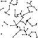 | | AHC045
April/2025 |
| Final Results
(3000 test cases) | M (number of groups) | L (maximum cities in a query) | W (maximum rectangle dimensions) |
|---|
[1,1] |
[2,20] |
[21,70] |
[71,200] |
[201,400] |
3 |
[4,6] |
[7,9] |
[10,12] |
[13,15] |
[500,999] |
[1000,1499] |
[1500,1999] |
[2000,2500] |
|---|
| 70 cases | 514 cases | 589 cases | 919 cases | 908 cases | 238 cases | 683 cases | 677 cases | 697 cases | 705 cases | 736 cases | 797 cases | 755 cases | 712 cases |
| Pos | Coder | Rating | Language | Score | Bests | Uniques | Fails | Avg.Time | Max.Time | Score | Pos | Score | Pos | Score | Pos | Score | Pos | Score | Pos | Score | Pos | Score | Pos | Score | Pos | Score | Pos | Score | Pos | Score | Pos | Score | Pos | Score | Pos | Score | Pos |
|---|
| 1 |  | | nikaj | 3352 | C++ 23 | | 99.629 | 1936 | 1936 | 1 | 1894 | 1934 | 99.467 | 2 | 99.567 | 2 | 99.526 | 1 | 99.691 | 1 | 99.680 | 1 | 98.621 | 1 | 99.391 | 1 | 99.667 | 1 | 99.837 | 1 | 99.955 | 1 | 99.929 | 1 | 99.857 | 1 | 99.604 | 1 | 99.087 | 2 |
| 2 |  |  | eijirou | 3214 | Rust | | 99.098 | 900 | 900 | 0 | 1925 | 1967 | 99.502 | 1 | 99.642 | 1 | 99.516 | 2 | 99.313 | 2 | 98.270 | 2 | 98.285 | 2 | 98.505 | 2 | 99.387 | 2 | 99.524 | 2 | 99.249 | 2 | 98.820 | 2 | 98.962 | 2 | 99.226 | 2 | 99.402 | 1 |
| 3 |  |  | ymatsux | 2899 | C++ 23 | | 96.696 | 46 | 46 | 0 | 1931 | 1937 | 97.385 | 4 | 97.688 | 4 | 97.350 | 4 | 96.671 | 3 | 95.683 | 3 | 97.574 | 3 | 93.173 | 4 | 97.530 | 3 | 98.055 | 3 | 97.668 | 3 | 97.923 | 3 | 96.670 | 3 | 96.333 | 3 | 95.841 | 3 |
| 4 |  | | bowwowforeach | 3213 | C++ 23 | | 96.015 | 69 | 69 | 0 | 1934 | 1945 | 98.184 | 3 | 98.524 | 3 | 98.351 | 3 | 96.163 | 4 | 92.761 | 6 | 95.786 | 4 | 94.283 | 3 | 96.514 | 4 | 96.694 | 5 | 96.619 | 6 | 96.576 | 6 | 96.183 | 4 | 95.920 | 4 | 95.347 | 4 |
| 5 |  | | montplusa | 3003 | Go | | 95.064 | 30 | 30 | 0 | 1234 | 1826 | 96.617 | 6 | 97.000 | 5 | 96.010 | 7 | 94.292 | 6 | 94.016 | 5 | 93.594 | 10 | 91.073 | 7 | 95.348 | 6 | 96.841 | 4 | 97.397 | 5 | 97.230 | 4 | 95.527 | 5 | 94.293 | 6 | 93.124 | 6 |
| 6 |  | | asi1024 | 2846 | C++ 23 | | 94.998 | 0 | 0 | 0 | 1977 | 1983 | 96.422 | 8 | 96.331 | 7 | 94.662 | 9 | 94.860 | 5 | 94.492 | 4 | 95.023 | 5 | 91.164 | 6 | 94.791 | 7 | 96.497 | 6 | 97.422 | 4 | 96.747 | 5 | 95.518 | 6 | 94.457 | 5 | 93.183 | 5 |
| 7 |  | | MathGorilla | 2837 | C++ 20 | | 93.858 | 4 | 4 | 0 | 1696 | 1724 | 96.204 | 9 | 96.765 | 6 | 96.246 | 5 | 94.262 | 7 | 90.072 | 9 | 94.885 | 6 | 89.542 | 8 | 94.443 | 8 | 95.245 | 7 | 95.758 | 8 | 95.004 | 9 | 94.128 | 8 | 93.556 | 7 | 92.691 | 7 |
| 8 |  | | Gear | 2233 | Rust | | 93.856 | 0 | 0 | 0 | 1927 | 1999 | 96.524 | 7 | 96.215 | 8 | 95.200 | 8 | 93.650 | 9 | 91.651 | 8 | 90.139 | 32 | 91.841 | 5 | 95.450 | 5 | 94.863 | 9 | 94.536 | 10 | 96.196 | 7 | 94.682 | 7 | 93.021 | 8 | 91.397 | 9 |
| 9 | |  | Rafbill | 3218 | C++ 23 | | 93.163 | 3 | 3 | 0 | 1130 | 1751 | 95.825 | 10 | 95.160 | 9 | 96.228 | 6 | 94.201 | 8 | 88.787 | 13 | 93.644 | 9 | 88.117 | 11 | 93.333 | 9 | 95.019 | 8 | 95.890 | 7 | 94.683 | 10 | 93.722 | 9 | 92.639 | 9 | 91.520 | 8 |
| 10 |  | | Jirotech | 3159 | C++ 23 | | 92.701 | 0 | 0 | 0 | 1917 | 1967 | 95.375 | 13 | 95.028 | 10 | 94.148 | 10 | 92.877 | 10 | 90.060 | 10 | 92.590 | 17 | 87.799 | 14 | 93.213 | 10 | 94.746 | 10 | 94.973 | 9 | 95.085 | 8 | 93.116 | 10 | 91.861 | 10 | 90.662 | 10 |
| 11 |  | | terry_u16 | 3249 | Rust | | 92.180 | 0 | 0 | 0 | 1883 | 1946 | 95.290 | 14 | 94.923 | 11 | 93.656 | 12 | 91.855 | 11 | 89.757 | 11 | 89.756 | 35 | 87.814 | 13 | 92.959 | 11 | 94.347 | 11 | 94.336 | 12 | 94.491 | 12 | 92.899 | 11 | 91.306 | 11 | 89.910 | 11 |
| 12 |  | | yokozuna57 | 3030 | C++ 20 | | 91.288 | 0 | 0 | 5 | 1690 | 2000 | 94.404 | 19 | 93.745 | 16 | 92.830 | 14 | 91.594 | 12 | 88.347 | 14 | 94.475 | 7 | 83.628 | 21 | 91.948 | 12 | 93.930 | 12 | 94.388 | 11 | 94.509 | 11 | 92.023 | 12 | 90.464 | 14 | 88.009 | 15 |
| 13 |  | | yochan | 2811 | C++ 20 | | 91.148 | 0 | 0 | 0 | 1896 | 1940 | 94.987 | 16 | 93.474 | 18 | 91.731 | 19 | 91.474 | 13 | 88.829 | 12 | 93.370 | 11 | 88.406 | 9 | 91.581 | 15 | 91.991 | 16 | 91.807 | 19 | 93.023 | 17 | 91.668 | 13 | 90.798 | 12 | 89.001 | 13 |
| 14 | | | besukohu | 2644 | C++ 23 | | 91.044 | 0 | 0 | 0 | 1936 | 1983 | 95.478 | 11 | 93.203 | 20 | 89.148 | 30 | 89.826 | 18 | 91.941 | 7 | 89.639 | 36 | 87.639 | 15 | 91.636 | 14 | 92.592 | 14 | 92.717 | 14 | 92.837 | 19 | 91.225 | 18 | 90.489 | 13 | 89.575 | 12 |
| 15 |  | | fuppy0716 | 2602 | C++ 23 | | 90.811 | 0 | 0 | 0 | 1854 | 1958 | 95.275 | 15 | 94.415 | 13 | 93.865 | 11 | 90.573 | 15 | 86.686 | 16 | 93.057 | 15 | 88.117 | 10 | 91.311 | 16 | 91.374 | 19 | 91.625 | 22 | 93.016 | 18 | 91.555 | 14 | 90.078 | 15 | 88.476 | 14 |
| 16 |  | | wanui | 2779 | C++ 20 | | 90.260 | 0 | 0 | 0 | 1848 | 1903 | 93.981 | 21 | 93.185 | 21 | 93.091 | 13 | 90.203 | 16 | 86.537 | 18 | 85.607 | 94 | 82.781 | 25 | 91.741 | 13 | 93.759 | 13 | 94.193 | 13 | 94.156 | 13 | 91.495 | 15 | 88.914 | 18 | 86.275 | 17 |
| 17 |  | | yunix | 2793 | C++ 23 | | 90.253 | 2 | 2 | 0 | 1923 | 1974 | 93.913 | 22 | 92.780 | 22 | 92.494 | 15 | 90.716 | 14 | 86.618 | 17 | 93.108 | 14 | 85.340 | 17 | 90.285 | 17 | 92.079 | 15 | 92.214 | 17 | 94.067 | 14 | 91.465 | 16 | 89.065 | 17 | 86.214 | 18 |
| 18 |  | | tempura0224 | 2739 | C++ 23 | | 90.225 | 0 | 0 | 0 | 1931 | 1947 | 94.974 | 17 | 94.074 | 14 | 92.420 | 16 | 89.715 | 19 | 86.773 | 15 | 93.724 | 8 | 86.642 | 16 | 89.916 | 18 | 91.420 | 18 | 91.631 | 20 | 93.053 | 16 | 91.247 | 17 | 89.465 | 16 | 86.964 | 16 |
| 19 |  |  | wleite | 2843 | Java | | 89.421 | 0 | 0 | 0 | 1897 | 1994 | 93.541 | 23 | 93.231 | 19 | 91.430 | 22 | 89.107 | 20 | 85.962 | 19 | 90.532 | 29 | 83.988 | 20 | 89.252 | 19 | 91.575 | 17 | 92.343 | 15 | 92.600 | 21 | 90.217 | 21 | 88.569 | 20 | 86.149 | 19 |
| 20 |  | | Piiiii | 2445 | C++ 23 | | 89.328 | 5 | 5 | 0 | 1855 | 1911 | 96.676 | 5 | 94.744 | 12 | 92.188 | 18 | 89.057 | 21 | 84.114 | 20 | 93.367 | 12 | 87.927 | 12 | 88.233 | 21 | 89.659 | 24 | 90.045 | 27 | 91.611 | 23 | 90.708 | 20 | 88.701 | 19 | 86.088 | 20 |
| 21 |  | | ssaattoo | 2589 | Rust | | 88.899 | 0 | 0 | 2 | 1897 | 2000 | 92.616 | 26 | 92.062 | 25 | 92.218 | 17 | 89.997 | 17 | 83.558 | 22 | 92.458 | 18 | 85.315 | 18 | 88.539 | 20 | 90.236 | 20 | 90.194 | 26 | 93.257 | 15 | 90.806 | 19 | 87.503 | 21 | 83.741 | 25 |
| 22 | | | kurakura | 2313 | C++ 20 | | 88.008 | 0 | 0 | 0 | 1950 | 1971 | 93.153 | 25 | 92.758 | 23 | 90.995 | 24 | 87.859 | 24 | 83.137 | 23 | 90.881 | 27 | 82.466 | 27 | 87.836 | 22 | 90.218 | 21 | 90.389 | 25 | 91.403 | 24 | 88.884 | 25 | 86.994 | 22 | 84.595 | 23 |
| 23 | | | behoma8 | 2492 | C# 11.0 AOT | | 87.829 | 0 | 0 | 1 | 1064 | 1880 | 92.535 | 27 | 91.830 | 28 | 91.711 | 20 | 88.552 | 22 | 81.951 | 25 | 91.332 | 25 | 81.889 | 29 | 86.448 | 26 | 89.951 | 22 | 91.628 | 21 | 91.320 | 25 | 88.955 | 24 | 86.869 | 23 | 83.975 | 24 |
| 24 | | | syndrome | 2416 | C++ 20 | | 87.294 | 0 | 0 | 0 | 1761 | 1987 | 94.005 | 20 | 93.642 | 17 | 91.674 | 21 | 87.360 | 26 | 80.274 | 32 | 87.748 | 51 | 84.320 | 19 | 87.603 | 24 | 88.343 | 29 | 88.688 | 33 | 91.019 | 26 | 88.975 | 22 | 86.358 | 25 | 82.554 | 27 |
| 25 |  | | yowa | 2570 | C++ 20 | | 87.238 | 0 | 0 | 0 | 1515 | 1557 | 91.974 | 30 | 92.205 | 24 | 91.399 | 23 | 88.134 | 23 | 80.454 | 28 | 86.039 | 87 | 81.541 | 31 | 85.767 | 28 | 89.709 | 23 | 92.130 | 18 | 91.680 | 22 | 88.959 | 23 | 85.977 | 27 | 82.056 | 30 |
| 26 |  | | sugarrr | 2846 | C++ 23 | | 87.122 | 0 | 0 | 0 | 1731 | 1794 | 90.620 | 35 | 91.600 | 29 | 90.858 | 28 | 87.453 | 25 | 81.559 | 26 | 87.760 | 50 | 80.877 | 32 | 85.400 | 29 | 89.480 | 25 | 92.279 | 16 | 92.789 | 20 | 88.445 | 26 | 85.183 | 28 | 81.839 | 31 |
| 27 |  | | saharan | 3208 | C++ 20 | | 86.998 | 0 | 0 | 1 | 1956 | 1973 | 95.456 | 12 | 93.814 | 15 | 90.993 | 25 | 86.512 | 29 | 80.387 | 30 | 88.665 | 42 | 83.416 | 23 | 87.174 | 25 | 88.303 | 30 | 88.445 | 34 | 88.740 | 36 | 87.912 | 27 | 86.532 | 24 | 84.669 | 22 |
| 28 |  |  | Psyho | 3034 | C++ 20 | | 86.685 | 0 | 0 | 0 | 1929 | 1935 | 94.704 | 18 | 91.213 | 31 | 88.899 | 31 | 85.654 | 30 | 83.110 | 24 | 83.635 | 138 | 82.928 | 24 | 87.640 | 23 | 88.358 | 28 | 88.784 | 31 | 88.415 | 41 | 87.325 | 30 | 86.143 | 26 | 84.756 | 21 |
| 29 |  | | rabot | 2698 | Java | | 86.288 | 0 | 0 | 0 | 1568 | 1665 | 92.024 | 29 | 91.968 | 27 | 90.956 | 26 | 86.831 | 27 | 79.054 | 36 | 92.644 | 16 | 81.699 | 30 | 84.394 | 30 | 87.603 | 31 | 89.108 | 28 | 90.104 | 31 | 87.455 | 28 | 85.179 | 29 | 82.214 | 29 |
| 30 | |  | MyK_00L | 1707 | C++ 17 | | 86.057 | 0 | 0 | 0 | 834 | 1887 | 91.185 | 33 | 92.050 | 26 | 90.916 | 27 | 86.558 | 28 | 78.610 | 38 | 88.208 | 47 | 78.525 | 42 | 84.389 | 31 | 89.411 | 27 | 90.913 | 24 | 90.238 | 28 | 87.388 | 29 | 84.730 | 31 | 81.654 | 32 |
| 31 |  | | uta_ccc | 2503 | Nim | | 85.739 | 0 | 0 | 0 | 1812 | 1931 | 90.457 | 37 | 91.235 | 30 | 89.507 | 29 | 85.211 | 32 | 80.353 | 31 | 83.575 | 141 | 77.204 | 51 | 85.770 | 27 | 89.467 | 26 | 91.021 | 23 | 89.125 | 34 | 86.670 | 32 | 84.490 | 32 | 82.520 | 28 |
| 32 |  | | saitodevel01 | 2298 | C++ 20 | | 85.224 | 0 | 0 | 0 | 1828 | 1853 | 92.272 | 28 | 90.992 | 32 | 88.718 | 32 | 85.646 | 31 | 78.721 | 37 | 89.183 | 39 | 82.289 | 28 | 83.924 | 32 | 85.977 | 38 | 87.234 | 43 | 87.202 | 51 | 85.977 | 34 | 84.822 | 30 | 82.762 | 26 |
| 33 |  | | siman | 2799 | C++ 20 | | 85.223 | 0 | 0 | 0 | 1515 | 1943 | 91.129 | 34 | 90.149 | 33 | 88.417 | 33 | 84.736 | 33 | 80.399 | 29 | 89.801 | 34 | 80.492 | 33 | 82.924 | 36 | 86.788 | 36 | 88.920 | 30 | 90.172 | 30 | 86.954 | 31 | 83.813 | 33 | 79.664 | 33 |
| 34 | | | sash0 | 2294 | Rust | | 84.511 | 0 | 0 | 0 | 1860 | 1881 | 91.730 | 31 | 87.511 | 55 | 85.874 | 49 | 84.697 | 34 | 81.186 | 27 | 85.905 | 90 | 78.680 | 40 | 83.405 | 34 | 86.930 | 35 | 88.362 | 35 | 89.875 | 32 | 86.621 | 33 | 82.772 | 35 | 78.450 | 38 |
| 35 | | | fgwiebfaoish | 2451 | Rust | | 83.719 | 0 | 0 | 0 | 1895 | 1988 | 88.374 | 58 | 87.531 | 54 | 86.374 | 43 | 84.130 | 36 | 79.064 | 35 | 85.105 | 104 | 75.921 | 64 | 82.066 | 42 | 87.403 | 32 | 88.751 | 32 | 90.508 | 27 | 85.930 | 35 | 81.519 | 41 | 76.558 | 46 |
| 36 |  | | nnnSMM | 2389 | C++ 20 | | 83.676 | 0 | 0 | 0 | 1832 | 1896 | 86.233 | 122 | 87.437 | 57 | 88.093 | 34 | 84.587 | 35 | 77.562 | 41 | 88.442 | 45 | 77.408 | 48 | 81.242 | 43 | 86.150 | 37 | 88.029 | 39 | 87.845 | 45 | 84.877 | 39 | 82.346 | 36 | 79.432 | 35 |
| 37 | | | sortA | 2129 | C++ 23 | | 83.602 | 0 | 0 | 0 | 1950 | 1980 | 89.050 | 53 | 89.188 | 39 | 87.371 | 37 | 83.421 | 42 | 77.756 | 40 | 82.314 | 176 | 74.539 | 83 | 83.750 | 33 | 87.355 | 33 | 88.962 | 29 | 88.157 | 43 | 84.583 | 44 | 82.004 | 37 | 79.489 | 34 |
| 38 | | | cri | 1868 | Rust | | 83.478 | 0 | 0 | 0 | 1288 | 1992 | 89.482 | 48 | 88.745 | 41 | 86.946 | 40 | 84.003 | 37 | 77.251 | 45 | 92.412 | 19 | 78.141 | 45 | 80.338 | 47 | 84.497 | 42 | 87.639 | 40 | 90.202 | 29 | 85.197 | 37 | 81.466 | 42 | 76.735 | 44 |
| 39 |  | | gasin | 2488 | C++ 23 | | 83.422 | 0 | 0 | 0 | 1643 | 1993 | 88.804 | 55 | 88.163 | 44 | 86.857 | 41 | 83.957 | 38 | 77.554 | 42 | 89.184 | 38 | 80.032 | 35 | 80.288 | 48 | 83.955 | 46 | 87.244 | 42 | 88.466 | 38 | 84.885 | 38 | 81.808 | 39 | 78.282 | 39 |
| 40 |  | | tomerun | 2869 | Rust | | 83.300 | 1 | 1 | 22 | 1919 | 1986 | 61.919 | 510 | 88.359 | 43 | 85.948 | 48 | 83.584 | 40 | 80.079 | 33 | 90.669 | 28 | 80.466 | 34 | 82.824 | 37 | 83.514 | 49 | 83.802 | 55 | 86.638 | 57 | 84.236 | 46 | 82.832 | 34 | 79.297 | 36 |
| 41 | | | catoon | 2465 | C++ 23 | | 83.089 | 0 | 0 | 1 | 1711 | 1857 | 90.553 | 36 | 89.657 | 36 | 87.325 | 38 | 83.490 | 41 | 75.642 | 49 | 86.755 | 73 | 78.218 | 44 | 82.268 | 40 | 84.516 | 41 | 85.947 | 47 | 87.157 | 52 | 84.614 | 42 | 81.857 | 38 | 78.483 | 37 |
| 42 |  | | niuez | 2696 | Rust | | 83.071 | 0 | 0 | 0 | 1934 | 1973 | 89.476 | 49 | 87.795 | 50 | 85.666 | 54 | 83.096 | 43 | 78.194 | 39 | 91.711 | 23 | 83.615 | 22 | 82.234 | 41 | 81.654 | 57 | 81.830 | 66 | 88.162 | 42 | 85.370 | 36 | 81.790 | 40 | 76.592 | 45 |
| 43 |  | | phyllo | 2325 | C++ 20 | | 82.913 | 0 | 0 | 0 | 1926 | 1991 | 89.428 | 50 | 88.472 | 42 | 86.369 | 44 | 82.785 | 46 | 77.151 | 47 | 84.933 | 111 | 76.542 | 57 | 80.872 | 44 | 85.215 | 40 | 88.086 | 38 | 88.425 | 40 | 84.876 | 40 | 80.801 | 44 | 77.256 | 42 |
| 44 |  | | highjump | 2514 | C++ 20 | | 82.209 | 0 | 0 | 0 | 1838 | 1978 | 90.164 | 41 | 89.716 | 35 | 87.498 | 36 | 81.992 | 49 | 74.136 | 57 | 86.832 | 72 | 76.652 | 56 | 79.859 | 51 | 83.585 | 48 | 86.931 | 44 | 88.739 | 37 | 84.500 | 45 | 80.231 | 47 | 74.992 | 51 |
| 45 |  | | Kiri8128 | 2666 | Rust | | 82.086 | 0 | 0 | 0 | 1935 | 1986 | 91.492 | 32 | 89.150 | 40 | 84.372 | 62 | 80.550 | 59 | 77.434 | 44 | 89.558 | 37 | 79.684 | 36 | 80.044 | 49 | 82.074 | 53 | 83.863 | 54 | 85.696 | 68 | 83.506 | 51 | 81.066 | 43 | 77.846 | 40 |
| 46 |  | | dn6049949 | 2755 | C++ 23 | | 81.979 | 0 | 0 | 8 | 1841 | 2000 | 90.257 | 40 | 89.637 | 37 | 86.528 | 42 | 81.402 | 53 | 74.640 | 54 | 87.615 | 55 | 75.765 | 69 | 80.713 | 45 | 83.472 | 51 | 85.836 | 49 | 86.398 | 63 | 83.627 | 50 | 80.748 | 45 | 76.873 | 43 |
| 47 | | | mn_7545 | 2178 | C++ 23 | | 81.840 | 0 | 0 | 0 | 1948 | 1956 | 89.584 | 47 | 89.283 | 38 | 87.306 | 39 | 82.259 | 47 | 73.060 | 62 | 85.900 | 91 | 76.132 | 61 | 79.484 | 54 | 83.697 | 47 | 86.426 | 45 | 86.905 | 54 | 83.653 | 49 | 80.272 | 46 | 76.238 | 48 |
| 48 |  | | xyz600 | 2418 | Rust | | 81.815 | 0 | 0 | 0 | 1955 | 1971 | 86.579 | 113 | 87.755 | 51 | 86.223 | 45 | 82.117 | 48 | 74.919 | 53 | 82.400 | 172 | 69.171 | 183 | 82.420 | 39 | 86.940 | 34 | 88.218 | 37 | 87.499 | 48 | 83.414 | 52 | 79.953 | 50 | 76.123 | 49 |
| 49 |  | | ei13333 | 1572 | C++ 23 | | 81.685 | 0 | 0 | 0 | 1937 | 1944 | 87.864 | 64 | 85.853 | 71 | 85.707 | 52 | 82.988 | 44 | 74.920 | 52 | 84.541 | 122 | 75.341 | 74 | 79.971 | 50 | 83.996 | 45 | 86.226 | 46 | 88.440 | 39 | 84.082 | 47 | 79.335 | 53 | 74.510 | 54 |
| 50 |  | | ToastUz | 2340 | Rust | | 81.667 | 0 | 0 | 0 | 1802 | 1951 | 93.405 | 24 | 77.957 | 248 | 77.143 | 153 | 83.654 | 39 | 83.785 | 21 | 85.264 | 100 | 82.713 | 26 | 82.745 | 38 | 80.735 | 62 | 79.324 | 87 | 87.551 | 47 | 84.609 | 43 | 80.116 | 49 | 73.935 | 57 |
| 51 |  | | merhorn | 2166 | C++ 23 | | 81.417 | 0 | 0 | 0 | 1891 | 1969 | 87.075 | 82 | 85.683 | 74 | 81.516 | 96 | 80.546 | 60 | 79.382 | 34 | 82.014 | 186 | 73.464 | 100 | 78.889 | 56 | 84.450 | 43 | 88.349 | 36 | 89.039 | 35 | 83.876 | 48 | 78.954 | 55 | 73.396 | 59 |
| 52 |  | | ikoma | 2354 | Rust | | 81.303 | 0 | 0 | 1 | 1863 | 1943 | 85.948 | 135 | 86.867 | 60 | 85.679 | 53 | 82.946 | 45 | 73.294 | 60 | 91.127 | 26 | 76.419 | 58 | 78.340 | 60 | 81.731 | 56 | 85.140 | 51 | 89.480 | 33 | 84.838 | 41 | 79.773 | 51 | 70.516 | 78 |
| 53 | | | flowlight | 2101 | Rust | | 81.288 | 0 | 0 | 0 | 1601 | 1990 | 88.096 | 61 | 87.345 | 58 | 84.873 | 56 | 80.998 | 56 | 75.303 | 50 | 87.023 | 67 | 78.132 | 46 | 79.812 | 52 | 81.734 | 55 | 83.386 | 60 | 85.224 | 74 | 82.196 | 61 | 80.157 | 48 | 77.403 | 41 |
| 54 | | | ky0r0suke | 2263 | C++ 20 | | 80.916 | 0 | 0 | 0 | 1903 | 1988 | 87.414 | 73 | 79.785 | 211 | 84.807 | 57 | 81.981 | 50 | 77.453 | 43 | 80.160 | 253 | 73.058 | 108 | 78.813 | 57 | 84.349 | 44 | 87.409 | 41 | 84.970 | 79 | 82.238 | 59 | 79.681 | 52 | 76.554 | 47 |
| 55 | | | kozima | 2565 | Rust | | 80.880 | 0 | 0 | 0 | 295 | 607 | 88.186 | 59 | 87.853 | 49 | 85.957 | 47 | 81.429 | 52 | 72.519 | 64 | 88.948 | 40 | 77.406 | 49 | 78.265 | 61 | 81.166 | 59 | 83.749 | 57 | 87.333 | 50 | 82.780 | 55 | 78.908 | 56 | 74.173 | 56 |
| 56 |  | | sash | 2264 | C++ 23 | | 80.512 | 0 | 0 | 0 | 1261 | 1870 | 87.489 | 72 | 87.447 | 56 | 82.226 | 90 | 78.241 | 79 | 77.233 | 46 | 73.411 | 445 | 69.926 | 168 | 82.950 | 35 | 85.471 | 39 | 85.919 | 48 | 85.001 | 78 | 81.720 | 62 | 79.175 | 54 | 75.936 | 50 |
| 57 |  | | Kahuka | 2502 | C++ 20 | | 80.508 | 0 | 0 | 0 | 1886 | 1931 | 87.004 | 85 | 86.155 | 65 | 84.727 | 58 | 81.506 | 51 | 73.064 | 61 | 87.720 | 52 | 79.231 | 38 | 79.183 | 55 | 79.964 | 65 | 81.121 | 76 | 87.754 | 46 | 82.982 | 53 | 78.099 | 60 | 72.803 | 61 |
| 58 |  | | titan23 | 2367 | C++ 23 | | 80.493 | 0 | 0 | 0 | 1958 | 1975 | 85.368 | 149 | 86.253 | 63 | 84.951 | 55 | 81.034 | 55 | 73.417 | 59 | 81.686 | 199 | 74.359 | 87 | 79.743 | 53 | 82.804 | 52 | 84.468 | 52 | 86.489 | 60 | 82.228 | 60 | 78.457 | 57 | 74.511 | 53 |
| 59 | | | small_koala | 2134 | C++ 23 | | 80.187 | 0 | 0 | 0 | 1949 | 1955 | 86.399 | 116 | 84.881 | 83 | 83.662 | 70 | 80.456 | 62 | 74.524 | 56 | 91.821 | 21 | 78.653 | 41 | 77.340 | 62 | 79.293 | 72 | 81.363 | 74 | 87.943 | 44 | 82.856 | 54 | 77.883 | 62 | 71.624 | 66 |
| 60 | | | sig_256 | 2064 | C++ 17 | | 80.086 | 0 | 0 | 6 | 1445 | 1995 | 89.086 | 52 | 85.872 | 70 | 84.259 | 65 | 80.642 | 57 | 72.847 | 63 | 91.895 | 20 | 76.911 | 53 | 77.289 | 63 | 79.541 | 71 | 82.402 | 62 | 86.076 | 65 | 82.404 | 58 | 78.409 | 58 | 73.078 | 60 |
| 61 |  | | scat_neko | 2332 | Python | | 79.821 | 0 | 0 | 0 | 797 | 1190 | 88.145 | 60 | 87.651 | 53 | 85.793 | 50 | 80.509 | 61 | 70.177 | 74 | 84.729 | 115 | 75.867 | 65 | 76.643 | 69 | 81.084 | 60 | 83.798 | 56 | 85.604 | 70 | 81.358 | 65 | 77.783 | 63 | 74.284 | 55 |
| 62 | | | reew2n | 2144 | C++ 20 | | 79.603 | 0 | 0 | 0 | 1479 | 1705 | 88.833 | 54 | 87.721 | 52 | 85.744 | 51 | 80.217 | 64 | 69.690 | 81 | 82.764 | 164 | 77.370 | 50 | 78.448 | 59 | 79.750 | 68 | 81.662 | 67 | 86.504 | 59 | 82.541 | 57 | 77.340 | 64 | 71.580 | 67 |
| 63 |  | | yosss | 2499 | C++ 20 | | 79.545 | 0 | 0 | 0 | 1423 | 1565 | 90.266 | 39 | 83.016 | 124 | 87.628 | 35 | 81.239 | 54 | 69.795 | 79 | 87.587 | 56 | 77.046 | 52 | 77.031 | 65 | 79.655 | 69 | 81.554 | 69 | 83.748 | 93 | 81.623 | 64 | 77.988 | 61 | 74.523 | 52 |
| 64 |  | | assy | 2476 | C++ 23 | | 79.432 | 0 | 0 | 23 | 1565 | 1747 | 84.912 | 171 | 84.554 | 90 | 84.354 | 64 | 80.439 | 63 | 71.899 | 66 | 75.746 | 388 | 70.914 | 148 | 80.353 | 46 | 83.477 | 50 | 84.047 | 53 | 87.350 | 49 | 82.569 | 56 | 76.884 | 67 | 70.439 | 80 |
| 65 | | | nanoseeing | 1626 | C++ 20 | | 79.393 | 0 | 0 | 0 | 1905 | 1982 | 89.671 | 46 | 83.812 | 104 | 82.360 | 86 | 79.708 | 67 | 73.856 | 58 | 84.707 | 117 | 74.213 | 91 | 78.695 | 58 | 80.787 | 61 | 81.909 | 64 | 84.068 | 89 | 81.213 | 67 | 78.177 | 59 | 73.812 | 58 |
| 66 |  | | kudryavka_chan | 2126 | C++ 20 | | 79.238 | 0 | 0 | 0 | 715 | 1978 | 88.059 | 63 | 86.181 | 64 | 84.178 | 66 | 80.081 | 65 | 70.571 | 71 | 90.468 | 30 | 78.335 | 43 | 77.035 | 64 | 78.003 | 78 | 79.659 | 83 | 86.526 | 58 | 81.658 | 63 | 76.928 | 66 | 71.446 | 71 |
| 67 | | | Roy_R | 2061 | C++ 20 | | 79.130 | 0 | 0 | 0 | 1082 | 1747 | 85.512 | 144 | 84.742 | 87 | 81.788 | 93 | 78.256 | 78 | 74.623 | 55 | 83.707 | 136 | 71.327 | 142 | 76.199 | 74 | 81.824 | 54 | 85.296 | 50 | 86.820 | 55 | 81.257 | 66 | 76.542 | 70 | 71.545 | 68 |
| 68 |  | | physics0523 | 2722 | C++ 20 | | 79.028 | 0 | 0 | 0 | 1976 | 1979 | 86.959 | 90 | 86.145 | 66 | 83.876 | 68 | 79.456 | 69 | 70.810 | 69 | 91.648 | 24 | 78.802 | 39 | 76.854 | 68 | 77.409 | 87 | 78.676 | 94 | 87.061 | 53 | 81.083 | 71 | 76.311 | 73 | 71.306 | 73 |
| 69 | | | twins_fuyu | 1387 | C++ 23 | | 78.834 | 0 | 0 | 1 | 1289 | 1817 | 88.376 | 57 | 85.906 | 69 | 84.408 | 60 | 80.557 | 58 | 68.734 | 87 | 87.110 | 66 | 74.938 | 77 | 75.750 | 77 | 79.979 | 64 | 81.643 | 68 | 86.127 | 64 | 81.202 | 68 | 76.311 | 74 | 71.318 | 72 |
| 70 | | | get_tanni | 1768 | C++ 20 | | 78.577 | 0 | 0 | 0 | 209 | 322 | 87.222 | 77 | 85.931 | 67 | 83.519 | 73 | 78.884 | 73 | 70.231 | 72 | 88.488 | 44 | 77.847 | 47 | 76.513 | 71 | 77.420 | 86 | 79.064 | 91 | 85.601 | 72 | 80.866 | 72 | 76.376 | 72 | 71.087 | 75 |
| 71 | | | Bolero | 2247 | C++ 23 | | 78.407 | 0 | 0 | 0 | 1827 | 1875 | 85.102 | 162 | 84.882 | 82 | 83.071 | 83 | 78.975 | 71 | 70.624 | 70 | 87.170 | 63 | 75.981 | 63 | 75.624 | 80 | 77.872 | 80 | 80.998 | 77 | 86.736 | 56 | 80.422 | 76 | 75.801 | 79 | 70.304 | 81 |
| 72 | | | tsutaj | 2144 | C++ 23 | | 78.381 | 0 | 0 | 0 | 960 | 1272 | 86.997 | 86 | 85.521 | 77 | 83.420 | 75 | 79.060 | 70 | 69.719 | 80 | 87.228 | 60 | 75.816 | 67 | 75.419 | 82 | 77.935 | 79 | 81.164 | 75 | 86.428 | 62 | 81.112 | 69 | 75.831 | 78 | 69.710 | 86 |
| 73 |  | | sh_mug | 2180 | C++ 23 | | 78.337 | 0 | 0 | 0 | 1567 | 1864 | 87.637 | 68 | 85.050 | 80 | 78.812 | 125 | 75.138 | 116 | 76.750 | 48 | 88.153 | 48 | 75.493 | 71 | 76.389 | 73 | 78.512 | 74 | 79.477 | 84 | 83.503 | 98 | 80.788 | 73 | 77.136 | 65 | 71.527 | 69 |
| 74 |  | | fumin29 | 2051 | Rust | | 78.055 | 0 | 0 | 0 | 1922 | 2000 | 86.129 | 128 | 85.685 | 73 | 84.358 | 63 | 79.536 | 68 | 67.524 | 101 | 85.755 | 93 | 72.431 | 118 | 73.655 | 99 | 79.613 | 70 | 83.589 | 58 | 83.610 | 97 | 79.803 | 81 | 76.193 | 75 | 72.328 | 64 |
| 75 | | | takytank | 2224 | C# 11.0 AOT | | 77.997 | 0 | 0 | 19 | 1682 | 2000 | 86.237 | 121 | 83.147 | 121 | 84.429 | 59 | 78.960 | 72 | 69.301 | 82 | 79.241 | 287 | 72.907 | 110 | 75.929 | 76 | 79.766 | 67 | 82.747 | 61 | 83.634 | 96 | 80.313 | 77 | 76.564 | 69 | 71.099 | 74 |
| 76 | | | MNMNBK | 1831 | C++ 23 | | 77.934 | 0 | 0 | 0 | 1784 | 1790 | 87.752 | 66 | 86.780 | 61 | 84.152 | 67 | 78.460 | 77 | 67.603 | 100 | 87.194 | 61 | 76.768 | 55 | 76.407 | 72 | 76.937 | 89 | 78.389 | 96 | 84.071 | 88 | 80.288 | 78 | 76.029 | 76 | 70.975 | 76 |
| 77 |  | | theory_and_me | 2285 | C++ 20 | | 77.668 | 0 | 0 | 2 | 1849 | 1991 | 89.793 | 45 | 86.565 | 62 | 83.386 | 76 | 77.881 | 82 | 67.771 | 96 | 90.238 | 31 | 79.684 | 37 | 76.932 | 67 | 75.231 | 107 | 74.586 | 138 | 86.437 | 61 | 81.089 | 70 | 74.899 | 87 | 67.710 | 107 |
| 78 | | | BinomialSheep | 1992 | C++ 20 | | 77.584 | 0 | 0 | 0 | 1716 | 1815 | 88.772 | 56 | 87.142 | 59 | 81.982 | 92 | 76.090 | 105 | 69.972 | 77 | 82.995 | 156 | 73.153 | 103 | 75.361 | 84 | 78.410 | 76 | 81.370 | 73 | 84.218 | 87 | 80.769 | 74 | 75.857 | 77 | 68.994 | 97 |
| 79 |  | | tipstar0125 | 1966 | Rust | | 77.576 | 0 | 0 | 8 | 1932 | 2000 | 87.231 | 75 | 84.309 | 94 | 83.708 | 69 | 78.542 | 76 | 68.067 | 94 | 86.457 | 77 | 76.811 | 54 | 75.503 | 81 | 76.686 | 94 | 78.191 | 97 | 84.840 | 80 | 79.925 | 80 | 75.300 | 82 | 69.853 | 84 |
| 80 |  | | MoSooN | 1618 | C++ 17 | | 77.540 | 0 | 0 | 0 | 1729 | 1739 | 85.826 | 136 | 85.582 | 76 | 83.107 | 82 | 78.042 | 80 | 68.229 | 91 | 87.124 | 64 | 73.103 | 106 | 74.249 | 93 | 77.844 | 82 | 81.461 | 72 | 85.603 | 71 | 80.700 | 75 | 75.149 | 84 | 68.201 | 102 |
| 81 | | | FplusFplusF | 2520 | C++ 23 | | 77.512 | 0 | 0 | 0 | 1895 | 1953 | 86.228 | 123 | 84.158 | 98 | 80.394 | 111 | 76.688 | 98 | 72.044 | 65 | 84.061 | 130 | 69.738 | 174 | 77.013 | 66 | 80.192 | 63 | 80.664 | 79 | 81.777 | 127 | 79.108 | 91 | 76.491 | 71 | 72.401 | 63 |
| 82 |  | | nikuroll | 2222 | Python | | 77.477 | 0 | 0 | 1 | 1259 | 1919 | 86.276 | 119 | 84.944 | 81 | 83.355 | 78 | 78.808 | 74 | 67.413 | 105 | 85.943 | 89 | 74.496 | 85 | 73.336 | 100 | 77.086 | 88 | 81.872 | 65 | 85.017 | 77 | 79.720 | 82 | 75.320 | 81 | 69.462 | 91 |
| 83 | |  | tonkosi | 1271 | C++ 20 | | 77.273 | 0 | 0 | 0 | 639 | 1316 | 86.033 | 131 | 84.319 | 93 | 80.702 | 106 | 77.537 | 84 | 70.117 | 75 | 85.312 | 99 | 75.481 | 72 | 75.301 | 85 | 76.290 | 97 | 79.160 | 89 | 85.200 | 75 | 79.687 | 83 | 74.578 | 94 | 69.233 | 96 |
| 84 | | | dfukunaga | 1267 | C++ 20 | | 77.195 | 0 | 0 | 0 | 181 | 1310 | 87.192 | 78 | 75.224 | 303 | 84.377 | 61 | 79.847 | 66 | 70.197 | 73 | 87.704 | 53 | 76.344 | 59 | 75.038 | 88 | 76.360 | 96 | 77.369 | 106 | 85.606 | 69 | 79.193 | 89 | 74.326 | 96 | 69.306 | 94 |
| 85 | | | frictionless | 2256 | C++ 20 | | 77.192 | 0 | 0 | 0 | 735 | 1574 | 89.271 | 51 | 89.726 | 34 | 86.110 | 46 | 77.042 | 92 | 63.533 | 143 | 77.884 | 324 | 70.920 | 147 | 76.101 | 75 | 79.788 | 66 | 81.517 | 71 | 80.205 | 154 | 79.357 | 87 | 76.630 | 68 | 72.251 | 65 |
| 86 | | | Shibuyap | 2682 | C++ 23 | | 77.123 | 0 | 0 | 0 | 1862 | 1904 | 84.047 | 199 | 82.844 | 129 | 82.271 | 87 | 77.240 | 89 | 69.892 | 78 | 70.638 | 549 | 69.166 | 184 | 76.559 | 70 | 81.193 | 58 | 83.538 | 59 | 84.452 | 86 | 79.453 | 86 | 74.693 | 93 | 69.515 | 88 |
| 87 | | | Illedan | 1829 | C++ 23 | | 77.101 | 0 | 0 | 0 | 1830 | 1838 | 86.594 | 111 | 85.925 | 68 | 83.379 | 77 | 77.604 | 83 | 66.794 | 109 | 84.934 | 110 | 75.221 | 75 | 75.201 | 86 | 76.695 | 93 | 78.505 | 95 | 83.641 | 94 | 79.583 | 85 | 74.983 | 86 | 69.809 | 85 |
| 88 |  | | subegen | 1725 | Python | | 77.089 | 0 | 0 | 0 | 1856 | 1932 | 86.782 | 97 | 84.778 | 85 | 83.610 | 71 | 78.014 | 81 | 66.824 | 108 | 84.793 | 113 | 76.279 | 60 | 75.418 | 83 | 76.198 | 99 | 77.760 | 101 | 84.037 | 90 | 79.685 | 84 | 74.856 | 88 | 69.370 | 93 |
| 89 |  | | keroru | 2106 | C++ 20 | | 76.830 | 0 | 0 | 0 | 1954 | 1994 | 86.988 | 87 | 83.198 | 120 | 80.606 | 109 | 76.822 | 95 | 70.002 | 76 | 88.351 | 46 | 74.795 | 79 | 73.674 | 98 | 75.881 | 100 | 78.882 | 92 | 85.505 | 73 | 80.058 | 79 | 74.115 | 98 | 67.129 | 113 |
| 90 | | | strawberry0929 | 1836 | C++ 20 | | 76.785 | 0 | 0 | 0 | 147 | 186 | 86.680 | 106 | 85.853 | 72 | 83.137 | 81 | 77.342 | 88 | 66.204 | 118 | 86.411 | 81 | 75.743 | 70 | 74.486 | 91 | 75.715 | 101 | 77.810 | 100 | 83.386 | 99 | 79.330 | 88 | 74.741 | 90 | 69.280 | 95 |
| 91 | | | YamagenSakam | 2126 | C++ 20 | | 76.760 | 0 | 0 | 0 | 1933 | 1973 | 90.309 | 38 | 88.114 | 45 | 81.188 | 100 | 74.703 | 121 | 68.497 | 89 | 80.627 | 233 | 72.695 | 114 | 75.656 | 79 | 77.862 | 81 | 79.362 | 86 | 81.750 | 128 | 78.878 | 94 | 75.452 | 80 | 70.617 | 77 |
| 92 | | | plcherrim | 2331 | C++ 23 | | 76.651 | 0 | 0 | 0 | 364 | 1923 | 87.179 | 79 | 84.512 | 91 | 83.488 | 74 | 77.448 | 85 | 66.147 | 120 | 85.512 | 95 | 75.840 | 66 | 74.777 | 89 | 75.642 | 102 | 77.241 | 107 | 82.865 | 102 | 79.176 | 90 | 74.755 | 89 | 69.410 | 92 |
| 93 | | | Moegi | 2470 | C++ 20 | | 76.535 | 0 | 0 | 0 | 1820 | 1932 | 84.737 | 177 | 83.100 | 123 | 78.975 | 123 | 75.481 | 111 | 71.671 | 67 | 83.062 | 154 | 70.151 | 162 | 72.900 | 111 | 78.422 | 75 | 82.142 | 63 | 81.182 | 139 | 77.296 | 117 | 75.038 | 85 | 72.467 | 62 |
| 94 | | | koshinM | 1674 | C++ 17 | | 76.485 | 0 | 0 | 0 | 1437 | 1946 | 86.590 | 112 | 83.338 | 115 | 83.328 | 79 | 77.399 | 86 | 66.464 | 114 | 81.910 | 190 | 74.131 | 92 | 75.124 | 87 | 76.663 | 95 | 78.066 | 98 | 82.658 | 108 | 78.833 | 96 | 74.461 | 95 | 69.622 | 87 |
| 95 | |  | k3232908 | 1486 | Python | | 76.452 | 0 | 0 | 0 | 1450 | 1997 | 87.559 | 69 | 83.869 | 101 | 79.835 | 119 | 76.479 | 101 | 69.176 | 83 | 84.143 | 128 | 71.980 | 128 | 73.037 | 106 | 77.518 | 85 | 80.416 | 81 | 82.340 | 112 | 78.398 | 101 | 74.718 | 91 | 70.027 | 83 |
| 96 |  | | hiro116s | 2162 | Java | | 76.233 | 0 | 0 | 2 | 1332 | 1999 | 85.293 | 153 | 84.576 | 89 | 82.667 | 85 | 77.392 | 87 | 65.465 | 126 | 82.416 | 171 | 72.569 | 116 | 72.738 | 115 | 77.836 | 83 | 79.467 | 85 | 85.020 | 76 | 78.866 | 95 | 73.137 | 109 | 67.486 | 109 |
| 97 |  | | Tomii9273 | 1802 | Python | | 76.162 | 0 | 0 | 0 | 858 | 1875 | 84.743 | 176 | 83.274 | 117 | 81.532 | 95 | 76.708 | 97 | 67.440 | 104 | 84.530 | 123 | 74.628 | 81 | 74.013 | 95 | 75.566 | 103 | 77.478 | 104 | 83.801 | 92 | 78.734 | 97 | 73.657 | 104 | 68.044 | 105 |
| 98 |  | | allegrogiken | 2070 | D | | 76.029 | 0 | 0 | 0 | 1190 | 1653 | 84.558 | 183 | 80.025 | 202 | 79.878 | 118 | 75.251 | 113 | 71.402 | 68 | 88.511 | 43 | 74.282 | 89 | 72.658 | 116 | 74.950 | 113 | 77.813 | 99 | 83.880 | 91 | 78.699 | 98 | 73.767 | 103 | 67.325 | 112 |
| 99 | | | chudanu | 2114 | Python | | 75.966 | 0 | 0 | 1 | 1131 | 1883 | 85.676 | 141 | 84.849 | 84 | 82.266 | 88 | 76.440 | 102 | 65.622 | 123 | 85.359 | 97 | 74.569 | 82 | 73.819 | 97 | 75.266 | 106 | 76.900 | 116 | 81.344 | 136 | 78.352 | 103 | 74.325 | 97 | 69.475 | 90 |
| 100 |  | | chierin | 1681 | Python | | 75.895 | 0 | 0 | 0 | 1610 | 1625 | 86.699 | 104 | 81.196 | 174 | 83.013 | 84 | 77.119 | 91 | 66.206 | 117 | 85.224 | 101 | 74.418 | 86 | 73.831 | 96 | 75.116 | 111 | 76.929 | 115 | 82.168 | 115 | 78.364 | 102 | 73.945 | 100 | 68.715 | 99 |
| 101 |  | | amentorimaru | 2231 | C++ 20 | | 75.842 | 0 | 0 | 2 | 548 | 1253 | 86.661 | 108 | 84.743 | 86 | 82.237 | 89 | 76.427 | 103 | 65.230 | 128 | 83.819 | 134 | 74.112 | 93 | 74.138 | 94 | 75.175 | 109 | 77.121 | 110 | 81.953 | 124 | 78.306 | 104 | 73.972 | 99 | 68.751 | 98 |
| 102 | | | m_blue_moon | 1939 | Python | | 75.791 | 0 | 0 | 4 | 1856 | 1987 | 83.421 | 219 | 82.759 | 132 | 81.326 | 99 | 76.837 | 93 | 66.608 | 112 | 82.794 | 162 | 73.125 | 105 | 72.810 | 114 | 75.553 | 104 | 79.107 | 90 | 82.143 | 117 | 78.592 | 99 | 73.898 | 102 | 68.096 | 104 |
| 103 |  | | homesentinel | 1824 | Rust | | 75.748 | 0 | 0 | 0 | 1835 | 1944 | 83.892 | 202 | 76.717 | 267 | 73.461 | 232 | 76.827 | 94 | 74.964 | 51 | 83.294 | 148 | 68.461 | 200 | 71.871 | 126 | 78.216 | 77 | 81.543 | 70 | 85.788 | 66 | 78.887 | 93 | 72.632 | 119 | 65.161 | 134 |
| 104 | | | Koi51 | 2421 | C++ 23 | | 75.684 | 0 | 0 | 0 | 1397 | 1887 | 85.650 | 142 | 81.648 | 162 | 79.835 | 120 | 76.769 | 96 | 67.749 | 97 | 86.357 | 82 | 74.688 | 80 | 72.942 | 108 | 74.611 | 118 | 76.740 | 118 | 83.367 | 100 | 78.888 | 92 | 73.379 | 106 | 66.600 | 118 |
| 105 |  | | soto800 | 2312 | C++ 20 | | 75.513 | 0 | 0 | 0 | 1933 | 1988 | 82.263 | 248 | 78.668 | 233 | 80.311 | 113 | 77.124 | 90 | 68.465 | 90 | 75.288 | 401 | 67.965 | 210 | 74.343 | 92 | 78.926 | 73 | 80.652 | 80 | 84.476 | 85 | 78.560 | 100 | 72.963 | 113 | 65.543 | 131 |
| 106 | | | through | 2189 | C++ 23 | | 75.476 | 0 | 0 | 0 | 1382 | 1840 | 90.083 | 42 | 88.042 | 46 | 83.584 | 72 | 75.639 | 110 | 61.813 | 155 | 81.111 | 216 | 73.469 | 99 | 74.527 | 90 | 75.539 | 105 | 76.367 | 122 | 77.500 | 205 | 77.334 | 115 | 75.293 | 83 | 71.498 | 70 |
| 107 | | | ks2m | 2346 | Java | | 75.460 | 0 | 0 | 0 | 932 | 1906 | 85.684 | 140 | 83.325 | 116 | 78.159 | 134 | 75.755 | 107 | 68.169 | 92 | 91.743 | 22 | 75.774 | 68 | 71.888 | 125 | 73.759 | 127 | 74.768 | 135 | 85.703 | 67 | 77.466 | 113 | 72.408 | 121 | 65.860 | 128 |
| 108 | |  | visho33 | 1176 | C++ 20 | | 75.457 | 0 | 0 | 0 | 1891 | 1964 | 84.136 | 196 | 80.238 | 194 | 80.645 | 107 | 76.533 | 100 | 67.626 | 99 | 84.603 | 120 | 72.853 | 112 | 72.901 | 110 | 75.138 | 110 | 77.660 | 103 | 84.734 | 82 | 77.870 | 107 | 72.410 | 120 | 66.396 | 120 |
| 109 |  | | atofujiosukai | 2039 | Rust | | 75.416 | 0 | 0 | 0 | 339 | 356 | 85.710 | 138 | 83.384 | 114 | 82.118 | 91 | 76.224 | 104 | 64.946 | 131 | 86.355 | 83 | 74.273 | 90 | 73.173 | 104 | 74.335 | 124 | 76.053 | 126 | 82.801 | 103 | 77.950 | 105 | 72.971 | 112 | 67.537 | 108 |
| 110 |  | | KFrom40 | 1869 | PHP | | 75.380 | 0 | 0 | 0 | 380 | 736 | 86.795 | 96 | 82.968 | 125 | 78.942 | 124 | 76.596 | 99 | 66.661 | 110 | 85.486 | 96 | 74.283 | 88 | 73.295 | 102 | 74.353 | 123 | 76.047 | 127 | 81.543 | 132 | 77.874 | 106 | 73.547 | 105 | 68.159 | 103 |
| 111 | | | satoyuki | 1933 | C++ 20 | | 75.269 | 0 | 0 | 0 | 1951 | 1997 | 87.226 | 76 | 85.256 | 79 | 79.890 | 117 | 73.475 | 133 | 67.511 | 102 | 79.405 | 282 | 70.153 | 161 | 73.296 | 101 | 76.788 | 90 | 79.220 | 88 | 79.733 | 166 | 77.080 | 119 | 73.920 | 101 | 70.056 | 82 |
| 112 | |  | funcoder | - | C++ 20 | | 75.131 | 0 | 0 | 0 | 862 | 1680 | 89.905 | 44 | 88.006 | 47 | 83.142 | 80 | 75.023 | 118 | 61.617 | 157 | 83.700 | 137 | 72.150 | 125 | 72.915 | 109 | 75.205 | 108 | 77.182 | 108 | 77.906 | 198 | 77.100 | 118 | 74.717 | 92 | 70.500 | 79 |
| 113 |  | | east1016 | 1980 | C++ 23 | | 75.060 | 0 | 0 | 0 | 246 | 1925 | 85.394 | 148 | 82.018 | 150 | 81.030 | 102 | 76.024 | 106 | 65.475 | 125 | 82.842 | 159 | 72.635 | 115 | 72.849 | 113 | 74.816 | 114 | 77.145 | 109 | 81.649 | 130 | 77.393 | 114 | 73.048 | 111 | 67.769 | 106 |
| 114 | | | auauauauauaua | 1160 | C++ 20 | | 75.045 | 0 | 0 | 0 | 100 | 135 | 84.801 | 173 | 83.600 | 109 | 81.499 | 97 | 75.645 | 109 | 64.658 | 133 | 83.547 | 142 | 72.782 | 113 | 72.567 | 117 | 74.668 | 116 | 77.121 | 111 | 82.117 | 119 | 77.598 | 110 | 72.724 | 117 | 67.339 | 111 |
| 115 | | | i_taku | 2010 | C++ 20 | | 74.992 | 0 | 0 | 0 | 1546 | 1857 | 83.102 | 236 | 81.601 | 164 | 80.092 | 114 | 75.680 | 108 | 66.620 | 111 | 85.016 | 107 | 73.897 | 95 | 73.122 | 105 | 74.609 | 119 | 74.843 | 134 | 81.989 | 122 | 77.805 | 109 | 72.927 | 114 | 66.798 | 116 |
| 116 | | | shotoyoo | 2212 | C++ 20 | | 74.983 | 0 | 0 | 0 | 1822 | 1892 | 83.572 | 212 | 82.372 | 138 | 77.951 | 142 | 74.227 | 126 | 68.978 | 85 | 81.746 | 197 | 65.866 | 273 | 72.866 | 112 | 77.675 | 84 | 80.904 | 78 | 82.059 | 120 | 77.321 | 116 | 72.770 | 116 | 67.399 | 110 |
| 117 | | | wkkautas | 2135 | C++ 20 | | 74.907 | 0 | 0 | 0 | 1917 | 1978 | 84.684 | 178 | 82.817 | 130 | 78.082 | 136 | 73.563 | 131 | 68.975 | 86 | 78.438 | 309 | 68.787 | 189 | 72.391 | 118 | 76.709 | 92 | 80.276 | 82 | 82.677 | 107 | 77.838 | 108 | 72.719 | 118 | 65.913 | 127 |
| 118 | | | koryou | 1519 | C++ 20 | | 74.823 | 0 | 0 | 0 | 1822 | 1907 | 88.080 | 62 | 85.648 | 75 | 80.464 | 110 | 74.452 | 122 | 64.390 | 136 | 87.114 | 65 | 74.522 | 84 | 73.028 | 107 | 73.168 | 132 | 74.327 | 141 | 81.646 | 131 | 77.502 | 112 | 72.800 | 115 | 66.918 | 114 |
| 119 | | | y_kawano | 2341 | C++ 20 | | 74.695 | 0 | 0 | 3 | 261 | 306 | 84.310 | 192 | 83.256 | 118 | 80.812 | 104 | 75.307 | 112 | 64.518 | 134 | 83.483 | 143 | 72.358 | 120 | 72.231 | 120 | 74.377 | 121 | 76.671 | 119 | 82.150 | 116 | 77.532 | 111 | 72.240 | 124 | 66.415 | 119 |
| 120 | | | lemonwater1000 | 1677 | Python | | 74.423 | 0 | 0 | 12 | 802 | 1999 | 72.500 | 378 | 75.375 | 298 | 78.642 | 126 | 78.630 | 75 | 67.037 | 106 | 80.500 | 242 | 71.218 | 144 | 71.693 | 129 | 74.811 | 115 | 77.712 | 102 | 79.892 | 161 | 75.916 | 135 | 73.185 | 108 | 68.410 | 101 |
| 121 |  | | cozy_sauna | 2167 | C++ 23 | | 74.399 | 0 | 0 | 0 | 1686 | 1943 | 84.577 | 181 | 82.292 | 140 | 78.615 | 127 | 73.375 | 134 | 67.449 | 103 | 79.287 | 286 | 66.911 | 238 | 73.271 | 103 | 76.744 | 91 | 78.770 | 93 | 78.995 | 181 | 75.779 | 138 | 73.080 | 110 | 69.504 | 89 |
| 122 | | | ANgt | 1738 | Java | | 74.121 | 0 | 0 | 0 | 1167 | 1980 | 86.715 | 102 | 78.758 | 231 | 75.705 | 172 | 74.932 | 119 | 68.676 | 88 | 88.926 | 41 | 76.063 | 62 | 71.356 | 134 | 71.371 | 143 | 72.616 | 146 | 84.694 | 84 | 76.849 | 123 | 70.435 | 137 | 64.045 | 137 |
| 123 | | | saki_koromo | 2282 | C++ 23 | | 74.114 | 0 | 0 | 0 | 1820 | 1884 | 85.981 | 134 | 79.658 | 215 | 78.055 | 137 | 75.249 | 114 | 66.356 | 116 | 82.755 | 165 | 71.963 | 130 | 71.506 | 132 | 73.646 | 130 | 76.247 | 123 | 80.396 | 152 | 76.864 | 122 | 72.382 | 122 | 66.379 | 122 |
| 124 |  | | mech_39 | 1727 | C++ 23 | | 74.086 | 0 | 0 | 20 | 1919 | 2000 | 58.889 | 663 | 81.678 | 160 | 78.457 | 130 | 74.422 | 123 | 67.785 | 95 | 74.329 | 426 | 68.304 | 205 | 75.724 | 78 | 76.248 | 98 | 75.896 | 129 | 82.707 | 105 | 76.144 | 134 | 71.106 | 132 | 66.030 | 125 |
| 125 | | | arimatti | 2188 | C++ 23 | | 74.041 | 0 | 0 | 0 | 515 | 1284 | 84.399 | 190 | 79.940 | 206 | 81.038 | 101 | 75.158 | 115 | 64.233 | 137 | 79.386 | 283 | 71.457 | 139 | 72.062 | 124 | 74.062 | 126 | 76.618 | 120 | 81.398 | 135 | 76.785 | 124 | 71.397 | 128 | 66.166 | 124 |
| 126 |  | | isee | 1934 | Python | | 73.998 | 0 | 0 | 0 | 1866 | 1980 | 85.733 | 137 | 82.202 | 144 | 77.202 | 151 | 73.505 | 132 | 66.869 | 107 | 78.342 | 313 | 70.522 | 155 | 71.822 | 127 | 74.618 | 117 | 77.376 | 105 | 80.732 | 148 | 76.523 | 128 | 72.144 | 125 | 66.177 | 123 |
| 127 |  | | iwashi31 | 2592 | C++ 23 | | 73.959 | 0 | 0 | 0 | 74 | 1049 | 83.464 | 216 | 82.912 | 127 | 80.335 | 112 | 74.405 | 124 | 63.569 | 142 | 81.424 | 203 | 70.506 | 157 | 71.507 | 131 | 74.216 | 125 | 76.883 | 117 | 81.658 | 129 | 76.581 | 127 | 71.394 | 129 | 65.783 | 129 |
| 128 | | | Taiki0715 | 1809 | C++ 20 | | 73.957 | 0 | 0 | 0 | 1792 | 1984 | 85.317 | 152 | 80.143 | 196 | 80.751 | 105 | 75.099 | 117 | 64.017 | 139 | 82.283 | 177 | 71.807 | 131 | 71.241 | 136 | 73.645 | 131 | 76.146 | 125 | 81.320 | 137 | 76.341 | 131 | 71.405 | 127 | 66.383 | 121 |
| 129 |  | | fmhr | 1793 | Go | | 73.947 | 0 | 0 | 0 | 748 | 1564 | 90.064 | 43 | 87.862 | 48 | 81.601 | 94 | 72.543 | 139 | 61.285 | 163 | 79.065 | 293 | 69.745 | 173 | 72.146 | 121 | 74.994 | 112 | 76.985 | 114 | 77.378 | 207 | 76.274 | 132 | 73.206 | 107 | 68.583 | 100 |
| 130 | | | efe378945 | 1894 | C++ 23 | | 73.913 | 0 | 0 | 0 | 1566 | 1984 | 82.057 | 251 | 81.166 | 176 | 78.029 | 138 | 74.226 | 127 | 66.194 | 119 | 82.326 | 174 | 73.473 | 98 | 71.772 | 128 | 72.812 | 136 | 74.645 | 137 | 79.726 | 167 | 76.460 | 129 | 72.240 | 123 | 66.828 | 115 |
| 131 |  | | kencho | 2093 | C++ 20 | | 73.904 | 0 | 0 | 0 | 1827 | 1830 | 87.812 | 65 | 81.078 | 179 | 78.603 | 129 | 73.255 | 136 | 66.380 | 115 | 83.341 | 147 | 71.095 | 146 | 71.250 | 135 | 73.674 | 129 | 76.216 | 124 | 80.748 | 147 | 76.456 | 130 | 71.972 | 126 | 66.022 | 126 |
| 132 | | | K_274 | 1847 | C++ 20 | | 73.711 | 0 | 0 | 0 | 1124 | 1517 | 86.385 | 117 | 84.140 | 99 | 79.997 | 115 | 73.772 | 129 | 62.690 | 147 | 87.341 | 59 | 74.906 | 78 | 71.509 | 130 | 71.306 | 145 | 72.443 | 147 | 84.803 | 81 | 76.597 | 126 | 69.875 | 141 | 63.081 | 145 |
| 133 | | | hte | 2336 | Rust | | 73.476 | 0 | 0 | 0 | 1828 | 1992 | 80.610 | 270 | 78.491 | 235 | 76.033 | 167 | 73.806 | 128 | 68.094 | 93 | 86.412 | 80 | 75.166 | 76 | 72.299 | 119 | 71.826 | 138 | 70.232 | 167 | 83.639 | 95 | 76.749 | 125 | 70.218 | 139 | 62.761 | 147 |
| 134 |  | | ebicochineal | 2324 | C++ 23 | | 73.452 | 0 | 0 | 0 | 1808 | 1846 | 85.552 | 143 | 83.253 | 119 | 80.623 | 108 | 74.916 | 120 | 60.838 | 171 | 84.710 | 116 | 72.524 | 117 | 70.731 | 140 | 71.351 | 144 | 75.241 | 130 | 82.242 | 114 | 76.896 | 120 | 70.864 | 133 | 63.256 | 144 |
| 135 | | | qwymb | 1713 | Haskell | | 73.391 | 0 | 0 | 18 | 221 | 1985 | 84.999 | 167 | 81.028 | 181 | 80.925 | 103 | 74.328 | 125 | 62.337 | 149 | 79.677 | 275 | 70.850 | 149 | 71.365 | 133 | 73.150 | 133 | 75.915 | 128 | 80.562 | 149 | 75.865 | 136 | 71.116 | 131 | 65.620 | 130 |
| 136 | | | gazelle | 2631 | C++ 23 | | 73.187 | 0 | 0 | 0 | 1905 | 1919 | 82.935 | 238 | 80.186 | 195 | 75.527 | 177 | 73.590 | 130 | 66.548 | 113 | 79.577 | 277 | 68.497 | 198 | 72.116 | 122 | 74.589 | 120 | 75.217 | 131 | 81.972 | 123 | 76.893 | 121 | 70.609 | 135 | 62.693 | 148 |
| 137 | | | hitoare | 2402 | C++ 20 | | 73.049 | 0 | 0 | 0 | 1816 | 1885 | 83.384 | 221 | 81.515 | 170 | 77.283 | 150 | 71.911 | 142 | 65.865 | 121 | 84.243 | 125 | 71.717 | 134 | 70.356 | 142 | 71.800 | 139 | 74.381 | 140 | 82.767 | 104 | 75.449 | 140 | 69.875 | 140 | 63.682 | 140 |
| 138 | | | kusuninu | 1690 | C++ 23 | | 72.873 | 0 | 0 | 0 | 1546 | 1554 | 87.078 | 81 | 85.328 | 78 | 81.365 | 98 | 73.295 | 135 | 58.791 | 195 | 86.976 | 68 | 75.407 | 73 | 71.215 | 137 | 69.690 | 153 | 70.394 | 165 | 84.707 | 83 | 76.149 | 133 | 68.708 | 147 | 61.388 | 154 |
| 139 |  | | omochi_gyuhi | 1520 | Python | | 72.770 | 0 | 0 | 2 | 882 | 1912 | 86.876 | 91 | 82.806 | 131 | 76.520 | 162 | 70.708 | 153 | 65.657 | 122 | 85.152 | 103 | 72.902 | 111 | 71.096 | 138 | 70.726 | 148 | 72.092 | 151 | 79.489 | 171 | 75.261 | 141 | 70.669 | 134 | 65.266 | 132 |
| 140 | | | arfz | 2310 | C++ 23 | | 72.312 | 0 | 0 | 0 | 1802 | 1930 | 85.046 | 166 | 84.030 | 100 | 79.903 | 116 | 72.417 | 140 | 59.667 | 183 | 87.626 | 54 | 71.976 | 129 | 69.816 | 144 | 70.259 | 150 | 71.895 | 152 | 81.116 | 142 | 74.829 | 142 | 69.407 | 142 | 63.475 | 143 |
| 141 |  | | viral | 1586 | Java | | 72.160 | 0 | 0 | 0 | 696 | 1798 | 86.973 | 88 | 81.401 | 171 | 74.817 | 194 | 70.832 | 150 | 65.407 | 127 | 80.245 | 250 | 71.364 | 141 | 70.905 | 139 | 71.283 | 146 | 72.275 | 148 | 78.311 | 190 | 74.459 | 147 | 70.263 | 138 | 65.241 | 133 |
| 142 | | | mya3 | 2066 | C++ 23 | | 72.134 | 0 | 0 | 12 | 1817 | 1951 | 84.444 | 188 | 79.715 | 212 | 75.817 | 171 | 71.524 | 144 | 65.120 | 130 | 81.792 | 195 | 69.348 | 179 | 70.549 | 141 | 72.974 | 134 | 72.262 | 150 | 80.127 | 157 | 75.812 | 137 | 69.039 | 145 | 63.035 | 146 |
| 143 |  | | fky_ | 2341 | C++ 20 | | 72.099 | 0 | 0 | 33 | 399 | 636 | 80.754 | 265 | 78.765 | 230 | 76.545 | 161 | 73.183 | 137 | 63.678 | 140 | 76.261 | 377 | 65.232 | 289 | 70.024 | 143 | 74.354 | 122 | 77.110 | 112 | 78.648 | 185 | 74.800 | 143 | 70.473 | 136 | 64.031 | 138 |
| 144 |  | | takopon | 1935 | C++ 20 | | 72.090 | 0 | 0 | 0 | 109 | 710 | 83.897 | 201 | 82.943 | 126 | 79.465 | 122 | 72.711 | 138 | 59.624 | 185 | 82.596 | 168 | 70.114 | 163 | 68.611 | 154 | 71.200 | 147 | 74.681 | 136 | 75.970 | 237 | 73.974 | 155 | 71.329 | 130 | 66.778 | 117 |
| 145 |  | | TwoSquirrels | 1412 | C++ 23 | | 71.792 | 0 | 0 | 0 | 1927 | 1952 | 77.695 | 315 | 78.765 | 229 | 75.427 | 179 | 71.603 | 143 | 65.224 | 129 | 75.352 | 397 | 65.805 | 275 | 72.093 | 123 | 73.691 | 128 | 74.226 | 142 | 82.553 | 110 | 75.589 | 139 | 68.186 | 151 | 60.245 | 169 |
| 146 | | | t9unkubj | 1602 | C++ 20 | | 71.453 | 0 | 0 | 0 | 1571 | 1582 | 84.786 | 174 | 82.274 | 143 | 77.193 | 152 | 70.753 | 152 | 61.285 | 162 | 78.430 | 310 | 67.920 | 212 | 69.277 | 147 | 71.602 | 142 | 74.463 | 139 | 78.866 | 183 | 73.736 | 158 | 69.181 | 144 | 63.645 | 141 |
| 147 | | | manybear | 1467 | C++ 23 | | 71.394 | 0 | 0 | 0 | 1811 | 1861 | 86.648 | 110 | 84.243 | 96 | 79.543 | 121 | 71.400 | 146 | 57.652 | 218 | 86.712 | 74 | 74.054 | 94 | 69.432 | 146 | 68.034 | 172 | 68.853 | 180 | 82.518 | 111 | 74.630 | 146 | 67.518 | 161 | 60.383 | 168 |
| 148 | |  | gvastash | 1770 | C++ 20 | | 71.250 | 0 | 0 | 0 | 1480 | 1929 | 87.116 | 80 | 83.843 | 102 | 76.760 | 156 | 69.704 | 170 | 60.889 | 169 | 87.519 | 57 | 73.130 | 104 | 68.818 | 151 | 68.199 | 166 | 69.289 | 178 | 79.336 | 174 | 73.890 | 157 | 68.685 | 148 | 62.657 | 149 |
| 149 |  | | kawatea | 2880 | C++ 23 | | 71.228 | 0 | 0 | 0 | 1073 | 1256 | 85.404 | 147 | 83.561 | 111 | 78.611 | 128 | 70.875 | 149 | 58.722 | 199 | 86.887 | 69 | 72.997 | 109 | 68.981 | 149 | 68.312 | 165 | 69.268 | 179 | 81.163 | 140 | 74.333 | 149 | 67.949 | 153 | 60.960 | 160 |
| 150 | | | KTER_AB | 1580 | Rust | | 71.217 | 0 | 0 | 1 | 1928 | 1977 | 83.193 | 232 | 79.521 | 218 | 74.495 | 203 | 70.264 | 161 | 64.431 | 135 | 80.610 | 234 | 66.639 | 250 | 68.129 | 163 | 71.686 | 140 | 74.982 | 133 | 79.750 | 164 | 74.647 | 145 | 68.799 | 146 | 61.121 | 158 |
| 151 | | | shim0 | 1761 | Rust | | 71.104 | 0 | 0 | 0 | 1738 | 1953 | 80.694 | 267 | 78.154 | 244 | 73.639 | 226 | 70.242 | 162 | 65.603 | 124 | 78.822 | 298 | 63.833 | 338 | 67.692 | 170 | 72.851 | 135 | 77.094 | 113 | 80.130 | 156 | 73.990 | 154 | 68.286 | 150 | 61.535 | 152 |
| 152 |  | | bo9chan | 2013 | C++ 23 | | 71.017 | 0 | 0 | 0 | 1842 | 1905 | 86.365 | 118 | 83.802 | 105 | 78.455 | 131 | 70.691 | 154 | 58.101 | 210 | 85.218 | 102 | 73.080 | 107 | 69.210 | 148 | 68.119 | 170 | 68.824 | 181 | 81.449 | 134 | 74.071 | 150 | 67.456 | 162 | 60.591 | 164 |
| 153 | | | ocha_heaven | 2294 | C++ 20 | | 70.951 | 0 | 0 | 0 | 592 | 1706 | 82.610 | 241 | 81.520 | 169 | 77.956 | 140 | 70.932 | 148 | 59.544 | 186 | 81.008 | 221 | 70.523 | 154 | 69.443 | 145 | 69.512 | 155 | 70.840 | 161 | 80.932 | 145 | 74.426 | 148 | 67.693 | 158 | 60.199 | 171 |
| 154 |  | | udon1206 | 2146 | C++ 20 | | 70.929 | 0 | 0 | 1 | 1896 | 1929 | 86.746 | 98 | 83.566 | 110 | 78.292 | 133 | 70.372 | 157 | 58.343 | 204 | 87.189 | 62 | 73.612 | 96 | 68.876 | 150 | 67.533 | 180 | 68.169 | 191 | 81.317 | 138 | 74.040 | 152 | 67.361 | 165 | 60.491 | 167 |
| 155 | | | komorin95 | 1616 | Rust | | 70.900 | 0 | 0 | 1 | 1839 | 1889 | 86.702 | 103 | 83.840 | 103 | 77.775 | 146 | 70.328 | 158 | 58.475 | 202 | 86.851 | 70 | 73.329 | 101 | 68.708 | 153 | 67.649 | 178 | 68.479 | 186 | 81.034 | 144 | 73.972 | 156 | 67.373 | 164 | 60.725 | 163 |
| 156 | | | ra5anchor | 2234 | Python | | 70.840 | 0 | 0 | 0 | 1861 | 1898 | 77.888 | 310 | 77.744 | 250 | 76.214 | 164 | 72.352 | 141 | 61.373 | 159 | 84.677 | 118 | 70.577 | 152 | 68.375 | 158 | 68.902 | 158 | 70.705 | 162 | 80.109 | 159 | 74.061 | 151 | 67.781 | 156 | 60.896 | 162 |
| 157 | | | spawn | 2369 | C++ 20 | | 70.831 | 0 | 0 | 0 | 1688 | 1880 | 83.852 | 203 | 81.997 | 152 | 77.711 | 148 | 70.777 | 151 | 59.099 | 190 | 84.999 | 108 | 72.213 | 123 | 68.785 | 152 | 68.148 | 168 | 69.329 | 177 | 82.320 | 113 | 74.000 | 153 | 66.797 | 171 | 59.688 | 179 |
| 158 |  | | ueta | 1785 | C++ 23 | | 70.609 | 0 | 0 | 0 | 1742 | 1860 | 83.236 | 229 | 80.111 | 199 | 75.252 | 183 | 70.484 | 156 | 61.372 | 160 | 84.069 | 129 | 71.771 | 132 | 68.558 | 155 | 68.161 | 167 | 69.331 | 176 | 82.613 | 109 | 73.629 | 161 | 66.459 | 175 | 59.222 | 187 |
| 159 | | | RinSakamichi | 2268 | C++ 20 | | 70.591 | 0 | 0 | 0 | 1373 | 1666 | 85.192 | 159 | 83.133 | 122 | 77.739 | 147 | 69.818 | 167 | 58.512 | 201 | 87.462 | 58 | 72.338 | 121 | 68.335 | 160 | 67.576 | 179 | 68.352 | 187 | 80.231 | 153 | 73.318 | 166 | 67.401 | 163 | 60.957 | 161 |
| 160 |  | | Isshii | 1969 | C++ 23 | | 70.546 | 0 | 0 | 0 | 1855 | 1937 | 78.065 | 306 | 77.291 | 256 | 74.535 | 201 | 70.669 | 155 | 63.435 | 144 | 78.185 | 317 | 64.676 | 314 | 65.985 | 197 | 72.200 | 137 | 76.397 | 121 | 79.281 | 175 | 73.323 | 165 | 67.714 | 157 | 61.410 | 153 |
| 161 | | | hotman78 | 1443 | C++ 20 | | 70.485 | 0 | 0 | 0 | 1551 | 1806 | 87.494 | 71 | 84.295 | 95 | 77.811 | 144 | 69.677 | 171 | 57.420 | 222 | 86.437 | 78 | 73.164 | 102 | 68.362 | 159 | 67.105 | 185 | 67.884 | 195 | 80.072 | 160 | 73.552 | 162 | 67.289 | 167 | 60.529 | 166 |
| 162 | | | yoshibo | 1934 | C++ 20 | | 70.484 | 0 | 0 | 0 | 422 | 1941 | 85.358 | 150 | 81.554 | 166 | 74.145 | 209 | 70.312 | 159 | 60.870 | 170 | 85.078 | 106 | 72.157 | 124 | 68.521 | 156 | 67.673 | 176 | 68.601 | 184 | 83.174 | 101 | 73.728 | 159 | 65.992 | 182 | 58.498 | 203 |
| 163 | | | Yuki_B | 2000 | Java | | 70.465 | 0 | 0 | 0 | 944 | 1998 | 84.283 | 193 | 81.551 | 167 | 75.602 | 175 | 69.474 | 173 | 60.795 | 172 | 79.348 | 285 | 66.026 | 269 | 66.885 | 182 | 70.633 | 149 | 75.039 | 132 | 78.463 | 189 | 73.633 | 160 | 67.999 | 152 | 61.266 | 156 |
| 164 |  | | CoCo_Japan_pan | 2111 | Rust | | 70.365 | 0 | 0 | 0 | 1935 | 1984 | 86.809 | 94 | 81.694 | 158 | 77.861 | 143 | 70.031 | 165 | 58.160 | 209 | 86.259 | 84 | 73.495 | 97 | 68.270 | 161 | 66.827 | 190 | 67.478 | 204 | 81.082 | 143 | 73.400 | 163 | 66.741 | 172 | 59.733 | 177 |
| 165 | | | maeda3 | 2358 | C++ 20 | | 70.300 | 0 | 0 | 0 | 1906 | 1970 | 84.767 | 175 | 82.182 | 145 | 76.684 | 158 | 69.203 | 180 | 59.428 | 187 | 85.079 | 105 | 69.720 | 175 | 68.018 | 165 | 68.559 | 161 | 69.787 | 172 | 77.725 | 202 | 72.686 | 173 | 67.922 | 154 | 62.477 | 150 |
| 166 | | | phspls | 2134 | Rust | | 70.210 | 0 | 0 | 0 | 1915 | 1972 | 84.807 | 172 | 78.524 | 234 | 73.895 | 215 | 69.721 | 169 | 62.484 | 148 | 83.404 | 145 | 68.416 | 201 | 67.121 | 178 | 68.784 | 160 | 71.872 | 153 | 80.493 | 151 | 74.699 | 144 | 67.296 | 166 | 57.647 | 232 |
| 167 | | | miyama_akane | 1980 | C++ 20 | | 70.179 | 0 | 0 | 0 | 1501 | 1638 | 84.588 | 180 | 81.640 | 163 | 77.482 | 149 | 69.849 | 166 | 58.176 | 208 | 83.713 | 135 | 71.444 | 140 | 68.420 | 157 | 67.733 | 175 | 68.492 | 185 | 82.021 | 121 | 73.341 | 164 | 65.978 | 184 | 58.852 | 195 |
| 168 |  | | toku4388 | 1929 | C++ 23 | | 70.164 | 0 | 0 | 0 | 1928 | 1932 | 80.497 | 272 | 78.685 | 232 | 74.155 | 208 | 68.469 | 193 | 63.670 | 141 | 77.571 | 334 | 64.565 | 319 | 67.972 | 166 | 71.674 | 141 | 73.701 | 143 | 78.165 | 192 | 72.761 | 172 | 67.618 | 160 | 61.687 | 151 |
| 169 | | | tosca2020 | 2047 | Java | | 70.164 | 0 | 0 | 0 | 1503 | 1875 | 82.590 | 243 | 81.710 | 157 | 75.344 | 181 | 69.321 | 178 | 60.163 | 176 | 88.079 | 49 | 72.278 | 122 | 67.819 | 167 | 66.813 | 192 | 67.632 | 199 | 81.799 | 125 | 72.890 | 169 | 66.115 | 181 | 59.379 | 185 |
| 170 | | | yupiteru | 2220 | C# 11.0 AOT | | 70.067 | 0 | 0 | 0 | 1541 | 2000 | 86.649 | 109 | 84.414 | 92 | 78.333 | 132 | 69.191 | 181 | 56.190 | 246 | 80.704 | 230 | 67.453 | 224 | 67.731 | 169 | 69.769 | 152 | 71.544 | 156 | 73.500 | 289 | 72.053 | 186 | 69.282 | 143 | 65.126 | 135 |
| 171 | | | ymduu | 1116 | C++ 20 | | 70.064 | 0 | 0 | 0 | 1720 | 1894 | 78.959 | 291 | 76.986 | 261 | 73.893 | 216 | 70.084 | 164 | 62.956 | 146 | 80.585 | 236 | 69.315 | 180 | 68.250 | 162 | 68.936 | 157 | 70.096 | 169 | 80.160 | 155 | 72.863 | 170 | 66.547 | 173 | 60.224 | 170 |
| 172 | | | ValGrowth | 2330 | C++ 20 | | 70.045 | 0 | 0 | 0 | 1836 | 1911 | 85.688 | 139 | 76.003 | 283 | 75.102 | 185 | 71.451 | 145 | 60.764 | 173 | 85.773 | 92 | 72.382 | 119 | 67.805 | 168 | 66.958 | 187 | 67.675 | 198 | 82.138 | 118 | 73.066 | 167 | 65.904 | 187 | 58.555 | 201 |
| 173 | 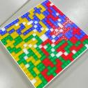 | | KhunAgueroAgnis | 2280 | C++ 20 | | 69.957 | 0 | 0 | 1 | 1837 | 1995 | 78.921 | 292 | 78.472 | 236 | 75.050 | 187 | 69.542 | 172 | 61.562 | 158 | 79.208 | 288 | 66.906 | 240 | 66.762 | 183 | 69.796 | 151 | 73.017 | 145 | 76.686 | 222 | 71.635 | 192 | 67.679 | 159 | 63.539 | 142 |
| 174 |  | | komori3 | 2367 | C++ 23 | | 69.737 | 0 | 0 | 0 | 1567 | 1931 | 77.854 | 311 | 76.478 | 273 | 73.475 | 230 | 69.465 | 174 | 63.144 | 145 | 80.220 | 251 | 67.341 | 226 | 66.434 | 187 | 69.150 | 156 | 72.270 | 149 | 79.819 | 163 | 72.581 | 175 | 66.307 | 177 | 59.768 | 176 |
| 175 | | | shindannin | 2198 | C++ 23 | | 69.736 | 0 | 0 | 0 | 155 | 174 | 79.469 | 287 | 70.254 | 377 | 69.231 | 332 | 71.065 | 147 | 67.676 | 98 | 81.548 | 200 | 68.370 | 203 | 66.416 | 188 | 68.515 | 162 | 71.468 | 158 | 80.111 | 158 | 73.042 | 168 | 66.216 | 178 | 59.045 | 189 |
| 176 |  | | tmb | 2030 | C++ 23 | | 69.709 | 0 | 0 | 0 | 1702 | 1780 | 86.243 | 120 | 83.464 | 112 | 76.813 | 155 | 68.331 | 196 | 57.435 | 221 | 84.157 | 127 | 71.542 | 137 | 68.117 | 164 | 66.678 | 195 | 67.583 | 201 | 79.750 | 165 | 72.770 | 171 | 66.329 | 176 | 59.490 | 181 |
| 177 |  | | Hikari30 | 1784 | C++ 20 | | 69.474 | 0 | 0 | 0 | 1738 | 1967 | 87.066 | 83 | 82.088 | 147 | 76.075 | 166 | 68.730 | 187 | 57.450 | 220 | 84.338 | 124 | 71.768 | 133 | 67.440 | 172 | 66.423 | 199 | 67.205 | 211 | 79.228 | 177 | 72.520 | 176 | 66.170 | 180 | 59.488 | 182 |
| 178 | | | esrever | 987 | C++ 23 | | 69.398 | 0 | 0 | 5 | 810 | 1968 | 86.726 | 101 | 82.014 | 151 | 75.946 | 169 | 68.403 | 194 | 57.680 | 217 | 85.332 | 98 | 71.601 | 136 | 67.409 | 173 | 66.241 | 201 | 66.917 | 214 | 79.665 | 169 | 72.423 | 177 | 65.933 | 186 | 59.073 | 188 |
| 179 | | | hitarium | 1932 | C++ 23 | | 69.381 | 0 | 0 | 0 | 1758 | 1906 | 86.686 | 105 | 84.182 | 97 | 77.968 | 139 | 68.872 | 184 | 54.613 | 287 | 83.292 | 149 | 70.624 | 151 | 67.060 | 179 | 66.910 | 189 | 68.152 | 192 | 76.918 | 217 | 72.099 | 185 | 66.895 | 170 | 61.184 | 157 |
| 180 | | | Not_Leonian | 1654 | Rust | | 69.293 | 0 | 0 | 0 | 1891 | 1973 | 87.698 | 67 | 83.404 | 113 | 76.720 | 157 | 68.287 | 197 | 56.085 | 250 | 86.551 | 76 | 72.081 | 126 | 67.057 | 180 | 65.734 | 209 | 66.430 | 223 | 77.960 | 196 | 72.258 | 180 | 66.521 | 174 | 59.953 | 173 |
| 181 | | | nukipei | 1071 | Python | | 69.254 | 0 | 0 | 0 | 993 | 1920 | 87.497 | 70 | 84.603 | 88 | 78.150 | 135 | 67.512 | 212 | 55.152 | 273 | 82.619 | 167 | 70.339 | 159 | 66.949 | 181 | 66.814 | 191 | 68.319 | 188 | 76.031 | 236 | 72.031 | 187 | 67.175 | 168 | 61.347 | 155 |
| 182 | | | GBKD | 1578 | C++ 23 | | 69.247 | 0 | 0 | 0 | 328 | 1326 | 83.803 | 205 | 81.907 | 154 | 76.656 | 159 | 68.705 | 188 | 56.699 | 235 | 83.346 | 146 | 70.527 | 153 | 67.246 | 175 | 66.686 | 194 | 67.699 | 196 | 80.895 | 146 | 72.381 | 178 | 65.168 | 200 | 58.022 | 219 |
| 183 |  | | arasius | 1013 | Go | | 69.234 | 0 | 0 | 0 | 657 | 1511 | 83.238 | 228 | 76.659 | 269 | 73.608 | 228 | 70.217 | 163 | 60.120 | 177 | 82.382 | 173 | 70.222 | 160 | 67.217 | 176 | 66.952 | 188 | 68.032 | 194 | 81.141 | 141 | 72.255 | 181 | 65.122 | 202 | 57.905 | 225 |
| 184 | |  | liguanchang | 1561 | C++ 23 | | 69.203 | 0 | 0 | 0 | 1920 | 1976 | 78.708 | 294 | 76.430 | 275 | 72.747 | 253 | 69.425 | 176 | 61.857 | 154 | 89.896 | 33 | 71.700 | 135 | 66.017 | 195 | 65.418 | 217 | 66.600 | 220 | 82.687 | 106 | 72.236 | 182 | 64.429 | 216 | 56.933 | 258 |
| 185 |  | | BenKenobi | 1714 | Python | | 69.196 | 0 | 0 | 0 | 740 | 1618 | 86.435 | 114 | 83.690 | 107 | 77.138 | 154 | 68.342 | 195 | 55.375 | 268 | 79.983 | 260 | 67.786 | 216 | 65.918 | 199 | 68.118 | 171 | 71.135 | 160 | 72.709 | 305 | 71.318 | 197 | 68.484 | 149 | 63.945 | 139 |
| 186 |  | | Potemashu | 1658 | C++ 20 | | 69.142 | 0 | 0 | 0 | 1480 | 1843 | 84.451 | 187 | 82.280 | 142 | 77.953 | 141 | 69.222 | 179 | 54.728 | 279 | 82.929 | 157 | 70.516 | 156 | 67.311 | 174 | 66.553 | 197 | 67.474 | 205 | 79.710 | 168 | 72.349 | 179 | 65.503 | 196 | 58.485 | 204 |
| 187 | | | lp_ql | 1415 | Rust | | 69.045 | 0 | 0 | 0 | 1925 | 1987 | 78.372 | 300 | 76.549 | 272 | 73.740 | 223 | 69.428 | 175 | 60.644 | 174 | 82.770 | 163 | 69.760 | 172 | 66.200 | 192 | 66.778 | 193 | 68.690 | 182 | 79.172 | 179 | 72.185 | 184 | 65.593 | 191 | 58.720 | 199 |
| 188 | | | nono00 | 1889 | C++ 20 | | 68.995 | 0 | 0 | 0 | 1564 | 1581 | 80.219 | 277 | 75.914 | 285 | 72.548 | 257 | 68.873 | 183 | 62.031 | 152 | 82.206 | 181 | 66.665 | 248 | 65.028 | 218 | 67.874 | 173 | 71.708 | 154 | 79.622 | 170 | 72.186 | 183 | 65.530 | 193 | 58.110 | 217 |
| 189 | | | BP36C | 1642 | C++ 20 | | 68.993 | 0 | 0 | 0 | 1603 | 1894 | 86.419 | 115 | 80.724 | 184 | 76.014 | 168 | 68.913 | 182 | 56.537 | 238 | 83.839 | 133 | 71.494 | 138 | 67.207 | 177 | 65.845 | 206 | 66.388 | 224 | 79.196 | 178 | 71.994 | 188 | 65.529 | 194 | 58.761 | 198 |
| 190 | | | memin | 1909 | C++ 20 | | 68.707 | 0 | 0 | 0 | 1980 | 1982 | 80.314 | 275 | 78.127 | 245 | 74.486 | 204 | 68.685 | 189 | 58.755 | 197 | 77.162 | 347 | 64.520 | 322 | 65.198 | 216 | 68.854 | 159 | 73.135 | 144 | 78.577 | 186 | 72.649 | 174 | 65.641 | 189 | 57.343 | 243 |
| 191 | | | hakoshie | 1577 | C++ 20 | | 68.680 | 0 | 0 | 0 | 1819 | 1932 | 85.506 | 145 | 82.755 | 133 | 76.249 | 163 | 67.990 | 202 | 55.203 | 271 | 86.850 | 71 | 70.805 | 150 | 66.241 | 191 | 65.176 | 221 | 66.292 | 226 | 77.973 | 195 | 71.928 | 189 | 65.705 | 188 | 58.592 | 200 |
| 192 | | | Pech1 | 2516 | C++ 23 | | 68.675 | 0 | 0 | 0 | 1134 | 1629 | 79.941 | 281 | 79.868 | 210 | 75.615 | 174 | 68.807 | 185 | 56.836 | 230 | 75.882 | 384 | 64.400 | 325 | 66.527 | 185 | 69.537 | 154 | 71.594 | 155 | 71.763 | 329 | 70.202 | 218 | 67.902 | 155 | 64.594 | 136 |
| 193 | | | AwashAmityOak | 1769 | Rust | | 68.633 | 0 | 0 | 0 | 1835 | 1896 | 83.480 | 215 | 81.261 | 173 | 75.521 | 178 | 67.694 | 208 | 56.821 | 231 | 81.774 | 196 | 69.260 | 181 | 66.697 | 184 | 66.446 | 198 | 67.609 | 200 | 79.435 | 173 | 71.706 | 190 | 64.913 | 204 | 57.971 | 220 |
| 194 |  | | miiitomi | 1941 | C++ 23 | | 68.581 | 0 | 0 | 0 | 1931 | 1960 | 82.695 | 239 | 79.483 | 219 | 72.463 | 262 | 65.628 | 254 | 61.792 | 156 | 76.568 | 370 | 66.452 | 258 | 66.334 | 190 | 68.146 | 169 | 70.535 | 163 | 74.472 | 267 | 71.656 | 191 | 67.158 | 169 | 60.558 | 165 |
| 195 | | | soumat | 2858 | C++ 20 | | 68.516 | 0 | 0 | 0 | 1830 | 1959 | 82.384 | 246 | 79.378 | 221 | 73.877 | 217 | 67.534 | 210 | 58.814 | 194 | 84.983 | 109 | 69.668 | 176 | 66.016 | 196 | 65.846 | 205 | 66.879 | 215 | 79.124 | 180 | 71.132 | 201 | 64.944 | 203 | 58.408 | 207 |
| 196 | | | dsytk7 | 2070 | C++ 23 | | 68.473 | 0 | 0 | 0 | 1929 | 1953 | 80.473 | 273 | 75.223 | 304 | 71.253 | 286 | 68.225 | 198 | 62.174 | 151 | 80.366 | 246 | 67.367 | 225 | 65.730 | 204 | 67.238 | 184 | 69.384 | 175 | 76.353 | 227 | 71.507 | 194 | 65.938 | 185 | 59.619 | 180 |
| 197 |  | | ganmodokix | 2252 | C++ 23 | | 68.437 | 0 | 0 | 0 | 109 | 269 | 80.922 | 262 | 77.367 | 254 | 72.238 | 267 | 68.652 | 190 | 59.736 | 181 | 84.563 | 121 | 70.091 | 164 | 65.983 | 198 | 65.578 | 211 | 66.575 | 221 | 81.509 | 133 | 71.625 | 193 | 63.832 | 232 | 56.240 | 272 |
| 198 | | | atm314 | 1312 | C++ 20 | | 68.358 | 0 | 0 | 0 | 1838 | 1874 | 84.928 | 170 | 82.046 | 148 | 75.073 | 186 | 66.937 | 225 | 56.413 | 240 | 82.840 | 160 | 69.952 | 166 | 66.406 | 189 | 65.571 | 213 | 66.553 | 222 | 77.984 | 194 | 71.384 | 195 | 65.155 | 201 | 58.415 | 206 |
| 199 |  | | sasayu | 2067 | C++ 20 | | 68.280 | 0 | 0 | 1 | 1229 | 1930 | 76.866 | 326 | 76.279 | 279 | 73.738 | 224 | 68.745 | 186 | 59.080 | 191 | 81.370 | 207 | 65.263 | 286 | 65.350 | 213 | 67.672 | 177 | 70.201 | 168 | 76.519 | 224 | 70.721 | 211 | 65.451 | 199 | 60.032 | 172 |
| 200 | | | statiolake | 1796 | Rust | | 68.267 | 0 | 0 | 0 | 1844 | 1930 | 86.819 | 93 | 76.741 | 266 | 75.870 | 170 | 69.361 | 177 | 56.002 | 255 | 83.410 | 144 | 71.197 | 145 | 66.109 | 194 | 65.018 | 223 | 65.602 | 233 | 76.946 | 216 | 70.908 | 205 | 65.489 | 197 | 59.286 | 186 |
| 201 |  | | gue | 1877 | C++ 23 | | 68.094 | 0 | 0 | 0 | 142 | 232 | 85.077 | 165 | 75.860 | 287 | 71.243 | 287 | 67.505 | 213 | 60.941 | 168 | 78.673 | 303 | 66.251 | 262 | 65.005 | 220 | 67.290 | 183 | 70.068 | 170 | 75.175 | 250 | 70.827 | 207 | 65.987 | 183 | 59.947 | 174 |
| 202 | | | Jeffrey | 2176 | C++ 20 | | 68.091 | 0 | 0 | 10 | 398 | 1905 | 79.690 | 284 | 76.612 | 271 | 73.423 | 233 | 68.111 | 200 | 58.896 | 192 | 83.892 | 132 | 69.598 | 177 | 65.699 | 205 | 64.999 | 224 | 66.652 | 219 | 81.780 | 126 | 71.314 | 198 | 63.351 | 248 | 55.361 | 298 |
| 203 |  | | miku | 2284 | C++ 20 | | 68.087 | 0 | 0 | 0 | 122 | 239 | 78.370 | 301 | 73.937 | 322 | 71.656 | 280 | 68.560 | 192 | 61.188 | 164 | 78.906 | 297 | 64.615 | 317 | 64.585 | 231 | 67.770 | 174 | 71.475 | 157 | 76.689 | 221 | 71.199 | 199 | 65.557 | 192 | 58.396 | 208 |
| 204 |  | | Risen | 2370 | C# 11.0 AOT | | 67.988 | 0 | 0 | 0 | 82 | 1512 | 84.932 | 169 | 82.588 | 136 | 75.561 | 176 | 66.460 | 237 | 55.050 | 274 | 80.014 | 258 | 68.467 | 199 | 65.879 | 201 | 65.896 | 204 | 67.555 | 202 | 73.876 | 283 | 70.481 | 213 | 66.200 | 179 | 61.005 | 159 |
| 205 | | | nxteru | 1239 | C++ 20 | | 67.980 | 0 | 0 | 0 | 1806 | 1970 | 83.790 | 207 | 80.573 | 188 | 74.531 | 202 | 67.330 | 215 | 56.041 | 252 | 85.960 | 88 | 69.956 | 165 | 65.565 | 207 | 64.727 | 229 | 65.532 | 235 | 78.524 | 188 | 70.988 | 202 | 64.489 | 214 | 57.417 | 241 |
| 206 | | | masa1031 | 1687 | C++ 23 | | 67.895 | 0 | 0 | 0 | 1799 | 1961 | 77.683 | 316 | 74.714 | 310 | 71.170 | 288 | 67.741 | 207 | 61.312 | 161 | 81.538 | 201 | 68.309 | 204 | 65.534 | 208 | 65.766 | 208 | 67.261 | 210 | 78.553 | 187 | 70.583 | 212 | 64.204 | 222 | 57.782 | 229 |
| 207 |  | | naniwazu | 1687 | Rust | | 67.888 | 0 | 0 | 0 | 1507 | 1762 | 85.994 | 133 | 79.884 | 209 | 74.932 | 191 | 67.621 | 209 | 55.403 | 267 | 82.012 | 187 | 68.547 | 195 | 65.678 | 206 | 65.518 | 214 | 66.947 | 213 | 80.513 | 150 | 71.140 | 200 | 63.440 | 246 | 55.915 | 282 |
| 208 | | | YuuuT | 1787 | C++ 20 | | 67.883 | 0 | 0 | 1 | 1908 | 1988 | 85.091 | 164 | 78.317 | 239 | 74.796 | 195 | 67.796 | 206 | 56.252 | 243 | 83.244 | 150 | 69.930 | 167 | 65.870 | 202 | 64.912 | 227 | 65.582 | 234 | 77.800 | 200 | 70.832 | 206 | 64.503 | 213 | 57.913 | 223 |
| 209 | | | KKT89 | 2046 | C++ 20 | | 67.871 | 0 | 0 | 0 | 1829 | 1840 | 78.279 | 303 | 72.824 | 342 | 68.843 | 337 | 67.389 | 214 | 64.124 | 138 | 83.614 | 139 | 68.865 | 188 | 65.121 | 217 | 65.274 | 219 | 66.802 | 217 | 78.851 | 184 | 70.808 | 209 | 64.105 | 225 | 57.228 | 249 |
| 210 | 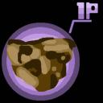 | | HNN_8127 | 2080 | C++ 23 | | 67.863 | 0 | 0 | 0 | 1363 | 1923 | 76.623 | 329 | 75.851 | 288 | 73.379 | 235 | 68.203 | 199 | 58.743 | 198 | 80.934 | 222 | 64.541 | 320 | 63.474 | 260 | 67.405 | 181 | 71.336 | 159 | 77.201 | 210 | 69.912 | 225 | 64.303 | 221 | 59.691 | 178 |
| 211 | | | plasmaeffect | 1593 | C++ 20 | | 67.833 | 0 | 0 | 0 | 1798 | 1921 | 85.212 | 158 | 82.308 | 139 | 75.426 | 180 | 66.573 | 232 | 54.650 | 285 | 82.149 | 182 | 69.433 | 178 | 65.750 | 203 | 65.102 | 222 | 66.151 | 229 | 76.846 | 218 | 70.822 | 208 | 64.865 | 206 | 58.319 | 209 |
| 212 | | | sky58 | 2365 | C++ 20 | | 67.596 | 0 | 0 | 167 | 1759 | 1822 | 85.097 | 163 | 82.646 | 135 | 77.808 | 145 | 70.269 | 160 | 48.399 | 475 | 86.169 | 85 | 72.041 | 127 | 67.461 | 171 | 63.482 | 254 | 61.218 | 343 | 76.044 | 234 | 70.972 | 203 | 64.825 | 208 | 58.024 | 218 |
| 213 |  | | titia | 2228 | Python | | 67.564 | 0 | 0 | 0 | 426 | 853 | 76.467 | 333 | 73.932 | 323 | 70.506 | 306 | 67.804 | 205 | 61.122 | 167 | 81.264 | 212 | 67.856 | 215 | 64.749 | 226 | 65.516 | 215 | 67.384 | 208 | 76.062 | 233 | 69.891 | 227 | 64.868 | 205 | 59.034 | 190 |
| 214 |  | | sirsoldano | 1543 | Python | | 67.554 | 0 | 0 | 0 | 1555 | 1865 | 62.680 | 503 | 82.704 | 134 | 76.615 | 160 | 67.165 | 219 | 53.870 | 304 | 84.609 | 119 | 69.795 | 170 | 65.366 | 212 | 64.287 | 234 | 64.956 | 246 | 74.239 | 274 | 70.249 | 217 | 65.524 | 195 | 59.780 | 175 |
| 215 |  | | june193 | 1666 | Python | | 67.540 | 0 | 0 | 0 | 863 | 1036 | 81.308 | 257 | 78.886 | 227 | 73.751 | 222 | 66.487 | 236 | 57.094 | 228 | 78.351 | 312 | 66.909 | 239 | 65.903 | 200 | 66.163 | 203 | 67.437 | 207 | 76.352 | 228 | 70.411 | 214 | 64.688 | 210 | 58.243 | 213 |
| 216 | |  | Sphere9 | 1743 | C++ 20 | | 67.538 | 0 | 0 | 0 | 1845 | 1899 | 81.340 | 256 | 76.288 | 278 | 70.934 | 296 | 66.797 | 230 | 60.066 | 178 | 81.993 | 188 | 66.821 | 245 | 64.475 | 233 | 65.705 | 210 | 68.105 | 193 | 75.944 | 239 | 70.759 | 210 | 64.781 | 209 | 58.165 | 216 |
| 217 | | | toyuzuko | 2003 | Python | | 67.462 | 0 | 0 | 0 | 1791 | 1935 | 86.124 | 129 | 82.285 | 141 | 74.603 | 199 | 65.920 | 248 | 54.562 | 288 | 84.236 | 126 | 69.764 | 171 | 65.272 | 215 | 64.148 | 239 | 64.949 | 247 | 75.587 | 244 | 70.194 | 219 | 64.858 | 207 | 58.769 | 197 |
| 218 | | | poka | 2018 | Rust | | 67.436 | 0 | 0 | 0 | 173 | 197 | 85.239 | 156 | 79.969 | 205 | 74.411 | 206 | 66.963 | 224 | 54.924 | 276 | 83.169 | 152 | 69.802 | 169 | 65.451 | 210 | 64.235 | 237 | 64.904 | 248 | 76.705 | 220 | 70.379 | 215 | 64.378 | 219 | 57.805 | 227 |
| 219 |  | | Mayimg | 2160 | C++ 23 | | 67.367 | 0 | 0 | 12 | 1808 | 2000 | 81.125 | 258 | 73.145 | 338 | 69.359 | 327 | 66.824 | 228 | 62.293 | 150 | 80.822 | 228 | 66.934 | 236 | 63.698 | 252 | 65.495 | 216 | 68.619 | 183 | 78.083 | 193 | 70.953 | 204 | 63.743 | 234 | 56.120 | 274 |
| 220 | |  | ExplodingFreeze | 1810 | C++ 20 | | 67.216 | 0 | 0 | 1 | 1819 | 1978 | 83.850 | 204 | 76.963 | 263 | 72.496 | 261 | 66.912 | 226 | 57.299 | 224 | 83.989 | 131 | 68.539 | 196 | 64.611 | 229 | 64.329 | 233 | 65.627 | 232 | 76.987 | 214 | 70.004 | 222 | 64.051 | 226 | 57.351 | 242 |
| 221 |  | | G4NP0N | 2274 | C# 11.0 AOT | | 67.210 | 0 | 0 | 0 | 1591 | 1961 | 82.334 | 247 | 79.428 | 220 | 73.814 | 219 | 66.557 | 233 | 55.506 | 265 | 76.958 | 353 | 65.232 | 288 | 65.344 | 214 | 66.576 | 196 | 68.254 | 190 | 72.992 | 299 | 70.297 | 216 | 65.629 | 190 | 59.456 | 183 |
| 222 | | | zhenghanyun | 895 | C++ 20 | | 67.171 | 0 | 0 | 8 | 1696 | 2000 | 83.404 | 220 | 81.054 | 180 | 74.657 | 198 | 66.533 | 235 | 53.850 | 305 | 81.843 | 193 | 69.115 | 185 | 64.984 | 222 | 64.258 | 235 | 65.314 | 241 | 76.396 | 226 | 69.960 | 223 | 64.129 | 224 | 57.738 | 230 |
| 223 | | | TYZ | 1941 | Go | | 67.132 | 0 | 0 | 17 | 1198 | 1741 | 83.917 | 200 | 80.295 | 192 | 74.457 | 205 | 65.586 | 255 | 55.200 | 272 | 81.796 | 194 | 67.246 | 229 | 65.019 | 219 | 64.995 | 225 | 66.215 | 227 | 74.687 | 260 | 69.819 | 231 | 64.569 | 212 | 59.034 | 191 |
| 224 | | | hoshi524 | 2333 | C++ 20 | | 67.097 | 0 | 0 | 0 | 1935 | 1991 | 76.475 | 332 | 73.222 | 337 | 70.387 | 308 | 67.255 | 217 | 60.612 | 175 | 69.739 | 590 | 63.110 | 362 | 66.513 | 186 | 68.326 | 164 | 69.413 | 174 | 78.984 | 182 | 71.334 | 196 | 62.927 | 262 | 54.488 | 317 |
| 225 | | | rhoo | 2912 | Rust | | 67.089 | 0 | 0 | 18 | 757 | 1669 | 72.505 | 377 | 71.194 | 364 | 69.538 | 323 | 67.952 | 203 | 61.885 | 153 | 86.054 | 86 | 66.954 | 235 | 63.239 | 267 | 64.237 | 236 | 67.334 | 209 | 79.266 | 176 | 69.159 | 247 | 62.452 | 275 | 57.100 | 253 |
| 226 | | | hiikunZ | 2375 | C++ 23 | | 67.084 | 0 | 0 | 0 | 739 | 1684 | 82.606 | 242 | 80.652 | 186 | 75.665 | 173 | 67.043 | 222 | 52.683 | 333 | 80.539 | 239 | 67.860 | 214 | 64.963 | 223 | 64.806 | 228 | 66.080 | 230 | 75.945 | 238 | 70.116 | 220 | 64.139 | 223 | 57.655 | 231 |
| 227 | | | Spica08 | 1826 | C++ 20 | | 66.985 | 0 | 0 | 0 | 1710 | 1934 | 78.527 | 297 | 77.060 | 259 | 73.783 | 220 | 67.276 | 216 | 55.688 | 259 | 82.147 | 183 | 68.713 | 190 | 64.735 | 227 | 64.137 | 240 | 65.169 | 244 | 77.026 | 212 | 69.896 | 226 | 63.562 | 241 | 56.977 | 256 |
| 228 | | | tamreff3290 | 884 | Python | | 66.968 | 0 | 0 | 0 | 463 | 1754 | 86.003 | 132 | 79.694 | 214 | 72.046 | 270 | 66.430 | 238 | 55.547 | 263 | 82.724 | 166 | 69.076 | 186 | 64.859 | 225 | 63.990 | 246 | 64.576 | 256 | 76.518 | 225 | 69.873 | 228 | 63.858 | 231 | 57.143 | 252 |
| 229 | | | azusa300 | 1576 | C++ 20 | | 66.952 | 0 | 0 | 0 | 1531 | 1554 | 85.467 | 146 | 82.397 | 137 | 74.995 | 188 | 64.877 | 278 | 53.664 | 310 | 82.319 | 175 | 68.712 | 191 | 65.004 | 221 | 64.025 | 244 | 64.823 | 249 | 74.859 | 258 | 69.637 | 234 | 64.419 | 217 | 58.459 | 205 |
| 230 | | | Berling | 1608 | C++ 20 | | 66.940 | 0 | 0 | 0 | 1775 | 1783 | 77.159 | 321 | 74.846 | 308 | 72.423 | 263 | 67.107 | 221 | 57.950 | 212 | 81.690 | 198 | 67.752 | 217 | 64.417 | 236 | 64.625 | 231 | 65.884 | 231 | 79.439 | 172 | 69.873 | 229 | 62.582 | 270 | 55.357 | 299 |
| 231 | |  | cologne1723 | 1537 | Rust | | 66.842 | 0 | 0 | 40 | 1851 | 1978 | 75.147 | 347 | 65.526 | 454 | 67.618 | 357 | 68.600 | 191 | 64.664 | 132 | 76.948 | 354 | 63.612 | 347 | 63.408 | 263 | 66.266 | 200 | 70.428 | 164 | 77.369 | 208 | 69.236 | 245 | 62.836 | 266 | 57.529 | 235 |
| 232 |  | | ansain | 1990 | Python | | 66.841 | 0 | 0 | 0 | 1485 | 1881 | 87.056 | 84 | 80.510 | 189 | 74.063 | 211 | 65.792 | 251 | 53.921 | 303 | 81.079 | 220 | 69.218 | 182 | 64.924 | 224 | 63.696 | 250 | 64.680 | 252 | 74.443 | 268 | 69.561 | 237 | 64.378 | 218 | 58.548 | 202 |
| 233 | | | Lemonmaru | 1687 | C++ 20 | | 66.812 | 0 | 0 | 23 | 1944 | 2000 | 55.438 | 697 | 78.889 | 226 | 73.612 | 227 | 66.808 | 229 | 56.444 | 239 | 80.607 | 235 | 68.086 | 209 | 65.521 | 209 | 64.186 | 238 | 64.756 | 251 | 77.309 | 209 | 69.564 | 236 | 63.257 | 251 | 56.649 | 263 |
| 234 | | | aaaaaaaaaa2230 | 2192 | C++ 23 | | 66.811 | 0 | 0 | 0 | 1808 | 1936 | 82.489 | 245 | 80.074 | 201 | 74.219 | 207 | 65.835 | 250 | 54.278 | 294 | 73.046 | 458 | 62.851 | 370 | 64.428 | 234 | 67.398 | 182 | 70.252 | 166 | 72.407 | 312 | 70.019 | 221 | 65.483 | 198 | 58.845 | 196 |
| 235 |  | | Jinapetto | 2569 | C++ 20 | | 66.713 | 0 | 0 | 0 | 1938 | 1973 | 82.694 | 240 | 77.329 | 255 | 69.436 | 326 | 64.397 | 292 | 60.047 | 179 | 82.474 | 169 | 66.156 | 267 | 63.637 | 254 | 64.605 | 232 | 66.968 | 212 | 77.393 | 206 | 69.853 | 230 | 63.185 | 254 | 55.897 | 284 |
| 236 | | | Tsultra | 1809 | Python | | 66.670 | 0 | 0 | 0 | 1325 | 1915 | 80.521 | 271 | 77.012 | 260 | 72.870 | 248 | 66.228 | 241 | 56.173 | 248 | 74.952 | 413 | 63.109 | 363 | 64.058 | 241 | 66.998 | 186 | 69.506 | 173 | 73.734 | 285 | 69.752 | 232 | 64.465 | 215 | 58.253 | 212 |
| 237 |  |  | krit3379 | 1865 | C++ 20 | | 66.662 | 0 | 0 | 0 | 1739 | 1778 | 86.726 | 100 | 83.732 | 106 | 76.107 | 165 | 65.190 | 268 | 50.815 | 380 | 82.032 | 184 | 68.879 | 187 | 64.719 | 228 | 63.456 | 257 | 64.361 | 262 | 74.004 | 280 | 69.669 | 233 | 64.312 | 220 | 58.197 | 215 |
| 238 | | | samoshi | 1776 | Python | | 66.517 | 0 | 0 | 23 | 1480 | 2000 | 85.105 | 161 | 80.633 | 187 | 74.665 | 197 | 65.709 | 253 | 52.625 | 334 | 82.028 | 185 | 68.299 | 206 | 64.014 | 243 | 63.774 | 249 | 64.669 | 253 | 74.804 | 259 | 69.610 | 235 | 63.976 | 228 | 57.181 | 250 |
| 239 | | | meetsu | 1294 | C++ 20 | | 66.482 | 0 | 0 | 0 | 1850 | 1862 | 85.260 | 155 | 81.572 | 165 | 74.982 | 189 | 65.513 | 256 | 51.959 | 348 | 81.243 | 213 | 68.143 | 207 | 64.597 | 230 | 63.659 | 251 | 64.491 | 257 | 75.428 | 246 | 69.452 | 239 | 63.514 | 242 | 57.057 | 254 |
| 240 | | | cyan0515 | 1639 | C++ 23 | | 66.474 | 0 | 0 | 0 | 1550 | 1600 | 81.014 | 259 | 75.367 | 300 | 72.288 | 266 | 67.171 | 218 | 55.842 | 257 | 82.215 | 180 | 68.501 | 197 | 64.122 | 238 | 63.464 | 255 | 64.430 | 259 | 77.101 | 211 | 69.426 | 241 | 62.848 | 265 | 56.030 | 278 |
| 241 | | | Sa15MiyagiJapan | 1357 | C++ 23 | | 66.462 | 0 | 0 | 0 | 1148 | 1932 | 83.305 | 223 | 81.971 | 153 | 75.172 | 184 | 65.186 | 269 | 52.024 | 346 | 81.343 | 208 | 68.408 | 202 | 64.422 | 235 | 63.543 | 252 | 64.397 | 260 | 74.330 | 272 | 69.232 | 246 | 63.935 | 230 | 57.907 | 224 |
| 242 | | | SI_AtCoder | 1856 | Python | | 66.445 | 0 | 0 | 0 | 1065 | 1196 | 83.132 | 234 | 76.648 | 270 | 70.021 | 316 | 65.255 | 266 | 58.269 | 207 | 76.903 | 356 | 64.685 | 313 | 64.142 | 237 | 65.573 | 212 | 67.695 | 197 | 74.673 | 261 | 69.042 | 250 | 63.687 | 236 | 57.958 | 221 |
| 243 | | | hikari24 | 1738 | C++ 20 | | 66.440 | 0 | 0 | 0 | 1873 | 1900 | 81.908 | 253 | 77.288 | 257 | 72.966 | 246 | 66.537 | 234 | 54.776 | 278 | 83.064 | 153 | 68.685 | 192 | 63.949 | 245 | 63.269 | 261 | 64.182 | 266 | 76.322 | 230 | 69.372 | 242 | 63.123 | 255 | 56.461 | 268 |
| 244 |  | | yuusanlondon | 2536 | Rust | | 66.405 | 0 | 0 | 1 | 1608 | 1989 | 75.691 | 340 | 75.697 | 292 | 72.618 | 254 | 66.843 | 227 | 55.954 | 256 | 80.083 | 256 | 67.587 | 221 | 64.074 | 240 | 63.922 | 247 | 65.334 | 240 | 75.231 | 249 | 69.060 | 249 | 63.617 | 240 | 57.264 | 246 |
| 245 | | | sugim48 | 2631 | Rust | | 66.378 | 0 | 0 | 0 | 169 | 189 | 82.098 | 249 | 80.124 | 197 | 73.604 | 229 | 64.617 | 288 | 54.478 | 289 | 81.292 | 210 | 67.109 | 231 | 64.110 | 239 | 64.008 | 245 | 65.155 | 245 | 74.889 | 257 | 68.671 | 257 | 63.618 | 239 | 57.939 | 222 |
| 246 | | | lumieres | 1143 | C++ 17 | | 66.333 | 0 | 0 | 0 | 1571 | 1798 | 84.470 | 186 | 73.512 | 330 | 70.835 | 299 | 67.518 | 211 | 56.751 | 232 | 81.897 | 191 | 68.596 | 193 | 64.039 | 242 | 63.259 | 262 | 64.127 | 268 | 75.278 | 248 | 69.112 | 248 | 63.441 | 245 | 57.041 | 255 |
| 247 | | | hanenoaki | 1655 | C++ 20 | | 66.320 | 0 | 0 | 167 | 1536 | 1617 | 80.365 | 274 | 77.413 | 253 | 72.842 | 250 | 69.756 | 168 | 51.248 | 372 | 84.857 | 112 | 71.231 | 143 | 66.126 | 193 | 62.057 | 288 | 59.705 | 387 | 77.915 | 197 | 69.946 | 224 | 62.244 | 278 | 54.597 | 316 |
| 248 | | | doi_ken | 1438 | C++ 20 | | 66.261 | 0 | 0 | 0 | 1343 | 1873 | 83.144 | 233 | 77.425 | 252 | 72.944 | 247 | 65.852 | 249 | 54.718 | 281 | 79.804 | 269 | 66.903 | 241 | 63.983 | 244 | 64.033 | 243 | 65.457 | 238 | 76.305 | 231 | 69.350 | 244 | 62.856 | 264 | 56.032 | 277 |
| 249 | | | suikataro | 1506 | C++ 20 | | 66.190 | 0 | 0 | 0 | 1892 | 1972 | 86.039 | 130 | 82.857 | 128 | 74.586 | 200 | 64.305 | 296 | 51.687 | 359 | 81.099 | 217 | 68.554 | 194 | 64.538 | 232 | 62.948 | 269 | 63.659 | 278 | 74.510 | 266 | 68.960 | 251 | 63.503 | 243 | 57.339 | 244 |
| 250 | | | olff | 1539 | C++ 20 | | 66.157 | 0 | 0 | 0 | 915 | 1650 | 77.061 | 325 | 70.307 | 375 | 68.996 | 334 | 67.880 | 204 | 59.382 | 188 | 81.408 | 205 | 67.614 | 219 | 63.626 | 255 | 63.510 | 253 | 64.644 | 254 | 79.877 | 162 | 69.367 | 243 | 61.226 | 305 | 53.609 | 335 |
| 251 |  | | yatuba | 2127 | C++ 23 | | 66.147 | 0 | 0 | 1 | 1495 | 2000 | 66.361 | 463 | 74.456 | 316 | 75.265 | 182 | 67.011 | 223 | 54.639 | 286 | 82.862 | 158 | 67.672 | 218 | 63.320 | 264 | 63.235 | 263 | 64.621 | 255 | 76.039 | 235 | 69.481 | 238 | 62.735 | 267 | 55.808 | 288 |
| 252 | | | iceslime1104 | 1361 | C++ 20 | | 66.069 | 0 | 0 | 11 | 1887 | 1996 | 65.682 | 470 | 76.299 | 277 | 71.894 | 274 | 66.038 | 246 | 56.561 | 237 | 80.781 | 229 | 66.932 | 237 | 63.902 | 249 | 64.077 | 242 | 64.318 | 263 | 77.825 | 199 | 68.868 | 253 | 62.136 | 280 | 54.955 | 306 |
| 253 | | | kabipoyo | 2206 | C++ 23 | | 65.957 | 0 | 0 | 0 | 1916 | 1988 | 79.159 | 288 | 73.904 | 324 | 69.302 | 331 | 65.406 | 259 | 58.829 | 193 | 79.935 | 262 | 66.488 | 256 | 63.197 | 269 | 63.835 | 248 | 65.473 | 236 | 72.386 | 313 | 68.785 | 254 | 64.021 | 227 | 58.199 | 214 |
| 254 | | | arad | 1613 | C++ 23 | | 65.897 | 0 | 0 | 0 | 442 | 771 | 86.143 | 127 | 81.780 | 155 | 74.835 | 193 | 65.426 | 258 | 50.023 | 405 | 81.423 | 204 | 67.914 | 213 | 63.808 | 250 | 62.842 | 270 | 63.727 | 276 | 73.128 | 298 | 68.903 | 252 | 63.649 | 237 | 57.441 | 239 |
| 255 |  | | bio4eta | 2117 | Rust | | 65.851 | 0 | 0 | 0 | 1828 | 1929 | 86.194 | 124 | 79.543 | 217 | 72.614 | 255 | 64.916 | 277 | 53.092 | 323 | 79.379 | 284 | 66.966 | 233 | 63.935 | 247 | 63.426 | 258 | 64.442 | 258 | 74.331 | 271 | 68.775 | 255 | 63.118 | 256 | 56.712 | 261 |
| 256 |  | | yoichiro | 2091 | PHP | | 65.777 | 0 | 0 | 0 | 308 | 525 | 84.385 | 191 | 81.543 | 168 | 74.911 | 192 | 65.130 | 270 | 50.146 | 403 | 75.119 | 407 | 64.769 | 310 | 63.568 | 258 | 64.642 | 230 | 66.842 | 216 | 70.408 | 361 | 68.285 | 266 | 64.615 | 211 | 59.414 | 184 |
| 257 | | | sibasyun | 1529 | C++ 20 | | 65.768 | 0 | 0 | 0 | 89 | 122 | 84.633 | 179 | 81.686 | 159 | 74.666 | 196 | 64.711 | 286 | 50.602 | 387 | 81.373 | 206 | 67.957 | 211 | 63.737 | 251 | 62.596 | 277 | 63.467 | 284 | 73.207 | 296 | 68.642 | 258 | 63.436 | 247 | 57.336 | 245 |
| 258 |  | | NakahashiNakashi | 1461 | C# 11.0 | | 65.750 | 0 | 0 | 0 | 1746 | 1931 | 78.429 | 299 | 75.815 | 290 | 70.175 | 312 | 64.207 | 300 | 57.767 | 216 | 75.465 | 394 | 61.660 | 397 | 61.975 | 298 | 65.828 | 207 | 69.982 | 171 | 74.938 | 254 | 69.447 | 240 | 62.971 | 260 | 55.062 | 304 |
| 259 | | | flyingflow | 1381 | C++ 23 | | 65.722 | 0 | 0 | 0 | 114 | 200 | 85.141 | 160 | 81.751 | 156 | 73.843 | 218 | 64.529 | 289 | 51.090 | 376 | 79.775 | 271 | 67.209 | 230 | 63.924 | 248 | 62.971 | 268 | 63.983 | 271 | 74.009 | 279 | 68.596 | 259 | 63.000 | 259 | 56.826 | 260 |
| 260 | | | HBit | 2570 | Rust | | 65.637 | 0 | 0 | 0 | 1936 | 1951 | 83.305 | 224 | 80.112 | 198 | 73.929 | 213 | 64.747 | 285 | 51.604 | 362 | 79.789 | 270 | 66.558 | 254 | 63.606 | 257 | 63.210 | 265 | 64.318 | 264 | 75.002 | 252 | 68.537 | 263 | 62.541 | 272 | 55.995 | 279 |
| 261 | | | pirari | 2002 | C++ 17 | | 65.619 | 0 | 0 | 0 | 189 | 1839 | 83.288 | 226 | 80.709 | 185 | 73.987 | 212 | 64.484 | 290 | 51.435 | 368 | 79.923 | 263 | 66.183 | 266 | 63.264 | 265 | 63.319 | 260 | 64.777 | 250 | 72.342 | 315 | 68.460 | 265 | 63.750 | 233 | 57.471 | 236 |
| 262 | | | Navier_Boltzmann | 1732 | Python | | 65.593 | 0 | 0 | 0 | 939 | 1505 | 83.737 | 209 | 76.905 | 264 | 70.042 | 315 | 64.232 | 299 | 56.283 | 241 | 74.811 | 419 | 63.064 | 365 | 63.243 | 266 | 65.260 | 220 | 67.519 | 203 | 71.588 | 334 | 67.715 | 281 | 63.717 | 235 | 59.012 | 192 |
| 263 | | | Kugenuma | 1632 | Python | | 65.476 | 0 | 0 | 0 | 749 | 1162 | 77.955 | 309 | 75.676 | 294 | 71.034 | 293 | 65.331 | 261 | 55.282 | 269 | 78.313 | 315 | 66.473 | 257 | 63.425 | 262 | 63.228 | 264 | 64.369 | 261 | 73.171 | 297 | 67.956 | 276 | 63.111 | 257 | 57.254 | 247 |
| 264 | | | MitI_7 | 984 | Rust | | 65.463 | 0 | 0 | 0 | 394 | 1039 | 81.495 | 255 | 79.314 | 222 | 73.896 | 214 | 65.290 | 262 | 51.092 | 375 | 82.814 | 161 | 66.644 | 249 | 62.631 | 281 | 62.521 | 278 | 64.091 | 269 | 72.380 | 314 | 68.561 | 261 | 63.280 | 249 | 57.161 | 251 |
| 265 | 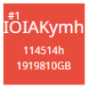 | | yeminghan2021 | 1661 | C++ 17 | | 65.434 | 0 | 0 | 0 | 462 | 569 | 81.997 | 252 | 78.229 | 242 | 73.048 | 243 | 65.283 | 263 | 52.129 | 343 | 81.290 | 211 | 67.273 | 228 | 62.988 | 272 | 62.446 | 279 | 63.604 | 280 | 74.939 | 253 | 68.540 | 262 | 62.234 | 279 | 55.526 | 292 |
| 266 |  | | kaede2020 | 1904 | C++ 23 | | 65.425 | 0 | 0 | 0 | 1740 | 1759 | 74.221 | 356 | 73.387 | 334 | 70.893 | 297 | 66.370 | 239 | 55.738 | 258 | 80.120 | 254 | 66.954 | 234 | 62.928 | 274 | 62.711 | 274 | 64.066 | 270 | 76.617 | 223 | 68.752 | 256 | 61.482 | 298 | 54.315 | 321 |
| 267 | | | yuu_w | 1911 | C++ 20 | | 65.408 | 0 | 0 | 0 | 1843 | 1982 | 83.771 | 208 | 78.931 | 224 | 73.337 | 237 | 64.623 | 287 | 51.990 | 347 | 79.762 | 272 | 66.868 | 242 | 63.460 | 261 | 62.773 | 271 | 63.626 | 279 | 74.360 | 269 | 68.269 | 267 | 62.470 | 274 | 56.069 | 275 |
| 268 | | | mogura20 | 1615 | Python | | 65.396 | 0 | 0 | 0 | 501 | 659 | 67.417 | 448 | 65.569 | 452 | 67.338 | 365 | 68.092 | 201 | 61.153 | 166 | 82.430 | 170 | 67.473 | 222 | 62.552 | 282 | 62.324 | 282 | 63.400 | 285 | 77.626 | 203 | 68.161 | 270 | 61.121 | 307 | 54.190 | 324 |
| 269 | | | takitamo | 1874 | Kotlin | | 65.371 | 0 | 0 | 0 | 966 | 1539 | 87.322 | 74 | 83.673 | 108 | 74.943 | 190 | 63.707 | 314 | 48.794 | 466 | 79.723 | 274 | 66.638 | 251 | 63.652 | 253 | 62.715 | 273 | 63.576 | 281 | 70.382 | 363 | 67.842 | 278 | 63.960 | 229 | 58.923 | 194 |
| 270 |  | | torikara_chicken | 1063 | C++ 23 | | 65.272 | 0 | 0 | 0 | 1893 | 1957 | 74.182 | 357 | 71.114 | 366 | 69.554 | 322 | 66.299 | 240 | 57.459 | 219 | 86.414 | 79 | 68.130 | 208 | 62.253 | 288 | 61.376 | 305 | 62.115 | 319 | 76.755 | 219 | 68.258 | 269 | 61.252 | 304 | 54.320 | 320 |
| 271 | | | shoyuuu | 1043 | Rust | | 65.268 | 0 | 0 | 0 | 1423 | 1672 | 84.477 | 185 | 81.153 | 178 | 73.778 | 221 | 63.017 | 332 | 51.551 | 363 | 78.100 | 319 | 65.788 | 276 | 63.492 | 259 | 63.174 | 266 | 64.208 | 265 | 70.982 | 347 | 67.792 | 279 | 63.627 | 238 | 58.275 | 211 |
| 272 | | | masuken | 1453 | Python | | 65.202 | 0 | 0 | 0 | 572 | 749 | 79.710 | 283 | 76.440 | 274 | 72.525 | 260 | 64.989 | 274 | 53.188 | 320 | 81.940 | 189 | 66.729 | 246 | 62.220 | 292 | 62.327 | 281 | 63.779 | 274 | 71.627 | 333 | 68.039 | 273 | 63.279 | 250 | 57.425 | 240 |
| 273 |  | | merom686 | 2185 | C++ 23 | | 65.180 | 0 | 0 | 0 | 41 | 76 | 85.328 | 151 | 78.297 | 240 | 73.290 | 239 | 64.827 | 279 | 51.297 | 371 | 80.208 | 252 | 67.322 | 227 | 63.230 | 268 | 62.135 | 287 | 62.914 | 294 | 73.248 | 295 | 68.005 | 274 | 62.555 | 271 | 56.460 | 269 |
| 274 | | | Glemim | 921 | C++ 20 | | 65.137 | 0 | 0 | 0 | 1537 | 1571 | 75.070 | 349 | 72.624 | 345 | 68.301 | 349 | 65.206 | 267 | 58.012 | 211 | 81.174 | 215 | 66.561 | 253 | 62.496 | 283 | 62.319 | 283 | 63.668 | 277 | 78.267 | 191 | 68.121 | 272 | 60.441 | 322 | 53.206 | 343 |
| 275 |  | | hotpepsi | 1748 | C++ 17 | | 65.090 | 0 | 0 | 6 | 466 | 1986 | 76.706 | 328 | 67.480 | 422 | 66.380 | 390 | 65.930 | 247 | 61.153 | 165 | 80.699 | 231 | 65.037 | 295 | 61.865 | 300 | 62.721 | 272 | 65.310 | 242 | 72.608 | 307 | 68.595 | 260 | 62.864 | 263 | 55.755 | 289 |
| 276 | 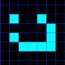 | | kaz49bz | 2041 | C++ 23 | | 65.087 | 0 | 0 | 0 | 1836 | 1849 | 84.947 | 168 | 81.173 | 175 | 74.109 | 210 | 63.852 | 309 | 49.848 | 414 | 79.762 | 273 | 66.851 | 243 | 63.063 | 270 | 62.194 | 285 | 63.227 | 289 | 72.140 | 321 | 67.864 | 277 | 62.949 | 261 | 56.955 | 257 |
| 277 | | | kt1000d | 1680 | Python | | 65.053 | 0 | 0 | 0 | 1891 | 1998 | 76.061 | 338 | 73.540 | 328 | 69.563 | 321 | 65.274 | 264 | 56.251 | 244 | 81.235 | 214 | 66.364 | 261 | 62.250 | 289 | 62.255 | 284 | 63.778 | 275 | 74.889 | 256 | 68.148 | 271 | 61.707 | 292 | 54.969 | 305 |
| 278 | | | maron8676 | 1823 | Python | | 64.942 | 0 | 0 | 0 | 235 | 552 | 86.177 | 126 | 81.662 | 161 | 73.723 | 225 | 63.743 | 313 | 49.357 | 440 | 79.461 | 280 | 66.680 | 247 | 62.937 | 273 | 62.142 | 286 | 63.050 | 291 | 70.887 | 351 | 67.778 | 280 | 63.220 | 252 | 57.448 | 238 |
| 279 |  | | Reid2147 | 1305 | C++ 20 | | 64.897 | 0 | 0 | 0 | 1436 | 1483 | 79.537 | 286 | 76.981 | 262 | 71.729 | 279 | 64.036 | 302 | 53.369 | 315 | 78.419 | 311 | 65.635 | 277 | 62.777 | 279 | 62.610 | 276 | 63.917 | 272 | 73.691 | 288 | 67.596 | 283 | 61.943 | 288 | 55.920 | 281 |
| 280 |  | | keroido | 1469 | Python | | 64.855 | 0 | 0 | 0 | 1434 | 1754 | 80.786 | 264 | 76.102 | 282 | 73.318 | 238 | 66.093 | 244 | 50.517 | 391 | 81.327 | 209 | 66.973 | 232 | 62.227 | 291 | 61.744 | 294 | 62.841 | 297 | 74.351 | 270 | 68.001 | 275 | 61.695 | 293 | 54.868 | 308 |
| 281 | | | chun1182 | 1941 | Python | | 64.746 | 1 | 1 | 1 | 241 | 490 | 78.067 | 305 | 75.237 | 302 | 70.549 | 304 | 64.781 | 282 | 53.981 | 302 | 86.646 | 75 | 66.191 | 265 | 61.536 | 309 | 61.288 | 309 | 62.453 | 310 | 70.331 | 365 | 67.254 | 295 | 63.204 | 253 | 57.800 | 228 |
| 282 | | | wightou | 1773 | C++ 23 | | 64.732 | 0 | 0 | 0 | 42 | 51 | 74.712 | 353 | 73.227 | 336 | 70.064 | 314 | 64.812 | 280 | 55.615 | 261 | 77.347 | 339 | 64.416 | 324 | 61.757 | 305 | 62.991 | 267 | 65.359 | 239 | 69.487 | 391 | 67.271 | 294 | 63.481 | 244 | 58.302 | 210 |
| 283 | | | KumaTachiRen | 2067 | C++ 23 | | 64.717 | 0 | 0 | 1 | 1888 | 1916 | 76.268 | 336 | 75.609 | 295 | 71.282 | 285 | 64.021 | 304 | 54.105 | 299 | 61.271 | 693 | 58.522 | 464 | 65.429 | 211 | 68.485 | 163 | 67.472 | 206 | 72.861 | 301 | 67.278 | 293 | 62.042 | 283 | 56.266 | 270 |
| 284 |  | | zuba | 1533 | C++ 20 | | 64.701 | 0 | 0 | 0 | 1382 | 1535 | 85.215 | 157 | 78.206 | 243 | 72.534 | 259 | 64.469 | 291 | 50.627 | 386 | 79.113 | 291 | 66.637 | 252 | 62.842 | 276 | 61.823 | 293 | 62.589 | 303 | 72.923 | 300 | 67.546 | 287 | 61.998 | 285 | 55.883 | 286 |
| 285 | | | yaichi | 1799 | C++ 23 | | 64.681 | 0 | 0 | 0 | 1581 | 1927 | 76.430 | 334 | 74.692 | 312 | 71.778 | 278 | 65.393 | 260 | 52.785 | 332 | 78.498 | 307 | 65.257 | 287 | 62.113 | 295 | 62.423 | 280 | 64.157 | 267 | 75.397 | 247 | 68.267 | 268 | 61.039 | 309 | 53.452 | 339 |
| 286 | | | makcy | 1415 | C++ 20 | | 64.620 | 0 | 0 | 0 | 46 | 52 | 78.133 | 304 | 75.370 | 299 | 70.977 | 295 | 64.160 | 301 | 53.835 | 307 | 76.780 | 360 | 63.395 | 355 | 62.083 | 296 | 63.462 | 256 | 65.282 | 243 | 72.787 | 304 | 67.506 | 288 | 62.037 | 284 | 55.686 | 290 |
| 287 | | | hiro71687 | 1809 | C++ 20 | | 64.555 | 0 | 0 | 0 | 1612 | 1896 | 80.713 | 266 | 78.431 | 237 | 73.205 | 241 | 64.035 | 303 | 50.368 | 395 | 79.674 | 276 | 66.515 | 255 | 62.403 | 284 | 61.587 | 300 | 62.551 | 306 | 70.687 | 355 | 67.178 | 297 | 62.705 | 268 | 57.241 | 248 |
| 288 | | | kadonox | 1849 | Python | | 64.494 | 0 | 0 | 0 | 247 | 947 | 85.277 | 154 | 81.327 | 172 | 73.236 | 240 | 62.898 | 337 | 49.307 | 445 | 78.678 | 302 | 66.220 | 263 | 62.683 | 280 | 61.676 | 298 | 62.558 | 305 | 71.376 | 339 | 67.195 | 296 | 62.418 | 276 | 56.557 | 265 |
| 289 |  | | sor4chi | 2014 | Rust | | 64.444 | 0 | 0 | 0 | 1814 | 1984 | 80.635 | 269 | 70.292 | 376 | 69.839 | 320 | 66.095 | 243 | 54.714 | 282 | 80.663 | 232 | 66.208 | 264 | 61.856 | 301 | 61.533 | 302 | 62.621 | 301 | 75.644 | 242 | 67.681 | 282 | 60.582 | 316 | 53.338 | 341 |
| 290 | | | kyomikyomi | 1477 | C++ 20 | | 64.441 | 0 | 0 | 0 | 1259 | 1356 | 77.667 | 317 | 73.838 | 325 | 69.348 | 328 | 63.792 | 311 | 55.576 | 262 | 81.884 | 192 | 66.418 | 259 | 61.786 | 303 | 61.260 | 312 | 62.332 | 313 | 76.332 | 229 | 67.564 | 284 | 60.259 | 330 | 53.090 | 347 |
| 291 |  | | colun | 2197 | C++ 17 | | 64.396 | 0 | 0 | 0 | 1146 | 1413 | 76.760 | 327 | 74.797 | 309 | 72.006 | 271 | 65.512 | 257 | 51.491 | 365 | 73.472 | 442 | 64.938 | 300 | 63.047 | 271 | 62.620 | 275 | 63.860 | 273 | 69.814 | 381 | 67.550 | 286 | 63.058 | 258 | 56.686 | 262 |
| 292 | | | kotatsugame | 2246 | C++ 20 | | 64.309 | 0 | 0 | 0 | 1594 | 1717 | 84.097 | 197 | 81.165 | 177 | 73.466 | 231 | 62.675 | 351 | 48.955 | 458 | 79.951 | 261 | 65.595 | 281 | 62.156 | 294 | 61.542 | 301 | 62.585 | 304 | 71.658 | 332 | 67.154 | 298 | 61.991 | 286 | 55.985 | 280 |
| 293 |  | | kmmtkm | 1567 | Python | | 64.228 | 0 | 0 | 0 | 256 | 635 | 83.445 | 217 | 80.260 | 193 | 73.024 | 244 | 62.707 | 348 | 49.504 | 432 | 77.960 | 322 | 65.050 | 294 | 62.236 | 290 | 61.894 | 290 | 63.016 | 293 | 71.769 | 328 | 67.076 | 301 | 61.781 | 289 | 55.839 | 287 |
| 294 | | | d1amondzz | 1570 | C++ 20 | | 64.219 | 0 | 0 | 0 | 1817 | 1960 | 77.085 | 324 | 75.744 | 291 | 71.884 | 275 | 63.757 | 312 | 52.198 | 341 | 79.423 | 281 | 65.112 | 292 | 61.598 | 308 | 61.637 | 299 | 63.289 | 287 | 75.164 | 251 | 67.354 | 290 | 60.392 | 323 | 53.453 | 338 |
| 295 | | | akidaily | 1954 | C++ 17 | | 64.219 | 0 | 0 | 7 | 1929 | 1941 | 77.130 | 323 | 75.426 | 296 | 70.792 | 300 | 63.965 | 305 | 52.872 | 330 | 72.450 | 476 | 61.140 | 404 | 62.313 | 285 | 64.098 | 241 | 66.371 | 225 | 72.793 | 303 | 67.554 | 285 | 61.358 | 301 | 54.656 | 313 |
| 296 |  | | mooaki | 1922 | C++ 20 | | 64.190 | 0 | 0 | 0 | 1720 | 1900 | 82.063 | 250 | 79.990 | 204 | 73.084 | 242 | 62.921 | 335 | 49.385 | 439 | 77.941 | 323 | 65.422 | 284 | 62.311 | 286 | 61.696 | 295 | 62.627 | 300 | 69.640 | 386 | 66.538 | 310 | 62.609 | 269 | 57.606 | 233 |
| 297 | | | HyperToy | 1373 | Rust | | 64.164 | 0 | 0 | 0 | 128 | 1946 | 82.549 | 244 | 78.824 | 228 | 72.569 | 256 | 63.331 | 326 | 49.841 | 415 | 80.347 | 247 | 65.571 | 282 | 61.446 | 314 | 61.322 | 306 | 62.758 | 298 | 71.854 | 326 | 67.123 | 299 | 61.709 | 291 | 55.507 | 293 |
| 298 |  | | yunicode | 1143 | Python | | 64.156 | 0 | 0 | 0 | 679 | 1347 | 67.918 | 443 | 69.589 | 389 | 70.177 | 311 | 66.063 | 245 | 54.956 | 275 | 76.961 | 352 | 65.005 | 297 | 61.958 | 299 | 61.922 | 289 | 63.332 | 286 | 71.346 | 340 | 67.352 | 291 | 61.952 | 287 | 55.485 | 294 |
| 299 | | | Hydrogen332 | 763 | C++ 20 | | 64.121 | 0 | 0 | 23 | 659 | 2000 | 70.182 | 414 | 69.876 | 382 | 65.659 | 404 | 66.743 | 231 | 56.743 | 233 | 79.847 | 265 | 65.621 | 278 | 61.287 | 317 | 61.313 | 308 | 62.855 | 296 | 75.797 | 240 | 67.361 | 289 | 59.679 | 340 | 53.134 | 346 |
| 300 | | | tunehira | 1281 | Rust | | 64.072 | 0 | 0 | 0 | 1837 | 1943 | 78.312 | 302 | 71.330 | 359 | 66.987 | 373 | 64.772 | 283 | 56.265 | 242 | 81.086 | 219 | 65.905 | 272 | 61.362 | 315 | 60.989 | 316 | 62.201 | 314 | 75.537 | 245 | 67.287 | 292 | 60.012 | 334 | 52.926 | 351 |
| 301 |  | | M_Saito | 1720 | Rust | | 64.042 | 0 | 0 | 0 | 456 | 1035 | 77.329 | 319 | 75.246 | 301 | 69.891 | 319 | 62.717 | 347 | 54.220 | 297 | 65.202 | 661 | 59.640 | 439 | 63.941 | 246 | 65.402 | 218 | 66.665 | 218 | 69.783 | 382 | 66.166 | 323 | 62.285 | 277 | 57.591 | 234 |
| 302 |  | | kenta2997 | 1669 | C++ 20 | | 64.038 | 0 | 0 | 0 | 585 | 1952 | 64.793 | 485 | 73.687 | 326 | 70.540 | 305 | 64.322 | 295 | 54.014 | 301 | 80.549 | 238 | 65.835 | 274 | 61.469 | 313 | 61.033 | 315 | 62.163 | 318 | 74.238 | 275 | 67.104 | 300 | 60.520 | 320 | 53.794 | 330 |
| 303 | | | Someone0256 | 1460 | Python | | 64.035 | 0 | 0 | 0 | 1548 | 1974 | 83.220 | 231 | 80.017 | 203 | 72.827 | 251 | 62.821 | 343 | 49.036 | 456 | 77.305 | 341 | 64.634 | 315 | 62.173 | 293 | 61.869 | 292 | 62.906 | 295 | 71.319 | 341 | 66.795 | 303 | 61.685 | 294 | 55.910 | 283 |
| 304 | |  | suncup224 | 1233 | Python | | 63.947 | 0 | 0 | 1 | 898 | 1966 | 80.815 | 263 | 77.753 | 249 | 72.781 | 252 | 63.538 | 318 | 49.514 | 430 | 76.931 | 355 | 64.783 | 309 | 61.808 | 302 | 61.679 | 297 | 63.048 | 292 | 70.684 | 356 | 66.417 | 318 | 61.769 | 290 | 56.526 | 266 |
| 305 | | | sshi_xyz | 1635 | Python | | 63.933 | 0 | 0 | 0 | 1315 | 1905 | 86.669 | 107 | 78.919 | 225 | 71.847 | 277 | 62.350 | 362 | 50.166 | 402 | 78.604 | 304 | 66.398 | 260 | 62.072 | 297 | 60.812 | 320 | 61.464 | 335 | 70.264 | 368 | 66.501 | 312 | 62.051 | 281 | 56.509 | 267 |
| 306 | |  | arr28 | 1185 | Python | | 63.871 | 0 | 0 | 0 | 640 | 1257 | 73.352 | 368 | 68.559 | 405 | 67.147 | 370 | 64.949 | 275 | 57.270 | 225 | 78.715 | 301 | 65.010 | 296 | 61.326 | 316 | 61.318 | 307 | 62.724 | 299 | 77.773 | 201 | 66.986 | 302 | 58.850 | 361 | 51.338 | 397 |
| 307 | | | YTOK | 1331 | C++ 23 | | 63.834 | 0 | 0 | 0 | 207 | 254 | 84.420 | 189 | 79.890 | 208 | 72.214 | 268 | 62.443 | 358 | 49.132 | 454 | 76.965 | 351 | 64.616 | 316 | 62.276 | 287 | 61.490 | 304 | 62.458 | 309 | 72.515 | 308 | 66.734 | 305 | 60.928 | 310 | 54.698 | 312 |
| 308 | | | tkous | 1662 | C++ 23 | | 63.810 | 0 | 0 | 0 | 1849 | 1930 | 72.867 | 373 | 68.680 | 403 | 65.758 | 402 | 64.948 | 276 | 57.939 | 213 | 79.006 | 295 | 67.468 | 223 | 62.815 | 277 | 60.112 | 335 | 59.748 | 386 | 77.003 | 213 | 68.506 | 264 | 58.883 | 360 | 50.141 | 429 |
| 309 | | | nemu123 | 747 | Python | | 63.726 | 0 | 0 | 0 | 228 | 492 | 79.096 | 289 | 77.603 | 251 | 71.917 | 273 | 62.879 | 339 | 50.229 | 400 | 78.933 | 296 | 65.618 | 279 | 61.512 | 310 | 60.786 | 322 | 61.790 | 327 | 68.413 | 419 | 66.162 | 324 | 62.496 | 273 | 57.457 | 237 |
| 310 |  | | takumi152 | 2901 | Rust | | 63.689 | 0 | 0 | 0 | 1934 | 1994 | 83.273 | 227 | 71.824 | 355 | 66.934 | 376 | 63.156 | 330 | 56.008 | 253 | 83.010 | 155 | 65.926 | 270 | 60.911 | 323 | 60.168 | 333 | 61.147 | 347 | 75.727 | 241 | 66.662 | 306 | 59.272 | 350 | 52.600 | 361 |
| 311 |  | | itigo | 2565 | C++ 20 | | 63.683 | 0 | 0 | 0 | 1937 | 1993 | 78.474 | 298 | 73.137 | 339 | 63.882 | 441 | 60.944 | 405 | 59.834 | 180 | 61.492 | 692 | 57.989 | 474 | 62.872 | 275 | 66.172 | 202 | 68.255 | 189 | 68.667 | 414 | 64.841 | 359 | 62.048 | 282 | 58.967 | 193 |
| 312 |  | | Trilink | 1923 | C++ 20 | | 63.656 | 0 | 0 | 0 | 70 | 588 | 84.562 | 182 | 80.828 | 182 | 73.358 | 236 | 62.686 | 350 | 47.012 | 530 | 79.190 | 290 | 65.600 | 280 | 61.478 | 311 | 60.597 | 324 | 61.645 | 332 | 70.151 | 373 | 66.507 | 311 | 61.634 | 295 | 55.897 | 285 |
| 313 | | | Facade | 1353 | Python | | 63.647 | 0 | 0 | 0 | 1635 | 1732 | 84.189 | 195 | 80.458 | 190 | 72.862 | 249 | 62.365 | 361 | 47.866 | 496 | 77.815 | 326 | 64.856 | 306 | 61.616 | 306 | 61.070 | 313 | 62.191 | 316 | 70.975 | 349 | 66.429 | 316 | 61.295 | 303 | 55.452 | 297 |
| 314 | | | teputika | 740 | C++ 20 | | 63.630 | 0 | 0 | 0 | 1036 | 1605 | 72.282 | 383 | 71.227 | 363 | 68.579 | 342 | 64.369 | 294 | 54.704 | 283 | 80.926 | 224 | 65.435 | 283 | 60.737 | 328 | 60.522 | 326 | 61.892 | 324 | 72.515 | 309 | 66.569 | 309 | 60.688 | 315 | 54.274 | 322 |
| 315 | | | piyo1999 | 1829 | Ruby | | 63.598 | 0 | 0 | 0 | 211 | 440 | 84.086 | 198 | 78.050 | 247 | 71.860 | 276 | 62.827 | 340 | 49.257 | 449 | 77.616 | 333 | 64.824 | 307 | 61.772 | 304 | 61.060 | 314 | 61.939 | 322 | 72.142 | 320 | 66.446 | 315 | 60.696 | 314 | 54.655 | 314 |
| 316 |  | | NAMIDAIRO | 1490 | C++ 20 | | 63.543 | 0 | 0 | 0 | 160 | 1934 | 83.302 | 225 | 74.020 | 321 | 70.640 | 301 | 63.929 | 307 | 51.094 | 374 | 78.210 | 316 | 64.757 | 311 | 61.255 | 318 | 60.936 | 318 | 62.188 | 317 | 72.466 | 310 | 66.459 | 314 | 60.567 | 317 | 54.210 | 323 |
| 317 |  | | chimaki821 | 1864 | C++ 17 | | 63.492 | 0 | 0 | 0 | 1505 | 1563 | 84.501 | 184 | 80.422 | 191 | 72.547 | 258 | 62.376 | 360 | 47.546 | 506 | 77.359 | 338 | 64.871 | 305 | 61.609 | 307 | 60.903 | 319 | 61.844 | 325 | 70.393 | 362 | 66.289 | 320 | 61.395 | 300 | 55.453 | 296 |
| 318 | | | Daichi124 | 1780 | Rust | | 63.452 | 0 | 0 | 0 | 90 | 415 | 80.686 | 268 | 75.690 | 293 | 70.365 | 309 | 63.378 | 322 | 50.786 | 381 | 78.554 | 305 | 64.573 | 318 | 61.048 | 320 | 60.804 | 321 | 62.194 | 315 | 72.694 | 306 | 66.630 | 308 | 60.384 | 324 | 53.594 | 336 |
| 319 |  | | Saki1103 | 1600 | C++ 20 | | 63.392 | 0 | 0 | 0 | 383 | 720 | 79.973 | 280 | 77.131 | 258 | 71.376 | 284 | 62.630 | 352 | 49.927 | 410 | 78.088 | 320 | 64.111 | 333 | 61.065 | 319 | 60.973 | 317 | 62.358 | 312 | 69.566 | 390 | 65.799 | 333 | 61.568 | 296 | 56.248 | 271 |
| 320 | | | digestive | 1400 | C++ 23 | | 63.353 | 0 | 0 | 0 | 1837 | 1881 | 83.490 | 214 | 80.769 | 183 | 73.408 | 234 | 62.250 | 364 | 46.535 | 541 | 76.312 | 375 | 63.747 | 340 | 61.471 | 312 | 61.271 | 310 | 62.462 | 308 | 70.517 | 358 | 66.260 | 322 | 61.089 | 308 | 55.095 | 302 |
| 321 | | | GOTKAKO | 2014 | C++ 20 | | 63.260 | 0 | 0 | 0 | 1436 | 1498 | 77.619 | 318 | 74.150 | 320 | 69.945 | 318 | 63.470 | 320 | 51.441 | 366 | 80.417 | 243 | 65.197 | 290 | 60.577 | 333 | 60.087 | 337 | 61.307 | 339 | 73.949 | 281 | 66.419 | 317 | 59.574 | 342 | 52.584 | 362 |
| 322 |  | | yuuDot | 1785 | Rust | | 63.222 | 0 | 0 | 0 | 1319 | 1955 | 73.803 | 362 | 73.534 | 329 | 69.344 | 330 | 62.795 | 346 | 53.030 | 326 | 80.380 | 244 | 65.000 | 299 | 60.512 | 335 | 60.100 | 336 | 61.397 | 337 | 73.947 | 282 | 66.277 | 321 | 59.518 | 344 | 52.645 | 358 |
| 323 | | | yt142857 | 1082 | Python | | 63.172 | 0 | 0 | 0 | 1331 | 1961 | 73.765 | 363 | 70.800 | 372 | 68.993 | 335 | 64.794 | 281 | 52.618 | 336 | 80.855 | 226 | 64.892 | 303 | 59.792 | 352 | 59.935 | 343 | 61.980 | 321 | 74.550 | 264 | 66.484 | 313 | 59.050 | 353 | 52.071 | 373 |
| 324 | | | Hec | 2018 | C++ 23 | | 63.166 | 3 | 3 | 89 | 1083 | 1998 | 72.692 | 375 | 64.625 | 466 | 63.632 | 449 | 65.260 | 265 | 59.183 | 189 | 93.114 | 13 | 70.497 | 158 | 60.384 | 338 | 57.861 | 399 | 53.870 | 505 | 76.979 | 215 | 66.764 | 304 | 59.522 | 343 | 48.723 | 475 |
| 325 |  | | thunder | 1543 | C++ 23 | | 63.130 | 0 | 0 | 4 | 1511 | 1785 | 75.408 | 342 | 72.012 | 352 | 67.549 | 359 | 63.189 | 329 | 54.230 | 295 | 80.825 | 227 | 65.925 | 271 | 60.596 | 332 | 59.653 | 355 | 60.321 | 365 | 76.105 | 232 | 66.646 | 307 | 58.444 | 375 | 50.752 | 413 |
| 326 | | | shira_111 | 1284 | C++ 20 | | 63.118 | 0 | 0 | 0 | 1796 | 1899 | 74.948 | 351 | 72.732 | 343 | 68.833 | 338 | 63.093 | 331 | 53.081 | 324 | 79.049 | 294 | 64.522 | 321 | 60.569 | 334 | 60.298 | 331 | 61.615 | 333 | 73.699 | 287 | 66.301 | 319 | 59.510 | 345 | 52.443 | 365 |
| 327 |  | | Ang107 | 2408 | C++ 20 | | 63.095 | 0 | 0 | 0 | 358 | 1001 | 83.575 | 211 | 78.100 | 246 | 68.161 | 352 | 59.821 | 433 | 53.050 | 325 | 74.420 | 425 | 62.761 | 372 | 60.969 | 321 | 61.517 | 303 | 63.199 | 290 | 68.878 | 409 | 65.215 | 348 | 61.329 | 302 | 56.617 | 264 |
| 328 | | | sasa8uyauya | 1564 | Python | | 63.089 | 0 | 0 | 0 | 1486 | 1997 | 80.966 | 261 | 76.328 | 276 | 68.495 | 344 | 61.720 | 380 | 52.097 | 345 | 79.091 | 292 | 64.511 | 323 | 60.803 | 327 | 60.240 | 332 | 61.322 | 338 | 72.106 | 322 | 66.003 | 327 | 60.050 | 333 | 53.730 | 332 |
| 329 | | | noshinn | 1484 | C++ 23 | | 63.029 | 0 | 0 | 0 | 169 | 315 | 77.156 | 322 | 76.125 | 281 | 71.537 | 282 | 62.893 | 338 | 49.144 | 453 | 76.626 | 368 | 64.143 | 330 | 60.830 | 326 | 60.548 | 325 | 61.923 | 323 | 70.728 | 353 | 65.922 | 330 | 60.558 | 318 | 54.452 | 318 |
| 330 | | | Gobi | 2142 | Rust | | 62.998 | 0 | 0 | 0 | 1529 | 1531 | 74.355 | 355 | 69.743 | 385 | 68.383 | 347 | 63.345 | 325 | 54.461 | 290 | 74.214 | 428 | 60.944 | 410 | 59.710 | 358 | 61.874 | 291 | 65.472 | 237 | 71.587 | 335 | 65.923 | 329 | 60.176 | 332 | 53.839 | 328 |
| 331 | | | unsre | 1777 | C++ 23 | | 62.996 | 0 | 0 | 0 | 1929 | 1934 | 65.148 | 481 | 65.489 | 455 | 67.044 | 371 | 65.091 | 271 | 56.671 | 236 | 80.108 | 255 | 65.091 | 293 | 60.231 | 341 | 59.884 | 348 | 60.921 | 351 | 74.513 | 265 | 65.845 | 331 | 58.949 | 359 | 52.191 | 371 |
| 332 | | | benesser | 1412 | C++ 17 | | 62.950 | 0 | 0 | 0 | 448 | 1971 | 77.711 | 314 | 75.999 | 284 | 70.287 | 310 | 61.926 | 376 | 50.702 | 384 | 71.845 | 497 | 59.072 | 455 | 59.976 | 347 | 63.339 | 259 | 66.175 | 228 | 68.199 | 424 | 64.934 | 356 | 61.444 | 299 | 56.899 | 259 |
| 333 | | | iomir | 1292 | C++ 20 | | 62.937 | 0 | 0 | 167 | 1919 | 1940 | 83.318 | 222 | 79.606 | 216 | 72.290 | 265 | 63.947 | 306 | 44.840 | 589 | 79.816 | 268 | 66.824 | 244 | 62.814 | 278 | 59.184 | 367 | 57.300 | 433 | 70.978 | 348 | 66.104 | 325 | 60.261 | 329 | 53.917 | 327 |
| 334 |  | | strangerxxx | 1751 | Python | | 62.883 | 0 | 0 | 0 | 272 | 1176 | 86.835 | 92 | 82.147 | 146 | 72.980 | 245 | 60.849 | 407 | 45.642 | 566 | 77.817 | 325 | 64.904 | 301 | 60.900 | 324 | 59.890 | 346 | 60.748 | 354 | 68.655 | 415 | 65.634 | 339 | 61.176 | 306 | 55.650 | 291 |
| 335 |  | | anpanman314 | 981 | C++ 20 | | 62.859 | 0 | 0 | 0 | 1836 | 1844 | 74.856 | 352 | 70.971 | 368 | 67.565 | 358 | 63.473 | 319 | 53.668 | 309 | 80.574 | 237 | 65.003 | 298 | 60.209 | 342 | 59.521 | 358 | 60.647 | 356 | 74.561 | 262 | 65.984 | 328 | 58.723 | 367 | 51.651 | 386 |
| 336 | | | ryomac1 | 1714 | Python | | 62.848 | 0 | 0 | 0 | 1248 | 1349 | 86.803 | 95 | 80.090 | 200 | 71.646 | 281 | 61.033 | 400 | 47.371 | 515 | 76.745 | 363 | 63.680 | 342 | 60.836 | 325 | 60.410 | 329 | 61.694 | 331 | 70.066 | 374 | 65.716 | 335 | 60.528 | 319 | 54.637 | 315 |
| 337 | | | yellowsubmarine | 1637 | Java | | 62.750 | 0 | 0 | 0 | 895 | 1591 | 79.074 | 290 | 75.882 | 286 | 70.159 | 313 | 62.311 | 363 | 49.695 | 424 | 77.207 | 345 | 64.802 | 308 | 60.953 | 322 | 59.890 | 347 | 60.435 | 359 | 71.146 | 344 | 65.811 | 332 | 59.922 | 336 | 53.643 | 334 |
| 338 |  | | bird01 | 1814 | C++ 23 | | 62.738 | 0 | 0 | 0 | 197 | 291 | 69.926 | 419 | 66.174 | 441 | 65.180 | 412 | 64.271 | 297 | 57.102 | 227 | 79.194 | 289 | 64.114 | 332 | 59.665 | 360 | 59.991 | 339 | 61.515 | 334 | 70.164 | 372 | 65.307 | 345 | 60.359 | 325 | 54.708 | 310 |
| 339 | | | urectanc | 1653 | Rust | | 62.690 | 0 | 0 | 0 | 957 | 1045 | 62.014 | 509 | 62.282 | 493 | 64.977 | 418 | 65.770 | 252 | 58.372 | 203 | 76.999 | 350 | 63.537 | 349 | 59.851 | 350 | 60.414 | 328 | 62.014 | 320 | 74.120 | 277 | 65.204 | 349 | 58.741 | 366 | 52.246 | 370 |
| 340 |  | | prd_xxx | 1931 | Python | | 62.652 | 0 | 0 | 0 | 748 | 1098 | 65.139 | 482 | 65.259 | 460 | 62.199 | 471 | 64.258 | 298 | 59.654 | 184 | 80.880 | 225 | 64.693 | 312 | 59.730 | 357 | 59.362 | 362 | 60.581 | 357 | 75.599 | 243 | 65.670 | 336 | 58.013 | 388 | 50.811 | 410 |
| 341 | | | jin_matakich | 2004 | Rust | | 62.634 | 0 | 0 | 0 | 1390 | 1423 | 61.357 | 517 | 66.774 | 435 | 66.986 | 374 | 64.750 | 284 | 55.424 | 266 | 77.715 | 329 | 63.674 | 344 | 60.039 | 346 | 59.925 | 345 | 61.706 | 330 | 73.792 | 284 | 65.644 | 337 | 58.761 | 365 | 51.836 | 379 |
| 342 | | | moldau | 1424 | C++ 20 | | 62.634 | 0 | 0 | 0 | 39 | 81 | 78.802 | 293 | 74.864 | 307 | 70.454 | 307 | 62.520 | 355 | 49.507 | 431 | 77.665 | 331 | 64.028 | 336 | 60.271 | 339 | 59.945 | 341 | 61.135 | 348 | 69.971 | 379 | 65.420 | 343 | 60.308 | 327 | 54.395 | 319 |
| 343 | | | jiyujin816 | 1380 | C++ 23 | | 62.607 | 0 | 0 | 0 | 1549 | 1852 | 75.138 | 348 | 69.534 | 392 | 64.268 | 430 | 63.579 | 317 | 55.660 | 260 | 78.532 | 306 | 64.188 | 329 | 59.854 | 349 | 59.748 | 354 | 61.170 | 344 | 74.153 | 276 | 65.731 | 334 | 58.525 | 371 | 51.504 | 388 |
| 344 | | | PhirainEX | 823 | C++ 20 | | 62.546 | 0 | 0 | 7 | 78 | 1957 | 68.898 | 434 | 74.697 | 311 | 71.122 | 290 | 62.824 | 342 | 49.334 | 442 | 74.646 | 424 | 63.515 | 351 | 60.265 | 340 | 60.403 | 330 | 61.832 | 326 | 68.635 | 416 | 64.837 | 360 | 60.871 | 312 | 55.464 | 295 |
| 345 | | | molchiro | 1372 | Rust | | 62.531 | 0 | 0 | 2 | 1855 | 1959 | 70.781 | 402 | 68.108 | 414 | 67.212 | 368 | 64.370 | 293 | 53.839 | 306 | 80.932 | 223 | 65.282 | 285 | 59.556 | 362 | 58.974 | 370 | 60.027 | 370 | 72.819 | 302 | 65.635 | 338 | 58.838 | 362 | 52.337 | 368 |
| 346 | | | tau1235 | 978 | C++ 23 | | 62.509 | 0 | 0 | 0 | 1741 | 1925 | 86.733 | 99 | 82.041 | 149 | 69.502 | 324 | 57.706 | 485 | 49.909 | 412 | 78.787 | 299 | 64.899 | 302 | 60.616 | 330 | 59.239 | 366 | 59.749 | 385 | 69.582 | 387 | 64.975 | 353 | 60.286 | 328 | 54.794 | 309 |
| 347 |  | | olphe | 2295 | C++ 23 | | 62.486 | 0 | 0 | 213 | 1308 | 1982 | 75.168 | 346 | 65.762 | 450 | 63.796 | 445 | 62.942 | 334 | 58.343 | 205 | 84.781 | 114 | 67.598 | 220 | 63.614 | 256 | 64.926 | 226 | 46.511 | 616 | 72.434 | 311 | 65.075 | 351 | 58.822 | 363 | 53.190 | 344 |
| 348 |  | | melo25 | 1806 | Python | | 62.462 | 0 | 0 | 0 | 246 | 1658 | 83.438 | 218 | 73.416 | 333 | 68.965 | 336 | 62.596 | 353 | 50.292 | 398 | 77.405 | 337 | 63.614 | 346 | 60.050 | 343 | 59.793 | 351 | 61.258 | 342 | 71.923 | 325 | 65.456 | 342 | 59.307 | 349 | 52.678 | 356 |
| 349 |  | | tmyksj | 1570 | C++ 20 | | 62.462 | 0 | 0 | 0 | 104 | 385 | 73.970 | 359 | 72.385 | 349 | 68.777 | 340 | 62.705 | 349 | 51.617 | 360 | 76.070 | 379 | 62.501 | 380 | 59.800 | 351 | 60.444 | 327 | 62.383 | 311 | 69.685 | 384 | 65.469 | 341 | 60.214 | 331 | 54.015 | 326 |
| 350 | | | GenenSeikatu | 1446 | C++ 20 | | 62.455 | 0 | 0 | 0 | 119 | 1242 | 83.792 | 206 | 79.019 | 223 | 71.961 | 272 | 61.663 | 384 | 46.069 | 548 | 76.686 | 366 | 63.404 | 354 | 60.412 | 337 | 60.018 | 338 | 61.103 | 350 | 68.920 | 407 | 65.296 | 346 | 60.464 | 321 | 54.703 | 311 |
| 351 |  | | LyricalMaestro | 1765 | Python | | 62.411 | 0 | 0 | 12 | 425 | 684 | 71.365 | 393 | 72.392 | 348 | 69.345 | 329 | 63.418 | 321 | 50.552 | 388 | 76.379 | 373 | 66.122 | 268 | 60.044 | 345 | 58.877 | 372 | 59.866 | 377 | 71.948 | 324 | 65.284 | 347 | 59.395 | 346 | 52.533 | 363 |
| 352 |  | | rasennn | 1446 | C++ 17 | | 62.373 | 0 | 0 | 0 | 87 | 345 | 72.232 | 387 | 67.053 | 427 | 65.365 | 410 | 63.377 | 323 | 56.006 | 254 | 79.820 | 267 | 64.887 | 304 | 59.756 | 353 | 59.035 | 369 | 59.861 | 378 | 74.110 | 278 | 65.326 | 344 | 58.203 | 381 | 51.358 | 395 |
| 353 | | | ROBORU | 1300 | C++ 20 | | 62.311 | 0 | 0 | 2 | 262 | 475 | 73.360 | 367 | 73.049 | 340 | 69.470 | 325 | 62.511 | 356 | 50.536 | 389 | 76.585 | 369 | 63.526 | 350 | 59.745 | 355 | 59.782 | 352 | 61.282 | 340 | 67.158 | 457 | 64.617 | 364 | 60.907 | 311 | 56.210 | 273 |
| 354 | | | Yucha | 1747 | Python | | 62.177 | 0 | 0 | 0 | 1598 | 1962 | 78.658 | 295 | 74.151 | 319 | 66.599 | 386 | 59.972 | 428 | 53.492 | 312 | 77.165 | 346 | 62.398 | 382 | 59.916 | 348 | 59.956 | 340 | 61.270 | 341 | 71.666 | 331 | 65.200 | 350 | 58.950 | 358 | 52.407 | 366 |
| 355 | | | takus4649 | 1631 | Rust | | 62.089 | 0 | 0 | 0 | 1644 | 1779 | 72.433 | 382 | 68.109 | 413 | 65.503 | 409 | 63.368 | 324 | 54.377 | 293 | 79.840 | 266 | 64.353 | 326 | 59.299 | 368 | 58.724 | 376 | 59.911 | 376 | 74.552 | 263 | 65.584 | 340 | 57.627 | 401 | 50.027 | 432 |
| 356 | | | unos | 1532 | C++ 23 | | 62.039 | 0 | 0 | 0 | 1792 | 1895 | 78.003 | 308 | 74.640 | 313 | 69.198 | 333 | 61.748 | 379 | 49.327 | 444 | 80.306 | 248 | 64.224 | 327 | 59.238 | 370 | 58.613 | 381 | 59.835 | 379 | 70.226 | 369 | 64.964 | 354 | 59.349 | 347 | 53.155 | 345 |
| 357 |  | | gomaazarasi | 1034 | Python | | 62.028 | 0 | 0 | 0 | 1502 | 1865 | 76.537 | 331 | 73.586 | 327 | 68.474 | 345 | 61.693 | 383 | 50.523 | 390 | 80.370 | 245 | 64.137 | 331 | 59.202 | 374 | 58.672 | 379 | 59.823 | 381 | 70.220 | 370 | 65.040 | 352 | 59.325 | 348 | 53.053 | 348 |
| 358 | | | Wayne_yan | 1214 | OCaml | | 62.013 | 0 | 0 | 0 | 353 | 783 | 71.530 | 391 | 70.668 | 374 | 66.829 | 381 | 62.042 | 372 | 53.228 | 318 | 80.000 | 259 | 62.181 | 388 | 59.102 | 375 | 59.424 | 359 | 61.135 | 349 | 71.093 | 346 | 64.826 | 361 | 59.029 | 355 | 52.644 | 359 |
| 359 |  | | hossie | 1677 | Rust | | 61.999 | 0 | 0 | 0 | 38 | 180 | 83.518 | 213 | 79.695 | 213 | 71.466 | 283 | 60.157 | 425 | 46.046 | 550 | 76.471 | 371 | 63.346 | 356 | 60.049 | 344 | 59.279 | 365 | 60.371 | 361 | 67.602 | 442 | 64.575 | 365 | 60.330 | 326 | 55.094 | 303 |
| 360 | | | breso | 2216 | C++ 23 | | 61.996 | 0 | 0 | 0 | 1574 | 1746 | 72.161 | 388 | 65.087 | 463 | 63.085 | 460 | 62.916 | 336 | 57.824 | 215 | 77.677 | 330 | 63.182 | 359 | 59.228 | 372 | 59.414 | 360 | 60.763 | 353 | 73.285 | 294 | 64.011 | 383 | 57.920 | 391 | 52.393 | 367 |
| 361 | | | Keria | 1197 | C++ 23 | | 61.963 | 0 | 0 | 0 | 1833 | 1836 | 67.381 | 453 | 67.370 | 423 | 66.416 | 389 | 63.314 | 327 | 54.228 | 296 | 79.542 | 278 | 64.065 | 334 | 59.241 | 369 | 58.728 | 375 | 59.805 | 384 | 72.235 | 317 | 64.802 | 362 | 58.446 | 374 | 51.896 | 377 |
| 362 |  | | potato167 | 2497 | C++ 17 | | 61.948 | 0 | 0 | 0 | 31 | 38 | 76.563 | 330 | 76.215 | 280 | 71.052 | 292 | 61.428 | 389 | 47.367 | 516 | 72.156 | 489 | 63.099 | 364 | 60.603 | 331 | 59.839 | 349 | 60.765 | 352 | 66.343 | 475 | 64.171 | 378 | 60.868 | 313 | 56.064 | 276 |
| 363 | | | KA3333 | 1146 | C++ 20 | | 61.919 | 0 | 0 | 0 | 383 | 659 | 78.013 | 307 | 74.567 | 314 | 68.793 | 339 | 61.320 | 394 | 49.667 | 426 | 78.719 | 300 | 63.776 | 339 | 59.355 | 367 | 58.774 | 373 | 60.023 | 371 | 69.083 | 401 | 64.949 | 355 | 59.687 | 339 | 53.490 | 337 |
| 364 | | | ykobayashi | 1624 | C++ 23 | | 61.868 | 0 | 0 | 100 | 1857 | 1930 | 59.398 | 537 | 68.429 | 409 | 70.587 | 303 | 65.035 | 273 | 49.483 | 433 | 72.279 | 482 | 62.678 | 375 | 59.511 | 363 | 59.937 | 342 | 61.741 | 329 | 71.106 | 345 | 66.051 | 326 | 58.365 | 376 | 51.351 | 396 |
| 365 | | | bamps53 | 665 | C++ 20 | | 61.783 | 0 | 0 | 0 | 56 | 73 | 72.905 | 372 | 73.467 | 332 | 69.956 | 317 | 62.034 | 374 | 48.756 | 467 | 70.211 | 566 | 59.703 | 438 | 59.609 | 361 | 61.266 | 311 | 63.551 | 282 | 64.191 | 529 | 63.311 | 395 | 61.496 | 297 | 57.888 | 226 |
| 366 | | | rotti | 1606 | C++ 20 | | 61.762 | 0 | 0 | 0 | 327 | 441 | 83.053 | 237 | 79.899 | 207 | 72.311 | 264 | 60.664 | 413 | 44.121 | 612 | 76.257 | 378 | 62.704 | 374 | 59.755 | 354 | 59.280 | 364 | 60.336 | 364 | 67.589 | 443 | 64.193 | 376 | 60.011 | 335 | 54.872 | 307 |
| 367 | | | miya256 | 1321 | Python | | 61.746 | 0 | 0 | 0 | 270 | 363 | 69.410 | 426 | 69.403 | 394 | 66.657 | 384 | 62.583 | 354 | 52.788 | 331 | 74.852 | 418 | 61.711 | 396 | 59.493 | 365 | 59.835 | 350 | 61.408 | 336 | 70.274 | 367 | 64.345 | 370 | 59.006 | 357 | 52.927 | 350 |
| 368 | | | hamu_chan | 661 | C++ 20 | | 61.633 | 0 | 0 | 0 | 33 | 49 | 70.830 | 401 | 71.288 | 361 | 68.589 | 341 | 62.223 | 365 | 50.349 | 397 | 76.703 | 365 | 63.595 | 348 | 59.495 | 364 | 58.745 | 374 | 59.554 | 388 | 69.012 | 405 | 64.129 | 379 | 59.231 | 351 | 53.758 | 331 |
| 369 | | | matcha_pudding | 1190 | C++ 17 | | 61.620 | 0 | 0 | 0 | 1318 | 1860 | 69.787 | 420 | 69.187 | 397 | 67.034 | 372 | 61.810 | 378 | 53.004 | 327 | 77.774 | 327 | 62.753 | 373 | 58.876 | 381 | 58.930 | 371 | 60.365 | 362 | 73.336 | 291 | 64.729 | 363 | 57.485 | 402 | 50.415 | 424 |
| 370 | | | teek | 1776 | Python | | 61.603 | 0 | 0 | 24 | 1394 | 1999 | 72.261 | 385 | 72.420 | 347 | 71.154 | 289 | 62.825 | 341 | 47.225 | 525 | 74.919 | 415 | 63.301 | 358 | 59.384 | 366 | 58.719 | 377 | 60.444 | 358 | 69.421 | 393 | 64.846 | 358 | 59.037 | 354 | 52.613 | 360 |
| 371 | | | hyoka7 | 1262 | C++ 17 | | 61.568 | 0 | 0 | 0 | 1930 | 1998 | 66.865 | 458 | 66.658 | 436 | 65.869 | 398 | 63.015 | 333 | 54.025 | 300 | 78.468 | 308 | 63.617 | 345 | 58.884 | 380 | 58.463 | 386 | 59.526 | 390 | 71.696 | 330 | 64.370 | 369 | 58.089 | 383 | 51.652 | 385 |
| 372 | | | pia019 | 1325 | C++ 23 | | 61.554 | 0 | 0 | 1 | 830 | 1969 | 68.942 | 433 | 69.151 | 398 | 68.035 | 353 | 62.409 | 359 | 51.614 | 361 | 75.270 | 403 | 63.937 | 337 | 58.948 | 377 | 58.678 | 378 | 59.959 | 374 | 69.828 | 380 | 64.242 | 375 | 58.783 | 364 | 52.930 | 349 |
| 373 | | | ngitmikami | 654 | Rust | | 61.523 | 0 | 0 | 0 | 1912 | 1971 | 63.921 | 492 | 56.867 | 535 | 64.680 | 423 | 66.198 | 242 | 57.196 | 226 | 74.705 | 422 | 62.411 | 381 | 58.565 | 386 | 59.386 | 361 | 61.168 | 345 | 72.207 | 318 | 64.060 | 382 | 57.894 | 393 | 51.489 | 390 |
| 374 | | | uminorosujin | 1917 | Go | | 61.429 | 0 | 0 | 20 | 1939 | 2000 | 54.270 | 703 | 78.271 | 241 | 70.875 | 298 | 60.587 | 415 | 47.171 | 527 | 75.574 | 391 | 61.872 | 393 | 59.231 | 371 | 59.598 | 356 | 60.145 | 368 | 69.031 | 402 | 64.113 | 380 | 59.231 | 352 | 52.897 | 352 |
| 375 | | | kaliafluorido | 2136 | C++ 23 | | 61.375 | 0 | 0 | 0 | 1811 | 1909 | 75.215 | 345 | 70.813 | 371 | 68.259 | 350 | 62.073 | 370 | 49.793 | 417 | 75.911 | 383 | 63.676 | 343 | 58.983 | 376 | 58.326 | 390 | 59.550 | 389 | 71.225 | 342 | 64.322 | 371 | 58.080 | 384 | 51.388 | 394 |
| 376 | | | yas_yasyu | 1552 | Rust | | 61.349 | 0 | 0 | 0 | 1429 | 1432 | 70.180 | 416 | 69.920 | 381 | 67.155 | 369 | 61.697 | 382 | 51.697 | 358 | 74.143 | 430 | 62.265 | 386 | 59.202 | 373 | 59.093 | 368 | 60.434 | 360 | 70.037 | 377 | 64.106 | 381 | 58.495 | 372 | 52.308 | 369 |
| 377 | | | tygrysek | 1586 | C++ 20 | | 61.344 | 0 | 0 | 0 | 117 | 146 | 69.343 | 427 | 62.175 | 494 | 61.321 | 489 | 63.253 | 328 | 58.341 | 206 | 81.098 | 218 | 63.480 | 352 | 58.353 | 389 | 58.000 | 396 | 58.785 | 400 | 74.260 | 273 | 64.274 | 373 | 56.724 | 411 | 49.613 | 447 |
| 378 | | | MelVouivre | 1377 | Kotlin | | 61.339 | 0 | 0 | 0 | 533 | 1744 | 77.725 | 313 | 74.333 | 317 | 68.576 | 343 | 60.715 | 411 | 48.657 | 470 | 76.678 | 367 | 62.899 | 368 | 58.923 | 379 | 58.453 | 387 | 59.823 | 382 | 70.323 | 366 | 64.485 | 366 | 58.309 | 379 | 51.742 | 382 |
| 379 | | | tkykwtnb | 1457 | Python | | 61.283 | 0 | 0 | 0 | 704 | 1584 | 77.814 | 312 | 72.195 | 350 | 67.842 | 354 | 61.415 | 391 | 49.444 | 434 | 78.103 | 318 | 63.156 | 360 | 58.740 | 382 | 58.232 | 391 | 59.250 | 395 | 70.897 | 350 | 64.387 | 368 | 57.962 | 390 | 51.394 | 393 |
| 380 | | | bono_bono | 1931 | Rust | | 61.252 | 0 | 0 | 0 | 105 | 751 | 65.230 | 478 | 72.097 | 351 | 63.380 | 452 | 61.427 | 390 | 53.248 | 317 | 79.900 | 264 | 62.522 | 378 | 58.029 | 395 | 58.068 | 394 | 59.968 | 373 | 71.576 | 336 | 64.436 | 367 | 57.681 | 398 | 50.803 | 411 |
| 381 | | | kites | 799 | Python | | 61.212 | 0 | 0 | 0 | 1845 | 1859 | 73.161 | 369 | 71.887 | 353 | 68.218 | 351 | 61.579 | 386 | 49.332 | 443 | 77.988 | 321 | 62.917 | 367 | 58.572 | 385 | 58.167 | 392 | 59.442 | 392 | 70.044 | 376 | 64.184 | 377 | 58.232 | 380 | 51.915 | 375 |
| 382 | | | ke90iehRG | 1377 | C++ 20 | | 61.187 | 0 | 0 | 0 | 1943 | 1975 | 75.331 | 343 | 72.502 | 346 | 67.534 | 361 | 60.706 | 412 | 50.060 | 404 | 76.731 | 364 | 62.297 | 385 | 58.615 | 384 | 58.476 | 385 | 60.013 | 372 | 71.208 | 343 | 64.320 | 372 | 57.755 | 396 | 50.959 | 405 |
| 383 | | | yaaya | 1665 | C++ 17 | | 61.152 | 0 | 0 | 0 | 40 | 135 | 75.573 | 341 | 75.386 | 297 | 70.608 | 302 | 60.953 | 403 | 46.052 | 549 | 70.984 | 527 | 61.853 | 394 | 59.743 | 356 | 59.326 | 363 | 60.313 | 366 | 66.846 | 464 | 63.706 | 386 | 59.592 | 341 | 54.063 | 325 |
| 384 | | | mnti | 1162 | C++ 20 | | 61.117 | 0 | 0 | 0 | 1796 | 1929 | 83.112 | 235 | 76.797 | 265 | 68.373 | 348 | 59.262 | 444 | 47.717 | 500 | 80.071 | 257 | 61.837 | 395 | 58.051 | 394 | 58.134 | 393 | 59.915 | 375 | 68.731 | 411 | 63.771 | 384 | 58.707 | 369 | 52.832 | 355 |
| 385 | | | jastaway | 1591 | C++ 23 | | 61.108 | 0 | 0 | 0 | 1923 | 1983 | 66.916 | 456 | 64.004 | 472 | 66.724 | 382 | 63.832 | 310 | 52.620 | 335 | 72.037 | 493 | 59.960 | 432 | 58.063 | 393 | 59.933 | 344 | 62.616 | 302 | 67.901 | 432 | 63.445 | 393 | 59.022 | 356 | 53.682 | 333 |
| 386 | | | syunsuke | 1878 | Python | | 61.058 | 0 | 0 | 0 | 470 | 621 | 49.229 | 718 | 61.865 | 496 | 66.877 | 377 | 63.861 | 308 | 54.902 | 277 | 75.307 | 399 | 59.454 | 449 | 57.480 | 409 | 59.780 | 353 | 62.503 | 307 | 65.658 | 491 | 63.196 | 400 | 59.754 | 338 | 55.294 | 300 |
| 387 |  | | ninja7 | 2122 | C++ 23 | | 61.014 | 0 | 0 | 0 | 1750 | 1848 | 62.788 | 501 | 63.524 | 481 | 63.309 | 455 | 62.811 | 345 | 56.149 | 249 | 80.500 | 241 | 63.322 | 357 | 57.834 | 400 | 57.605 | 404 | 58.623 | 405 | 73.701 | 286 | 63.729 | 385 | 56.436 | 417 | 49.715 | 444 |
| 388 |  |  | sas4eka | 2317 | C++ 20 | | 60.999 | 0 | 0 | 15 | 1915 | 1999 | 60.175 | 532 | 66.003 | 444 | 65.538 | 408 | 62.097 | 368 | 54.175 | 298 | 79.498 | 279 | 62.805 | 371 | 57.945 | 396 | 57.983 | 398 | 58.920 | 399 | 70.590 | 357 | 63.501 | 392 | 57.654 | 400 | 51.831 | 380 |
| 389 | | | stng | 1807 | Python | | 60.975 | 0 | 0 | 167 | 289 | 798 | 83.697 | 210 | 76.695 | 268 | 71.112 | 291 | 62.817 | 344 | 41.886 | 652 | 76.880 | 357 | 64.047 | 335 | 60.424 | 336 | 57.679 | 402 | 56.418 | 454 | 67.975 | 428 | 64.245 | 374 | 58.714 | 368 | 52.478 | 364 |
| 390 | | | Nichi10p | 1449 | Python | | 60.938 | 0 | 0 | 0 | 224 | 241 | 66.332 | 465 | 65.812 | 449 | 64.348 | 428 | 62.077 | 369 | 54.398 | 291 | 75.029 | 410 | 62.152 | 389 | 58.441 | 388 | 58.506 | 384 | 59.806 | 383 | 70.497 | 360 | 63.651 | 388 | 57.655 | 399 | 51.501 | 389 |
| 391 |  | | mono_1729 | 2122 | C++ 23 | | 60.931 | 0 | 0 | 0 | 868 | 1993 | 75.255 | 344 | 70.669 | 373 | 66.120 | 393 | 60.167 | 424 | 51.722 | 355 | 76.797 | 359 | 63.138 | 361 | 58.442 | 387 | 57.798 | 400 | 58.926 | 398 | 69.658 | 385 | 63.599 | 390 | 58.071 | 385 | 51.958 | 374 |
| 392 |  | | OjiCoder | 1983 | C++ 23 | | 60.863 | 0 | 0 | 2 | 1894 | 1954 | 73.503 | 365 | 70.014 | 379 | 65.015 | 415 | 59.962 | 429 | 52.929 | 328 | 75.546 | 393 | 63.010 | 366 | 59.683 | 359 | 58.048 | 395 | 57.743 | 419 | 68.902 | 408 | 63.235 | 398 | 58.060 | 387 | 52.872 | 353 |
| 393 | | | semimaru | 1588 | Rust | | 60.827 | 0 | 0 | 0 | 1821 | 1949 | 72.277 | 384 | 70.901 | 370 | 66.859 | 378 | 60.948 | 404 | 50.206 | 401 | 70.017 | 573 | 57.422 | 486 | 57.610 | 403 | 61.684 | 296 | 63.264 | 288 | 67.502 | 446 | 62.991 | 403 | 58.667 | 370 | 53.795 | 329 |
| 394 | | | makimakimakki | 1379 | Python | | 60.778 | 0 | 0 | 0 | 1681 | 1796 | 72.016 | 389 | 71.644 | 356 | 66.838 | 379 | 59.643 | 436 | 50.980 | 377 | 70.454 | 554 | 60.084 | 426 | 58.947 | 378 | 59.546 | 357 | 61.162 | 346 | 68.457 | 418 | 63.089 | 402 | 58.333 | 378 | 52.848 | 354 |
| 395 |  | | usmstk | 1523 | Python | | 60.765 | 0 | 0 | 0 | 1862 | 1920 | 72.596 | 376 | 71.328 | 360 | 67.690 | 355 | 61.219 | 398 | 48.922 | 459 | 77.305 | 342 | 62.517 | 379 | 58.085 | 392 | 57.729 | 401 | 59.060 | 397 | 69.365 | 394 | 63.680 | 387 | 57.896 | 392 | 51.655 | 383 |
| 396 | | | S142857 | 964 | C++ 23 | | 60.536 | 0 | 0 | 0 | 1931 | 1935 | 72.473 | 379 | 71.052 | 367 | 67.444 | 363 | 60.850 | 406 | 48.863 | 461 | 77.324 | 340 | 62.307 | 384 | 57.919 | 398 | 57.440 | 406 | 58.726 | 401 | 69.013 | 404 | 63.409 | 394 | 57.699 | 397 | 51.563 | 387 |
| 397 | | | jaae | 1050 | C++ 20 | | 60.445 | 0 | 0 | 5 | 28 | 34 | 70.102 | 418 | 69.779 | 384 | 67.626 | 356 | 62.034 | 373 | 48.149 | 483 | 71.245 | 517 | 60.738 | 411 | 58.279 | 390 | 58.662 | 380 | 60.356 | 363 | 68.388 | 420 | 63.191 | 401 | 57.971 | 389 | 51.783 | 381 |
| 398 | | | r1317 | 1527 | Python | | 60.411 | 0 | 0 | 0 | 406 | 428 | 68.093 | 441 | 68.206 | 411 | 66.829 | 380 | 61.704 | 381 | 49.935 | 409 | 77.052 | 349 | 62.229 | 387 | 57.657 | 401 | 57.406 | 407 | 58.649 | 404 | 69.455 | 392 | 63.240 | 397 | 57.380 | 404 | 51.111 | 402 |
| 399 | | | wakamizuch | 1533 | C++ 20 | | 60.398 | 0 | 0 | 0 | 1025 | 1965 | 66.887 | 457 | 63.555 | 480 | 61.654 | 480 | 62.450 | 357 | 55.217 | 270 | 83.238 | 151 | 62.882 | 369 | 57.054 | 414 | 56.393 | 425 | 57.450 | 430 | 73.300 | 292 | 63.648 | 389 | 55.654 | 445 | 48.452 | 484 |
| 400 | | | tikuwa_ | 1731 | Python | | 60.321 | 0 | 0 | 152 | 414 | 1112 | 66.624 | 461 | 78.427 | 238 | 72.149 | 269 | 59.375 | 441 | 42.871 | 637 | 60.045 | 705 | 58.196 | 469 | 60.629 | 329 | 60.740 | 323 | 61.763 | 328 | 68.053 | 427 | 63.287 | 396 | 57.419 | 403 | 52.086 | 372 |
| 401 |  | | lmdexpr | 727 | OCaml | | 60.306 | 0 | 0 | 0 | 698 | 742 | 68.161 | 440 | 63.693 | 474 | 61.576 | 484 | 61.067 | 399 | 56.190 | 247 | 74.982 | 411 | 61.196 | 402 | 57.504 | 406 | 57.998 | 397 | 59.462 | 391 | 67.810 | 436 | 63.232 | 399 | 57.862 | 394 | 51.866 | 378 |
| 402 | | | MochiMugiMeshi | 1188 | Python | | 60.270 | 0 | 0 | 0 | 1564 | 1897 | 66.034 | 466 | 65.395 | 456 | 64.141 | 433 | 61.517 | 388 | 53.152 | 321 | 77.533 | 335 | 62.642 | 376 | 57.502 | 407 | 57.054 | 412 | 57.982 | 416 | 69.575 | 388 | 62.847 | 405 | 57.148 | 406 | 51.076 | 403 |
| 403 |  | | yu_w | 2024 | C++ 20 | | 60.184 | 0 | 0 | 0 | 1656 | 1851 | 78.546 | 296 | 74.517 | 315 | 67.278 | 367 | 58.847 | 457 | 47.406 | 514 | 72.196 | 488 | 60.058 | 428 | 58.715 | 383 | 58.421 | 389 | 59.404 | 394 | 68.216 | 423 | 64.905 | 357 | 58.159 | 382 | 48.744 | 474 |
| 404 | | | yttk | 1230 | C++ 20 | | 60.068 | 0 | 0 | 0 | 184 | 242 | 73.397 | 366 | 70.927 | 369 | 66.524 | 388 | 60.664 | 414 | 48.102 | 487 | 70.927 | 531 | 59.588 | 442 | 57.611 | 402 | 58.537 | 383 | 60.740 | 355 | 62.572 | 570 | 62.237 | 420 | 59.859 | 337 | 55.272 | 301 |
| 405 | | | kkyky | 750 | Python | | 60.027 | 0 | 0 | 0 | 587 | 1931 | 70.181 | 415 | 69.691 | 386 | 66.178 | 392 | 60.982 | 402 | 48.815 | 465 | 70.291 | 563 | 59.964 | 431 | 57.937 | 397 | 58.439 | 388 | 60.198 | 367 | 66.461 | 471 | 62.527 | 412 | 58.069 | 386 | 52.652 | 357 |
| 406 |  | | shiftpsh | 1217 | C++ 20 | | 60.019 | 0 | 0 | 1 | 1845 | 1999 | 74.379 | 354 | 73.032 | 341 | 66.680 | 383 | 59.352 | 442 | 47.898 | 495 | 74.710 | 421 | 54.400 | 551 | 56.733 | 421 | 60.140 | 334 | 63.538 | 283 | 67.519 | 444 | 62.704 | 406 | 57.762 | 395 | 51.653 | 384 |
| 407 | | | k1suxu | 1175 | C++ 23 | | 59.993 | 0 | 0 | 0 | 102 | 139 | 65.899 | 467 | 55.407 | 568 | 58.093 | 524 | 63.604 | 316 | 59.711 | 182 | 75.977 | 381 | 61.917 | 391 | 57.115 | 411 | 57.155 | 410 | 58.303 | 412 | 71.781 | 327 | 62.343 | 418 | 55.901 | 434 | 49.517 | 452 |
| 408 | |  | lotusblume | 2056 | C++ 23 | | 59.992 | 0 | 0 | 0 | 1635 | 1697 | 86.194 | 125 | 58.270 | 524 | 55.545 | 549 | 65.047 | 272 | 56.714 | 234 | 77.633 | 332 | 64.196 | 328 | 57.521 | 405 | 56.136 | 431 | 56.148 | 460 | 69.022 | 403 | 62.173 | 421 | 57.108 | 407 | 51.274 | 398 |
| 409 |  | | sunamegane | 1678 | Kotlin | | 59.921 | 0 | 0 | 0 | 893 | 1241 | 69.575 | 423 | 66.867 | 432 | 63.477 | 451 | 60.324 | 421 | 52.530 | 337 | 69.237 | 605 | 59.891 | 434 | 57.914 | 399 | 58.571 | 382 | 60.067 | 369 | 65.325 | 500 | 62.395 | 416 | 58.335 | 377 | 53.247 | 342 |
| 410 |  | | redheadphone | 1384 | Python | | 59.889 | 0 | 0 | 0 | 165 | 210 | 72.248 | 386 | 71.435 | 358 | 67.512 | 362 | 59.921 | 430 | 47.421 | 513 | 73.919 | 432 | 62.308 | 383 | 58.094 | 391 | 56.902 | 414 | 57.485 | 427 | 64.943 | 507 | 62.393 | 417 | 58.470 | 373 | 53.364 | 340 |
| 411 | | | TaaNiGW | 1287 | C# 11.0 | | 59.781 | 0 | 0 | 0 | 276 | 338 | 65.166 | 480 | 64.259 | 469 | 62.743 | 464 | 60.991 | 401 | 53.685 | 308 | 76.773 | 361 | 61.888 | 392 | 57.157 | 410 | 56.669 | 419 | 57.599 | 424 | 69.311 | 396 | 62.413 | 415 | 56.544 | 414 | 50.416 | 423 |
| 412 |  | | inu_256 | 1400 | Java | | 59.686 | 0 | 0 | 1 | 1181 | 2000 | 65.390 | 476 | 63.431 | 485 | 64.922 | 419 | 61.294 | 396 | 52.101 | 344 | 75.835 | 385 | 61.107 | 405 | 56.760 | 418 | 56.996 | 413 | 58.326 | 411 | 70.340 | 364 | 62.530 | 411 | 55.869 | 436 | 49.535 | 450 |
| 413 | | | youtoon | 1170 | C++ 20 | | 59.649 | 0 | 0 | 0 | 50 | 148 | 74.000 | 358 | 66.935 | 428 | 65.166 | 413 | 60.766 | 409 | 49.709 | 422 | 76.446 | 372 | 61.568 | 399 | 56.963 | 416 | 56.504 | 421 | 57.808 | 417 | 68.272 | 421 | 62.428 | 414 | 56.779 | 409 | 50.668 | 419 |
| 414 |  | | naitem | 681 | C++ 20 | | 59.588 | 0 | 0 | 0 | 1649 | 1889 | 71.131 | 394 | 68.362 | 410 | 64.150 | 432 | 60.415 | 419 | 49.937 | 408 | 75.756 | 387 | 60.708 | 412 | 56.867 | 417 | 56.813 | 416 | 58.403 | 409 | 69.361 | 395 | 62.647 | 408 | 56.254 | 423 | 49.598 | 449 |
| 415 | | | MASATO338 | 967 | C++ 23 | | 59.500 | 0 | 0 | 0 | 1063 | 1801 | 76.301 | 335 | 68.980 | 400 | 65.609 | 405 | 59.529 | 437 | 48.846 | 463 | 82.245 | 179 | 65.140 | 291 | 57.072 | 412 | 54.354 | 477 | 53.778 | 508 | 72.193 | 319 | 62.682 | 407 | 55.022 | 460 | 47.566 | 498 |
| 416 |  | | C7BMkOO7Qbmcwck7 | 2336 | Java | | 59.494 | 0 | 0 | 0 | 482 | 762 | 80.309 | 276 | 75.840 | 289 | 67.287 | 366 | 57.446 | 490 | 45.654 | 564 | 74.976 | 412 | 60.249 | 422 | 57.068 | 413 | 56.840 | 415 | 58.490 | 407 | 69.566 | 389 | 62.965 | 404 | 56.018 | 428 | 48.882 | 471 |
| 417 | | | jabee | 2051 | C++ 20 | | 59.471 | 0 | 0 | 0 | 1215 | 1974 | 69.534 | 425 | 66.779 | 434 | 63.822 | 444 | 59.766 | 434 | 51.436 | 367 | 83.593 | 140 | 63.450 | 353 | 56.552 | 424 | 54.937 | 465 | 54.757 | 495 | 71.526 | 337 | 62.500 | 413 | 55.073 | 458 | 48.281 | 488 |
| 418 |  | | r3yohei | 1676 | Rust | | 59.468 | 0 | 0 | 3 | 1797 | 1890 | 73.949 | 360 | 68.468 | 407 | 63.166 | 459 | 58.447 | 467 | 51.890 | 352 | 80.524 | 240 | 62.625 | 377 | 56.757 | 419 | 55.425 | 455 | 55.900 | 470 | 71.497 | 338 | 62.614 | 409 | 55.182 | 454 | 48.054 | 491 |
| 419 |  | | n_o_n_o_n | 1417 | C++ 20 | | 59.454 | 0 | 0 | 1 | 1532 | 1590 | 70.896 | 398 | 67.837 | 416 | 63.242 | 457 | 58.903 | 454 | 51.928 | 350 | 74.684 | 423 | 60.014 | 430 | 56.711 | 422 | 57.143 | 411 | 58.690 | 402 | 70.193 | 371 | 62.276 | 419 | 55.692 | 444 | 49.185 | 464 |
| 420 |  | | Dpop | 1681 | Python | | 59.380 | 0 | 0 | 11 | 1860 | 2000 | 75.791 | 339 | 67.145 | 424 | 63.676 | 448 | 59.350 | 443 | 50.961 | 378 | 75.547 | 392 | 60.506 | 416 | 56.545 | 425 | 56.403 | 424 | 58.496 | 406 | 68.969 | 406 | 62.594 | 410 | 55.853 | 438 | 49.609 | 448 |
| 421 | | | GoodK | 805 | C++ 20 | | 59.276 | 0 | 0 | 0 | 368 | 508 | 80.104 | 278 | 69.359 | 395 | 61.086 | 491 | 58.728 | 461 | 51.344 | 369 | 78.323 | 314 | 62.094 | 390 | 56.581 | 423 | 55.849 | 440 | 56.092 | 461 | 69.141 | 399 | 61.696 | 425 | 55.869 | 437 | 49.984 | 434 |
| 422 |  | | tsukammo | 2449 | Rust | | 59.223 | 0 | 0 | 4 | 431 | 910 | 65.532 | 471 | 63.568 | 479 | 61.721 | 479 | 60.328 | 420 | 53.539 | 311 | 81.525 | 202 | 61.217 | 401 | 55.558 | 453 | 55.261 | 458 | 57.200 | 438 | 77.606 | 204 | 63.597 | 391 | 51.691 | 514 | 43.313 | 557 |
| 423 |  | | igasa_k | 1323 | C++ 23 | | 59.170 | 0 | 0 | 0 | 1640 | 1814 | 45.400 | 731 | 53.939 | 637 | 60.242 | 503 | 63.682 | 315 | 57.931 | 214 | 71.853 | 496 | 59.576 | 443 | 56.253 | 434 | 57.297 | 409 | 59.147 | 396 | 69.176 | 398 | 61.489 | 433 | 55.795 | 440 | 49.810 | 439 |
| 424 | | | hrsny | 1267 | C# 11.0 | | 59.101 | 0 | 0 | 0 | 238 | 383 | 67.734 | 445 | 67.113 | 426 | 65.685 | 403 | 60.447 | 418 | 48.268 | 479 | 73.469 | 443 | 59.906 | 433 | 56.736 | 420 | 56.788 | 417 | 58.030 | 414 | 66.577 | 468 | 61.838 | 423 | 56.719 | 412 | 50.837 | 407 |
| 425 | | | YukinoDX | 1592 | Rust | | 59.097 | 0 | 0 | 0 | 1362 | 1827 | 67.653 | 446 | 63.456 | 483 | 62.609 | 466 | 60.824 | 408 | 51.945 | 349 | 73.335 | 449 | 60.100 | 425 | 56.351 | 430 | 56.640 | 420 | 58.386 | 410 | 67.785 | 437 | 61.569 | 430 | 56.298 | 420 | 50.319 | 426 |
| 426 | | | dradra | 1844 | Python | | 59.063 | 0 | 0 | 0 | 1176 | 1414 | 70.894 | 399 | 66.573 | 439 | 64.070 | 434 | 60.004 | 426 | 49.701 | 423 | 72.654 | 469 | 59.849 | 436 | 56.516 | 426 | 56.734 | 418 | 58.464 | 408 | 66.216 | 478 | 61.693 | 426 | 56.769 | 410 | 51.159 | 401 |
| 427 | | | usk99 | 1009 | Rust | | 59.017 | 0 | 0 | 0 | 1881 | 1931 | 69.178 | 430 | 67.586 | 419 | 64.295 | 429 | 59.011 | 453 | 49.964 | 406 | 75.207 | 406 | 60.341 | 419 | 56.245 | 435 | 56.211 | 429 | 57.703 | 421 | 68.229 | 422 | 61.791 | 424 | 55.889 | 435 | 49.704 | 445 |
| 428 | | | 420801 | 1887 | C++ 20 | | 58.988 | 0 | 0 | 0 | 178 | 534 | 80.975 | 260 | 33.549 | 765 | 50.266 | 662 | 67.162 | 220 | 69.079 | 84 | 70.163 | 567 | 59.412 | 450 | 55.678 | 449 | 57.537 | 405 | 59.418 | 393 | 66.538 | 470 | 60.960 | 449 | 56.690 | 413 | 51.414 | 391 |
| 429 | | | yu23578 | 1036 | C++ 23 | | 58.966 | 0 | 0 | 0 | 1971 | 1975 | 65.783 | 468 | 65.232 | 461 | 63.936 | 440 | 60.174 | 423 | 50.446 | 392 | 76.005 | 380 | 61.064 | 407 | 56.302 | 432 | 55.823 | 441 | 56.846 | 446 | 67.344 | 451 | 61.593 | 428 | 56.177 | 425 | 50.321 | 425 |
| 430 | | | Copynight | 1100 | Python | | 58.933 | 0 | 0 | 0 | 1497 | 1843 | 67.036 | 454 | 66.308 | 440 | 64.261 | 431 | 59.872 | 431 | 49.725 | 420 | 75.693 | 389 | 61.004 | 408 | 56.306 | 431 | 55.865 | 439 | 56.824 | 449 | 67.454 | 447 | 61.593 | 429 | 56.097 | 426 | 50.152 | 428 |
| 431 |  | | xuyiluo2 | 750 | C++ 20 | | 58.868 | 0 | 0 | 0 | 45 | 223 | 76.105 | 337 | 72.715 | 344 | 66.638 | 385 | 58.191 | 475 | 45.345 | 573 | 73.844 | 434 | 60.081 | 427 | 56.499 | 427 | 56.206 | 430 | 57.544 | 425 | 67.287 | 454 | 61.991 | 422 | 56.015 | 429 | 49.696 | 446 |
| 432 |  | | jumoku | 707 | Python | | 58.823 | 0 | 0 | 0 | 1825 | 1840 | 70.154 | 417 | 69.090 | 399 | 65.607 | 406 | 59.226 | 445 | 47.331 | 520 | 74.897 | 416 | 60.382 | 418 | 56.170 | 438 | 55.997 | 436 | 57.230 | 437 | 66.073 | 480 | 61.505 | 432 | 56.492 | 415 | 50.801 | 412 |
| 433 |  | | katsumata68 | 575 | C++ 23 | | 58.802 | 0 | 0 | 0 | 75 | 79 | 69.147 | 431 | 66.622 | 438 | 64.412 | 426 | 59.756 | 435 | 48.974 | 457 | 76.856 | 358 | 60.681 | 413 | 55.849 | 446 | 55.541 | 450 | 56.947 | 442 | 65.907 | 484 | 61.419 | 437 | 56.471 | 416 | 51.001 | 404 |
| 434 | | | zauberer | 1712 | Ruby | | 58.790 | 0 | 0 | 0 | 88 | 105 | 69.763 | 421 | 68.485 | 406 | 64.883 | 420 | 58.776 | 460 | 48.518 | 473 | 73.267 | 451 | 59.362 | 451 | 56.161 | 439 | 56.474 | 422 | 58.164 | 413 | 67.762 | 438 | 61.662 | 427 | 55.741 | 441 | 49.535 | 451 |
| 435 | | | bqn | 1703 | Rust | | 58.753 | 0 | 0 | 0 | 1739 | 1834 | 72.772 | 374 | 65.321 | 457 | 60.742 | 497 | 58.287 | 473 | 53.135 | 322 | 77.750 | 328 | 61.065 | 406 | 56.001 | 441 | 55.284 | 457 | 56.170 | 457 | 70.723 | 354 | 61.548 | 431 | 54.327 | 478 | 47.942 | 495 |
| 436 | | | CatAzusa | 1725 | Python | | 58.688 | 0 | 0 | 0 | 115 | 127 | 70.551 | 404 | 69.552 | 391 | 65.861 | 399 | 58.875 | 455 | 46.782 | 535 | 72.905 | 465 | 60.132 | 424 | 56.228 | 436 | 56.040 | 435 | 57.471 | 429 | 64.133 | 532 | 61.156 | 443 | 57.181 | 405 | 51.896 | 376 |
| 437 |  | | watamatsu | 1004 | Python | | 58.681 | 0 | 0 | 1 | 1564 | 1986 | 49.801 | 715 | 59.840 | 514 | 64.982 | 416 | 62.097 | 367 | 51.165 | 373 | 75.297 | 400 | 60.056 | 429 | 55.768 | 448 | 55.897 | 437 | 57.290 | 435 | 67.229 | 456 | 61.375 | 438 | 55.831 | 439 | 49.852 | 438 |
| 438 | | | mimisan | 1368 | Python | | 58.632 | 0 | 0 | 0 | 160 | 298 | 70.732 | 403 | 70.149 | 378 | 66.346 | 391 | 59.026 | 451 | 45.775 | 560 | 71.118 | 522 | 59.715 | 437 | 56.495 | 428 | 56.319 | 426 | 57.705 | 420 | 64.861 | 511 | 61.232 | 441 | 56.784 | 408 | 51.241 | 399 |
| 439 | | | it_is_a_pity | 1564 | C++ 20 | | 58.621 | 0 | 0 | 0 | 33 | 37 | 67.404 | 452 | 66.846 | 433 | 64.067 | 435 | 59.445 | 439 | 48.920 | 460 | 75.224 | 404 | 60.427 | 417 | 55.928 | 444 | 55.588 | 447 | 56.851 | 445 | 66.880 | 463 | 61.278 | 439 | 55.924 | 432 | 49.969 | 435 |
| 440 | | | juten | 1284 | Python | | 58.560 | 0 | 0 | 0 | 328 | 561 | 69.250 | 429 | 68.131 | 412 | 64.981 | 417 | 59.024 | 452 | 47.683 | 503 | 74.718 | 420 | 60.261 | 421 | 55.940 | 442 | 55.692 | 443 | 56.810 | 450 | 66.458 | 472 | 61.250 | 440 | 55.945 | 431 | 50.157 | 427 |
| 441 | | | iwbch | 1725 | Python | | 58.540 | 0 | 0 | 0 | 426 | 800 | 50.246 | 713 | 59.518 | 516 | 64.350 | 427 | 61.656 | 385 | 51.703 | 357 | 76.369 | 374 | 60.314 | 420 | 55.455 | 457 | 55.444 | 454 | 56.825 | 448 | 65.321 | 501 | 61.096 | 446 | 56.381 | 418 | 50.958 | 406 |
| 442 |  | | exy | 564 | C++ 20 | | 58.478 | 0 | 0 | 0 | 40 | 100 | 59.825 | 535 | 60.979 | 505 | 65.588 | 407 | 61.349 | 393 | 49.440 | 435 | 75.365 | 396 | 60.243 | 423 | 55.316 | 458 | 55.584 | 448 | 56.965 | 441 | 67.972 | 430 | 61.421 | 436 | 55.160 | 455 | 48.888 | 470 |
| 443 |  | | masyumaroo | 1557 | C++ 20 | | 58.444 | 0 | 0 | 0 | 28 | 31 | 70.374 | 408 | 69.577 | 390 | 65.934 | 395 | 58.854 | 456 | 45.947 | 551 | 71.405 | 509 | 59.559 | 445 | 56.360 | 429 | 56.097 | 433 | 57.309 | 432 | 65.075 | 504 | 61.118 | 445 | 56.343 | 419 | 50.824 | 409 |
| 444 | | | abesy8688 | 1315 | C++ 20 | | 58.440 | 0 | 0 | 0 | 275 | 1007 | 62.237 | 506 | 61.722 | 497 | 61.937 | 478 | 60.731 | 410 | 51.703 | 356 | 72.259 | 483 | 59.094 | 454 | 55.670 | 450 | 56.219 | 428 | 57.997 | 415 | 66.909 | 462 | 60.802 | 451 | 55.611 | 447 | 50.041 | 431 |
| 445 | | | fdsa1201 | 1520 | C++ 20 | | 58.408 | 0 | 0 | 70 | 1387 | 1999 | 71.828 | 390 | 71.124 | 365 | 67.435 | 364 | 55.510 | 528 | 47.252 | 522 | 54.288 | 728 | 61.599 | 398 | 57.496 | 408 | 57.299 | 408 | 58.680 | 403 | 66.623 | 467 | 61.487 | 434 | 55.282 | 453 | 49.785 | 442 |
| 446 |  | | asdf123asdf | 560 | C++ 17 | | 58.408 | 0 | 0 | 0 | 28 | 100 | 70.482 | 405 | 69.520 | 393 | 65.880 | 397 | 58.824 | 458 | 45.919 | 554 | 71.373 | 512 | 59.496 | 448 | 56.283 | 433 | 56.109 | 432 | 57.290 | 434 | 65.032 | 505 | 61.080 | 447 | 56.280 | 421 | 50.825 | 408 |
| 447 | | | potwasher | 1250 | C++ 20 | | 58.402 | 0 | 0 | 0 | 1545 | 1832 | 60.179 | 531 | 60.242 | 510 | 60.997 | 493 | 60.519 | 416 | 53.397 | 313 | 73.908 | 433 | 59.878 | 435 | 55.468 | 455 | 55.691 | 444 | 57.236 | 436 | 68.779 | 410 | 60.986 | 448 | 54.755 | 465 | 48.650 | 477 |
| 448 | | | xuyiluo | 557 | C++ 20 | | 58.305 | 0 | 0 | 0 | 46 | 230 | 75.018 | 350 | 71.606 | 357 | 65.806 | 400 | 57.720 | 484 | 45.213 | 577 | 73.823 | 436 | 59.627 | 440 | 55.861 | 445 | 55.562 | 449 | 56.844 | 447 | 66.978 | 461 | 61.473 | 435 | 55.358 | 451 | 48.917 | 468 |
| 449 | | | raspberry1729 | 1351 | C++ 20 | | 58.286 | 0 | 0 | 0 | 494 | 1730 | 63.889 | 493 | 62.551 | 490 | 61.394 | 486 | 59.486 | 438 | 52.211 | 340 | 75.782 | 386 | 60.997 | 409 | 55.496 | 454 | 54.730 | 467 | 55.950 | 467 | 69.103 | 400 | 61.177 | 442 | 54.475 | 473 | 47.912 | 496 |
| 450 | | | atto1204 | 1693 | Python | | 58.274 | 0 | 0 | 0 | 174 | 493 | 70.333 | 410 | 68.896 | 401 | 64.807 | 421 | 58.362 | 471 | 47.005 | 531 | 73.180 | 453 | 58.807 | 460 | 55.560 | 452 | 55.890 | 438 | 57.689 | 422 | 66.695 | 466 | 61.135 | 444 | 55.505 | 450 | 49.304 | 462 |
| 451 |  | | rinrion | 1455 | C++ 17 | | 58.228 | 0 | 0 | 3 | 39 | 172 | 73.663 | 364 | 69.813 | 383 | 65.079 | 414 | 58.133 | 478 | 46.133 | 546 | 75.280 | 402 | 60.517 | 415 | 55.564 | 451 | 55.081 | 461 | 55.925 | 468 | 65.814 | 488 | 60.935 | 450 | 55.694 | 443 | 50.046 | 430 |
| 452 | | | jj1guj | 1005 | Go | | 58.219 | 0 | 0 | 0 | 333 | 1269 | 44.837 | 738 | 54.598 | 605 | 60.200 | 505 | 62.130 | 366 | 56.057 | 251 | 71.225 | 518 | 58.835 | 458 | 55.459 | 456 | 56.289 | 427 | 57.791 | 418 | 67.880 | 433 | 60.499 | 458 | 54.921 | 464 | 49.177 | 465 |
| 453 |  | | CHD | 1564 | C++ 17 | | 58.147 | 0 | 0 | 0 | 32 | 39 | 70.230 | 413 | 69.645 | 387 | 65.913 | 396 | 58.512 | 465 | 45.298 | 575 | 69.964 | 577 | 58.827 | 459 | 56.094 | 440 | 56.065 | 434 | 57.527 | 426 | 64.473 | 522 | 60.706 | 454 | 56.263 | 422 | 50.740 | 414 |
| 454 | | | pasuko | 550 | Python | | 58.045 | 0 | 0 | 0 | 43 | 49 | 69.712 | 422 | 68.792 | 402 | 65.256 | 411 | 58.484 | 466 | 45.938 | 552 | 71.601 | 504 | 59.354 | 452 | 55.842 | 447 | 55.588 | 446 | 56.742 | 451 | 64.568 | 518 | 60.711 | 453 | 56.013 | 430 | 50.471 | 422 |
| 455 | | | uchihara | 1372 | Python | | 57.965 | 0 | 0 | 0 | 115 | 128 | 70.866 | 400 | 69.956 | 380 | 66.019 | 394 | 58.188 | 476 | 44.733 | 593 | 70.670 | 547 | 59.575 | 444 | 56.174 | 437 | 55.482 | 452 | 56.292 | 456 | 64.179 | 530 | 60.568 | 456 | 56.089 | 427 | 50.619 | 421 |
| 456 | | | katsunori | 1558 | C++ 20 | | 57.941 | 0 | 0 | 0 | 72 | 106 | 59.227 | 578 | 53.533 | 656 | 54.089 | 564 | 61.940 | 375 | 58.789 | 196 | 75.208 | 405 | 59.526 | 447 | 54.809 | 470 | 55.113 | 459 | 56.381 | 455 | 73.298 | 293 | 60.751 | 452 | 52.286 | 506 | 44.919 | 534 |
| 457 | | | namineko0606 | 546 | C++ 23 | | 57.877 | 0 | 0 | 0 | 1959 | 1992 | 68.997 | 432 | 64.994 | 465 | 59.890 | 510 | 56.358 | 516 | 53.224 | 319 | 75.379 | 395 | 59.348 | 453 | 55.194 | 461 | 54.940 | 464 | 56.025 | 463 | 70.514 | 359 | 60.525 | 457 | 53.282 | 497 | 46.723 | 507 |
| 458 |  | | achapi | 1358 | C++ 23 | | 57.739 | 0 | 0 | 0 | 35 | 41 | 65.779 | 469 | 64.156 | 471 | 62.355 | 468 | 59.042 | 449 | 49.173 | 451 | 71.293 | 515 | 56.249 | 512 | 55.932 | 443 | 56.447 | 423 | 57.618 | 423 | 65.254 | 502 | 59.990 | 464 | 55.325 | 452 | 50.009 | 433 |
| 459 | | | Shiratama2 | 1036 | Python | | 57.705 | 0 | 0 | 0 | 180 | 486 | 70.413 | 406 | 69.616 | 388 | 65.798 | 401 | 58.175 | 477 | 44.257 | 608 | 73.442 | 444 | 57.827 | 478 | 55.195 | 460 | 55.475 | 453 | 56.890 | 443 | 63.545 | 544 | 60.288 | 460 | 55.909 | 433 | 50.681 | 417 |
| 460 |  | | binap | 1902 | C++ 20 | | 57.665 | 0 | 0 | 0 | 1563 | 1882 | 45.571 | 728 | 57.138 | 531 | 63.253 | 456 | 61.577 | 387 | 51.313 | 370 | 70.934 | 529 | 58.697 | 461 | 54.860 | 468 | 55.521 | 451 | 57.001 | 440 | 64.408 | 524 | 59.678 | 473 | 55.553 | 449 | 50.683 | 416 |
| 461 | | | dpsau | 990 | Python | | 57.656 | 0 | 0 | 0 | 1805 | 1878 | 65.189 | 479 | 63.672 | 475 | 62.086 | 474 | 58.820 | 459 | 49.617 | 427 | 73.803 | 437 | 59.547 | 446 | 55.119 | 462 | 54.708 | 468 | 55.723 | 475 | 65.603 | 493 | 60.214 | 461 | 55.000 | 461 | 49.392 | 456 |
| 462 | | | taku_048 | 1190 | C++ 20 | | 57.647 | 0 | 0 | 0 | 38 | 79 | 64.541 | 487 | 66.005 | 443 | 64.429 | 425 | 58.388 | 469 | 47.234 | 524 | 71.666 | 502 | 58.199 | 468 | 55.195 | 459 | 55.350 | 456 | 57.004 | 439 | 62.809 | 560 | 60.013 | 463 | 56.224 | 424 | 51.171 | 400 |
| 463 |  | | ENTY | 1636 | Rust | | 57.613 | 0 | 0 | 0 | 1788 | 1838 | 45.315 | 732 | 58.097 | 527 | 60.780 | 496 | 61.380 | 392 | 52.422 | 339 | 70.420 | 557 | 57.873 | 477 | 54.870 | 465 | 55.782 | 442 | 57.483 | 428 | 65.857 | 486 | 59.945 | 466 | 54.930 | 463 | 49.328 | 460 |
| 464 | | | atree | 538 | Rust | | 57.561 | 0 | 0 | 0 | 1862 | 1887 | 44.767 | 739 | 55.982 | 547 | 61.208 | 490 | 61.307 | 395 | 53.283 | 316 | 70.046 | 571 | 58.093 | 472 | 54.828 | 469 | 55.617 | 445 | 57.377 | 431 | 66.234 | 477 | 59.935 | 467 | 54.669 | 468 | 49.003 | 467 |
| 465 | | | KEYBO | 1182 | C++ 20 | | 57.541 | 0 | 0 | 0 | 1213 | 1946 | 66.643 | 460 | 65.557 | 453 | 62.746 | 463 | 58.332 | 472 | 48.125 | 486 | 72.251 | 486 | 58.231 | 467 | 54.862 | 467 | 55.105 | 460 | 56.886 | 444 | 65.977 | 482 | 60.378 | 459 | 54.696 | 467 | 48.661 | 476 |
| 466 | | | zach | 2165 | C++ 20 | | 57.384 | 0 | 0 | 37 | 1971 | 2000 | 70.404 | 407 | 62.141 | 495 | 62.259 | 470 | 57.275 | 493 | 50.634 | 385 | 80.289 | 249 | 61.173 | 403 | 54.569 | 473 | 53.343 | 498 | 52.678 | 528 | 67.313 | 453 | 59.718 | 471 | 54.075 | 482 | 48.014 | 494 |
| 467 | | | kakemaru | 1141 | C++ 20 | | 57.369 | 0 | 0 | 0 | 1749 | 1914 | 63.313 | 498 | 61.710 | 498 | 61.622 | 481 | 59.205 | 447 | 49.837 | 416 | 71.396 | 511 | 58.339 | 466 | 54.640 | 471 | 55.028 | 462 | 56.631 | 452 | 64.936 | 509 | 59.711 | 472 | 54.990 | 462 | 49.450 | 455 |
| 468 | | | reo0105 | 580 | C++ 20 | | 57.325 | 0 | 0 | 198 | 1225 | 2000 | 79.549 | 285 | 75.036 | 305 | 67.545 | 360 | 56.510 | 512 | 39.782 | 691 | 69.259 | 602 | 63.744 | 341 | 57.586 | 404 | 53.279 | 501 | 50.827 | 551 | 67.509 | 445 | 60.659 | 455 | 53.906 | 486 | 46.692 | 508 |
| 469 |  |  | bill_lin | 532 | C++ 20 | | 57.205 | 0 | 0 | 3 | 311 | 1393 | 62.742 | 502 | 64.199 | 470 | 60.639 | 499 | 58.095 | 480 | 49.692 | 425 | 71.401 | 510 | 57.974 | 475 | 54.614 | 472 | 54.871 | 466 | 56.465 | 453 | 65.698 | 490 | 59.945 | 465 | 54.273 | 479 | 48.470 | 482 |
| 470 | | | mamahi | 2081 | C++ 20 | | 57.145 | 0 | 0 | 0 | 1691 | 1952 | 67.763 | 444 | 63.605 | 477 | 59.449 | 513 | 56.491 | 513 | 51.839 | 354 | 77.472 | 336 | 60.626 | 414 | 54.892 | 464 | 53.153 | 504 | 53.023 | 518 | 70.066 | 375 | 60.153 | 462 | 52.346 | 505 | 45.512 | 523 |
| 471 | | | amatoujpuk | 1421 | Python | | 57.083 | 0 | 0 | 0 | 268 | 610 | 64.509 | 489 | 63.070 | 487 | 61.544 | 485 | 58.441 | 468 | 48.855 | 462 | 72.619 | 470 | 58.131 | 471 | 54.285 | 478 | 54.572 | 471 | 55.994 | 466 | 65.482 | 497 | 59.726 | 470 | 54.244 | 480 | 48.455 | 483 |
| 472 | | | moacf | 1545 | Python | | 57.061 | 0 | 0 | 0 | 51 | 74 | 69.310 | 428 | 68.639 | 404 | 64.706 | 422 | 57.118 | 500 | 44.547 | 598 | 70.339 | 562 | 58.656 | 462 | 54.866 | 466 | 54.523 | 473 | 55.652 | 477 | 62.256 | 579 | 59.393 | 482 | 55.594 | 448 | 50.637 | 420 |
| 473 | | | starpentagon | 2030 | C++ 20 | | 57.033 | 0 | 0 | 0 | 1960 | 2000 | 64.992 | 483 | 59.330 | 517 | 57.408 | 530 | 57.187 | 498 | 54.721 | 280 | 82.273 | 178 | 61.384 | 400 | 53.944 | 485 | 52.260 | 516 | 51.982 | 541 | 70.807 | 352 | 59.387 | 483 | 52.044 | 508 | 45.451 | 527 |
| 474 | | | fgshun | 1478 | Python | | 56.973 | 0 | 0 | 0 | 286 | 320 | 65.393 | 474 | 63.518 | 482 | 61.991 | 476 | 58.259 | 474 | 48.063 | 491 | 71.530 | 506 | 58.078 | 473 | 54.285 | 479 | 54.472 | 474 | 56.043 | 462 | 64.032 | 534 | 59.440 | 478 | 54.728 | 466 | 49.296 | 463 |
| 475 |  | | Yukkku | 1577 | Rust | | 56.942 | 0 | 0 | 0 | 30 | 42 | 68.169 | 438 | 67.591 | 418 | 64.030 | 436 | 57.245 | 495 | 45.145 | 579 | 70.743 | 538 | 57.792 | 480 | 54.481 | 474 | 54.581 | 470 | 56.158 | 458 | 63.050 | 553 | 59.435 | 479 | 55.089 | 456 | 49.803 | 440 |
| 476 | | | llixew | 1003 | C++ 20 | | 56.940 | 0 | 0 | 0 | 29 | 33 | 68.164 | 439 | 67.570 | 420 | 64.027 | 437 | 57.247 | 494 | 45.151 | 578 | 70.717 | 540 | 57.793 | 479 | 54.476 | 475 | 54.586 | 469 | 56.157 | 459 | 63.039 | 554 | 59.443 | 477 | 55.087 | 457 | 49.800 | 441 |
| 477 | | | naqle | 1252 | Python | | 56.937 | 0 | 0 | 0 | 821 | 1203 | 45.000 | 735 | 58.141 | 526 | 63.840 | 443 | 60.195 | 422 | 49.400 | 437 | 59.791 | 706 | 54.073 | 556 | 55.087 | 463 | 57.635 | 403 | 59.834 | 380 | 61.792 | 593 | 58.643 | 495 | 55.611 | 446 | 51.414 | 392 |
| 478 |  | | kyutatsu | 1628 | C++ 23 | | 56.908 | 0 | 0 | 0 | 565 | 675 | 70.330 | 411 | 65.880 | 448 | 60.568 | 500 | 57.167 | 499 | 48.158 | 482 | 74.044 | 431 | 58.587 | 463 | 54.152 | 483 | 53.788 | 490 | 55.227 | 488 | 68.473 | 417 | 59.829 | 468 | 52.843 | 500 | 45.994 | 517 |
| 479 | | | numpex | 1814 | Python | | 56.882 | 0 | 0 | 0 | 146 | 275 | 65.474 | 473 | 64.352 | 468 | 62.055 | 475 | 57.685 | 486 | 47.821 | 497 | 73.374 | 448 | 58.870 | 457 | 54.392 | 476 | 53.842 | 488 | 54.784 | 493 | 64.471 | 523 | 59.402 | 481 | 54.335 | 477 | 48.916 | 469 |
| 480 | | | kazuaki341 | 1269 | Python | | 56.881 | 0 | 0 | 167 | 178 | 237 | 73.938 | 361 | 73.306 | 335 | 68.386 | 346 | 58.636 | 462 | 37.029 | 715 | 65.789 | 655 | 58.429 | 465 | 56.973 | 415 | 55.012 | 463 | 54.135 | 499 | 61.318 | 608 | 59.407 | 480 | 55.701 | 442 | 50.719 | 415 |
| 481 | | | limkyo998 | 1169 | Python | | 56.725 | 0 | 0 | 0 | 1059 | 1343 | 67.432 | 447 | 67.122 | 425 | 63.983 | 438 | 57.241 | 496 | 44.786 | 591 | 70.396 | 558 | 57.515 | 485 | 54.192 | 482 | 54.465 | 475 | 56.013 | 464 | 62.405 | 574 | 59.096 | 486 | 55.067 | 459 | 49.960 | 436 |
| 482 | | | kkktym | 1491 | C++ 17 | | 56.609 | 0 | 0 | 0 | 1508 | 1932 | 66.379 | 462 | 63.583 | 478 | 61.610 | 483 | 57.471 | 488 | 47.791 | 499 | 72.608 | 471 | 57.351 | 488 | 53.558 | 494 | 54.099 | 479 | 55.902 | 469 | 67.403 | 449 | 59.582 | 474 | 52.779 | 501 | 46.185 | 512 |
| 483 |  | | ark496 | 1868 | Python | | 56.564 | 0 | 0 | 49 | 1107 | 1736 | 60.213 | 530 | 54.273 | 621 | 54.827 | 558 | 59.038 | 450 | 56.202 | 245 | 77.244 | 344 | 58.984 | 456 | 53.113 | 501 | 53.020 | 505 | 54.055 | 502 | 74.935 | 255 | 59.761 | 469 | 49.527 | 548 | 41.456 | 580 |
| 484 |  | | AC2K | 703 | C++ 20 | | 56.534 | 0 | 0 | 0 | 164 | 1776 | 69.554 | 424 | 67.813 | 417 | 63.556 | 450 | 56.607 | 506 | 44.515 | 602 | 72.480 | 475 | 57.574 | 483 | 53.749 | 491 | 53.920 | 484 | 55.399 | 485 | 62.749 | 563 | 58.935 | 489 | 54.596 | 469 | 49.475 | 453 |
| 485 |  | | zeronosu77108 | 1327 | Rust | | 56.455 | 0 | 0 | 0 | 1877 | 1904 | 70.351 | 409 | 65.930 | 446 | 61.343 | 488 | 56.538 | 510 | 46.766 | 536 | 74.948 | 414 | 59.597 | 441 | 54.251 | 480 | 52.769 | 507 | 52.929 | 520 | 64.354 | 526 | 59.486 | 475 | 53.781 | 489 | 47.733 | 497 |
| 486 | | | tainto | 1277 | C++ 20 | | 56.418 | 0 | 0 | 0 | 37 | 55 | 68.729 | 436 | 66.129 | 442 | 62.760 | 462 | 56.559 | 509 | 45.716 | 561 | 66.184 | 650 | 57.554 | 484 | 54.194 | 481 | 54.551 | 472 | 56.003 | 465 | 64.122 | 533 | 58.864 | 490 | 53.848 | 487 | 48.443 | 485 |
| 487 | | | x__0 | 1706 | C++ 23 | | 56.413 | 0 | 0 | 0 | 155 | 233 | 44.958 | 736 | 56.834 | 536 | 62.306 | 469 | 59.988 | 427 | 49.617 | 428 | 69.908 | 582 | 57.304 | 489 | 53.744 | 492 | 54.168 | 478 | 55.777 | 473 | 63.910 | 537 | 58.716 | 491 | 54.032 | 483 | 48.612 | 478 |
| 488 | | | kazari4 | 1387 | Python | | 56.393 | 0 | 0 | 0 | 298 | 1357 | 67.989 | 442 | 66.648 | 437 | 63.063 | 461 | 56.668 | 505 | 45.088 | 582 | 70.980 | 528 | 57.287 | 491 | 53.798 | 487 | 53.974 | 483 | 55.486 | 482 | 63.557 | 543 | 59.024 | 487 | 54.082 | 481 | 48.493 | 481 |
| 489 |  | | mdstoy | 1584 | C++ 20 | | 56.300 | 0 | 0 | 0 | 45 | 80 | 45.686 | 727 | 56.963 | 534 | 62.098 | 473 | 59.843 | 432 | 49.396 | 438 | 69.934 | 579 | 57.260 | 493 | 53.645 | 493 | 54.041 | 480 | 55.551 | 480 | 63.722 | 540 | 58.644 | 494 | 53.946 | 484 | 48.501 | 480 |
| 490 |  | | g222 | 1149 | PHP | | 56.283 | 0 | 0 | 0 | 63 | 311 | 59.233 | 547 | 60.780 | 506 | 62.711 | 465 | 58.610 | 463 | 46.985 | 532 | 71.938 | 494 | 57.268 | 492 | 53.248 | 499 | 53.848 | 487 | 55.365 | 486 | 66.417 | 473 | 59.369 | 484 | 52.703 | 502 | 46.149 | 513 |
| 491 |  | | gmmtea | 1375 | Ruby | | 56.283 | 0 | 0 | 0 | 194 | 222 | 67.407 | 449 | 66.910 | 429 | 63.315 | 453 | 56.581 | 507 | 44.546 | 600 | 69.980 | 575 | 57.043 | 499 | 53.765 | 489 | 54.021 | 481 | 55.577 | 478 | 62.155 | 580 | 58.694 | 492 | 54.526 | 470 | 49.377 | 457 |
| 492 | | | hidumo | 1946 | C++ 20 | | 56.283 | 0 | 0 | 0 | 31 | 34 | 67.407 | 449 | 66.910 | 430 | 63.315 | 453 | 56.581 | 507 | 44.546 | 600 | 69.980 | 575 | 57.043 | 499 | 53.765 | 490 | 54.021 | 481 | 55.577 | 478 | 62.155 | 580 | 58.694 | 492 | 54.526 | 471 | 49.377 | 457 |
| 493 | | | Machidayugo | 1408 | Python | | 56.281 | 0 | 0 | 0 | 1835 | 1845 | 62.050 | 508 | 58.778 | 521 | 60.049 | 507 | 59.079 | 448 | 49.148 | 452 | 71.142 | 521 | 57.701 | 481 | 53.449 | 495 | 53.787 | 491 | 55.075 | 491 | 68.673 | 413 | 59.196 | 485 | 51.753 | 511 | 45.012 | 533 |
| 494 | | | teru_0111 | 1291 | C++ 20 | | 56.232 | 0 | 0 | 0 | 28 | 36 | 67.407 | 449 | 66.890 | 431 | 63.211 | 458 | 56.481 | 514 | 44.557 | 597 | 69.907 | 583 | 57.042 | 501 | 53.769 | 488 | 53.918 | 485 | 55.483 | 483 | 62.123 | 583 | 58.636 | 496 | 54.471 | 474 | 49.317 | 461 |
| 495 |  | | maccha_of_maccha | 1674 | C++ 20 | | 56.117 | 0 | 0 | 0 | 221 | 1749 | 83.231 | 230 | 71.267 | 362 | 70.995 | 294 | 55.291 | 530 | 36.637 | 718 | 69.896 | 585 | 57.174 | 496 | 54.022 | 484 | 53.767 | 492 | 54.777 | 494 | 61.372 | 606 | 58.453 | 499 | 54.401 | 476 | 49.891 | 437 |
| 496 |  | | oogiri | 2349 | C++ 20 | | 56.112 | 0 | 0 | 0 | 415 | 1019 | 61.275 | 518 | 52.838 | 675 | 53.384 | 572 | 58.107 | 479 | 57.317 | 223 | 76.754 | 362 | 58.183 | 470 | 52.756 | 509 | 52.593 | 512 | 53.838 | 506 | 73.468 | 290 | 58.959 | 488 | 49.501 | 549 | 41.993 | 574 |
| 497 | | | trisector | 1042 | Python | | 56.079 | 0 | 0 | 22 | 142 | 170 | 58.870 | 664 | 63.634 | 476 | 63.862 | 442 | 57.313 | 492 | 45.289 | 576 | 67.216 | 633 | 55.786 | 520 | 54.324 | 477 | 54.452 | 476 | 55.897 | 471 | 63.388 | 547 | 58.400 | 500 | 53.760 | 490 | 48.384 | 487 |
| 498 |  | | amefurashi0475 | 630 | Python | | 56.024 | 0 | 0 | 0 | 1774 | 1929 | 68.842 | 435 | 65.910 | 447 | 61.380 | 487 | 55.653 | 524 | 46.341 | 542 | 71.811 | 498 | 55.948 | 518 | 53.026 | 503 | 53.750 | 495 | 55.895 | 472 | 66.288 | 476 | 59.470 | 476 | 52.485 | 504 | 45.309 | 530 |
| 499 | | | chaemon | 973 | Nim | | 55.985 | 0 | 0 | 0 | 51 | 119 | 63.317 | 496 | 62.532 | 491 | 60.833 | 494 | 57.206 | 497 | 47.334 | 519 | 69.878 | 587 | 56.783 | 506 | 53.291 | 498 | 53.755 | 494 | 55.315 | 487 | 61.281 | 609 | 58.067 | 504 | 54.513 | 472 | 49.743 | 443 |
| 500 | | | mt_kuma | 1243 | Kotlin | | 55.967 | 0 | 0 | 0 | 1662 | 1711 | 65.281 | 477 | 63.440 | 484 | 60.133 | 506 | 56.214 | 519 | 48.065 | 490 | 69.862 | 588 | 56.896 | 503 | 53.426 | 496 | 53.697 | 496 | 55.059 | 492 | 62.633 | 568 | 58.233 | 502 | 53.827 | 488 | 48.807 | 472 |
| 501 | | | messier | 1226 | C++ 20 | | 55.917 | 0 | 0 | 0 | 35 | 66 | 66.748 | 459 | 65.973 | 445 | 62.551 | 467 | 56.246 | 518 | 44.755 | 592 | 69.307 | 601 | 56.427 | 510 | 53.419 | 497 | 53.763 | 493 | 55.432 | 484 | 63.058 | 552 | 58.559 | 498 | 53.564 | 493 | 48.074 | 489 |
| 502 | | | tbrekalo | 1047 | C++ 20 | | 55.912 | 0 | 0 | 0 | 73 | 138 | 45.094 | 734 | 54.593 | 606 | 59.116 | 516 | 59.442 | 440 | 51.842 | 353 | 68.811 | 614 | 56.596 | 509 | 53.192 | 500 | 53.870 | 486 | 55.526 | 481 | 63.753 | 539 | 58.075 | 503 | 53.406 | 495 | 48.043 | 492 |
| 503 | | | dotstar | 1646 | C++ 23 | | 55.624 | 0 | 0 | 0 | 1036 | 1171 | 66.976 | 455 | 62.700 | 488 | 57.964 | 526 | 55.613 | 525 | 49.237 | 450 | 72.922 | 464 | 56.820 | 504 | 52.775 | 508 | 52.766 | 508 | 54.187 | 498 | 68.678 | 412 | 58.582 | 497 | 50.804 | 526 | 43.931 | 548 |
| 504 |  | | nikoro256 | 1490 | Python | | 55.519 | 0 | 0 | 0 | 207 | 313 | 60.437 | 526 | 60.006 | 511 | 60.266 | 502 | 57.568 | 487 | 47.446 | 509 | 69.101 | 609 | 56.602 | 508 | 52.882 | 506 | 53.270 | 502 | 54.639 | 496 | 62.134 | 582 | 57.716 | 510 | 53.427 | 494 | 48.438 | 486 |
| 505 | | | yuutyann | 1853 | Python | | 55.365 | 0 | 0 | 0 | 128 | 135 | 64.856 | 484 | 64.484 | 467 | 61.612 | 482 | 55.957 | 522 | 44.818 | 590 | 68.264 | 620 | 55.743 | 522 | 52.823 | 507 | 53.335 | 499 | 55.091 | 490 | 61.922 | 588 | 57.832 | 507 | 53.290 | 496 | 48.024 | 493 |
| 506 |  | | tenp1729 | 1748 | Rust | | 55.231 | 0 | 0 | 0 | 1840 | 1955 | 86.961 | 89 | 74.188 | 318 | 52.487 | 603 | 48.793 | 642 | 50.351 | 396 | 73.769 | 438 | 57.966 | 476 | 53.049 | 502 | 51.535 | 528 | 52.074 | 540 | 60.694 | 616 | 56.853 | 523 | 53.641 | 491 | 49.457 | 454 |
| 507 | | | extraterrestrial | 486 | C++ 20 | | 55.214 | 0 | 0 | 3 | 1569 | 1999 | 59.377 | 539 | 56.797 | 537 | 58.254 | 520 | 58.553 | 464 | 48.647 | 471 | 73.078 | 457 | 57.080 | 497 | 52.124 | 515 | 52.208 | 517 | 53.317 | 517 | 67.629 | 441 | 58.235 | 501 | 50.708 | 528 | 43.779 | 550 |
| 508 |  | | yuta28 | 1580 | C++ 23 | | 55.144 | 0 | 0 | 0 | 92 | 158 | 59.220 | 633 | 53.639 | 649 | 52.981 | 588 | 56.684 | 503 | 55.527 | 264 | 75.031 | 409 | 57.290 | 490 | 52.046 | 516 | 51.720 | 522 | 52.711 | 527 | 72.237 | 316 | 57.950 | 505 | 48.593 | 560 | 41.280 | 584 |
| 509 | | | ikoya | 1054 | C++ 20 | | 55.060 | 0 | 0 | 0 | 1929 | 1965 | 59.220 | 633 | 53.461 | 658 | 50.885 | 647 | 56.523 | 511 | 56.873 | 229 | 74.871 | 417 | 57.071 | 498 | 51.976 | 517 | 51.669 | 525 | 52.739 | 526 | 72.050 | 323 | 57.791 | 508 | 48.584 | 561 | 41.309 | 583 |
| 510 |  | | blue_jam | 1651 | Rust | | 54.982 | 0 | 0 | 239 | 937 | 1966 | 0.000 | 1187 | 47.082 | 724 | 66.981 | 375 | 61.253 | 397 | 49.563 | 429 | 70.673 | 545 | 55.890 | 519 | 52.273 | 513 | 52.702 | 510 | 53.662 | 513 | 62.855 | 558 | 57.611 | 511 | 51.989 | 510 | 47.075 | 503 |
| 511 |  | | sakapon | 482 | C# 11.0 AOT | | 54.926 | 0 | 0 | 0 | 1846 | 1896 | 59.338 | 544 | 56.654 | 538 | 57.510 | 528 | 57.735 | 483 | 49.088 | 455 | 73.406 | 446 | 56.956 | 502 | 51.899 | 518 | 51.694 | 523 | 52.822 | 523 | 68.136 | 426 | 57.924 | 506 | 50.006 | 539 | 43.131 | 561 |
| 512 | | | sakuramaru000 | 1270 | Python | | 54.905 | 0 | 0 | 0 | 885 | 1317 | 77.239 | 320 | 73.510 | 331 | 63.724 | 447 | 51.483 | 603 | 40.395 | 676 | 70.710 | 541 | 57.179 | 495 | 53.840 | 486 | 51.987 | 519 | 51.274 | 548 | 58.718 | 640 | 57.253 | 515 | 53.929 | 485 | 49.372 | 459 |
| 513 |  | | nekoti | 1591 | C | | 54.877 | 0 | 0 | 0 | 187 | 388 | 59.666 | 536 | 58.823 | 520 | 59.831 | 511 | 56.471 | 515 | 47.448 | 508 | 70.761 | 536 | 55.544 | 523 | 51.731 | 520 | 52.620 | 511 | 54.122 | 500 | 63.937 | 536 | 57.312 | 514 | 51.575 | 516 | 46.288 | 510 |
| 514 | | | Sozima | 478 | Python | | 54.875 | 0 | 0 | 0 | 127 | 140 | 65.524 | 472 | 65.260 | 459 | 62.175 | 472 | 55.356 | 529 | 42.954 | 635 | 67.056 | 636 | 55.525 | 524 | 52.492 | 512 | 52.818 | 506 | 54.456 | 497 | 59.448 | 632 | 57.007 | 520 | 53.625 | 492 | 49.088 | 466 |
| 515 |  | | YZ_ | 768 | C++ 23 | | 54.733 | 0 | 0 | 14 | 1935 | 2000 | 60.514 | 523 | 69.296 | 396 | 61.946 | 477 | 53.479 | 561 | 42.632 | 643 | 72.362 | 480 | 57.197 | 494 | 52.582 | 510 | 51.382 | 531 | 51.771 | 542 | 64.752 | 514 | 57.778 | 509 | 51.313 | 520 | 44.592 | 536 |
| 516 | | | emanoon1931 | 1168 | C++ 20 | | 54.698 | 0 | 0 | 0 | 1874 | 1893 | 28.884 | 758 | 42.906 | 738 | 56.980 | 537 | 61.841 | 377 | 54.654 | 284 | 76.278 | 376 | 57.634 | 482 | 51.125 | 530 | 50.569 | 541 | 52.082 | 539 | 67.362 | 450 | 57.084 | 517 | 50.272 | 537 | 43.630 | 552 |
| 517 | | | taylor2173 | 1528 | Python | | 54.687 | 0 | 0 | 0 | 112 | 132 | 20.811 | 788 | 54.220 | 625 | 66.526 | 387 | 59.212 | 446 | 45.303 | 574 | 64.862 | 669 | 54.614 | 546 | 52.165 | 514 | 53.293 | 500 | 55.122 | 489 | 60.368 | 617 | 56.989 | 521 | 52.968 | 499 | 48.061 | 490 |
| 518 | | | SMIRN | 1286 | C++ 20 | | 54.575 | 0 | 0 | 0 | 32 | 60 | 59.221 | 626 | 54.980 | 592 | 56.351 | 542 | 58.082 | 481 | 49.288 | 446 | 72.296 | 481 | 56.330 | 511 | 51.466 | 524 | 51.664 | 526 | 52.758 | 525 | 67.043 | 459 | 57.490 | 512 | 50.050 | 538 | 43.224 | 558 |
| 519 | | | ama0321 | 1076 | C++ 23 | | 54.457 | 0 | 0 | 0 | 84 | 181 | 57.273 | 681 | 53.663 | 645 | 53.844 | 565 | 56.146 | 520 | 53.378 | 314 | 68.088 | 621 | 54.906 | 537 | 51.641 | 521 | 52.462 | 514 | 54.097 | 501 | 63.319 | 549 | 56.541 | 525 | 51.470 | 518 | 46.131 | 514 |
| 520 | | | tonegawa | 1815 | C++ 20 | | 54.437 | 0 | 0 | 0 | 30 | 34 | 66.348 | 464 | 67.553 | 421 | 63.959 | 439 | 54.020 | 545 | 40.341 | 678 | 60.333 | 703 | 53.260 | 584 | 52.939 | 505 | 53.793 | 489 | 55.664 | 476 | 59.241 | 636 | 56.378 | 531 | 53.068 | 498 | 48.752 | 473 |
| 521 | | | yoto1980yen | 1291 | Ruby | | 54.286 | 0 | 0 | 0 | 82 | 86 | 20.811 | 788 | 54.630 | 603 | 64.586 | 424 | 58.040 | 482 | 46.192 | 544 | 65.743 | 657 | 54.780 | 540 | 51.843 | 519 | 52.510 | 513 | 54.043 | 503 | 60.206 | 618 | 56.540 | 526 | 52.524 | 503 | 47.514 | 499 |
| 522 | | | rowest4x | 1019 | Python | | 54.281 | 0 | 0 | 0 | 148 | 307 | 68.353 | 437 | 65.313 | 458 | 60.205 | 504 | 53.458 | 562 | 43.940 | 619 | 68.550 | 616 | 52.833 | 600 | 52.939 | 504 | 52.763 | 509 | 53.654 | 514 | 62.811 | 559 | 57.012 | 519 | 51.364 | 519 | 45.498 | 524 |
| 523 |  | | chaby | 1064 | C++ 20 | | 54.216 | 0 | 0 | 0 | 49 | 164 | 56.976 | 682 | 54.694 | 601 | 57.997 | 525 | 57.456 | 489 | 47.999 | 493 | 71.199 | 519 | 54.945 | 535 | 50.972 | 532 | 51.678 | 524 | 53.399 | 516 | 64.400 | 525 | 57.130 | 516 | 50.571 | 529 | 44.291 | 542 |
| 524 | | | yt120 | 1462 | Python | | 54.183 | 0 | 0 | 0 | 964 | 1185 | 45.137 | 733 | 54.966 | 593 | 59.115 | 517 | 57.388 | 491 | 47.993 | 494 | 67.110 | 635 | 54.981 | 534 | 51.503 | 523 | 52.124 | 518 | 53.654 | 515 | 60.841 | 615 | 56.420 | 529 | 52.028 | 509 | 47.080 | 502 |
| 525 |  | | trkwm | 859 | Python | | 54.105 | 0 | 0 | 0 | 204 | 363 | 59.357 | 542 | 56.414 | 540 | 56.728 | 539 | 56.678 | 504 | 48.088 | 488 | 72.249 | 487 | 56.032 | 516 | 51.101 | 531 | 50.949 | 537 | 52.117 | 537 | 65.927 | 483 | 57.080 | 518 | 49.778 | 542 | 43.143 | 560 |
| 526 | | | NONODOKA | 1373 | C++ 23 | | 54.038 | 0 | 0 | 0 | 1266 | 1885 | 60.871 | 521 | 56.295 | 544 | 55.148 | 555 | 55.594 | 526 | 49.940 | 407 | 75.034 | 408 | 56.740 | 507 | 50.917 | 533 | 50.264 | 546 | 51.063 | 549 | 67.075 | 458 | 56.987 | 522 | 49.145 | 553 | 42.450 | 570 |
| 527 |  | | LiKaf | 1298 | C++ 20 | | 53.986 | 0 | 0 | 0 | 85 | 818 | 54.837 | 702 | 60.496 | 509 | 60.406 | 501 | 55.542 | 527 | 44.495 | 603 | 69.911 | 581 | 52.776 | 602 | 51.194 | 527 | 52.417 | 515 | 54.014 | 504 | 62.316 | 577 | 56.436 | 528 | 51.050 | 523 | 45.745 | 521 |
| 528 | | | marusikaku | 1335 | Python | | 53.948 | 0 | 0 | 0 | 766 | 871 | 60.293 | 529 | 61.470 | 501 | 58.880 | 518 | 54.802 | 536 | 45.136 | 580 | 68.750 | 615 | 54.898 | 538 | 51.392 | 525 | 51.527 | 529 | 52.878 | 521 | 61.951 | 586 | 56.383 | 530 | 51.204 | 521 | 45.858 | 519 |
| 529 |  | | polaris020 | 1113 | C++ 17 | | 53.930 | 0 | 0 | 0 | 1349 | 1397 | 59.223 | 611 | 54.484 | 609 | 53.113 | 581 | 55.139 | 531 | 52.515 | 338 | 73.641 | 441 | 56.167 | 514 | 50.893 | 534 | 50.518 | 543 | 51.399 | 545 | 69.275 | 397 | 56.817 | 524 | 48.084 | 564 | 41.036 | 591 |
| 530 | | | IHa | 2165 | C++ 20 | | 53.724 | 0 | 0 | 5 | 1937 | 2000 | 59.225 | 591 | 54.217 | 626 | 50.377 | 659 | 55.986 | 521 | 52.902 | 329 | 73.030 | 460 | 54.650 | 544 | 50.125 | 542 | 51.270 | 532 | 52.190 | 536 | 64.782 | 513 | 55.947 | 534 | 49.831 | 541 | 43.931 | 547 |
| 531 | | | squibon | 1708 | C++ 23 | | 53.605 | 0 | 0 | 0 | 109 | 112 | 63.317 | 496 | 62.570 | 489 | 59.526 | 512 | 54.016 | 546 | 43.524 | 626 | 67.979 | 623 | 54.942 | 536 | 51.178 | 529 | 51.062 | 535 | 52.301 | 532 | 59.556 | 628 | 55.736 | 538 | 51.748 | 512 | 47.036 | 505 |
| 532 | | | kattobi | 970 | C# 11.0 | | 53.560 | 0 | 0 | 0 | 293 | 1524 | 42.930 | 743 | 48.046 | 716 | 52.829 | 591 | 57.094 | 501 | 54.397 | 292 | 65.985 | 653 | 53.633 | 577 | 50.744 | 537 | 51.769 | 521 | 53.767 | 509 | 61.794 | 592 | 55.352 | 547 | 50.936 | 525 | 45.823 | 520 |
| 533 | | | hatt24 | 1120 | Python | | 53.545 | 0 | 0 | 67 | 1361 | 2000 | 71.128 | 395 | 65.039 | 464 | 61.037 | 492 | 54.236 | 543 | 40.126 | 681 | 71.678 | 501 | 56.111 | 515 | 51.569 | 522 | 49.783 | 551 | 50.556 | 558 | 62.117 | 584 | 56.533 | 527 | 50.469 | 530 | 44.602 | 535 |
| 534 | | | Yukinomori | 1125 | Python | | 53.506 | 0 | 0 | 0 | 778 | 1538 | 58.321 | 672 | 56.970 | 533 | 55.624 | 546 | 53.575 | 556 | 49.729 | 419 | 63.402 | 683 | 53.583 | 578 | 51.217 | 526 | 51.956 | 520 | 53.819 | 507 | 59.735 | 627 | 55.291 | 549 | 51.639 | 515 | 47.047 | 504 |
| 535 |  | | math_hiyoko | 1574 | Rust | | 53.483 | 0 | 0 | 0 | 1831 | 1844 | 21.981 | 766 | 42.361 | 739 | 58.102 | 523 | 60.476 | 417 | 52.132 | 342 | 59.131 | 711 | 52.073 | 629 | 50.781 | 536 | 53.252 | 503 | 55.764 | 474 | 60.184 | 619 | 55.154 | 552 | 51.476 | 517 | 46.812 | 506 |
| 536 | | | yam199 | 1458 | Python | | 53.227 | 0 | 0 | 35 | 1513 | 1999 | 41.480 | 745 | 62.341 | 492 | 60.788 | 495 | 53.037 | 569 | 44.262 | 607 | 56.295 | 722 | 52.114 | 627 | 52.538 | 511 | 53.414 | 497 | 53.746 | 511 | 57.332 | 654 | 54.611 | 562 | 52.202 | 507 | 48.521 | 479 |
| 537 | | | Trineutron | 2325 | C++ 20 | | 53.180 | 0 | 0 | 0 | 1932 | 1988 | 59.222 | 621 | 55.740 | 551 | 53.521 | 569 | 53.840 | 548 | 50.375 | 394 | 72.822 | 466 | 55.385 | 527 | 50.203 | 541 | 49.765 | 552 | 50.646 | 556 | 67.727 | 439 | 56.083 | 533 | 47.645 | 571 | 40.761 | 592 |
| 538 |  | | Unbakedbread | 1375 | C++ 23 | | 53.178 | 0 | 0 | 0 | 30 | 33 | 63.032 | 499 | 63.310 | 486 | 60.006 | 508 | 53.526 | 558 | 41.902 | 651 | 65.197 | 662 | 54.126 | 554 | 51.189 | 528 | 51.061 | 536 | 52.205 | 535 | 58.332 | 645 | 55.216 | 550 | 51.691 | 513 | 47.146 | 501 |
| 539 |  | | motoshira | 1689 | Common Lisp | | 53.177 | 0 | 0 | 12 | 89 | 538 | 59.249 | 545 | 56.297 | 543 | 57.453 | 529 | 56.302 | 517 | 45.005 | 584 | 70.527 | 553 | 54.638 | 545 | 50.092 | 545 | 50.530 | 542 | 51.481 | 544 | 63.834 | 538 | 55.882 | 536 | 49.338 | 551 | 43.202 | 559 |
| 540 | 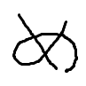 | | M3_cp | 1698 | C++ 20 | | 53.175 | 0 | 0 | 0 | 1813 | 1864 | 61.824 | 512 | 58.287 | 523 | 55.558 | 548 | 53.111 | 567 | 48.134 | 485 | 77.301 | 343 | 57.411 | 487 | 50.452 | 539 | 48.438 | 574 | 48.226 | 602 | 69.718 | 383 | 56.214 | 532 | 46.882 | 591 | 39.347 | 620 |
| 541 |  | | pstar | 1216 | C# 11.0 AOT | | 53.130 | 0 | 0 | 0 | 70 | 93 | 60.496 | 524 | 60.986 | 504 | 59.364 | 515 | 53.603 | 555 | 43.591 | 625 | 67.143 | 634 | 53.653 | 574 | 50.574 | 538 | 50.820 | 539 | 52.629 | 529 | 62.698 | 564 | 55.836 | 537 | 49.722 | 545 | 43.822 | 549 |
| 542 |  | | ecto0310 | 1339 | Rust | | 53.117 | 0 | 0 | 0 | 1883 | 1973 | 59.218 | 656 | 55.502 | 559 | 53.068 | 585 | 53.721 | 552 | 50.717 | 382 | 73.044 | 459 | 55.512 | 525 | 50.118 | 544 | 49.596 | 555 | 50.430 | 560 | 67.815 | 435 | 55.905 | 535 | 47.564 | 572 | 40.691 | 593 |
| 543 | | | ttmn | 1124 | Python | | 53.115 | 0 | 0 | 79 | 1330 | 1996 | 1.299 | 1186 | 59.574 | 515 | 58.215 | 521 | 55.042 | 534 | 48.195 | 481 | 69.705 | 592 | 51.807 | 637 | 49.541 | 553 | 51.589 | 527 | 53.724 | 512 | 63.028 | 555 | 55.717 | 540 | 49.730 | 543 | 43.546 | 554 |
| 544 | | | WINGU | 1797 | C++ 23 | | 52.967 | 0 | 0 | 0 | 64 | 567 | 59.220 | 648 | 53.660 | 647 | 51.783 | 620 | 53.920 | 547 | 51.894 | 351 | 72.749 | 467 | 55.255 | 530 | 49.975 | 546 | 49.513 | 557 | 50.359 | 561 | 67.922 | 431 | 55.735 | 539 | 47.281 | 577 | 40.438 | 598 |
| 545 |  | | cinnamon_perfect | 1239 | C++ 20 | | 52.950 | 0 | 0 | 34 | 805 | 1995 | 59.220 | 648 | 54.063 | 632 | 52.759 | 594 | 54.495 | 539 | 50.398 | 393 | 73.155 | 456 | 55.470 | 526 | 49.722 | 549 | 49.226 | 560 | 50.471 | 559 | 68.157 | 425 | 55.664 | 542 | 47.074 | 585 | 40.425 | 599 |
| 546 | | | nouka28 | 2185 | C++ 23 | | 52.886 | 0 | 0 | 0 | 1928 | 1931 | 59.224 | 604 | 55.382 | 570 | 53.035 | 586 | 53.494 | 559 | 50.273 | 399 | 72.986 | 462 | 55.325 | 528 | 49.892 | 547 | 49.276 | 559 | 50.183 | 564 | 67.332 | 452 | 55.679 | 541 | 47.455 | 574 | 40.587 | 595 |
| 547 |  | | Taichicchi | 1148 | C++ 20 | | 52.859 | 0 | 0 | 0 | 1817 | 1898 | 62.816 | 500 | 51.944 | 693 | 55.699 | 545 | 54.760 | 537 | 48.843 | 464 | 63.712 | 680 | 53.312 | 583 | 50.292 | 540 | 51.188 | 533 | 52.875 | 522 | 59.491 | 631 | 54.674 | 560 | 50.749 | 527 | 46.210 | 511 |
| 548 | | | torus711 | 1202 | C++ 23 | | 52.738 | 0 | 0 | 0 | 154 | 190 | 60.455 | 525 | 54.840 | 595 | 52.736 | 595 | 53.769 | 551 | 49.910 | 411 | 73.231 | 452 | 55.259 | 529 | 49.694 | 550 | 49.090 | 563 | 49.906 | 570 | 66.060 | 481 | 55.391 | 546 | 47.777 | 569 | 41.256 | 585 |
| 549 |  | | tetsuya1111 | 1011 | Rust | | 52.715 | 0 | 0 | 77 | 1112 | 1332 | 0.000 | 1187 | 55.510 | 558 | 54.597 | 561 | 55.752 | 523 | 50.902 | 379 | 72.128 | 491 | 53.985 | 562 | 49.577 | 551 | 49.832 | 550 | 50.794 | 552 | 67.442 | 448 | 55.524 | 543 | 47.019 | 586 | 40.386 | 601 |
| 550 | | | pentyann | 657 | Python | | 52.594 | 0 | 0 | 0 | 369 | 604 | 56.149 | 690 | 56.470 | 539 | 56.929 | 538 | 54.400 | 541 | 45.486 | 569 | 69.457 | 598 | 51.959 | 632 | 49.143 | 566 | 50.608 | 540 | 52.794 | 524 | 59.292 | 635 | 54.971 | 557 | 50.386 | 536 | 45.352 | 529 |
| 551 |  | | sapphire15 | 1506 | Rust | | 52.504 | 0 | 0 | 0 | 229 | 503 | 81.876 | 254 | 74.979 | 306 | 63.785 | 446 | 49.597 | 624 | 33.142 | 738 | 63.751 | 679 | 52.897 | 598 | 50.785 | 535 | 50.370 | 545 | 52.086 | 538 | 57.084 | 659 | 55.121 | 553 | 51.064 | 522 | 46.367 | 509 |
| 552 | | | shibaken496 | 1547 | C++ 23 | | 52.472 | 0 | 0 | 0 | 1420 | 1704 | 61.704 | 513 | 58.253 | 525 | 55.310 | 553 | 53.260 | 564 | 45.850 | 558 | 73.156 | 455 | 55.103 | 533 | 49.456 | 557 | 48.703 | 569 | 49.564 | 577 | 64.570 | 517 | 55.458 | 544 | 47.954 | 566 | 41.417 | 582 |
| 553 | | | kirbysweet | 1510 | Julia | | 52.425 | 0 | 0 | 4 | 1704 | 2000 | 59.228 | 557 | 55.349 | 575 | 52.954 | 589 | 53.034 | 570 | 49.286 | 447 | 72.254 | 484 | 54.591 | 547 | 49.480 | 556 | 48.940 | 566 | 49.906 | 569 | 66.349 | 474 | 55.337 | 548 | 47.106 | 582 | 40.413 | 600 |
| 554 |  | | glass_256 | 1351 | C++ 20 | | 52.346 | 0 | 0 | 0 | 36 | 67 | 63.440 | 495 | 58.293 | 522 | 53.354 | 574 | 52.010 | 593 | 47.812 | 498 | 69.341 | 600 | 53.050 | 591 | 49.145 | 565 | 49.604 | 554 | 51.713 | 543 | 62.806 | 561 | 55.114 | 554 | 48.646 | 558 | 42.360 | 571 |
| 555 |  | | breakfast_curry | 1543 | Python | | 52.324 | 0 | 0 | 0 | 635 | 1096 | 64.538 | 488 | 60.521 | 508 | 56.404 | 541 | 52.430 | 584 | 43.987 | 616 | 77.074 | 348 | 56.808 | 505 | 49.352 | 558 | 47.475 | 594 | 47.270 | 608 | 62.572 | 571 | 55.396 | 545 | 48.648 | 557 | 42.188 | 572 |
| 556 | | | spica314 | 2352 | Rust | | 52.292 | 0 | 0 | 0 | 1427 | 1470 | 79.811 | 282 | 71.840 | 354 | 59.945 | 509 | 49.227 | 634 | 37.243 | 713 | 66.780 | 641 | 53.433 | 580 | 50.124 | 543 | 49.966 | 549 | 50.678 | 554 | 57.278 | 655 | 53.488 | 585 | 50.969 | 524 | 47.203 | 500 |
| 557 | | | karuha67811 | 1344 | Python | | 52.285 | 0 | 0 | 0 | 1911 | 1979 | 52.929 | 706 | 54.229 | 623 | 53.834 | 566 | 53.072 | 568 | 49.334 | 441 | 60.488 | 699 | 51.174 | 650 | 49.868 | 548 | 51.428 | 530 | 53.761 | 510 | 58.555 | 644 | 53.813 | 576 | 50.392 | 535 | 46.101 | 515 |
| 558 | |  | irmuun | 940 | C++ 20 | | 52.215 | 0 | 0 | 0 | 53 | 219 | 59.225 | 589 | 55.176 | 589 | 53.302 | 576 | 53.486 | 560 | 48.008 | 492 | 71.859 | 495 | 54.518 | 549 | 49.222 | 562 | 48.693 | 570 | 49.710 | 574 | 65.750 | 489 | 55.192 | 551 | 47.103 | 583 | 40.313 | 603 |
| 559 | | | nomura0928 | 428 | C++ 20 | | 52.154 | 0 | 0 | 0 | 63 | 206 | 59.220 | 633 | 54.108 | 630 | 53.097 | 583 | 53.719 | 553 | 48.308 | 478 | 72.092 | 492 | 54.653 | 543 | 49.165 | 563 | 48.559 | 571 | 49.426 | 579 | 65.594 | 494 | 54.993 | 556 | 47.080 | 584 | 40.464 | 597 |
| 560 | | | crescent1997 | 1367 | C++ 20 | | 52.110 | 0 | 0 | 0 | 32 | 37 | 61.073 | 520 | 61.226 | 503 | 58.133 | 522 | 52.692 | 577 | 41.762 | 653 | 67.928 | 625 | 54.165 | 553 | 49.538 | 554 | 49.079 | 564 | 50.246 | 563 | 45.454 | 734 | 57.340 | 513 | 54.434 | 475 | 50.672 | 418 |
| 561 | | | SiZK | 740 | Rust | | 52.055 | 0 | 0 | 0 | 391 | 1538 | 15.172 | 811 | 29.393 | 775 | 50.419 | 656 | 62.073 | 371 | 58.648 | 200 | 61.076 | 694 | 52.311 | 616 | 48.660 | 575 | 51.083 | 534 | 52.981 | 519 | 61.173 | 611 | 53.456 | 587 | 49.064 | 554 | 44.232 | 543 |
| 562 |  | | AAH_tomato | 1614 | Java | | 51.995 | 0 | 0 | 0 | 515 | 1096 | 59.224 | 601 | 53.017 | 671 | 51.234 | 637 | 51.846 | 595 | 51.503 | 364 | 67.601 | 631 | 52.872 | 599 | 49.329 | 559 | 49.673 | 553 | 50.732 | 553 | 65.225 | 503 | 54.308 | 568 | 46.958 | 589 | 41.072 | 589 |
| 563 |  | | stadag | 1277 | Python | | 51.906 | 0 | 0 | 0 | 487 | 1262 | 18.508 | 803 | 53.900 | 638 | 58.812 | 519 | 54.834 | 535 | 45.908 | 555 | 60.993 | 696 | 51.353 | 645 | 49.576 | 552 | 50.905 | 538 | 52.599 | 530 | 57.086 | 658 | 53.751 | 579 | 50.446 | 532 | 46.034 | 516 |
| 564 | | | a1i | 1285 | C++ 17 | | 51.810 | 0 | 0 | 7 | 1378 | 2000 | 62.322 | 505 | 57.520 | 529 | 54.143 | 563 | 52.455 | 582 | 45.601 | 567 | 75.959 | 382 | 56.182 | 513 | 48.719 | 573 | 47.138 | 602 | 47.009 | 611 | 66.126 | 479 | 54.772 | 559 | 46.518 | 601 | 39.307 | 623 |
| 565 |  | | masutech16 | 535 | C++ 20 | | 51.796 | 0 | 0 | 0 | 1928 | 1989 | 59.213 | 658 | 54.563 | 607 | 52.708 | 598 | 53.143 | 566 | 47.703 | 502 | 71.736 | 500 | 54.276 | 552 | 48.853 | 569 | 48.213 | 578 | 49.030 | 587 | 65.518 | 496 | 54.573 | 563 | 46.650 | 595 | 39.960 | 607 |
| 566 | | | aoki1980taichi | 1516 | Ruby | | 51.782 | 0 | 0 | 0 | 83 | 88 | 51.275 | 709 | 54.146 | 629 | 56.134 | 543 | 54.488 | 540 | 44.923 | 587 | 62.603 | 687 | 51.427 | 644 | 49.289 | 561 | 50.394 | 544 | 52.241 | 534 | 56.751 | 667 | 53.644 | 583 | 50.449 | 531 | 45.976 | 518 |
| 567 | | | mikam | 1706 | C++ 20 | | 51.757 | 0 | 0 | 0 | 68 | 132 | 60.583 | 522 | 59.950 | 512 | 57.250 | 532 | 52.355 | 585 | 42.271 | 646 | 65.149 | 664 | 52.560 | 609 | 49.316 | 560 | 49.593 | 556 | 50.943 | 550 | 57.904 | 650 | 53.855 | 575 | 49.836 | 540 | 45.093 | 532 |
| 568 | | | mataira | 1230 | C++ 20 | | 51.719 | 0 | 0 | 0 | 622 | 1827 | 59.220 | 633 | 55.454 | 563 | 53.196 | 579 | 52.724 | 575 | 47.053 | 528 | 71.340 | 514 | 54.068 | 557 | 48.770 | 570 | 48.227 | 577 | 49.106 | 584 | 64.351 | 527 | 54.622 | 561 | 46.940 | 590 | 40.481 | 596 |
| 569 | | | shin9 | 437 | C++ 20 | | 51.706 | 0 | 0 | 0 | 46 | 79 | 58.021 | 677 | 55.441 | 565 | 54.657 | 560 | 52.802 | 573 | 46.082 | 547 | 70.006 | 574 | 53.101 | 588 | 48.619 | 577 | 49.032 | 565 | 49.786 | 572 | 62.765 | 562 | 53.437 | 588 | 47.000 | 587 | 43.329 | 555 |
| 570 | | | chenyanxi | 1040 | C++ 20 | | 51.682 | 0 | 0 | 0 | 61 | 99 | 63.868 | 494 | 59.890 | 513 | 57.115 | 535 | 52.208 | 588 | 42.038 | 650 | 68.329 | 619 | 53.121 | 587 | 48.925 | 567 | 48.937 | 567 | 50.027 | 566 | 61.119 | 612 | 54.340 | 567 | 48.299 | 563 | 42.537 | 568 |
| 571 | | | lnsuyn | 415 | C++ 23 | | 51.676 | 0 | 0 | 0 | 84 | 191 | 59.228 | 557 | 53.624 | 650 | 51.965 | 611 | 52.786 | 574 | 48.680 | 469 | 75.307 | 398 | 55.963 | 517 | 48.893 | 568 | 47.072 | 603 | 46.768 | 613 | 69.998 | 378 | 54.241 | 570 | 44.703 | 626 | 37.259 | 645 |
| 572 |  | | tanson | 1620 | OCaml | | 51.640 | 0 | 0 | 0 | 45 | 186 | 59.227 | 579 | 55.334 | 576 | 52.950 | 590 | 52.692 | 578 | 47.049 | 529 | 70.986 | 526 | 54.067 | 558 | 48.684 | 574 | 48.172 | 579 | 49.024 | 588 | 63.220 | 551 | 54.493 | 564 | 47.323 | 576 | 41.052 | 590 |
| 573 |  | | Ueddy | 2065 | Rust | | 51.588 | 0 | 0 | 0 | 72 | 104 | 59.224 | 594 | 55.623 | 556 | 53.074 | 584 | 52.498 | 579 | 46.831 | 534 | 71.083 | 523 | 53.914 | 564 | 48.650 | 576 | 48.080 | 582 | 49.043 | 585 | 64.477 | 521 | 54.493 | 565 | 46.766 | 593 | 40.127 | 604 |
| 574 | | | komak_64 | 1242 | Rust | | 51.585 | 0 | 0 | 0 | 43 | 83 | 59.220 | 633 | 54.450 | 613 | 52.721 | 597 | 52.956 | 572 | 47.251 | 523 | 71.273 | 516 | 53.986 | 561 | 48.726 | 571 | 48.014 | 584 | 48.889 | 590 | 64.998 | 506 | 54.379 | 566 | 46.529 | 599 | 39.953 | 608 |
| 575 | | | sakaoka | 1655 | C++ 23 | | 51.466 | 0 | 0 | 0 | 148 | 268 | 59.223 | 605 | 55.248 | 580 | 51.722 | 622 | 51.702 | 599 | 48.321 | 477 | 71.068 | 524 | 53.721 | 569 | 48.550 | 579 | 48.013 | 585 | 48.876 | 591 | 64.803 | 512 | 54.220 | 571 | 46.452 | 602 | 39.911 | 610 |
| 576 | | | N_noa21 | 888 | Python | | 51.385 | 0 | 0 | 0 | 382 | 1673 | 59.220 | 633 | 55.224 | 585 | 52.722 | 596 | 52.443 | 583 | 46.670 | 538 | 70.828 | 535 | 53.703 | 572 | 48.452 | 582 | 47.918 | 586 | 48.821 | 592 | 64.146 | 531 | 54.307 | 569 | 46.593 | 597 | 40.007 | 605 |
| 577 | | | klom1982 | 841 | Python | | 51.382 | 0 | 0 | 0 | 242 | 1380 | 73.028 | 370 | 68.005 | 415 | 59.400 | 514 | 49.506 | 626 | 37.001 | 716 | 66.846 | 640 | 53.374 | 581 | 49.515 | 555 | 48.453 | 572 | 48.921 | 589 | 57.452 | 653 | 53.783 | 578 | 49.438 | 550 | 44.480 | 539 |
| 578 | | | toufu24 | 1613 | C++ 20 | | 51.374 | 0 | 0 | 6 | 1793 | 1998 | 59.228 | 557 | 53.041 | 670 | 50.032 | 673 | 52.277 | 586 | 49.782 | 418 | 71.036 | 525 | 53.871 | 565 | 48.513 | 581 | 47.688 | 590 | 48.709 | 595 | 64.514 | 520 | 54.009 | 572 | 46.574 | 598 | 39.931 | 609 |
| 579 |  | | Coffins | 605 | C++ 17 | | 51.332 | 0 | 0 | 0 | 146 | 374 | 59.359 | 541 | 55.539 | 557 | 53.694 | 568 | 52.458 | 581 | 45.659 | 562 | 69.761 | 589 | 53.639 | 576 | 48.539 | 580 | 48.077 | 583 | 48.775 | 593 | 62.565 | 572 | 53.963 | 574 | 47.232 | 578 | 41.122 | 588 |
| 580 |  | | yaoresugi | 1183 | C++ 20 | | 51.308 | 0 | 0 | 0 | 1933 | 1937 | 54.870 | 700 | 53.571 | 653 | 52.698 | 599 | 52.081 | 590 | 48.067 | 489 | 75.673 | 390 | 55.745 | 521 | 48.296 | 585 | 46.501 | 610 | 46.428 | 618 | 61.991 | 585 | 53.995 | 573 | 47.543 | 573 | 41.249 | 586 |
| 581 | | | mKleinberg | 750 | C++ 23 | | 51.215 | 0 | 0 | 0 | 55 | 236 | 44.867 | 737 | 54.421 | 614 | 57.177 | 533 | 53.572 | 557 | 43.637 | 624 | 63.947 | 676 | 51.870 | 635 | 48.720 | 572 | 49.206 | 561 | 50.665 | 555 | 56.392 | 669 | 52.985 | 593 | 49.723 | 544 | 45.465 | 526 |
| 582 | | | katsuta | 1482 | Python | | 51.102 | 0 | 0 | 0 | 1022 | 1784 | 70.953 | 396 | 65.118 | 462 | 55.437 | 552 | 49.223 | 635 | 40.728 | 673 | 63.636 | 681 | 51.740 | 640 | 49.151 | 564 | 49.117 | 562 | 50.090 | 565 | 54.549 | 688 | 53.593 | 584 | 50.414 | 534 | 45.480 | 525 |
| 583 | | | delta71 | 1562 | C++ 20 | | 51.019 | 0 | 0 | 31 | 1049 | 2000 | 38.258 | 748 | 61.621 | 499 | 57.354 | 531 | 51.574 | 601 | 41.331 | 659 | 66.677 | 644 | 52.076 | 628 | 48.364 | 583 | 48.267 | 575 | 49.982 | 568 | 56.867 | 663 | 53.261 | 590 | 49.027 | 555 | 44.578 | 537 |
| 584 |  | | shu8Cream | 1837 | C++ 23 | | 51.018 | 0 | 0 | 0 | 594 | 1625 | 59.222 | 623 | 53.070 | 668 | 50.411 | 657 | 51.912 | 594 | 48.713 | 468 | 70.233 | 565 | 53.245 | 585 | 48.051 | 593 | 47.672 | 591 | 48.530 | 598 | 63.947 | 535 | 53.791 | 577 | 46.160 | 604 | 39.699 | 611 |
| 585 | | | NO9kokonoka | 1306 | C++ 17 | | 51.015 | 0 | 0 | 0 | 45 | 138 | 59.362 | 540 | 55.463 | 561 | 54.901 | 557 | 53.006 | 571 | 43.318 | 629 | 69.046 | 611 | 53.179 | 586 | 48.138 | 591 | 47.853 | 588 | 48.720 | 594 | 61.440 | 604 | 53.736 | 581 | 47.206 | 580 | 41.232 | 587 |
| 586 |  | | Romilli | 1115 | C++ 20 | | 50.996 | 0 | 0 | 0 | 99 | 244 | 22.064 | 765 | 43.402 | 735 | 57.132 | 534 | 56.923 | 502 | 47.546 | 505 | 61.820 | 690 | 50.079 | 673 | 47.827 | 597 | 49.977 | 548 | 52.281 | 533 | 56.165 | 670 | 52.805 | 600 | 49.567 | 547 | 45.143 | 531 |
| 587 |  | | Imperi | 1631 | C++ 23 | | 50.950 | 0 | 0 | 0 | 1006 | 1063 | 59.223 | 605 | 55.707 | 552 | 53.126 | 580 | 51.293 | 605 | 45.862 | 557 | 74.274 | 427 | 55.109 | 532 | 48.310 | 584 | 46.402 | 612 | 46.080 | 619 | 67.851 | 434 | 53.729 | 582 | 44.498 | 630 | 37.212 | 647 |
| 588 | | | cplusplusonly | 1598 | C++ 20 | | 50.931 | 0 | 0 | 0 | 1932 | 1983 | 59.228 | 553 | 55.847 | 550 | 53.354 | 573 | 51.063 | 607 | 45.803 | 559 | 74.203 | 429 | 55.129 | 531 | 48.271 | 586 | 46.371 | 613 | 46.070 | 620 | 67.687 | 440 | 53.749 | 580 | 44.528 | 627 | 37.246 | 646 |
| 589 | | | takabsk55 | 1021 | Python | | 50.741 | 0 | 0 | 0 | 210 | 967 | 59.220 | 633 | 54.035 | 635 | 50.329 | 660 | 51.088 | 606 | 48.140 | 484 | 70.142 | 568 | 53.028 | 592 | 47.840 | 596 | 47.333 | 598 | 48.133 | 603 | 63.312 | 550 | 53.467 | 586 | 46.031 | 605 | 39.691 | 612 |
| 590 | | | awageppo | 976 | C++ 20 | | 50.665 | 0 | 0 | 0 | 29 | 76 | 61.472 | 516 | 61.559 | 500 | 57.940 | 527 | 50.809 | 611 | 38.798 | 701 | 59.598 | 708 | 50.155 | 670 | 48.601 | 578 | 49.489 | 558 | 51.287 | 547 | 54.667 | 685 | 52.454 | 608 | 49.584 | 546 | 45.670 | 522 |
| 591 |  | | rui_er | 1942 | C++ 23 | | 50.642 | 0 | 0 | 0 | 38 | 79 | 55.768 | 694 | 55.941 | 548 | 55.574 | 547 | 52.041 | 592 | 42.633 | 642 | 62.563 | 688 | 50.895 | 661 | 48.042 | 594 | 48.863 | 568 | 50.630 | 557 | 55.260 | 678 | 52.392 | 611 | 49.279 | 552 | 45.357 | 528 |
| 592 |  | | tawainfer | 1722 | C# 11.0 AOT | | 50.627 | 0 | 0 | 0 | 55 | 76 | 20.862 | 787 | 37.854 | 750 | 55.100 | 556 | 58.368 | 470 | 49.416 | 436 | 56.378 | 721 | 49.685 | 676 | 48.149 | 590 | 50.150 | 547 | 52.450 | 531 | 56.892 | 662 | 52.259 | 614 | 48.723 | 556 | 44.343 | 541 |
| 593 | | | pslime | 1344 | C++ 20 | | 50.583 | 0 | 0 | 0 | 1315 | 1818 | 59.033 | 661 | 54.606 | 604 | 52.014 | 610 | 51.638 | 600 | 45.658 | 563 | 69.630 | 594 | 52.613 | 608 | 47.770 | 600 | 47.157 | 601 | 48.273 | 600 | 64.903 | 510 | 54.916 | 558 | 45.272 | 616 | 36.560 | 670 |
| 594 | | | Apple10 | 1167 | C++ 20 | | 50.544 | 0 | 0 | 1 | 245 | 1939 | 59.228 | 552 | 52.485 | 685 | 49.026 | 689 | 51.731 | 598 | 48.559 | 472 | 73.828 | 435 | 54.864 | 539 | 47.865 | 595 | 45.998 | 617 | 45.565 | 629 | 67.972 | 429 | 52.920 | 594 | 44.010 | 636 | 36.797 | 660 |
| 595 | | | naginag | 1044 | C | | 50.515 | 0 | 0 | 0 | 179 | 327 | 55.481 | 695 | 51.003 | 700 | 53.498 | 570 | 53.696 | 554 | 44.701 | 594 | 69.036 | 612 | 52.537 | 611 | 47.213 | 607 | 47.351 | 597 | 48.601 | 597 | 58.666 | 642 | 52.821 | 597 | 47.725 | 570 | 42.465 | 569 |
| 596 |  | | e271828 | 1206 | Rust | | 50.505 | 0 | 0 | 0 | 1836 | 1883 | 59.228 | 550 | 55.360 | 573 | 52.494 | 602 | 50.427 | 614 | 45.874 | 556 | 73.733 | 439 | 54.715 | 542 | 47.809 | 599 | 45.957 | 618 | 45.672 | 625 | 66.802 | 465 | 53.285 | 589 | 44.316 | 632 | 37.111 | 648 |
| 597 | | | IlIlI | 1338 | Python | | 50.482 | 0 | 0 | 3 | 1611 | 1945 | 59.225 | 587 | 53.068 | 669 | 51.773 | 621 | 51.383 | 604 | 46.594 | 539 | 73.666 | 440 | 54.744 | 541 | 47.815 | 598 | 45.842 | 619 | 45.673 | 624 | 66.989 | 460 | 53.233 | 591 | 44.117 | 634 | 37.088 | 649 |
| 598 | | | urneighbor1 | 541 | C++ 20 | | 50.478 | 0 | 0 | 0 | 68 | 98 | 70.902 | 397 | 63.832 | 473 | 55.738 | 544 | 49.370 | 630 | 39.054 | 700 | 64.893 | 668 | 51.262 | 647 | 48.224 | 589 | 48.127 | 581 | 49.342 | 582 | 56.645 | 668 | 52.823 | 596 | 48.401 | 562 | 43.682 | 551 |
| 599 | | | PolyChrome | 818 | C# 11.0 | | 50.382 | 0 | 0 | 0 | 1668 | 1885 | 72.470 | 380 | 68.440 | 408 | 60.650 | 498 | 48.975 | 640 | 33.221 | 737 | 66.031 | 652 | 52.265 | 618 | 48.230 | 588 | 47.455 | 595 | 48.236 | 601 | 55.722 | 675 | 52.816 | 598 | 48.617 | 559 | 44.009 | 546 |
| 600 |  | | DeadNightParade | 384 | C++ 20 | | 50.331 | 0 | 0 | 0 | 61 | 68 | 59.222 | 623 | 50.052 | 704 | 50.323 | 661 | 51.733 | 597 | 48.390 | 476 | 73.390 | 447 | 54.585 | 548 | 47.590 | 601 | 45.801 | 620 | 45.536 | 630 | 67.282 | 455 | 52.812 | 599 | 43.925 | 640 | 36.826 | 658 |
| 601 |  | | takotaketako | 1498 | Python | | 50.301 | 0 | 0 | 44 | 671 | 1962 | 33.107 | 754 | 51.929 | 694 | 51.584 | 626 | 52.704 | 576 | 47.442 | 512 | 69.737 | 591 | 52.625 | 607 | 47.078 | 611 | 47.237 | 600 | 47.613 | 607 | 63.482 | 545 | 52.697 | 604 | 45.540 | 611 | 39.043 | 628 |
| 602 |  | | NakamuraItsuk | 453 | C++ 20 | | 50.197 | 0 | 0 | 2 | 51 | 106 | 59.224 | 597 | 55.235 | 583 | 52.561 | 601 | 51.503 | 602 | 43.792 | 621 | 69.581 | 596 | 52.555 | 610 | 47.196 | 609 | 46.729 | 608 | 47.678 | 606 | 61.896 | 589 | 53.063 | 592 | 45.771 | 609 | 39.586 | 613 |
| 603 |  | | shojin_debu | 1275 | Java | | 50.185 | 0 | 0 | 0 | 688 | 1091 | 59.228 | 557 | 53.601 | 652 | 51.291 | 634 | 50.479 | 613 | 46.538 | 540 | 73.327 | 450 | 54.408 | 550 | 47.489 | 603 | 45.656 | 621 | 45.347 | 634 | 66.559 | 469 | 52.841 | 595 | 43.965 | 638 | 36.881 | 657 |
| 604 | | | Rumain | 973 | C++ 20 | | 50.160 | 0 | 0 | 0 | 67 | 77 | 61.154 | 519 | 60.527 | 507 | 56.982 | 536 | 50.388 | 615 | 38.789 | 702 | 60.377 | 701 | 51.260 | 648 | 48.233 | 587 | 47.890 | 587 | 49.742 | 573 | 50.481 | 711 | 55.094 | 555 | 50.440 | 533 | 44.011 | 545 |
| 605 | | | gomumari56 | 1710 | C++ 23 | | 50.011 | 0 | 0 | 0 | 32 | 41 | 47.660 | 719 | 47.286 | 722 | 50.507 | 654 | 53.797 | 550 | 47.582 | 504 | 65.110 | 665 | 51.123 | 652 | 46.994 | 613 | 47.599 | 593 | 49.120 | 583 | 58.904 | 639 | 52.360 | 613 | 46.964 | 588 | 41.421 | 581 |
| 606 | | | igaxx | 1560 | C++ 20 | | 49.991 | 0 | 0 | 0 | 1678 | 1759 | 59.222 | 616 | 54.815 | 598 | 51.903 | 612 | 49.900 | 618 | 45.401 | 572 | 73.016 | 461 | 54.109 | 555 | 47.302 | 606 | 45.525 | 623 | 45.226 | 635 | 65.882 | 485 | 52.734 | 603 | 43.931 | 639 | 36.920 | 654 |
| 607 | | | headdd | 1086 | Python | | 49.983 | 0 | 0 | 0 | 1633 | 1962 | 59.226 | 583 | 55.247 | 581 | 52.208 | 607 | 49.745 | 620 | 45.088 | 581 | 72.726 | 468 | 53.964 | 563 | 47.330 | 605 | 45.500 | 624 | 45.429 | 633 | 65.518 | 495 | 52.751 | 602 | 44.093 | 635 | 37.072 | 650 |
| 608 | | | setsuna | 1913 | Python | | 49.974 | 0 | 0 | 70 | 1471 | 1545 | 0.000 | 1187 | 53.648 | 648 | 54.327 | 562 | 53.212 | 565 | 45.647 | 565 | 64.537 | 672 | 50.890 | 662 | 47.505 | 602 | 47.791 | 589 | 48.702 | 596 | 57.453 | 652 | 52.003 | 620 | 47.450 | 575 | 42.650 | 567 |
| 609 | | | sca1l | 1712 | Rust | | 49.951 | 0 | 0 | 0 | 1832 | 1865 | 59.225 | 586 | 55.676 | 553 | 52.380 | 604 | 49.484 | 627 | 44.892 | 588 | 72.977 | 463 | 54.043 | 559 | 47.330 | 604 | 45.446 | 626 | 45.185 | 636 | 65.657 | 492 | 52.774 | 601 | 43.976 | 637 | 36.892 | 655 |
| 610 | |  | totoro2 | 374 | C++ 20 | | 49.894 | 0 | 0 | 0 | 839 | 1074 | 59.228 | 553 | 53.624 | 651 | 49.597 | 681 | 49.707 | 621 | 47.444 | 510 | 69.255 | 603 | 52.355 | 614 | 47.070 | 612 | 46.417 | 611 | 47.122 | 609 | 61.694 | 597 | 52.516 | 606 | 45.498 | 613 | 39.422 | 616 |
| 611 | | | Modifier | 1514 | Rust | | 49.858 | 0 | 0 | 0 | 108 | 225 | 58.187 | 675 | 50.490 | 702 | 49.058 | 688 | 50.979 | 608 | 48.241 | 480 | 70.348 | 560 | 52.901 | 597 | 46.897 | 618 | 46.157 | 616 | 46.495 | 617 | 61.087 | 614 | 51.614 | 626 | 45.785 | 608 | 40.603 | 594 |
| 612 |  | | hima398 | 1441 | Go | | 49.762 | 0 | 0 | 0 | 1534 | 1544 | 59.220 | 631 | 54.827 | 596 | 52.160 | 608 | 49.889 | 619 | 44.482 | 604 | 72.585 | 472 | 53.861 | 566 | 47.143 | 610 | 45.277 | 627 | 45.034 | 638 | 65.338 | 499 | 52.533 | 605 | 43.857 | 645 | 36.822 | 659 |
| 613 | | | tardigrade | 1950 | C++ 20 | | 49.732 | 0 | 0 | 0 | 1770 | 1896 | 59.223 | 608 | 54.475 | 611 | 51.422 | 629 | 50.864 | 610 | 44.074 | 614 | 69.240 | 604 | 52.246 | 619 | 46.907 | 617 | 46.222 | 615 | 46.895 | 612 | 61.448 | 603 | 52.453 | 609 | 45.349 | 615 | 39.224 | 624 |
| 614 | | | kilshu | 589 | C++ 20 | | 49.696 | 0 | 0 | 0 | 198 | 363 | 56.906 | 686 | 52.808 | 677 | 49.762 | 678 | 49.323 | 632 | 47.715 | 501 | 73.163 | 454 | 54.028 | 560 | 46.864 | 620 | 45.164 | 629 | 44.779 | 643 | 62.440 | 573 | 51.826 | 622 | 45.032 | 620 | 39.086 | 627 |
| 615 | | | harmokey | 2041 | C++ 23 | | 49.628 | 0 | 0 | 0 | 1834 | 1913 | 59.223 | 613 | 55.369 | 571 | 51.802 | 619 | 49.216 | 636 | 44.646 | 595 | 72.516 | 474 | 53.737 | 568 | 46.966 | 615 | 45.139 | 633 | 44.915 | 639 | 64.937 | 508 | 52.398 | 610 | 43.796 | 646 | 36.887 | 656 |
| 616 |  | | erbowl | 1838 | C++ 23 | | 49.617 | 0 | 0 | 0 | 1928 | 1958 | 59.220 | 633 | 55.938 | 549 | 53.026 | 587 | 49.701 | 623 | 43.002 | 633 | 72.392 | 479 | 53.715 | 571 | 46.980 | 614 | 45.150 | 631 | 44.906 | 640 | 64.618 | 516 | 52.492 | 607 | 43.907 | 641 | 36.946 | 653 |
| 617 | | | pitP | 1914 | C++ 23 | | 49.606 | 0 | 0 | 0 | 119 | 663 | 59.220 | 633 | 52.283 | 688 | 48.886 | 692 | 50.071 | 616 | 47.345 | 518 | 72.421 | 478 | 53.781 | 567 | 46.910 | 616 | 45.139 | 634 | 44.864 | 642 | 65.824 | 487 | 52.116 | 617 | 43.461 | 655 | 36.546 | 671 |
| 618 |  | | KeitaroNaruse | 1203 | C++ 20 | | 49.552 | 0 | 0 | 0 | 636 | 1173 | 51.408 | 707 | 49.910 | 705 | 50.129 | 669 | 50.866 | 609 | 47.502 | 507 | 72.434 | 477 | 53.719 | 570 | 46.789 | 621 | 45.079 | 635 | 44.867 | 641 | 65.420 | 498 | 52.080 | 619 | 43.581 | 651 | 36.652 | 665 |
| 619 | | | eiich | 1375 | C++ 20 | | 49.468 | 0 | 0 | 0 | 1930 | 1933 | 59.228 | 557 | 54.934 | 594 | 51.290 | 635 | 48.508 | 650 | 45.411 | 571 | 70.703 | 542 | 52.918 | 595 | 46.737 | 622 | 45.537 | 622 | 45.467 | 632 | 59.966 | 623 | 51.857 | 621 | 45.668 | 610 | 39.972 | 606 |
| 620 |  | | tirol30 | 1546 | Python | | 49.455 | 0 | 0 | 0 | 811 | 1979 | 61.502 | 514 | 57.371 | 530 | 53.484 | 571 | 49.411 | 629 | 41.474 | 657 | 72.537 | 473 | 53.639 | 575 | 46.704 | 625 | 44.885 | 639 | 44.768 | 644 | 61.177 | 610 | 52.375 | 612 | 45.129 | 619 | 38.655 | 630 |
| 621 | | | penchanstudy | 1383 | C++ 23 | | 49.425 | 0 | 0 | 0 | 1790 | 1902 | 59.220 | 633 | 53.544 | 655 | 51.140 | 640 | 49.703 | 622 | 44.945 | 586 | 72.251 | 485 | 53.550 | 579 | 46.719 | 624 | 44.958 | 637 | 44.739 | 646 | 64.560 | 519 | 52.156 | 615 | 43.722 | 647 | 36.772 | 662 |
| 622 | | | hirakuuuu | 1808 | C++ 20 | | 49.304 | 0 | 0 | 0 | 1930 | 1966 | 59.218 | 655 | 55.455 | 562 | 51.720 | 623 | 48.689 | 645 | 44.113 | 613 | 72.129 | 490 | 53.356 | 582 | 46.728 | 623 | 44.789 | 641 | 44.611 | 647 | 64.223 | 528 | 52.081 | 618 | 43.636 | 648 | 36.784 | 661 |
| 623 | | | kiwama | 361 | Python | | 49.217 | 0 | 0 | 0 | 173 | 596 | 56.561 | 687 | 49.506 | 710 | 48.574 | 697 | 51.779 | 596 | 46.312 | 543 | 65.288 | 659 | 50.396 | 667 | 46.197 | 634 | 46.763 | 607 | 47.976 | 604 | 58.687 | 641 | 51.600 | 627 | 45.854 | 607 | 40.327 | 602 |
| 624 | | | okayu123 | 1189 | C++ 23 | | 49.204 | 0 | 0 | 1 | 848 | 1990 | 23.098 | 763 | 42.066 | 740 | 55.216 | 554 | 55.075 | 533 | 45.416 | 570 | 58.706 | 713 | 48.942 | 683 | 46.377 | 628 | 48.132 | 580 | 50.025 | 567 | 53.747 | 698 | 50.797 | 651 | 47.961 | 565 | 44.042 | 544 |
| 625 | | | ratty8911 | 359 | C++ 17 | | 49.061 | 0 | 0 | 0 | 32 | 67 | 31.754 | 756 | 40.216 | 744 | 52.239 | 606 | 55.116 | 532 | 47.212 | 526 | 70.549 | 552 | 48.584 | 686 | 43.753 | 684 | 46.814 | 606 | 49.588 | 576 | 54.405 | 691 | 51.210 | 635 | 47.227 | 579 | 43.076 | 562 |
| 626 | | | Linilys | 860 | C++ 20 | | 48.994 | 0 | 0 | 0 | 1971 | 1977 | 59.221 | 627 | 55.325 | 577 | 51.804 | 618 | 48.497 | 653 | 43.302 | 631 | 71.608 | 503 | 53.090 | 589 | 46.375 | 629 | 44.554 | 643 | 44.297 | 651 | 63.615 | 542 | 51.752 | 624 | 43.481 | 652 | 36.641 | 666 |
| 627 | | | iwamutsu256 | 1044 | Python | | 48.962 | 0 | 0 | 1 | 1845 | 1902 | 59.989 | 534 | 55.629 | 555 | 52.132 | 609 | 48.735 | 644 | 42.512 | 645 | 71.764 | 499 | 53.052 | 590 | 46.331 | 631 | 44.492 | 644 | 44.248 | 653 | 62.387 | 575 | 51.747 | 625 | 43.870 | 643 | 37.369 | 644 |
| 628 |  | | aplysia | 1780 | C++ 20 | | 48.955 | 0 | 0 | 45 | 157 | 1993 | 59.220 | 633 | 51.142 | 698 | 51.018 | 646 | 49.536 | 625 | 44.998 | 585 | 70.933 | 530 | 53.022 | 593 | 46.466 | 626 | 44.439 | 646 | 44.448 | 649 | 64.712 | 515 | 51.250 | 633 | 42.942 | 670 | 36.472 | 673 |
| 629 | | | m_nishidon | 1444 | Rust | | 48.926 | 0 | 0 | 0 | 1577 | 1862 | 59.222 | 620 | 55.468 | 560 | 51.825 | 616 | 48.592 | 648 | 42.886 | 636 | 71.499 | 507 | 52.967 | 594 | 46.362 | 630 | 44.473 | 645 | 44.256 | 652 | 63.334 | 548 | 51.771 | 623 | 43.480 | 653 | 36.623 | 668 |
| 630 | | | saku3939saku | 1023 | Python | | 48.845 | 0 | 0 | 0 | 415 | 816 | 70.276 | 412 | 65.700 | 451 | 56.681 | 540 | 46.485 | 694 | 34.957 | 731 | 66.496 | 648 | 51.601 | 642 | 46.890 | 619 | 45.267 | 628 | 45.629 | 627 | 54.940 | 682 | 51.408 | 630 | 46.817 | 592 | 41.826 | 577 |
| 631 |  | | mitanii | 1483 | C++ 20 | | 48.824 | 0 | 0 | 0 | 1535 | 1621 | 59.220 | 633 | 53.863 | 639 | 50.256 | 663 | 48.505 | 652 | 44.566 | 596 | 71.538 | 505 | 52.916 | 596 | 46.155 | 635 | 44.358 | 648 | 44.172 | 655 | 63.436 | 546 | 51.484 | 629 | 43.369 | 658 | 36.527 | 672 |
| 632 | | | hirohiso | 1700 | Java | | 48.712 | 0 | 0 | 0 | 1016 | 1793 | 64.400 | 490 | 58.087 | 528 | 53.098 | 582 | 48.235 | 661 | 39.834 | 687 | 70.439 | 556 | 53.687 | 573 | 47.206 | 608 | 44.047 | 655 | 42.617 | 687 | 61.894 | 590 | 52.147 | 616 | 43.635 | 649 | 36.624 | 667 |
| 633 |  | | darekasan | 352 | C++ 20 | | 48.666 | 0 | 0 | 0 | 1830 | 1851 | 59.220 | 633 | 55.667 | 554 | 52.279 | 605 | 48.560 | 649 | 41.654 | 656 | 71.169 | 520 | 52.647 | 605 | 46.093 | 636 | 44.253 | 650 | 44.048 | 658 | 62.677 | 565 | 51.522 | 628 | 43.386 | 657 | 36.586 | 669 |
| 634 | | | DaisukeTK | 1121 | C++ 20 | | 48.657 | 0 | 0 | 0 | 1977 | 1983 | 55.793 | 693 | 52.212 | 689 | 50.147 | 666 | 48.766 | 643 | 45.017 | 583 | 71.460 | 508 | 52.798 | 601 | 45.946 | 637 | 44.198 | 653 | 43.959 | 659 | 61.618 | 598 | 51.130 | 638 | 43.859 | 644 | 37.578 | 640 |
| 635 | | | annkake_yaki | 1537 | C++ 23 | | 48.654 | 0 | 0 | 5 | 1895 | 1999 | 59.228 | 557 | 54.472 | 612 | 51.068 | 644 | 48.326 | 657 | 43.310 | 630 | 71.366 | 513 | 52.694 | 604 | 45.933 | 638 | 44.225 | 652 | 44.062 | 656 | 63.025 | 556 | 51.379 | 631 | 43.284 | 659 | 36.441 | 674 |
| 636 |  | | ecottea | 1707 | C++ 20 | | 48.649 | 0 | 0 | 0 | 47 | 54 | 59.226 | 585 | 54.246 | 622 | 51.209 | 638 | 49.415 | 628 | 42.230 | 647 | 67.959 | 624 | 51.090 | 655 | 45.864 | 640 | 45.155 | 630 | 45.895 | 621 | 60.015 | 622 | 51.330 | 632 | 44.403 | 631 | 38.403 | 633 |
| 637 | | | leojean890 | 1393 | Python | | 48.583 | 0 | 0 | 4 | 1767 | 1999 | 55.444 | 696 | 49.845 | 707 | 49.182 | 687 | 49.338 | 631 | 46.188 | 545 | 43.256 | 755 | 50.333 | 669 | 48.109 | 592 | 48.242 | 576 | 49.481 | 578 | 53.576 | 700 | 49.769 | 667 | 47.151 | 581 | 43.615 | 553 |
| 638 | | | Akijin_007 | 1773 | Python | | 48.555 | 0 | 0 | 0 | 1689 | 1924 | 60.417 | 527 | 56.976 | 532 | 53.216 | 578 | 48.442 | 655 | 39.965 | 685 | 66.588 | 647 | 52.700 | 603 | 46.411 | 627 | 44.578 | 642 | 44.444 | 650 | 59.362 | 633 | 51.022 | 643 | 44.523 | 628 | 38.899 | 629 |
| 639 |  | | hamachi470 | 933 | Python | | 48.522 | 0 | 0 | 0 | 1534 | 1667 | 59.219 | 652 | 55.234 | 584 | 51.825 | 617 | 49.054 | 638 | 41.218 | 661 | 67.909 | 626 | 51.094 | 654 | 45.758 | 644 | 44.946 | 638 | 45.676 | 623 | 59.361 | 634 | 51.216 | 634 | 44.520 | 629 | 38.547 | 631 |
| 640 | | | hirohito1971 | 1550 | Python | | 48.494 | 0 | 0 | 10 | 1778 | 1997 | 59.224 | 594 | 52.828 | 676 | 50.061 | 672 | 48.394 | 656 | 44.299 | 606 | 70.730 | 539 | 52.634 | 606 | 45.828 | 641 | 44.161 | 654 | 43.820 | 661 | 62.915 | 557 | 51.007 | 644 | 43.169 | 660 | 36.420 | 677 |
| 641 |  | | seekworser | 431 | Nim | | 48.454 | 0 | 0 | 0 | 1260 | 1952 | 58.309 | 673 | 53.744 | 641 | 49.592 | 682 | 48.472 | 654 | 43.945 | 618 | 70.282 | 564 | 52.224 | 620 | 45.904 | 639 | 44.234 | 651 | 44.054 | 657 | 63.632 | 541 | 51.039 | 641 | 42.641 | 683 | 36.036 | 695 |
| 642 | | | nuts | 2240 | C++ 20 | | 48.422 | 0 | 0 | 0 | 65 | 80 | 59.224 | 593 | 52.334 | 687 | 51.407 | 631 | 49.140 | 637 | 42.713 | 640 | 70.688 | 543 | 52.525 | 612 | 45.809 | 642 | 43.970 | 656 | 43.842 | 660 | 62.638 | 567 | 51.197 | 636 | 43.054 | 665 | 36.314 | 683 |
| 643 | | | Bloody_Yulii | 1072 | C++ 20 | | 48.366 | 0 | 0 | 0 | 32 | 63 | 59.228 | 557 | 53.382 | 659 | 50.078 | 671 | 48.973 | 641 | 42.965 | 634 | 67.662 | 629 | 50.802 | 663 | 45.585 | 650 | 44.883 | 640 | 45.607 | 628 | 59.499 | 630 | 50.957 | 647 | 44.197 | 633 | 38.380 | 634 |
| 644 | | | snmsnb | 929 | Python | | 48.350 | 0 | 0 | 0 | 258 | 903 | 59.226 | 584 | 53.501 | 657 | 50.132 | 668 | 48.307 | 658 | 43.483 | 627 | 70.673 | 546 | 52.422 | 613 | 45.792 | 643 | 43.922 | 658 | 43.703 | 663 | 62.670 | 566 | 51.023 | 642 | 42.957 | 669 | 36.273 | 685 |
| 645 | | | makkii | 1169 | C++ 20 | | 48.343 | 0 | 0 | 0 | 1979 | 2000 | 59.220 | 633 | 54.388 | 618 | 49.568 | 683 | 47.442 | 676 | 44.200 | 609 | 70.902 | 533 | 52.345 | 615 | 45.719 | 645 | 43.944 | 657 | 43.720 | 662 | 62.595 | 569 | 50.980 | 645 | 42.962 | 668 | 36.366 | 679 |
| 646 |  | | light16 | 1419 | Rust | | 48.249 | 0 | 0 | 0 | 1492 | 1535 | 59.215 | 657 | 55.243 | 582 | 49.998 | 674 | 46.534 | 693 | 44.045 | 615 | 70.752 | 537 | 52.293 | 617 | 45.699 | 646 | 43.802 | 664 | 43.579 | 669 | 62.341 | 576 | 50.890 | 649 | 42.971 | 667 | 36.322 | 681 |
| 647 | | | Akari__ | 1633 | Python | | 48.225 | 0 | 0 | 0 | 207 | 944 | 59.229 | 549 | 55.436 | 567 | 51.839 | 613 | 47.994 | 664 | 41.182 | 664 | 70.647 | 548 | 52.216 | 621 | 45.647 | 648 | 43.814 | 662 | 43.624 | 666 | 61.731 | 595 | 51.127 | 639 | 43.116 | 664 | 36.431 | 675 |
| 648 |  | | tanashou1 | 2012 | Rust | | 48.223 | 0 | 0 | 0 | 55 | 70 | 59.232 | 548 | 55.438 | 566 | 51.833 | 615 | 47.984 | 666 | 41.191 | 662 | 70.684 | 544 | 52.179 | 623 | 45.646 | 649 | 43.824 | 659 | 43.632 | 665 | 61.732 | 594 | 51.119 | 640 | 43.119 | 663 | 36.429 | 676 |
| 649 |  | | hukinorin | 2093 | Python | | 48.219 | 0 | 0 | 0 | 246 | 710 | 59.222 | 618 | 55.442 | 564 | 51.833 | 614 | 47.993 | 665 | 41.165 | 665 | 70.614 | 550 | 52.165 | 625 | 45.653 | 647 | 43.822 | 660 | 43.645 | 664 | 61.717 | 596 | 51.137 | 637 | 43.123 | 662 | 36.401 | 678 |
| 650 | | | Ikok | 337 | Python | | 48.164 | 0 | 0 | 0 | 1919 | 1972 | 59.228 | 557 | 53.320 | 662 | 51.047 | 645 | 48.595 | 647 | 42.087 | 649 | 70.358 | 559 | 52.196 | 622 | 45.565 | 651 | 43.778 | 665 | 43.599 | 667 | 62.260 | 578 | 50.967 | 646 | 42.854 | 675 | 36.087 | 691 |
| 651 | | | chinotomo | 1225 | C++ 23 | | 48.140 | 0 | 0 | 0 | 43 | 236 | 58.529 | 671 | 59.108 | 518 | 55.518 | 550 | 48.222 | 662 | 36.261 | 721 | 55.282 | 726 | 47.092 | 703 | 46.240 | 632 | 47.353 | 596 | 49.347 | 581 | 50.422 | 712 | 49.574 | 675 | 47.806 | 567 | 44.530 | 538 |
| 652 | | | shiren157 | 1583 | C++ 20 | | 48.127 | 0 | 0 | 0 | 28 | 31 | 58.547 | 670 | 59.092 | 519 | 55.451 | 551 | 48.244 | 660 | 36.249 | 722 | 55.336 | 725 | 47.074 | 704 | 46.227 | 633 | 47.306 | 599 | 49.352 | 580 | 50.412 | 713 | 49.621 | 673 | 47.799 | 568 | 44.442 | 540 |
| 653 | | | yozora184 | 1522 | Python | | 48.116 | 0 | 0 | 0 | 57 | 88 | 20.991 | 773 | 38.364 | 748 | 51.252 | 636 | 54.293 | 542 | 47.442 | 511 | 51.983 | 734 | 45.791 | 713 | 45.399 | 657 | 48.452 | 573 | 51.340 | 546 | 53.140 | 701 | 49.403 | 678 | 46.643 | 596 | 43.045 | 563 |
| 654 | | | crimsontea | 1521 | C# 11.0 AOT | | 48.088 | 0 | 0 | 0 | 1533 | 1547 | 59.221 | 627 | 51.394 | 697 | 50.114 | 670 | 47.954 | 667 | 44.179 | 611 | 70.446 | 555 | 52.175 | 624 | 45.474 | 655 | 43.660 | 670 | 43.468 | 672 | 61.944 | 587 | 50.734 | 652 | 42.911 | 673 | 36.292 | 684 |
| 655 |  | | nekoyuki | 535 | C++ 23 | | 48.083 | 0 | 0 | 0 | 30 | 40 | 59.225 | 592 | 55.134 | 591 | 51.413 | 630 | 47.752 | 669 | 41.408 | 658 | 70.348 | 561 | 52.065 | 630 | 45.507 | 652 | 43.734 | 667 | 43.483 | 670 | 61.564 | 601 | 50.914 | 648 | 43.017 | 666 | 36.351 | 680 |
| 656 |  | | TakahiroNakamori | 1489 | C++ 17 | | 48.063 | 0 | 0 | 0 | 118 | 175 | 61.500 | 515 | 56.304 | 542 | 50.739 | 652 | 46.979 | 684 | 41.722 | 655 | 70.602 | 551 | 52.022 | 631 | 45.492 | 654 | 43.662 | 669 | 43.437 | 673 | 60.118 | 621 | 50.327 | 660 | 43.598 | 650 | 37.802 | 636 |
| 657 | | | A_Fan_Of_Math | 331 | Python | | 48.044 | 0 | 0 | 0 | 126 | 198 | 56.010 | 691 | 54.061 | 633 | 51.691 | 624 | 48.508 | 651 | 41.188 | 663 | 70.924 | 532 | 52.131 | 626 | 45.240 | 662 | 43.569 | 672 | 43.477 | 671 | 56.834 | 665 | 50.652 | 654 | 44.952 | 621 | 39.316 | 621 |
| 658 |  | | Ri4385 | 1752 | Python | | 48.004 | 0 | 0 | 0 | 278 | 1175 | 59.218 | 653 | 55.368 | 572 | 51.598 | 625 | 47.705 | 670 | 40.941 | 669 | 70.118 | 569 | 51.957 | 633 | 45.496 | 653 | 43.634 | 671 | 43.436 | 674 | 61.418 | 605 | 50.879 | 650 | 42.913 | 672 | 36.317 | 682 |
| 659 | | | natto3 | 1209 | C++ 20 | | 48.000 | 0 | 0 | 0 | 1006 | 1076 | 57.724 | 679 | 54.763 | 599 | 48.764 | 694 | 47.248 | 679 | 43.688 | 622 | 58.823 | 712 | 47.586 | 697 | 45.469 | 656 | 46.650 | 609 | 48.513 | 599 | 53.022 | 702 | 49.469 | 677 | 46.522 | 600 | 42.734 | 565 |
| 660 | | | kumakichi1985 | 328 | Python | | 47.942 | 0 | 0 | 0 | 88 | 197 | 22.192 | 764 | 37.185 | 753 | 51.108 | 643 | 54.565 | 538 | 47.262 | 521 | 55.896 | 723 | 46.169 | 712 | 44.809 | 666 | 47.667 | 592 | 50.256 | 562 | 52.630 | 704 | 49.338 | 679 | 46.660 | 594 | 42.894 | 564 |
| 661 |  | | ardRiriy | 1792 | Rust | | 47.888 | 0 | 0 | 0 | 1863 | 1964 | 58.216 | 674 | 53.549 | 654 | 49.716 | 679 | 47.208 | 680 | 43.388 | 628 | 69.512 | 597 | 51.490 | 643 | 45.374 | 658 | 43.767 | 666 | 43.585 | 668 | 61.533 | 602 | 50.521 | 657 | 42.774 | 679 | 36.256 | 686 |
| 662 | | | unibop | 1167 | Rust | | 47.882 | 0 | 0 | 0 | 82 | 171 | 59.228 | 557 | 54.415 | 616 | 50.510 | 653 | 48.250 | 659 | 41.233 | 660 | 66.943 | 637 | 50.341 | 668 | 45.207 | 663 | 44.368 | 647 | 45.109 | 637 | 58.663 | 643 | 50.446 | 658 | 43.904 | 642 | 38.086 | 635 |
| 663 | | | eizi | 1472 | C++ 23 | | 47.865 | 0 | 0 | 0 | 1929 | 1932 | 51.347 | 708 | 53.787 | 640 | 50.821 | 649 | 47.419 | 677 | 42.780 | 638 | 70.110 | 570 | 51.786 | 638 | 45.333 | 659 | 43.501 | 674 | 43.305 | 676 | 61.329 | 607 | 50.634 | 655 | 42.847 | 677 | 36.170 | 688 |
| 664 | | | nanthewhite | 1833 | Rust | | 47.836 | 0 | 0 | 0 | 66 | 143 | 59.222 | 623 | 53.210 | 665 | 49.416 | 685 | 48.000 | 663 | 42.726 | 639 | 70.030 | 572 | 51.895 | 634 | 45.187 | 664 | 43.507 | 673 | 43.237 | 678 | 61.585 | 600 | 50.532 | 656 | 42.690 | 680 | 36.065 | 692 |
| 665 |  | | hosazaemon | 1110 | Python | | 47.824 | 0 | 0 | 4 | 967 | 1992 | 59.224 | 597 | 54.762 | 600 | 51.575 | 627 | 47.626 | 673 | 40.786 | 671 | 69.951 | 578 | 51.761 | 639 | 45.323 | 660 | 43.431 | 677 | 43.287 | 677 | 61.098 | 613 | 50.676 | 653 | 42.821 | 678 | 36.218 | 687 |
| 666 | | | gxy | 1884 | C++ 20 | | 47.743 | 0 | 0 | 0 | 1930 | 1949 | 59.221 | 630 | 52.041 | 691 | 48.416 | 700 | 47.539 | 675 | 44.194 | 610 | 69.923 | 580 | 51.833 | 636 | 45.181 | 665 | 43.316 | 679 | 43.129 | 680 | 61.811 | 591 | 50.297 | 661 | 42.489 | 686 | 35.913 | 698 |
| 667 | | | reil_ | 683 | C++ 20 | | 47.726 | 0 | 0 | 70 | 1969 | 1973 | 0.000 | 1187 | 56.102 | 545 | 52.584 | 600 | 49.008 | 639 | 42.214 | 648 | 69.624 | 595 | 50.945 | 659 | 45.302 | 661 | 43.814 | 663 | 43.410 | 675 | 61.598 | 599 | 50.446 | 659 | 42.475 | 687 | 35.910 | 699 |
| 668 |  | | poisonkumaa | 1184 | Python | | 47.414 | 0 | 0 | 179 | 988 | 2000 | 64.604 | 486 | 36.204 | 755 | 52.801 | 592 | 50.808 | 612 | 45.505 | 568 | 69.902 | 584 | 51.661 | 641 | 44.592 | 670 | 42.934 | 683 | 42.847 | 682 | 58.217 | 646 | 49.951 | 665 | 43.469 | 654 | 37.590 | 639 |
| 669 | | | jjjjjjjtgpptmjj | 1557 | C++ 20 | | 47.301 | 0 | 0 | 0 | 30 | 49 | 59.218 | 654 | 55.143 | 590 | 51.397 | 632 | 47.381 | 678 | 39.205 | 697 | 69.164 | 608 | 51.231 | 649 | 44.772 | 667 | 42.949 | 682 | 42.845 | 683 | 59.868 | 625 | 50.153 | 663 | 42.591 | 684 | 36.113 | 690 |
| 670 |  | | yuuki_n | 2276 | Java | | 47.262 | 0 | 0 | 0 | 142 | 641 | 59.228 | 557 | 55.308 | 578 | 51.542 | 628 | 47.201 | 682 | 39.069 | 699 | 69.202 | 607 | 51.170 | 651 | 44.726 | 668 | 42.927 | 684 | 42.790 | 684 | 59.905 | 624 | 50.153 | 662 | 42.458 | 688 | 36.049 | 693 |
| 671 | | | Klavis | 1606 | Python | | 47.233 | 0 | 0 | 0 | 149 | 403 | 59.228 | 550 | 55.277 | 579 | 51.312 | 633 | 46.925 | 686 | 39.422 | 693 | 69.204 | 606 | 51.098 | 653 | 44.722 | 669 | 42.961 | 681 | 42.708 | 686 | 59.805 | 626 | 50.086 | 664 | 42.514 | 685 | 36.048 | 694 |
| 672 |  | | komasan | 1489 | C++ 20 | | 47.213 | 0 | 0 | 0 | 29 | 33 | 54.870 | 700 | 53.192 | 666 | 50.775 | 651 | 47.758 | 668 | 40.374 | 677 | 69.886 | 586 | 51.279 | 646 | 44.425 | 674 | 42.722 | 687 | 42.735 | 685 | 54.578 | 687 | 49.751 | 668 | 44.765 | 623 | 39.353 | 619 |
| 673 |  | | lowtune | 608 | C++ 20 | | 47.138 | 0 | 0 | 0 | 33 | 62 | 59.222 | 619 | 54.390 | 617 | 49.811 | 676 | 47.201 | 681 | 40.303 | 679 | 65.958 | 654 | 49.491 | 679 | 44.466 | 673 | 43.674 | 668 | 44.495 | 648 | 57.215 | 656 | 49.740 | 669 | 43.394 | 656 | 37.778 | 637 |
| 674 | | | nishigake | 2090 | Python | | 47.067 | 0 | 0 | 0 | 225 | 622 | 58.720 | 665 | 54.478 | 610 | 50.485 | 655 | 46.672 | 690 | 40.155 | 680 | 69.066 | 610 | 50.928 | 660 | 44.556 | 671 | 42.762 | 685 | 42.566 | 690 | 59.504 | 629 | 49.872 | 666 | 42.409 | 689 | 36.009 | 697 |
| 675 | | | chubby_hamster | 1527 | Python | | 47.053 | 0 | 0 | 4 | 112 | 120 | 55.054 | 699 | 53.378 | 660 | 50.850 | 648 | 47.645 | 672 | 39.795 | 690 | 69.450 | 599 | 51.013 | 657 | 44.346 | 678 | 42.649 | 688 | 42.611 | 688 | 54.136 | 693 | 49.549 | 676 | 44.715 | 624 | 39.417 | 617 |
| 676 | | | syu_mei | 1548 | Python | | 47.049 | 0 | 0 | 0 | 1193 | 1939 | 59.228 | 557 | 53.240 | 664 | 49.786 | 677 | 47.144 | 683 | 40.736 | 672 | 68.896 | 613 | 50.991 | 658 | 44.504 | 672 | 42.755 | 686 | 42.546 | 691 | 60.145 | 620 | 49.729 | 670 | 42.157 | 695 | 35.701 | 703 |
| 677 | | | suzu_ki11 | 314 | Python | | 47.048 | 0 | 0 | 0 | 46 | 49 | 55.070 | 698 | 53.362 | 661 | 50.793 | 650 | 47.576 | 674 | 39.891 | 686 | 69.664 | 593 | 51.085 | 656 | 44.322 | 679 | 42.514 | 691 | 42.602 | 689 | 54.122 | 694 | 49.599 | 674 | 44.711 | 625 | 39.357 | 618 |
| 678 |  | | bribritt | 1299 | C++ 17 | | 46.851 | 0 | 0 | 0 | 30 | 56 | 59.224 | 600 | 55.207 | 587 | 51.128 | 641 | 46.561 | 692 | 38.686 | 704 | 68.545 | 617 | 50.749 | 665 | 44.363 | 676 | 42.558 | 690 | 42.384 | 694 | 59.131 | 638 | 49.646 | 671 | 42.254 | 692 | 35.903 | 700 |
| 679 | | | Etherri | 312 | C++ 17 | | 46.851 | 0 | 0 | 0 | 27 | 82 | 59.224 | 602 | 55.207 | 586 | 51.127 | 642 | 46.561 | 691 | 38.686 | 705 | 68.545 | 618 | 50.749 | 664 | 44.362 | 677 | 42.558 | 689 | 42.384 | 693 | 59.131 | 637 | 49.646 | 672 | 42.254 | 693 | 35.903 | 701 |
| 680 | | | Michael6783746 | 817 | Python | | 46.753 | 0 | 0 | 0 | 163 | 262 | 20.143 | 798 | 35.508 | 761 | 49.360 | 686 | 53.316 | 563 | 46.837 | 533 | 50.642 | 737 | 44.589 | 718 | 44.087 | 681 | 47.056 | 604 | 49.798 | 571 | 51.265 | 708 | 47.898 | 691 | 45.538 | 612 | 42.096 | 573 |
| 681 | | | miraclefruit | 311 | C++ 23 | | 46.654 | 0 | 0 | 0 | 29 | 32 | 56.160 | 689 | 56.047 | 546 | 52.794 | 593 | 46.816 | 688 | 36.458 | 719 | 57.290 | 717 | 46.595 | 708 | 44.418 | 675 | 45.144 | 632 | 46.761 | 614 | 49.527 | 721 | 48.116 | 687 | 46.008 | 606 | 42.733 | 566 |
| 682 | | | Jiro314 | 310 | C++ 23 | | 46.449 | 0 | 0 | 0 | 142 | 482 | 56.423 | 688 | 49.806 | 708 | 48.802 | 693 | 48.610 | 646 | 40.066 | 682 | 56.531 | 720 | 46.485 | 709 | 44.156 | 680 | 45.054 | 636 | 46.592 | 615 | 48.462 | 726 | 47.645 | 695 | 46.176 | 603 | 43.319 | 556 |
| 683 |  | | m_buyoh | 1968 | C++ 20 | | 46.329 | 0 | 0 | 0 | 32 | 50 | 16.397 | 809 | 32.668 | 769 | 48.506 | 699 | 53.833 | 549 | 47.364 | 517 | 49.571 | 743 | 43.903 | 726 | 43.647 | 687 | 46.903 | 605 | 49.595 | 575 | 50.625 | 710 | 47.275 | 702 | 45.271 | 617 | 41.953 | 575 |
| 684 | | | tnktemp | 1471 | Rust | | 46.308 | 0 | 0 | 0 | 394 | 1016 | 59.228 | 553 | 55.383 | 569 | 51.159 | 639 | 46.027 | 699 | 37.313 | 711 | 67.774 | 627 | 50.094 | 672 | 43.830 | 683 | 42.083 | 695 | 41.949 | 696 | 58.107 | 648 | 49.109 | 680 | 41.918 | 698 | 35.631 | 704 |
| 685 | | | hartung | 621 | Ruby | | 46.281 | 0 | 0 | 0 | 119 | 142 | 19.448 | 801 | 40.915 | 743 | 53.317 | 575 | 52.074 | 591 | 40.958 | 667 | 53.898 | 730 | 45.547 | 714 | 43.673 | 686 | 45.495 | 625 | 47.701 | 605 | 49.839 | 719 | 47.754 | 693 | 45.389 | 614 | 41.899 | 576 |
| 686 |  | | Shizen | 306 | C++ 20 | | 46.251 | 0 | 0 | 70 | 132 | 299 | 30.221 | 757 | 31.475 | 772 | 44.946 | 719 | 52.162 | 589 | 50.715 | 383 | 67.996 | 622 | 50.726 | 666 | 43.078 | 696 | 42.022 | 696 | 41.802 | 697 | 57.105 | 657 | 47.638 | 697 | 42.392 | 690 | 37.570 | 641 |
| 687 | | | disponat | 916 | C++ 23 | | 46.153 | 0 | 0 | 0 | 27 | 30 | 55.922 | 692 | 52.202 | 690 | 48.570 | 698 | 45.922 | 701 | 40.640 | 674 | 67.733 | 628 | 50.033 | 674 | 43.646 | 688 | 41.881 | 697 | 41.738 | 698 | 57.989 | 649 | 48.835 | 681 | 41.763 | 701 | 35.569 | 705 |
| 688 | | | umineko_hanten | 735 | C++ 17 | | 46.045 | 0 | 0 | 0 | 47 | 209 | 59.220 | 650 | 54.154 | 628 | 50.156 | 665 | 45.744 | 703 | 38.077 | 707 | 67.516 | 632 | 49.811 | 675 | 43.588 | 689 | 41.832 | 698 | 41.674 | 700 | 58.210 | 647 | 48.753 | 682 | 41.465 | 702 | 35.295 | 707 |
| 689 | | | kazuoyamamoto | 511 | C++ 20 | | 45.991 | 0 | 0 | 55 | 1964 | 1983 | 45.414 | 730 | 46.900 | 726 | 46.992 | 711 | 46.888 | 687 | 43.962 | 617 | 66.678 | 643 | 50.119 | 671 | 44.016 | 682 | 41.320 | 702 | 41.521 | 701 | 55.481 | 677 | 48.355 | 685 | 42.682 | 682 | 37.042 | 651 |
| 690 | | | seigoo | 303 | Python | | 45.987 | 0 | 0 | 2 | 1417 | 1999 | 57.503 | 680 | 50.907 | 701 | 47.966 | 705 | 46.967 | 685 | 40.040 | 683 | 62.353 | 689 | 47.424 | 699 | 43.379 | 691 | 43.342 | 678 | 44.191 | 654 | 54.994 | 681 | 48.209 | 686 | 42.851 | 676 | 37.516 | 642 |
| 691 | | | taku001 | 351 | Python | | 45.965 | 0 | 0 | 0 | 159 | 333 | 20.140 | 799 | 35.353 | 762 | 48.592 | 696 | 52.219 | 587 | 45.929 | 553 | 49.772 | 742 | 43.785 | 728 | 43.310 | 692 | 46.271 | 614 | 49.040 | 586 | 50.282 | 717 | 47.043 | 704 | 44.835 | 622 | 41.495 | 578 |
| 692 | | | clora | 798 | Python | | 45.876 | 0 | 0 | 0 | 534 | 1236 | 65.393 | 474 | 61.348 | 502 | 54.738 | 559 | 44.996 | 706 | 30.757 | 745 | 59.169 | 710 | 47.014 | 706 | 43.711 | 685 | 43.474 | 676 | 44.742 | 645 | 48.882 | 725 | 47.643 | 696 | 45.231 | 618 | 41.477 | 579 |
| 693 |  | | Nauclhlt | 1475 | C# 11.0 | | 45.854 | 0 | 0 | 0 | 77 | 130 | 59.227 | 582 | 54.669 | 602 | 49.961 | 675 | 46.150 | 697 | 36.871 | 717 | 64.698 | 670 | 48.298 | 691 | 43.188 | 695 | 42.430 | 692 | 43.072 | 681 | 54.522 | 689 | 48.411 | 683 | 42.684 | 681 | 37.394 | 643 |
| 694 |  | | zoidzium | 1342 | C++ 20 | | 45.850 | 0 | 0 | 0 | 147 | 236 | 53.663 | 705 | 51.510 | 696 | 48.989 | 690 | 46.022 | 700 | 39.833 | 688 | 67.625 | 630 | 49.666 | 677 | 43.299 | 693 | 41.646 | 699 | 41.407 | 703 | 56.085 | 671 | 48.103 | 688 | 42.128 | 696 | 36.694 | 664 |
| 695 |  | | Rick2200 | 1987 | Rust | | 45.714 | 0 | 0 | 0 | 1375 | 1708 | 59.219 | 651 | 54.188 | 627 | 49.690 | 680 | 45.284 | 704 | 37.731 | 710 | 66.896 | 638 | 49.516 | 678 | 43.264 | 694 | 41.569 | 700 | 41.329 | 704 | 57.554 | 651 | 48.398 | 684 | 41.307 | 703 | 35.143 | 712 |
| 696 | | | emankcin | 2138 | Python | | 45.474 | 0 | 0 | 0 | 127 | 146 | 50.463 | 711 | 48.404 | 714 | 47.059 | 710 | 46.761 | 689 | 41.099 | 666 | 63.379 | 684 | 47.629 | 695 | 42.733 | 700 | 42.264 | 694 | 43.147 | 679 | 54.439 | 690 | 47.865 | 692 | 42.187 | 694 | 37.015 | 652 |
| 697 |  | | satanic0258 | 2166 | C++ 23 | | 45.438 | 0 | 0 | 0 | 60 | 121 | 59.228 | 557 | 54.372 | 620 | 49.566 | 684 | 44.796 | 708 | 37.288 | 712 | 66.599 | 645 | 49.192 | 681 | 43.005 | 697 | 41.323 | 701 | 41.061 | 707 | 57.054 | 660 | 48.076 | 689 | 41.092 | 705 | 35.085 | 715 |
| 698 |  | | fuzorizumu | 1294 | C++ 23 | | 45.393 | 0 | 0 | 0 | 27 | 30 | 49.608 | 716 | 48.420 | 713 | 47.745 | 706 | 46.363 | 695 | 40.847 | 670 | 66.596 | 646 | 49.250 | 680 | 42.850 | 698 | 41.220 | 704 | 41.065 | 706 | 56.752 | 666 | 47.899 | 690 | 41.223 | 704 | 35.267 | 709 |
| 699 | | | tanukikki | 1065 | Rust | | 45.280 | 0 | 0 | 0 | 1889 | 1968 | 59.228 | 553 | 53.737 | 643 | 44.507 | 721 | 42.555 | 726 | 42.675 | 641 | 66.848 | 639 | 49.090 | 682 | 42.837 | 699 | 41.094 | 705 | 40.791 | 709 | 56.969 | 661 | 47.692 | 694 | 40.944 | 706 | 35.093 | 714 |
| 700 | | | Astein | 296 | C++ 20 | | 45.109 | 0 | 0 | 0 | 217 | 613 | 61.893 | 511 | 56.359 | 541 | 50.381 | 658 | 44.136 | 711 | 35.010 | 730 | 66.387 | 649 | 48.831 | 684 | 42.571 | 701 | 40.910 | 706 | 40.908 | 708 | 54.173 | 692 | 47.346 | 700 | 41.831 | 700 | 36.710 | 663 |
| 701 | | | jmu26 | 295 | Python | | 44.938 | 0 | 0 | 0 | 58 | 170 | 36.108 | 750 | 51.046 | 699 | 53.281 | 577 | 46.055 | 698 | 35.617 | 726 | 57.413 | 715 | 47.175 | 702 | 43.508 | 690 | 42.364 | 693 | 42.476 | 692 | 53.646 | 699 | 47.623 | 698 | 41.913 | 699 | 36.136 | 689 |
| 702 |  | | yimiya | 890 | C++ 20 | | 44.931 | 0 | 0 | 1 | 1850 | 2000 | 72.448 | 381 | 44.950 | 732 | 34.847 | 764 | 44.985 | 707 | 49.286 | 448 | 63.813 | 678 | 48.608 | 685 | 42.341 | 702 | 41.239 | 703 | 41.133 | 705 | 50.698 | 709 | 46.216 | 711 | 43.142 | 661 | 39.429 | 615 |
| 703 |  | | epky | 812 | C++ 20 | | 44.816 | 0 | 0 | 0 | 1527 | 1531 | 50.418 | 712 | 49.684 | 709 | 48.001 | 704 | 45.226 | 705 | 39.147 | 698 | 65.750 | 656 | 48.564 | 687 | 42.333 | 703 | 40.689 | 708 | 40.582 | 711 | 55.652 | 676 | 47.345 | 701 | 40.899 | 707 | 34.937 | 716 |
| 704 | | | Glacialte | 703 | C++ 20 | | 44.740 | 0 | 0 | 0 | 46 | 122 | 59.221 | 627 | 53.668 | 644 | 48.378 | 701 | 43.878 | 713 | 37.081 | 714 | 65.636 | 658 | 48.552 | 689 | 42.256 | 705 | 40.606 | 709 | 40.463 | 713 | 55.774 | 674 | 47.384 | 699 | 40.616 | 709 | 34.745 | 721 |
| 705 | | | kyatat2u | 1408 | C++ 23 | | 44.659 | 0 | 0 | 0 | 1728 | 1741 | 59.223 | 609 | 52.680 | 683 | 41.961 | 733 | 42.219 | 728 | 43.214 | 632 | 66.059 | 651 | 48.392 | 690 | 42.268 | 704 | 40.481 | 710 | 40.244 | 716 | 55.937 | 673 | 46.929 | 707 | 40.542 | 710 | 34.824 | 717 |
| 706 | | | arbre | 722 | Python | | 44.580 | 0 | 0 | 74 | 261 | 1961 | 0.000 | 1187 | 53.737 | 642 | 50.142 | 667 | 45.748 | 702 | 38.045 | 708 | 65.245 | 660 | 47.612 | 696 | 42.161 | 706 | 40.857 | 707 | 40.671 | 710 | 55.996 | 672 | 47.099 | 703 | 40.341 | 713 | 34.456 | 727 |
| 707 | | | ymdkk | 941 | C++ 23 | | 44.446 | 0 | 0 | 0 | 29 | 33 | 17.072 | 806 | 29.956 | 774 | 43.176 | 726 | 50.070 | 617 | 49.889 | 413 | 51.679 | 736 | 43.866 | 727 | 41.860 | 709 | 43.818 | 661 | 45.669 | 626 | 49.948 | 718 | 45.429 | 716 | 42.887 | 674 | 39.311 | 622 |
| 708 | | | KIROTON | 1432 | Python | | 44.373 | 0 | 0 | 0 | 1458 | 1799 | 59.223 | 611 | 55.355 | 574 | 48.762 | 695 | 42.892 | 722 | 35.663 | 725 | 65.154 | 663 | 48.013 | 692 | 42.048 | 707 | 40.233 | 712 | 40.157 | 717 | 55.159 | 679 | 46.981 | 706 | 40.307 | 714 | 34.615 | 724 |
| 709 | 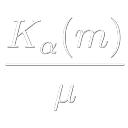 | | googology | 861 | C++ 17 | | 44.348 | 0 | 0 | 0 | 112 | 1123 | 64.111 | 491 | 22.650 | 787 | 41.865 | 734 | 52.462 | 580 | 48.506 | 474 | 52.346 | 733 | 44.109 | 724 | 41.188 | 715 | 43.488 | 675 | 45.764 | 622 | 49.465 | 722 | 45.352 | 717 | 42.937 | 671 | 39.431 | 614 |
| 710 | | | D4Cngo | 1085 | C++ 23 | | 44.330 | 0 | 0 | 0 | 41 | 70 | 59.220 | 633 | 54.376 | 619 | 48.896 | 691 | 43.526 | 717 | 35.348 | 728 | 65.014 | 667 | 47.985 | 693 | 42.019 | 708 | 40.247 | 711 | 40.064 | 718 | 54.859 | 683 | 46.998 | 705 | 40.432 | 711 | 34.595 | 725 |
| 711 |  | | lX57 | 1249 | C++ 20 | | 43.970 | 0 | 0 | 0 | 1847 | 1944 | 59.223 | 607 | 55.203 | 588 | 50.230 | 664 | 43.589 | 716 | 32.759 | 739 | 64.297 | 674 | 47.521 | 698 | 41.685 | 710 | 39.963 | 714 | 39.821 | 720 | 54.592 | 686 | 46.705 | 708 | 39.950 | 717 | 34.190 | 732 |
| 712 |  | | GoldIngot | 2166 | C++ 23 | | 43.855 | 0 | 0 | 0 | 1927 | 1933 | 59.224 | 596 | 39.998 | 745 | 38.575 | 747 | 47.673 | 671 | 44.416 | 605 | 65.062 | 666 | 47.932 | 694 | 41.067 | 716 | 39.832 | 715 | 39.402 | 725 | 55.122 | 680 | 45.868 | 713 | 39.887 | 719 | 34.164 | 733 |
| 713 | | | atchi_coder | 1422 | C++ 20 | | 43.769 | 0 | 0 | 70 | 1527 | 1533 | 0.000 | 1187 | 52.554 | 684 | 42.389 | 731 | 43.030 | 719 | 43.815 | 620 | 64.576 | 671 | 46.728 | 707 | 41.474 | 711 | 40.103 | 713 | 39.707 | 722 | 54.681 | 684 | 45.969 | 712 | 39.769 | 720 | 34.270 | 729 |
| 714 | | | ymym_tymblack | 1224 | C++ 23 | | 43.694 | 0 | 0 | 0 | 1942 | 1968 | 59.225 | 587 | 53.310 | 663 | 47.475 | 707 | 42.644 | 725 | 35.664 | 724 | 64.244 | 675 | 47.289 | 701 | 41.422 | 713 | 39.619 | 716 | 39.486 | 724 | 53.983 | 696 | 46.252 | 710 | 39.903 | 718 | 34.216 | 731 |
| 715 | | | n_na | 1129 | Python | | 43.684 | 0 | 0 | 0 | 309 | 562 | 59.345 | 543 | 52.726 | 682 | 46.668 | 712 | 42.931 | 720 | 36.186 | 723 | 64.390 | 673 | 47.352 | 700 | 41.270 | 714 | 39.566 | 717 | 39.530 | 723 | 52.896 | 703 | 46.317 | 709 | 40.387 | 712 | 34.712 | 722 |
| 716 | | | aimerlief | 1354 | Rust | | 43.412 | 0 | 0 | 1 | 1922 | 1998 | 58.600 | 669 | 51.971 | 692 | 43.120 | 728 | 40.558 | 736 | 40.474 | 675 | 66.683 | 642 | 48.558 | 688 | 41.447 | 712 | 38.782 | 721 | 37.035 | 741 | 53.976 | 697 | 45.812 | 715 | 39.446 | 721 | 34.012 | 735 |
| 717 | | | yuhidon | 787 | C++ 20 | | 43.361 | 0 | 0 | 0 | 101 | 168 | 20.430 | 795 | 32.908 | 768 | 45.542 | 718 | 49.250 | 633 | 43.670 | 623 | 49.870 | 741 | 41.911 | 734 | 40.540 | 718 | 43.130 | 680 | 45.506 | 631 | 47.359 | 732 | 44.427 | 722 | 42.335 | 691 | 39.122 | 626 |
| 718 | | | shumai724 | 1236 | C++ 20 | | 43.348 | 0 | 0 | 0 | 1463 | 1604 | 50.043 | 714 | 48.198 | 715 | 46.161 | 714 | 43.778 | 714 | 37.825 | 709 | 63.835 | 677 | 47.038 | 705 | 40.886 | 717 | 39.312 | 719 | 39.210 | 726 | 52.205 | 706 | 45.843 | 714 | 40.189 | 715 | 34.747 | 720 |
| 719 |  | | cympfh | 1494 | Rust | | 43.304 | 0 | 0 | 0 | 560 | 1681 | 9.229 | 1116 | 20.156 | 809 | 40.867 | 739 | 54.067 | 544 | 49.720 | 421 | 45.541 | 750 | 40.656 | 738 | 40.339 | 720 | 44.255 | 649 | 47.020 | 610 | 47.743 | 729 | 43.998 | 723 | 42.127 | 697 | 39.185 | 625 |
| 720 | | | opt1mal | 786 | C++ 23 | | 42.660 | 0 | 0 | 0 | 916 | 977 | 59.223 | 609 | 52.728 | 681 | 40.242 | 743 | 38.238 | 746 | 41.726 | 654 | 63.438 | 682 | 46.227 | 711 | 40.421 | 719 | 38.596 | 724 | 38.356 | 732 | 52.596 | 705 | 44.726 | 720 | 39.050 | 726 | 33.903 | 738 |
| 721 | | | plachta | 1276 | C++ 23 | | 42.625 | 0 | 0 | 0 | 1785 | 1834 | 59.228 | 557 | 45.286 | 731 | 38.223 | 748 | 42.767 | 724 | 42.550 | 644 | 63.337 | 685 | 46.449 | 710 | 39.990 | 721 | 38.611 | 723 | 38.427 | 731 | 52.194 | 707 | 44.735 | 719 | 39.226 | 723 | 33.975 | 737 |
| 722 | | | scp096shyguy | 473 | Python | | 41.943 | 0 | 0 | 0 | 430 | 941 | 60.328 | 528 | 54.506 | 608 | 47.164 | 708 | 40.786 | 734 | 31.199 | 743 | 61.689 | 691 | 45.386 | 715 | 39.690 | 722 | 38.007 | 727 | 37.996 | 735 | 50.360 | 715 | 44.448 | 721 | 38.884 | 728 | 33.683 | 739 |
| 723 | | | nariwo_z | 748 | C++ 23 | | 41.678 | 0 | 0 | 0 | 168 | 410 | 60.032 | 533 | 49.857 | 706 | 44.039 | 722 | 41.041 | 732 | 34.746 | 733 | 61.064 | 695 | 44.913 | 717 | 39.264 | 724 | 37.915 | 728 | 38.039 | 734 | 49.373 | 723 | 43.993 | 724 | 38.956 | 727 | 34.019 | 734 |
| 724 |  |  | Tainel | 476 | C++ 20 | | 41.409 | 0 | 0 | 0 | 1546 | 1715 | 84.245 | 194 | 47.188 | 723 | 33.682 | 770 | 36.765 | 750 | 44.547 | 599 | 59.182 | 709 | 44.971 | 716 | 39.317 | 723 | 37.752 | 731 | 37.583 | 738 | 44.268 | 737 | 41.904 | 733 | 40.804 | 708 | 38.540 | 632 |
| 725 | | | kumpu | 978 | C++ 20 | | 41.306 | 0 | 0 | 0 | 29 | 32 | 49.342 | 717 | 46.860 | 727 | 44.645 | 720 | 41.607 | 730 | 35.073 | 729 | 59.725 | 707 | 44.579 | 720 | 39.183 | 725 | 37.581 | 733 | 37.639 | 736 | 56.844 | 664 | 44.770 | 718 | 35.096 | 747 | 27.952 | 757 |
| 726 | | | Kuston | 1716 | Nim | | 41.253 | 0 | 0 | 0 | 131 | 189 | 59.228 | 557 | 54.106 | 631 | 48.120 | 702 | 40.341 | 739 | 29.061 | 755 | 60.429 | 700 | 44.584 | 719 | 39.117 | 726 | 37.448 | 734 | 37.367 | 740 | 50.375 | 714 | 43.852 | 725 | 37.789 | 734 | 32.589 | 742 |
| 727 | | | marc2825 | 1850 | C++ 20 | | 41.252 | 0 | 0 | 3 | 90 | 1977 | 58.633 | 668 | 51.902 | 695 | 47.063 | 709 | 41.237 | 731 | 30.130 | 752 | 57.380 | 716 | 43.128 | 730 | 38.969 | 728 | 38.391 | 725 | 39.013 | 727 | 47.424 | 731 | 43.417 | 727 | 39.080 | 725 | 34.752 | 719 |
| 728 | | | yatabis | 1725 | Python | | 41.203 | 0 | 0 | 0 | 1309 | 1608 | 59.228 | 557 | 54.038 | 634 | 48.090 | 703 | 40.405 | 737 | 28.888 | 757 | 60.350 | 702 | 44.551 | 721 | 39.078 | 727 | 37.326 | 735 | 37.370 | 739 | 50.351 | 716 | 43.724 | 726 | 37.793 | 733 | 32.542 | 743 |
| 729 |  | | keep_OC | 1949 | C++ 20 | | 40.843 | 0 | 0 | 0 | 70 | 159 | 59.228 | 557 | 49.150 | 711 | 43.707 | 724 | 40.303 | 740 | 33.412 | 736 | 60.519 | 698 | 44.343 | 722 | 38.535 | 730 | 36.934 | 738 | 36.891 | 742 | 48.318 | 727 | 43.222 | 728 | 38.174 | 732 | 33.283 | 740 |
| 730 | | | nahco314 | 1914 | C++ 20 | | 40.691 | 0 | 0 | 0 | 1865 | 1964 | 57.831 | 678 | 52.457 | 686 | 39.135 | 745 | 34.676 | 754 | 39.808 | 689 | 60.987 | 697 | 44.268 | 723 | 38.555 | 729 | 36.664 | 739 | 36.409 | 745 | 49.370 | 724 | 42.545 | 729 | 37.605 | 735 | 32.918 | 741 |
| 731 |  | | hushojin | 1488 | Java | | 40.684 | 0 | 0 | 0 | 189 | 227 | 42.095 | 744 | 40.964 | 742 | 40.436 | 740 | 42.541 | 727 | 38.699 | 703 | 55.262 | 727 | 41.703 | 735 | 37.948 | 734 | 38.272 | 726 | 39.788 | 721 | 45.265 | 735 | 42.445 | 730 | 39.320 | 722 | 35.425 | 706 |
| 732 | | | craw | 374 | C++ 17 | | 40.473 | 0 | 0 | 0 | 31 | 39 | 46.832 | 726 | 45.600 | 730 | 43.533 | 725 | 40.992 | 733 | 34.572 | 735 | 60.152 | 704 | 43.992 | 725 | 38.006 | 732 | 36.605 | 740 | 36.616 | 744 | 44.876 | 736 | 42.280 | 732 | 39.171 | 724 | 35.282 | 708 |
| 733 | | | Leal_0 | 931 | C++ 20 | | 40.330 | 0 | 0 | 0 | 29 | 32 | 47.555 | 720 | 48.016 | 717 | 45.549 | 717 | 40.626 | 735 | 31.735 | 742 | 47.498 | 747 | 39.414 | 741 | 38.336 | 731 | 39.531 | 718 | 41.500 | 702 | 41.908 | 740 | 41.372 | 735 | 40.141 | 716 | 37.730 | 638 |
| 734 | | | dbftdiyoeywga | 271 | C++ 20 | | 39.941 | 0 | 0 | 0 | 155 | 357 | 59.240 | 546 | 53.988 | 636 | 46.594 | 713 | 38.553 | 745 | 27.590 | 759 | 58.528 | 714 | 43.182 | 729 | 37.975 | 733 | 36.178 | 744 | 36.135 | 746 | 48.105 | 728 | 42.306 | 731 | 36.918 | 739 | 32.059 | 744 |
| 735 | | | yorksyo | 861 | PHP | | 39.339 | 0 | 0 | 0 | 57 | 79 | 20.482 | 794 | 34.198 | 764 | 42.330 | 732 | 42.878 | 723 | 38.182 | 706 | 50.496 | 739 | 42.037 | 733 | 37.755 | 735 | 37.075 | 737 | 36.720 | 743 | 42.967 | 739 | 40.449 | 737 | 38.498 | 729 | 35.239 | 710 |
| 736 |  | | magurofly | 1105 | Rust | | 39.048 | 0 | 0 | 0 | 86 | 125 | 47.218 | 723 | 43.015 | 737 | 40.879 | 738 | 39.094 | 743 | 34.940 | 732 | 56.687 | 719 | 42.233 | 732 | 37.067 | 736 | 35.604 | 747 | 35.317 | 747 | 54.029 | 695 | 40.910 | 736 | 33.281 | 751 | 27.594 | 759 |
| 737 |  | | motata | 269 | C++ 23 | | 38.744 | 0 | 0 | 0 | 28 | 31 | 41.394 | 746 | 39.572 | 746 | 38.958 | 746 | 40.245 | 741 | 36.414 | 720 | 52.550 | 731 | 39.912 | 740 | 36.363 | 738 | 36.370 | 742 | 37.586 | 737 | 46.954 | 733 | 41.461 | 734 | 35.641 | 745 | 30.507 | 747 |
| 738 | | | Trayu | 891 | C++ 20 | | 38.657 | 0 | 0 | 8 | 33 | 41 | 17.052 | 807 | 28.538 | 777 | 40.250 | 741 | 44.344 | 709 | 39.263 | 696 | 41.387 | 758 | 36.523 | 747 | 36.261 | 739 | 39.055 | 720 | 41.711 | 699 | 41.012 | 744 | 39.170 | 741 | 38.313 | 730 | 36.013 | 696 |
| 739 | | | Dona_ | 267 | C++ 20 | | 38.443 | 0 | 0 | 0 | 29 | 32 | 20.553 | 792 | 35.064 | 763 | 53.772 | 567 | 43.595 | 715 | 26.576 | 761 | 46.705 | 748 | 38.920 | 742 | 36.375 | 737 | 37.136 | 736 | 38.469 | 730 | 39.901 | 746 | 39.663 | 739 | 38.222 | 731 | 35.804 | 702 |
| 740 | | | Tekyla4869 | 1950 | Python | | 38.130 | 0 | 0 | 0 | 108 | 147 | 44.594 | 740 | 43.358 | 736 | 41.233 | 736 | 38.633 | 744 | 32.150 | 741 | 56.918 | 718 | 41.436 | 736 | 35.768 | 740 | 34.487 | 748 | 34.453 | 749 | 41.137 | 742 | 39.557 | 740 | 37.381 | 736 | 34.218 | 730 |
| 741 | | | tmikada | 1511 | C++ 23 | | 37.549 | 0 | 0 | 0 | 70 | 104 | 59.222 | 622 | 47.731 | 721 | 40.996 | 737 | 36.827 | 748 | 28.609 | 758 | 55.806 | 724 | 40.727 | 737 | 35.352 | 741 | 33.965 | 750 | 33.960 | 751 | 43.090 | 738 | 39.677 | 738 | 35.613 | 746 | 31.493 | 745 |
| 742 |  | | FUTO4 | 1456 | Java | | 37.496 | 0 | 0 | 0 | 231 | 297 | 12.722 | 817 | 24.295 | 783 | 38.131 | 749 | 44.128 | 712 | 39.754 | 692 | 40.400 | 762 | 35.503 | 749 | 34.943 | 743 | 37.872 | 729 | 40.526 | 712 | 39.594 | 751 | 37.912 | 745 | 37.168 | 737 | 35.209 | 711 |
| 743 |  | | tombo_ | 838 | Python | | 37.319 | 0 | 0 | 0 | 385 | 1257 | 7.869 | 1126 | 18.600 | 815 | 37.636 | 752 | 46.244 | 696 | 40.945 | 668 | 37.595 | 773 | 33.839 | 760 | 34.410 | 746 | 38.761 | 722 | 41.963 | 695 | 39.505 | 752 | 37.558 | 748 | 36.987 | 738 | 35.142 | 713 |
| 744 | | | iauyutoph | 684 | C++ 17 | | 37.283 | 0 | 0 | 0 | 66 | 80 | 14.906 | 812 | 25.712 | 782 | 37.768 | 751 | 43.120 | 718 | 39.335 | 694 | 40.541 | 760 | 35.091 | 752 | 34.647 | 744 | 37.787 | 730 | 40.339 | 715 | 39.604 | 750 | 37.803 | 746 | 36.852 | 740 | 34.758 | 718 |
| 745 | | | yuu0606 | 908 | C++ 20 | | 37.199 | 0 | 0 | 0 | 33 | 51 | 15.556 | 810 | 25.880 | 781 | 37.501 | 754 | 42.927 | 721 | 39.284 | 695 | 40.392 | 763 | 34.945 | 753 | 34.615 | 745 | 37.586 | 732 | 40.405 | 714 | 39.615 | 749 | 37.696 | 747 | 36.728 | 741 | 34.646 | 723 |
| 746 |  | | dashiyo | 262 | C++ 20 | | 37.109 | 0 | 0 | 0 | 244 | 614 | 47.380 | 721 | 43.597 | 734 | 40.248 | 742 | 36.824 | 749 | 30.896 | 744 | 53.954 | 729 | 40.079 | 739 | 35.221 | 742 | 33.853 | 751 | 33.575 | 752 | 49.655 | 720 | 39.127 | 742 | 32.253 | 755 | 27.029 | 760 |
| 747 | | | LeDRE3001 | 591 | C++ 20 | | 36.514 | 0 | 0 | 0 | 65 | 76 | 10.749 | 820 | 20.788 | 807 | 35.990 | 763 | 44.189 | 710 | 39.973 | 684 | 42.193 | 757 | 35.135 | 751 | 33.653 | 751 | 36.467 | 741 | 38.724 | 728 | 38.441 | 754 | 36.878 | 750 | 36.256 | 742 | 34.387 | 728 |
| 748 | | | DaiHentai | 443 | Python | | 36.371 | 0 | 0 | 0 | 212 | 696 | 59.187 | 660 | 53.662 | 646 | 45.556 | 716 | 34.148 | 755 | 21.117 | 767 | 50.154 | 740 | 37.575 | 745 | 34.369 | 747 | 33.980 | 749 | 34.838 | 748 | 41.083 | 743 | 38.097 | 743 | 34.674 | 748 | 31.369 | 746 |
| 749 |  | | souken521 | 1264 | C++ 23 | | 36.034 | 0 | 0 | 2 | 313 | 771 | 21.279 | 771 | 35.844 | 756 | 41.362 | 735 | 39.518 | 742 | 30.295 | 749 | 39.580 | 765 | 34.048 | 756 | 33.869 | 749 | 36.230 | 743 | 38.645 | 729 | 36.858 | 758 | 36.502 | 752 | 36.175 | 743 | 34.507 | 726 |
| 750 | | | krkr14 | 1320 | C++ 20 | | 35.862 | 0 | 0 | 0 | 41 | 65 | 18.074 | 804 | 32.337 | 771 | 42.436 | 730 | 40.386 | 738 | 30.384 | 747 | 39.437 | 770 | 33.985 | 758 | 33.823 | 750 | 36.094 | 745 | 38.201 | 733 | 36.945 | 757 | 36.508 | 751 | 35.885 | 744 | 33.994 | 736 |
| 751 |  | | tic40 | 259 | C++ 23 | | 35.785 | 0 | 0 | 0 | 28 | 52 | 59.223 | 613 | 54.815 | 597 | 45.770 | 715 | 32.705 | 759 | 19.845 | 768 | 52.533 | 732 | 38.436 | 743 | 34.047 | 748 | 32.476 | 753 | 32.502 | 753 | 41.759 | 741 | 37.938 | 744 | 33.551 | 749 | 29.567 | 750 |
| 752 | | | dzwa | 258 | Python | | 35.012 | 0 | 0 | 2 | 205 | 1961 | 32.539 | 755 | 35.715 | 757 | 39.638 | 744 | 36.626 | 751 | 30.170 | 751 | 51.738 | 735 | 38.047 | 744 | 32.927 | 752 | 31.709 | 754 | 31.693 | 754 | 40.603 | 745 | 36.487 | 753 | 33.166 | 752 | 29.539 | 751 |
| 753 |  | | Iras | 638 | C++ 20 | | 34.963 | 0 | 0 | 23 | 1751 | 2000 | 21.877 | 769 | 41.148 | 741 | 43.000 | 729 | 35.595 | 753 | 26.618 | 760 | 62.649 | 686 | 42.724 | 731 | 32.263 | 754 | 28.554 | 760 | 27.028 | 761 | 39.620 | 748 | 36.961 | 749 | 33.305 | 750 | 29.671 | 749 |
| 754 | | | manzokumaboroshi | 257 | C++ 20 | | 34.354 | 0 | 0 | 0 | 32 | 86 | 59.225 | 590 | 54.228 | 624 | 43.976 | 723 | 30.674 | 760 | 18.670 | 770 | 50.529 | 738 | 36.899 | 746 | 32.704 | 753 | 31.159 | 755 | 31.172 | 756 | 39.882 | 747 | 36.333 | 754 | 32.302 | 754 | 28.602 | 755 |
| 755 | | | toko314 | 256 | Python | | 34.194 | 0 | 0 | 0 | 1154 | 1447 | 4.979 | 1150 | 11.522 | 826 | 25.646 | 779 | 42.166 | 729 | 46.757 | 537 | 44.821 | 751 | 34.709 | 755 | 31.282 | 758 | 32.940 | 752 | 34.144 | 750 | 38.402 | 755 | 34.684 | 756 | 33.101 | 753 | 30.456 | 748 |
| 756 | | | mutoh21d | 256 | C++ 20 | | 33.688 | 0 | 0 | 0 | 67 | 134 | 59.228 | 557 | 52.953 | 672 | 43.170 | 727 | 30.621 | 762 | 17.768 | 771 | 48.437 | 745 | 35.533 | 748 | 31.980 | 755 | 30.849 | 757 | 31.369 | 755 | 38.816 | 753 | 35.496 | 755 | 31.774 | 757 | 28.394 | 756 |
| 757 | |  | dimkadimon | 556 | Java | | 33.271 | 0 | 0 | 90 | 1755 | 2000 | 0.000 | 1187 | 50.155 | 703 | 37.616 | 753 | 26.452 | 765 | 30.361 | 748 | 48.812 | 744 | 35.140 | 750 | 31.826 | 756 | 30.505 | 758 | 30.335 | 758 | 37.172 | 756 | 34.240 | 757 | 32.212 | 756 | 29.275 | 752 |
| 758 | | | virtual_hippo | 1137 | Rust | | 32.696 | 0 | 0 | 0 | 147 | 329 | 35.983 | 751 | 33.477 | 766 | 33.871 | 769 | 34.123 | 756 | 29.794 | 753 | 43.744 | 752 | 34.001 | 757 | 31.115 | 759 | 30.851 | 756 | 31.044 | 757 | 47.445 | 730 | 33.878 | 758 | 26.947 | 764 | 22.223 | 775 |
| 759 | | | Quuri | 721 | C# 11.0 AOT | | 32.325 | 0 | 0 | 877 | 62 | 115 | 12.788 | 816 | 29.293 | 776 | 37.770 | 750 | 38.166 | 747 | 26.102 | 763 | 19.053 | 798 | 26.520 | 773 | 31.511 | 757 | 35.644 | 746 | 39.929 | 719 | 35.881 | 759 | 32.978 | 759 | 31.386 | 759 | 28.914 | 754 |
| 760 | | | ngyan | 253 | Python | | 31.741 | 0 | 0 | 0 | 411 | 511 | 9.044 | 1118 | 21.146 | 803 | 32.604 | 772 | 35.984 | 752 | 34.636 | 734 | 47.522 | 746 | 34.941 | 754 | 29.302 | 760 | 28.730 | 759 | 28.635 | 759 | 33.706 | 760 | 32.481 | 760 | 31.443 | 758 | 29.199 | 753 |
| 761 | | | beagleworks | 1336 | Python | | 30.881 | 0 | 0 | 49 | 1949 | 2000 | 40.484 | 747 | 30.555 | 773 | 34.638 | 766 | 33.039 | 758 | 25.704 | 764 | 46.390 | 749 | 33.894 | 759 | 28.618 | 761 | 27.830 | 761 | 27.915 | 760 | 33.098 | 761 | 32.114 | 761 | 30.400 | 760 | 27.720 | 758 |
| 762 |  | | hiryuN | 1853 | Python | | 29.840 | 0 | 0 | 0 | 1719 | 1995 | 33.537 | 752 | 32.528 | 770 | 30.941 | 774 | 30.651 | 761 | 26.500 | 762 | 70.866 | 534 | 30.474 | 763 | 25.163 | 771 | 24.521 | 766 | 25.126 | 765 | 31.944 | 762 | 31.120 | 762 | 29.540 | 761 | 26.551 | 761 |
| 763 | | | say0331k | 251 | Python | | 29.059 | 0 | 0 | 0 | 633 | 1691 | 62.437 | 504 | 54.418 | 615 | 33.569 | 771 | 22.025 | 771 | 16.325 | 772 | 43.382 | 754 | 30.990 | 762 | 27.809 | 762 | 26.298 | 762 | 26.284 | 763 | 31.909 | 764 | 30.230 | 763 | 28.004 | 763 | 25.922 | 762 |
| 764 | | | idon | 1194 | Python | | 28.874 | 0 | 0 | 0 | 91 | 182 | 7.859 | 1127 | 15.245 | 817 | 25.585 | 780 | 33.671 | 757 | 35.487 | 727 | 43.553 | 753 | 31.888 | 761 | 26.619 | 763 | 26.084 | 763 | 25.922 | 764 | 31.936 | 763 | 29.516 | 764 | 28.122 | 762 | 25.788 | 763 |
| 765 | | | UTOY234 | 250 | C++ 17 | | 27.492 | 0 | 0 | 0 | 27 | 30 | 59.228 | 557 | 53.157 | 667 | 37.091 | 755 | 20.961 | 773 | 10.902 | 780 | 40.519 | 761 | 29.214 | 765 | 26.432 | 764 | 24.893 | 764 | 25.015 | 766 | 31.232 | 765 | 29.103 | 765 | 26.015 | 766 | 23.391 | 767 |
| 766 |  | | yuubinnkyoku | 747 | Python | | 27.306 | 0 | 0 | 45 | 1777 | 2000 | 59.227 | 580 | 47.827 | 719 | 36.345 | 759 | 20.983 | 772 | 13.764 | 775 | 40.688 | 759 | 29.580 | 764 | 25.962 | 766 | 24.508 | 767 | 24.640 | 767 | 30.180 | 771 | 28.825 | 766 | 26.343 | 765 | 23.655 | 766 |
| 767 | | | blueberry1001 | 1467 | C++ 17 | | 27.036 | 0 | 0 | 0 | 35 | 128 | 59.228 | 557 | 52.872 | 674 | 36.408 | 757 | 20.348 | 775 | 10.618 | 783 | 39.871 | 764 | 28.710 | 766 | 26.030 | 765 | 24.481 | 768 | 24.572 | 768 | 30.645 | 766 | 28.577 | 767 | 25.624 | 767 | 23.077 | 769 |
| 768 | | | kyon2326 | 1728 | C++ 23 | | 26.893 | 0 | 0 | 0 | 53 | 89 | 59.398 | 538 | 52.934 | 673 | 36.386 | 758 | 20.104 | 777 | 10.359 | 787 | 39.564 | 766 | 28.534 | 767 | 25.855 | 767 | 24.380 | 769 | 24.506 | 769 | 30.473 | 767 | 28.396 | 768 | 25.518 | 769 | 22.968 | 770 |
| 769 | | | mackerel38 | 626 | C++ 20 | | 26.840 | 0 | 0 | 0 | 28 | 84 | 59.224 | 602 | 52.767 | 680 | 36.327 | 760 | 20.082 | 778 | 10.354 | 788 | 39.551 | 767 | 28.516 | 768 | 25.814 | 770 | 24.308 | 772 | 24.415 | 772 | 30.412 | 768 | 28.337 | 769 | 25.466 | 770 | 22.931 | 773 |
| 770 | | | akakri | 246 | C++ 20 | | 26.840 | 0 | 0 | 0 | 30 | 57 | 59.228 | 557 | 52.768 | 678 | 36.326 | 762 | 20.082 | 779 | 10.353 | 789 | 39.550 | 768 | 28.514 | 769 | 25.815 | 769 | 24.308 | 770 | 24.416 | 770 | 30.412 | 769 | 28.336 | 771 | 25.464 | 771 | 22.933 | 771 |
| 771 |  | | pyy1 | 1006 | C++ 17 | | 26.840 | 0 | 0 | 0 | 26 | 31 | 59.228 | 557 | 52.768 | 679 | 36.326 | 761 | 20.082 | 779 | 10.353 | 789 | 39.550 | 768 | 28.514 | 769 | 25.815 | 768 | 24.308 | 770 | 24.416 | 771 | 30.412 | 769 | 28.336 | 770 | 25.464 | 772 | 22.933 | 771 |
| 772 | | | katefu334 | 1354 | C++ 20 | | 25.412 | 0 | 0 | 0 | 33 | 40 | 28.883 | 759 | 28.263 | 778 | 27.130 | 777 | 25.748 | 767 | 22.075 | 766 | 38.241 | 772 | 27.694 | 771 | 23.757 | 775 | 22.936 | 776 | 22.906 | 776 | 25.951 | 776 | 25.971 | 775 | 25.534 | 768 | 24.098 | 764 |
| 773 | | | ahalcyon | 244 | C++ 20 | | 25.400 | 0 | 0 | 0 | 29 | 34 | 54.184 | 704 | 48.620 | 712 | 34.211 | 768 | 19.567 | 784 | 10.224 | 792 | 37.284 | 775 | 27.052 | 772 | 24.413 | 772 | 23.034 | 775 | 23.074 | 775 | 29.308 | 772 | 26.814 | 772 | 23.892 | 776 | 21.376 | 777 |
| 774 | | | kanam33 | 243 | Python | | 25.239 | 0 | 0 | 0 | 88 | 672 | 50.923 | 710 | 46.779 | 728 | 34.531 | 767 | 19.927 | 781 | 10.414 | 786 | 37.477 | 774 | 26.315 | 774 | 23.829 | 774 | 23.041 | 774 | 23.592 | 774 | 28.592 | 773 | 26.432 | 773 | 23.913 | 775 | 21.843 | 776 |
| 775 |  | | Zakky | 410 | C++ 20 | | 25.196 | 0 | 0 | 0 | 28 | 96 | 56.926 | 683 | 47.932 | 718 | 32.488 | 773 | 19.639 | 783 | 10.774 | 782 | 34.165 | 780 | 25.563 | 775 | 24.137 | 773 | 23.639 | 773 | 24.369 | 773 | 27.559 | 774 | 26.380 | 774 | 24.266 | 774 | 22.416 | 774 |
| 776 | | | at2030 | 942 | JavaScript | | 25.098 | 0 | 0 | 0 | 170 | 263 | 7.166 | 1141 | 14.274 | 821 | 20.835 | 785 | 28.219 | 763 | 32.213 | 740 | 31.016 | 784 | 24.184 | 783 | 23.022 | 776 | 24.739 | 765 | 26.333 | 762 | 26.504 | 775 | 25.111 | 776 | 24.847 | 773 | 23.895 | 765 |
| 777 | | | leoborui | 241 | C++ 20 | | 23.421 | 0 | 0 | 0 | 40 | 72 | 56.913 | 684 | 46.195 | 729 | 29.918 | 775 | 17.752 | 786 | 9.470 | 811 | 34.752 | 776 | 24.897 | 778 | 22.557 | 777 | 21.217 | 778 | 21.173 | 779 | 25.592 | 777 | 24.587 | 777 | 22.626 | 778 | 20.714 | 782 |
| 778 | 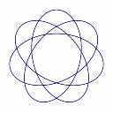 | | star343 | 1131 | C++ 23 | | 22.917 | 0 | 0 | 0 | 481 | 509 | 25.967 | 762 | 25.994 | 780 | 24.855 | 781 | 23.186 | 770 | 19.412 | 769 | 33.146 | 783 | 24.476 | 782 | 21.360 | 779 | 21.055 | 779 | 21.291 | 778 | 21.862 | 787 | 22.920 | 780 | 23.573 | 777 | 23.310 | 768 |
| 779 | | | kento_kun | 772 | Python | | 22.700 | 0 | 0 | 238 | 898 | 2000 | 0.000 | 1187 | 35.561 | 760 | 36.781 | 756 | 20.316 | 776 | 10.449 | 784 | 34.595 | 777 | 24.544 | 781 | 21.913 | 778 | 20.397 | 781 | 19.932 | 784 | 23.783 | 778 | 24.019 | 778 | 22.198 | 782 | 20.637 | 783 |
| 780 | | | hyahhoi | 240 | Java | | 22.485 | 0 | 0 | 0 | 264 | 426 | 5.078 | 1148 | 9.906 | 1116 | 18.623 | 806 | 26.620 | 764 | 29.269 | 754 | 34.269 | 778 | 25.062 | 777 | 20.548 | 781 | 20.314 | 783 | 20.017 | 782 | 23.630 | 779 | 22.616 | 781 | 22.452 | 779 | 21.190 | 780 |
| 781 |  | | berry | 1791 | C++ 17 | | 22.360 | 0 | 0 | 0 | 1928 | 1931 | 4.901 | 1157 | 10.096 | 833 | 17.940 | 808 | 25.394 | 768 | 30.445 | 746 | 34.182 | 779 | 24.867 | 779 | 20.494 | 782 | 20.098 | 785 | 19.969 | 783 | 23.455 | 780 | 22.412 | 783 | 22.326 | 780 | 21.208 | 779 |
| 782 | | | shiuto05 | 364 | C++ 20 | | 22.347 | 0 | 0 | 188 | 1334 | 2000 | 0.000 | 1187 | 36.661 | 754 | 34.800 | 765 | 19.914 | 782 | 10.350 | 791 | 33.522 | 782 | 23.434 | 784 | 21.319 | 780 | 20.339 | 782 | 20.493 | 780 | 23.288 | 784 | 23.518 | 779 | 22.122 | 783 | 20.300 | 784 |
| 783 | | | CatYukarin | 1308 | Python | | 22.272 | 0 | 0 | 0 | 144 | 214 | 4.922 | 1153 | 9.826 | 1119 | 18.474 | 807 | 26.406 | 766 | 28.933 | 756 | 33.947 | 781 | 24.752 | 780 | 20.346 | 783 | 20.130 | 784 | 19.894 | 785 | 23.407 | 782 | 22.437 | 782 | 22.224 | 781 | 20.963 | 781 |
| 784 |  | | makinzm2 | 1224 | Python | | 21.608 | 0 | 0 | 0 | 1184 | 1765 | 4.900 | 1159 | 8.796 | 1123 | 15.935 | 820 | 25.126 | 769 | 30.268 | 750 | 28.955 | 786 | 21.828 | 785 | 19.533 | 785 | 20.654 | 780 | 21.851 | 777 | 22.066 | 786 | 21.428 | 784 | 21.725 | 784 | 21.213 | 778 |
| 785 | | | Slamur | 237 | Python | | 21.022 | 0 | 0 | 1190 | 161 | 659 | 58.946 | 662 | 37.302 | 752 | 22.916 | 783 | 16.350 | 790 | 12.383 | 777 | 43.225 | 756 | 25.561 | 776 | 14.155 | 812 | 21.847 | 777 | 14.908 | 815 | 23.394 | 783 | 21.225 | 786 | 20.483 | 785 | 18.914 | 786 |
| 786 | | | ponyo877 | 1099 | Go | | 20.582 | 0 | 0 | 0 | 1929 | 1950 | 71.400 | 392 | 44.455 | 733 | 18.942 | 804 | 13.792 | 812 | 11.085 | 779 | 28.894 | 787 | 21.388 | 787 | 19.980 | 784 | 19.001 | 786 | 19.134 | 790 | 21.455 | 788 | 21.329 | 785 | 20.381 | 786 | 19.054 | 785 |
| 787 | | | harurun | 1535 | C++ 20 | | 20.279 | 0 | 0 | 0 | 1829 | 1868 | 59.224 | 597 | 39.198 | 747 | 27.433 | 776 | 15.158 | 799 | 7.109 | 1112 | 30.317 | 785 | 21.669 | 786 | 19.398 | 786 | 18.253 | 788 | 18.392 | 804 | 21.154 | 789 | 21.122 | 787 | 19.995 | 787 | 18.732 | 787 |
| 788 | | | jikei | 708 | Rust | | 19.922 | 0 | 0 | 0 | 443 | 778 | 33.471 | 753 | 35.676 | 759 | 26.703 | 778 | 16.017 | 793 | 9.513 | 810 | 27.587 | 789 | 20.201 | 788 | 18.999 | 787 | 18.674 | 787 | 19.184 | 789 | 23.415 | 781 | 20.749 | 788 | 18.524 | 789 | 16.867 | 792 |
| 789 | | | hiuchida | 728 | Java | | 18.329 | 0 | 0 | 0 | 530 | 792 | 59.220 | 632 | 37.671 | 751 | 20.301 | 787 | 12.853 | 814 | 8.491 | 820 | 27.587 | 788 | 19.617 | 789 | 17.589 | 788 | 16.492 | 808 | 16.484 | 808 | 19.420 | 790 | 19.016 | 789 | 17.941 | 791 | 16.844 | 793 |
| 790 |  | | Junmori | 1202 | C++ 20 | | 18.155 | 0 | 0 | 0 | 27 | 30 | 4.900 | 1159 | 8.120 | 1124 | 13.617 | 821 | 20.775 | 774 | 25.151 | 765 | 24.008 | 792 | 18.222 | 791 | 16.473 | 791 | 17.451 | 792 | 18.427 | 803 | 18.099 | 791 | 17.873 | 791 | 18.423 | 790 | 18.246 | 789 |
| 791 | | | Kou0406 | 527 | C++ 23 | | 18.013 | 0 | 0 | 0 | 345 | 373 | 20.413 | 796 | 20.922 | 805 | 19.686 | 791 | 17.603 | 787 | 15.511 | 773 | 23.134 | 795 | 18.133 | 793 | 16.842 | 790 | 17.316 | 794 | 17.980 | 805 | 17.226 | 793 | 17.781 | 792 | 18.566 | 788 | 18.498 | 788 |
| 792 | | | arshb1r | 232 | C++ 20 | | 17.728 | 0 | 0 | 0 | 51 | 88 | 26.517 | 761 | 27.186 | 779 | 23.166 | 782 | 16.199 | 791 | 9.715 | 796 | 18.342 | 799 | 15.964 | 796 | 16.870 | 789 | 18.109 | 789 | 19.676 | 787 | 17.807 | 792 | 17.931 | 790 | 17.870 | 792 | 17.268 | 790 |
| 793 | | | t_atsushi | 1619 | Python | | 17.163 | 0 | 0 | 1754 | 1627 | 1968 | 21.592 | 770 | 19.693 | 811 | 18.855 | 805 | 18.159 | 785 | 13.284 | 776 | 23.150 | 794 | 19.329 | 790 | 15.262 | 798 | 16.744 | 797 | 15.283 | 810 | 22.590 | 785 | 16.944 | 794 | 15.570 | 811 | 13.487 | 816 |
| 794 | | | mobusige | 231 | Python | | 16.649 | 0 | 0 | 0 | 243 | 253 | 18.902 | 802 | 18.697 | 814 | 17.908 | 809 | 16.896 | 788 | 14.249 | 774 | 25.250 | 790 | 18.186 | 792 | 15.503 | 795 | 14.979 | 811 | 15.007 | 814 | 15.942 | 798 | 16.643 | 795 | 17.104 | 793 | 16.904 | 791 |
| 795 |  | | ere4 | 1167 | Python | | 16.639 | 0 | 0 | 1 | 1650 | 1946 | 20.879 | 779 | 21.942 | 790 | 19.928 | 789 | 16.097 | 792 | 11.727 | 778 | 14.011 | 809 | 13.748 | 800 | 15.645 | 793 | 17.854 | 790 | 20.082 | 781 | 16.304 | 796 | 16.525 | 796 | 16.922 | 794 | 16.814 | 794 |
| 796 | | | kurorosuke | 230 | Python | | 16.497 | 0 | 0 | 0 | 76 | 896 | 20.989 | 774 | 22.792 | 786 | 21.542 | 784 | 16.016 | 794 | 9.799 | 795 | 13.861 | 811 | 13.765 | 799 | 15.615 | 794 | 17.656 | 791 | 19.732 | 786 | 16.222 | 797 | 16.501 | 797 | 16.751 | 795 | 16.506 | 796 |
| 797 | | | liaozixu | 229 | C++ 17 | | 16.431 | 0 | 0 | 0 | 43 | 86 | 80.091 | 279 | 38.221 | 749 | 16.944 | 813 | 9.681 | 825 | 5.687 | 1136 | 24.194 | 791 | 17.376 | 794 | 15.872 | 792 | 14.767 | 812 | 15.077 | 811 | 16.830 | 794 | 17.024 | 793 | 16.356 | 798 | 15.434 | 809 |
| 798 | | | sgfc | 851 | C++ 23 | | 16.345 | 0 | 0 | 0 | 27 | 36 | 21.895 | 767 | 23.071 | 784 | 20.523 | 786 | 15.675 | 795 | 10.078 | 793 | 14.068 | 807 | 13.578 | 801 | 15.401 | 796 | 17.435 | 793 | 19.624 | 788 | 15.885 | 799 | 16.307 | 799 | 16.642 | 796 | 16.549 | 795 |
| 799 | | | stafx | 807 | C++ 20 | | 16.259 | 0 | 0 | 0 | 29 | 32 | 21.894 | 768 | 22.994 | 785 | 20.225 | 788 | 15.288 | 797 | 10.422 | 785 | 14.706 | 805 | 13.902 | 798 | 15.364 | 797 | 17.145 | 795 | 19.050 | 791 | 15.757 | 800 | 16.195 | 800 | 16.594 | 797 | 16.495 | 797 |
| 800 | | | hpxhqls | 1037 | C++ 17 | | 15.831 | 0 | 0 | 0 | 290 | 1841 | 59.222 | 616 | 35.682 | 758 | 17.477 | 811 | 10.081 | 823 | 6.001 | 1118 | 23.868 | 793 | 16.881 | 795 | 15.256 | 799 | 14.233 | 814 | 14.235 | 817 | 16.520 | 795 | 16.376 | 798 | 15.580 | 810 | 14.777 | 812 |
| 801 | | | SUPERFIRE777 | 608 | Python | | 15.818 | 0 | 0 | 0 | 126 | 155 | 21.054 | 772 | 22.278 | 789 | 19.848 | 790 | 15.159 | 798 | 9.812 | 794 | 13.723 | 813 | 13.178 | 803 | 14.893 | 800 | 16.853 | 796 | 18.950 | 792 | 15.330 | 802 | 15.766 | 801 | 16.127 | 799 | 16.055 | 798 |
| 802 | | | andsider | 458 | Python | | 15.501 | 0 | 0 | 0 | 109 | 120 | 20.879 | 779 | 21.932 | 793 | 19.510 | 792 | 14.821 | 800 | 9.535 | 800 | 13.303 | 818 | 12.853 | 805 | 14.585 | 805 | 16.554 | 798 | 18.649 | 797 | 15.060 | 806 | 15.432 | 802 | 15.804 | 800 | 15.715 | 799 |
| 802 | | | anuragtiwari6 | 331 | Python | | 15.501 | 0 | 0 | 0 | 40 | 44 | 20.879 | 779 | 21.932 | 793 | 19.510 | 792 | 14.821 | 800 | 9.535 | 800 | 13.303 | 818 | 12.853 | 805 | 14.585 | 805 | 16.554 | 798 | 18.649 | 797 | 15.060 | 806 | 15.432 | 802 | 15.804 | 800 | 15.715 | 799 |
| 802 | 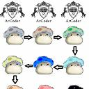 | | atcoderjzp | 225 | Python | | 15.501 | 0 | 0 | 0 | 40 | 44 | 20.879 | 779 | 21.932 | 793 | 19.510 | 792 | 14.821 | 800 | 9.535 | 800 | 13.303 | 818 | 12.853 | 805 | 14.585 | 805 | 16.554 | 798 | 18.649 | 797 | 15.060 | 806 | 15.432 | 802 | 15.804 | 800 | 15.715 | 799 |
| 802 | | | fabbernat | 225 | Python | | 15.501 | 0 | 0 | 0 | 42 | 48 | 20.879 | 779 | 21.932 | 793 | 19.510 | 792 | 14.821 | 800 | 9.535 | 800 | 13.303 | 818 | 12.853 | 805 | 14.585 | 805 | 16.554 | 798 | 18.649 | 797 | 15.060 | 806 | 15.432 | 802 | 15.804 | 800 | 15.715 | 799 |
| 802 | | | KooM | 1159 | Python | | 15.501 | 0 | 0 | 0 | 107 | 117 | 20.879 | 779 | 21.932 | 793 | 19.510 | 792 | 14.821 | 800 | 9.535 | 800 | 13.303 | 818 | 12.853 | 805 | 14.585 | 805 | 16.554 | 798 | 18.649 | 797 | 15.060 | 806 | 15.432 | 802 | 15.804 | 800 | 15.715 | 799 |
| 802 | | | Tr_2SA1015 | 1181 | Python | | 15.501 | 0 | 0 | 0 | 41 | 48 | 20.879 | 779 | 21.932 | 793 | 19.510 | 792 | 14.821 | 800 | 9.535 | 800 | 13.303 | 818 | 12.853 | 805 | 14.585 | 805 | 16.554 | 798 | 18.649 | 797 | 15.060 | 806 | 15.432 | 802 | 15.804 | 800 | 15.715 | 799 |
| 808 | | | kabir1125 | 222 | C++ 20 | | 15.501 | 0 | 0 | 0 | 27 | 31 | 20.883 | 776 | 21.932 | 791 | 19.509 | 798 | 14.820 | 806 | 9.534 | 806 | 13.298 | 1106 | 12.850 | 811 | 14.586 | 802 | 16.553 | 804 | 18.650 | 793 | 15.060 | 803 | 15.431 | 808 | 15.802 | 806 | 15.715 | 805 |
| 808 | | | Shivani1233 | 222 | Java | | 15.501 | 0 | 0 | 0 | 152 | 191 | 20.883 | 776 | 21.932 | 791 | 19.509 | 798 | 14.820 | 806 | 9.534 | 806 | 13.298 | 1106 | 12.850 | 811 | 14.586 | 802 | 16.553 | 804 | 18.650 | 793 | 15.060 | 803 | 15.431 | 808 | 15.802 | 806 | 15.715 | 805 |
| 810 | | | HJZhao | 1263 | C++ 20 | | 15.501 | 0 | 0 | 0 | 29 | 32 | 20.883 | 776 | 21.932 | 799 | 19.509 | 798 | 14.820 | 806 | 9.534 | 806 | 13.298 | 1106 | 12.850 | 811 | 14.586 | 802 | 16.553 | 804 | 18.650 | 795 | 15.060 | 803 | 15.431 | 808 | 15.802 | 808 | 15.715 | 805 |
| 811 | | | returnhanamaru | 601 | C++ 23 | | 15.500 | 0 | 0 | 0 | 31 | 95 | 20.885 | 775 | 21.930 | 800 | 19.507 | 801 | 14.819 | 809 | 9.536 | 799 | 13.300 | 1105 | 12.849 | 814 | 14.587 | 801 | 16.551 | 807 | 18.649 | 796 | 15.059 | 812 | 15.431 | 811 | 15.801 | 809 | 15.715 | 808 |
| 812 |  | | hgcnxn | 663 | C++ 20 | | 14.896 | 0 | 0 | 0 | 53 | 97 | 20.542 | 793 | 21.482 | 802 | 18.953 | 803 | 14.156 | 811 | 8.851 | 817 | 13.544 | 815 | 12.638 | 815 | 13.988 | 813 | 15.694 | 810 | 17.624 | 807 | 14.337 | 816 | 14.829 | 813 | 15.237 | 812 | 15.188 | 811 |
| 813 | | | maffy_0000 | 1201 | C++ 17 | | 14.888 | 0 | 0 | 0 | 29 | 39 | 13.458 | 815 | 19.632 | 812 | 19.313 | 802 | 14.802 | 810 | 9.531 | 809 | 12.818 | 1112 | 12.347 | 817 | 13.959 | 814 | 15.935 | 809 | 17.907 | 806 | 14.350 | 815 | 14.770 | 814 | 15.222 | 813 | 15.225 | 810 |
| 814 | | | alpha_watagashi | 1008 | Python | | 14.887 | 0 | 0 | 0 | 151 | 1221 | 58.185 | 676 | 33.126 | 767 | 16.285 | 817 | 9.582 | 826 | 5.688 | 1135 | 22.358 | 796 | 15.932 | 797 | 14.337 | 811 | 13.351 | 818 | 13.400 | 818 | 15.465 | 801 | 15.353 | 812 | 14.660 | 814 | 14.009 | 813 |
| 815 | | | ChenChangxu | 305 | Python | | 13.675 | 0 | 0 | 0 | 41 | 45 | 20.769 | 790 | 20.953 | 804 | 16.848 | 814 | 12.224 | 817 | 8.418 | 821 | 13.861 | 812 | 12.991 | 804 | 13.455 | 815 | 13.856 | 815 | 14.306 | 816 | 13.091 | 817 | 13.648 | 815 | 14.018 | 815 | 13.944 | 814 |
| 816 |  | | RajputCODE | 444 | C++ 20 | | 13.459 | 0 | 0 | 0 | 32 | 102 | 11.108 | 819 | 12.478 | 823 | 17.263 | 812 | 15.448 | 796 | 9.715 | 797 | 12.442 | 1113 | 11.634 | 819 | 12.447 | 816 | 14.261 | 813 | 15.749 | 809 | 12.933 | 818 | 13.264 | 816 | 13.789 | 816 | 13.871 | 815 |
| 817 |  |  | kigash | 217 | C++ 20 | | 12.804 | 0 | 0 | 0 | 29 | 60 | 8.481 | 1123 | 14.591 | 820 | 16.225 | 818 | 13.498 | 813 | 9.204 | 813 | 11.830 | 1116 | 10.880 | 823 | 11.967 | 819 | 13.541 | 816 | 15.072 | 812 | 12.344 | 820 | 12.732 | 820 | 13.071 | 818 | 13.077 | 818 |
| 818 | | | ossan343 | 217 | C++ 23 | | 12.747 | 0 | 0 | 0 | 35 | 46 | 17.341 | 805 | 18.370 | 816 | 16.366 | 816 | 12.264 | 816 | 7.352 | 827 | 11.990 | 1115 | 10.779 | 824 | 11.889 | 820 | 13.417 | 817 | 15.071 | 813 | 11.948 | 821 | 12.605 | 821 | 13.128 | 817 | 13.328 | 817 |
| 819 | | | unpoko7 | 216 | Rust | | 12.419 | 0 | 0 | 131 | 229 | 2000 | 47.005 | 725 | 20.501 | 808 | 16.125 | 819 | 9.524 | 827 | 5.704 | 1134 | 19.123 | 797 | 13.437 | 802 | 11.832 | 821 | 10.951 | 822 | 11.185 | 823 | 12.600 | 819 | 13.003 | 817 | 12.367 | 819 | 11.633 | 822 |
| 820 |  | | maysay_d | 679 | Rust | | 11.810 | 0 | 0 | 0 | 46 | 116 | 9.434 | 1114 | 20.880 | 806 | 16.546 | 815 | 9.831 | 824 | 5.790 | 1133 | 16.596 | 800 | 12.070 | 818 | 11.288 | 822 | 11.000 | 821 | 11.243 | 822 | 11.044 | 823 | 11.932 | 822 | 12.187 | 821 | 12.066 | 820 |
| 821 |  | | inoichan | 215 | Rust | | 11.792 | 0 | 0 | 699 | 316 | 2000 | 0.000 | 1187 | 0.077 | 1189 | 17.813 | 810 | 16.371 | 789 | 10.793 | 781 | 13.590 | 814 | 10.778 | 825 | 10.467 | 824 | 12.164 | 819 | 13.072 | 819 | 11.372 | 822 | 11.322 | 824 | 12.367 | 820 | 12.141 | 819 |
| 822 |  | | hokki | 1016 | C++ 20 | | 11.451 | 0 | 0 | 0 | 29 | 32 | 13.919 | 814 | 13.875 | 822 | 13.118 | 822 | 11.551 | 819 | 8.707 | 819 | 13.303 | 818 | 12.416 | 816 | 11.157 | 823 | 10.805 | 823 | 10.812 | 826 | 10.793 | 825 | 11.337 | 823 | 11.774 | 822 | 11.916 | 821 |
| 823 | |  | VolodymyrB | 554 | Python | | 11.223 | 0 | 0 | 2396 | 150 | 434 | 59.227 | 581 | 47.810 | 720 | 8.400 | 1121 | 0.000 | 1177 | 0.000 | 1185 | 16.064 | 802 | 11.105 | 821 | 12.137 | 817 | 10.049 | 825 | 9.984 | 829 | 14.874 | 813 | 12.916 | 818 | 9.321 | 831 | 7.569 | 1122 |
| 824 | | | attoa | 316 | C++ 20 | | 11.173 | 0 | 0 | 0 | 1883 | 1992 | 27.101 | 760 | 21.811 | 801 | 10.937 | 825 | 8.516 | 1115 | 6.766 | 1113 | 14.788 | 804 | 9.565 | 832 | 9.789 | 826 | 11.104 | 820 | 12.906 | 820 | 10.828 | 824 | 11.158 | 825 | 11.460 | 823 | 11.242 | 823 |
| 825 | | | chernozem | 1272 | Python | | 11.093 | 0 | 0 | 2396 | 631 | 854 | 59.223 | 613 | 47.042 | 725 | 8.411 | 1120 | 0.000 | 1177 | 0.000 | 1185 | 15.928 | 803 | 11.000 | 822 | 11.986 | 818 | 9.911 | 826 | 9.863 | 831 | 14.680 | 814 | 12.760 | 819 | 9.232 | 833 | 7.492 | 1124 |
| 826 |  | | ococonomy1 | 1212 | Python | | 10.589 | 0 | 0 | 0 | 110 | 121 | 11.979 | 818 | 11.933 | 824 | 11.414 | 824 | 10.743 | 821 | 9.028 | 815 | 16.067 | 801 | 11.582 | 820 | 9.841 | 825 | 9.555 | 828 | 9.517 | 832 | 9.831 | 826 | 10.445 | 826 | 10.999 | 824 | 11.097 | 824 |
| 827 | | | kino0402 | 1258 | C++ 23 | | 10.054 | 0 | 0 | 0 | 30 | 34 | 10.067 | 825 | 10.105 | 832 | 10.202 | 827 | 10.907 | 820 | 9.066 | 814 | 13.861 | 810 | 10.172 | 826 | 9.170 | 828 | 9.499 | 830 | 10.052 | 828 | 9.432 | 828 | 9.887 | 828 | 10.381 | 825 | 10.538 | 825 |
| 828 | | | Basin | 1018 | Python | | 9.966 | 0 | 0 | 0 | 1158 | 1825 | 20.879 | 779 | 19.776 | 810 | 10.584 | 826 | 7.599 | 1120 | 5.567 | 1138 | 9.409 | 1137 | 8.477 | 1117 | 9.504 | 827 | 10.389 | 824 | 11.624 | 821 | 9.483 | 827 | 9.903 | 827 | 10.239 | 826 | 10.249 | 827 |
| 829 |  | | Future_Cjywl | 391 | C++ 20 | | 9.868 | 0 | 0 | 0 | 28 | 31 | 10.054 | 828 | 10.048 | 834 | 10.003 | 830 | 10.613 | 822 | 8.911 | 816 | 13.303 | 818 | 9.903 | 829 | 9.019 | 829 | 9.390 | 831 | 9.961 | 830 | 9.266 | 830 | 9.702 | 829 | 10.175 | 827 | 10.349 | 826 |
| 830 | | | yi_xia_xia | 210 | C++ 20 | | 9.789 | 0 | 0 | 0 | 30 | 69 | 4.016 | 1182 | 7.205 | 1143 | 9.863 | 831 | 12.003 | 818 | 9.408 | 812 | 11.244 | 1118 | 9.205 | 1115 | 8.950 | 830 | 9.823 | 827 | 10.635 | 827 | 9.272 | 829 | 9.578 | 830 | 10.092 | 828 | 10.239 | 828 |
| 831 |  | | chromate00 | 1537 | Python | | 9.259 | 0 | 0 | 0 | 42 | 46 | 10.632 | 822 | 10.579 | 828 | 10.095 | 828 | 9.403 | 828 | 7.719 | 823 | 14.072 | 806 | 10.122 | 827 | 8.606 | 831 | 8.360 | 833 | 8.315 | 837 | 8.561 | 831 | 9.144 | 831 | 9.623 | 829 | 9.725 | 829 |
| 832 | | | menma8 | 585 | C++ 20 | | 9.248 | 0 | 0 | 0 | 29 | 32 | 10.647 | 821 | 10.569 | 829 | 10.081 | 829 | 9.383 | 829 | 7.717 | 824 | 14.038 | 808 | 10.107 | 828 | 8.599 | 832 | 8.353 | 834 | 8.309 | 838 | 8.558 | 832 | 9.134 | 832 | 9.610 | 830 | 9.707 | 830 |
| 833 | | | Azubiwa | 208 | Python | | 8.903 | 0 | 0 | 0 | 40 | 44 | 10.222 | 824 | 10.161 | 831 | 9.712 | 832 | 9.040 | 830 | 7.426 | 825 | 13.526 | 816 | 9.731 | 830 | 8.262 | 833 | 8.027 | 836 | 8.022 | 839 | 8.146 | 833 | 8.772 | 833 | 9.290 | 832 | 9.423 | 831 |
| 834 | | | nkakeru | 208 | Python | | 8.779 | 0 | 0 | 0 | 299 | 536 | 10.054 | 828 | 10.017 | 835 | 9.555 | 834 | 8.907 | 831 | 7.347 | 828 | 13.344 | 817 | 9.587 | 831 | 8.156 | 834 | 7.922 | 838 | 7.900 | 841 | 8.101 | 834 | 8.653 | 834 | 9.130 | 834 | 9.249 | 832 |
| 835 | | | kokatsu | 976 | D | | 8.753 | 0 | 0 | 0 | 31 | 34 | 10.054 | 828 | 10.014 | 836 | 9.544 | 836 | 8.880 | 832 | 7.297 | 830 | 13.303 | 818 | 9.556 | 833 | 8.132 | 1103 | 7.898 | 839 | 7.880 | 842 | 8.077 | 835 | 8.628 | 835 | 9.102 | 1102 | 9.220 | 833 |
| 836 | | | 2024wangyuxuan | 755 | Python | | 8.753 | 0 | 0 | 0 | 40 | 90 | 10.054 | 828 | 10.014 | 837 | 9.544 | 836 | 8.880 | 832 | 7.297 | 830 | 13.303 | 818 | 9.556 | 833 | 8.132 | 836 | 7.898 | 839 | 7.880 | 843 | 8.077 | 847 | 8.628 | 835 | 9.102 | 835 | 9.220 | 833 |
| 836 | | | A0ikun_1818 | 1547 | Python | | 8.753 | 0 | 0 | 0 | 42 | 131 | 10.054 | 828 | 10.014 | 837 | 9.544 | 836 | 8.880 | 832 | 7.297 | 830 | 13.303 | 818 | 9.556 | 833 | 8.132 | 836 | 7.898 | 839 | 7.880 | 843 | 8.077 | 847 | 8.628 | 835 | 9.102 | 835 | 9.220 | 833 |
| 836 | | | aito221 | 732 | Python | | 8.753 | 0 | 0 | 0 | 44 | 60 | 10.054 | 828 | 10.014 | 837 | 9.544 | 836 | 8.880 | 832 | 7.297 | 830 | 13.303 | 818 | 9.556 | 833 | 8.132 | 836 | 7.898 | 839 | 7.880 | 843 | 8.077 | 847 | 8.628 | 835 | 9.102 | 835 | 9.220 | 833 |
| 836 | | | akasinn | 1458 | Python | | 8.753 | 0 | 0 | 0 | 41 | 45 | 10.054 | 828 | 10.014 | 837 | 9.544 | 836 | 8.880 | 832 | 7.297 | 830 | 13.303 | 818 | 9.556 | 833 | 8.132 | 836 | 7.898 | 839 | 7.880 | 843 | 8.077 | 847 | 8.628 | 835 | 9.102 | 835 | 9.220 | 833 |
| 836 | | | akebono03 | 1033 | Python | | 8.753 | 0 | 0 | 0 | 41 | 51 | 10.054 | 828 | 10.014 | 837 | 9.544 | 836 | 8.880 | 832 | 7.297 | 830 | 13.303 | 818 | 9.556 | 833 | 8.132 | 836 | 7.898 | 839 | 7.880 | 843 | 8.077 | 847 | 8.628 | 835 | 9.102 | 835 | 9.220 | 833 |
| 836 | | | AKI24957 | 761 | Python | | 8.753 | 0 | 0 | 0 | 112 | 119 | 10.054 | 828 | 10.014 | 837 | 9.544 | 836 | 8.880 | 832 | 7.297 | 830 | 13.303 | 818 | 9.556 | 833 | 8.132 | 836 | 7.898 | 839 | 7.880 | 843 | 8.077 | 847 | 8.628 | 835 | 9.102 | 835 | 9.220 | 833 |
| 836 | | | alllllllllly | 724 | Python | | 8.753 | 0 | 0 | 0 | 48 | 108 | 10.054 | 828 | 10.014 | 837 | 9.544 | 836 | 8.880 | 832 | 7.297 | 830 | 13.303 | 818 | 9.556 | 833 | 8.132 | 836 | 7.898 | 839 | 7.880 | 843 | 8.077 | 847 | 8.628 | 835 | 9.102 | 835 | 9.220 | 833 |
| 836 | |  | alphagomaster | 486 | Python | | 8.753 | 0 | 0 | 0 | 40 | 115 | 10.054 | 828 | 10.014 | 837 | 9.544 | 836 | 8.880 | 832 | 7.297 | 830 | 13.303 | 818 | 9.556 | 833 | 8.132 | 836 | 7.898 | 839 | 7.880 | 843 | 8.077 | 847 | 8.628 | 835 | 9.102 | 835 | 9.220 | 833 |
| 836 | | | AmamiyaYuko | 139 | Python | | 8.753 | 0 | 0 | 0 | 42 | 45 | 10.054 | 828 | 10.014 | 837 | 9.544 | 836 | 8.880 | 832 | 7.297 | 830 | 13.303 | 818 | 9.556 | 833 | 8.132 | 836 | 7.898 | 839 | 7.880 | 843 | 8.077 | 847 | 8.628 | 835 | 9.102 | 835 | 9.220 | 833 |
| 836 | 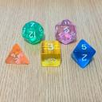 | | Andrew8128 | 1531 | Python | | 8.753 | 0 | 0 | 0 | 111 | 126 | 10.054 | 828 | 10.014 | 837 | 9.544 | 836 | 8.880 | 832 | 7.297 | 830 | 13.303 | 818 | 9.556 | 833 | 8.132 | 836 | 7.898 | 839 | 7.880 | 843 | 8.077 | 847 | 8.628 | 835 | 9.102 | 835 | 9.220 | 833 |
| 836 | | | anna22008 | 139 | Python | | 8.753 | 0 | 0 | 0 | 43 | 100 | 10.054 | 828 | 10.014 | 837 | 9.544 | 836 | 8.880 | 832 | 7.297 | 830 | 13.303 | 818 | 9.556 | 833 | 8.132 | 836 | 7.898 | 839 | 7.880 | 843 | 8.077 | 847 | 8.628 | 835 | 9.102 | 835 | 9.220 | 833 |
| 836 | | | Aploncy | 994 | Python | | 8.753 | 0 | 0 | 0 | 110 | 117 | 10.054 | 828 | 10.014 | 837 | 9.544 | 836 | 8.880 | 832 | 7.297 | 830 | 13.303 | 818 | 9.556 | 833 | 8.132 | 836 | 7.898 | 839 | 7.880 | 843 | 8.077 | 847 | 8.628 | 835 | 9.102 | 835 | 9.220 | 833 |
| 836 | | | apth | 782 | Python | | 8.753 | 0 | 0 | 0 | 42 | 46 | 10.054 | 828 | 10.014 | 837 | 9.544 | 836 | 8.880 | 832 | 7.297 | 830 | 13.303 | 818 | 9.556 | 833 | 8.132 | 836 | 7.898 | 839 | 7.880 | 843 | 8.077 | 847 | 8.628 | 835 | 9.102 | 835 | 9.220 | 833 |
| 836 | | | ariakeakatsuki | 1048 | Python | | 8.753 | 0 | 0 | 0 | 112 | 119 | 10.054 | 828 | 10.014 | 837 | 9.544 | 836 | 8.880 | 832 | 7.297 | 830 | 13.303 | 818 | 9.556 | 833 | 8.132 | 836 | 7.898 | 839 | 7.880 | 843 | 8.077 | 847 | 8.628 | 835 | 9.102 | 835 | 9.220 | 833 |
| 836 | | | Arou | 897 | Python | | 8.753 | 0 | 0 | 0 | 1932 | 1997 | 10.054 | 828 | 10.014 | 837 | 9.544 | 836 | 8.880 | 832 | 7.297 | 830 | 13.303 | 818 | 9.556 | 833 | 8.132 | 836 | 7.898 | 839 | 7.880 | 843 | 8.077 | 847 | 8.628 | 835 | 9.102 | 835 | 9.220 | 833 |
| 836 | | | Art_118 | 823 | Python | | 8.753 | 0 | 0 | 0 | 108 | 114 | 10.054 | 828 | 10.014 | 837 | 9.544 | 836 | 8.880 | 832 | 7.297 | 830 | 13.303 | 818 | 9.556 | 833 | 8.132 | 836 | 7.898 | 839 | 7.880 | 843 | 8.077 | 847 | 8.628 | 835 | 9.102 | 835 | 9.220 | 833 |
| 836 | | | ascCCY | 533 | Python | | 8.753 | 0 | 0 | 0 | 41 | 91 | 10.054 | 828 | 10.014 | 837 | 9.544 | 836 | 8.880 | 832 | 7.297 | 830 | 13.303 | 818 | 9.556 | 833 | 8.132 | 836 | 7.898 | 839 | 7.880 | 843 | 8.077 | 847 | 8.628 | 835 | 9.102 | 835 | 9.220 | 833 |
| 836 | | | ashitsunokara | 696 | Python | | 8.753 | 0 | 0 | 0 | 43 | 100 | 10.054 | 828 | 10.014 | 837 | 9.544 | 836 | 8.880 | 832 | 7.297 | 830 | 13.303 | 818 | 9.556 | 833 | 8.132 | 836 | 7.898 | 839 | 7.880 | 843 | 8.077 | 847 | 8.628 | 835 | 9.102 | 835 | 9.220 | 833 |
| 836 | | | ayyyyya | 139 | Python | | 8.753 | 0 | 0 | 0 | 43 | 111 | 10.054 | 828 | 10.014 | 837 | 9.544 | 836 | 8.880 | 832 | 7.297 | 830 | 13.303 | 818 | 9.556 | 833 | 8.132 | 836 | 7.898 | 839 | 7.880 | 843 | 8.077 | 847 | 8.628 | 835 | 9.102 | 835 | 9.220 | 833 |
| 836 | | | Azukiii | 1604 | Python | | 8.753 | 0 | 0 | 0 | 41 | 44 | 10.054 | 828 | 10.014 | 837 | 9.544 | 836 | 8.880 | 832 | 7.297 | 830 | 13.303 | 818 | 9.556 | 833 | 8.132 | 836 | 7.898 | 839 | 7.880 | 843 | 8.077 | 847 | 8.628 | 835 | 9.102 | 835 | 9.220 | 833 |
| 836 | | | Berryz_Eng | 552 | Python | | 8.753 | 0 | 0 | 0 | 110 | 116 | 10.054 | 828 | 10.014 | 837 | 9.544 | 836 | 8.880 | 832 | 7.297 | 830 | 13.303 | 818 | 9.556 | 833 | 8.132 | 836 | 7.898 | 839 | 7.880 | 843 | 8.077 | 847 | 8.628 | 835 | 9.102 | 835 | 9.220 | 833 |
| 836 | | | bigigura | 139 | Python | | 8.753 | 0 | 0 | 0 | 42 | 45 | 10.054 | 828 | 10.014 | 837 | 9.544 | 836 | 8.880 | 832 | 7.297 | 830 | 13.303 | 818 | 9.556 | 833 | 8.132 | 836 | 7.898 | 839 | 7.880 | 843 | 8.077 | 847 | 8.628 | 835 | 9.102 | 835 | 9.220 | 833 |
| 836 | | | bluehelmet | 139 | Python | | 8.753 | 0 | 0 | 0 | 111 | 134 | 10.054 | 828 | 10.014 | 837 | 9.544 | 836 | 8.880 | 832 | 7.297 | 830 | 13.303 | 818 | 9.556 | 833 | 8.132 | 836 | 7.898 | 839 | 7.880 | 843 | 8.077 | 847 | 8.628 | 835 | 9.102 | 835 | 9.220 | 833 |
| 836 | | | Cafe_j19419 | 1533 | Python | | 8.753 | 0 | 0 | 0 | 109 | 194 | 10.054 | 828 | 10.014 | 837 | 9.544 | 836 | 8.880 | 832 | 7.297 | 830 | 13.303 | 818 | 9.556 | 833 | 8.132 | 836 | 7.898 | 839 | 7.880 | 843 | 8.077 | 847 | 8.628 | 835 | 9.102 | 835 | 9.220 | 833 |
| 836 | 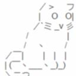 | | chfu | 703 | Python | | 8.753 | 0 | 0 | 0 | 41 | 120 | 10.054 | 828 | 10.014 | 837 | 9.544 | 836 | 8.880 | 832 | 7.297 | 830 | 13.303 | 818 | 9.556 | 833 | 8.132 | 836 | 7.898 | 839 | 7.880 | 843 | 8.077 | 847 | 8.628 | 835 | 9.102 | 835 | 9.220 | 833 |
| 836 | 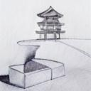 | | chihi311 | 1466 | Python | | 8.753 | 0 | 0 | 0 | 41 | 45 | 10.054 | 828 | 10.014 | 837 | 9.544 | 836 | 8.880 | 832 | 7.297 | 830 | 13.303 | 818 | 9.556 | 833 | 8.132 | 836 | 7.898 | 839 | 7.880 | 843 | 8.077 | 847 | 8.628 | 835 | 9.102 | 835 | 9.220 | 833 |
| 836 | | | chika57 | 1062 | Python | | 8.753 | 0 | 0 | 0 | 108 | 122 | 10.054 | 828 | 10.014 | 837 | 9.544 | 836 | 8.880 | 832 | 7.297 | 830 | 13.303 | 818 | 9.556 | 833 | 8.132 | 836 | 7.898 | 839 | 7.880 | 843 | 8.077 | 847 | 8.628 | 835 | 9.102 | 835 | 9.220 | 833 |
| 836 | | | chocolate_scone | 355 | Python | | 8.753 | 0 | 0 | 0 | 112 | 238 | 10.054 | 828 | 10.014 | 837 | 9.544 | 836 | 8.880 | 832 | 7.297 | 830 | 13.303 | 818 | 9.556 | 833 | 8.132 | 836 | 7.898 | 839 | 7.880 | 843 | 8.077 | 847 | 8.628 | 835 | 9.102 | 835 | 9.220 | 833 |
| 836 | | | colabT | 654 | Python | | 8.753 | 0 | 0 | 0 | 113 | 119 | 10.054 | 828 | 10.014 | 837 | 9.544 | 836 | 8.880 | 832 | 7.297 | 830 | 13.303 | 818 | 9.556 | 833 | 8.132 | 836 | 7.898 | 839 | 7.880 | 843 | 8.077 | 847 | 8.628 | 835 | 9.102 | 835 | 9.220 | 833 |
| 836 | | | cosiro | 976 | Python | | 8.753 | 0 | 0 | 0 | 41 | 63 | 10.054 | 828 | 10.014 | 837 | 9.544 | 836 | 8.880 | 832 | 7.297 | 830 | 13.303 | 818 | 9.556 | 833 | 8.132 | 836 | 7.898 | 839 | 7.880 | 843 | 8.077 | 847 | 8.628 | 835 | 9.102 | 835 | 9.220 | 833 |
| 836 | | | cowkami | 139 | Python | | 8.753 | 0 | 0 | 0 | 45 | 51 | 10.054 | 828 | 10.014 | 837 | 9.544 | 836 | 8.880 | 832 | 7.297 | 830 | 13.303 | 818 | 9.556 | 833 | 8.132 | 836 | 7.898 | 839 | 7.880 | 843 | 8.077 | 847 | 8.628 | 835 | 9.102 | 835 | 9.220 | 833 |
| 836 | 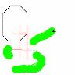 | | csharpython | 921 | Python | | 8.753 | 0 | 0 | 0 | 119 | 128 | 10.054 | 828 | 10.014 | 837 | 9.544 | 836 | 8.880 | 832 | 7.297 | 830 | 13.303 | 818 | 9.556 | 833 | 8.132 | 836 | 7.898 | 839 | 7.880 | 843 | 8.077 | 847 | 8.628 | 835 | 9.102 | 835 | 9.220 | 833 |
| 836 | | | daiki0 | 139 | Python | | 8.753 | 0 | 0 | 0 | 50 | 57 | 10.054 | 828 | 10.014 | 837 | 9.544 | 836 | 8.880 | 832 | 7.297 | 830 | 13.303 | 818 | 9.556 | 833 | 8.132 | 836 | 7.898 | 839 | 7.880 | 843 | 8.077 | 847 | 8.628 | 835 | 9.102 | 835 | 9.220 | 833 |
| 836 | | | daliuxiaoliu | 139 | Python | | 8.753 | 0 | 0 | 0 | 42 | 46 | 10.054 | 828 | 10.014 | 837 | 9.544 | 836 | 8.880 | 832 | 7.297 | 830 | 13.303 | 818 | 9.556 | 833 | 8.132 | 836 | 7.898 | 839 | 7.880 | 843 | 8.077 | 847 | 8.628 | 835 | 9.102 | 835 | 9.220 | 833 |
| 836 | | | DancingCap | 355 | Python | | 8.753 | 0 | 0 | 0 | 42 | 46 | 10.054 | 828 | 10.014 | 837 | 9.544 | 836 | 8.880 | 832 | 7.297 | 830 | 13.303 | 818 | 9.556 | 833 | 8.132 | 836 | 7.898 | 839 | 7.880 | 843 | 8.077 | 847 | 8.628 | 835 | 9.102 | 835 | 9.220 | 833 |
| 836 | | | Dareon | 912 | Python | | 8.753 | 0 | 0 | 0 | 119 | 142 | 10.054 | 828 | 10.014 | 837 | 9.544 | 836 | 8.880 | 832 | 7.297 | 830 | 13.303 | 818 | 9.556 | 833 | 8.132 | 836 | 7.898 | 839 | 7.880 | 843 | 8.077 | 847 | 8.628 | 835 | 9.102 | 835 | 9.220 | 833 |
| 836 | | | DeepThink | 139 | Python | | 8.753 | 0 | 0 | 0 | 44 | 49 | 10.054 | 828 | 10.014 | 837 | 9.544 | 836 | 8.880 | 832 | 7.297 | 830 | 13.303 | 818 | 9.556 | 833 | 8.132 | 836 | 7.898 | 839 | 7.880 | 843 | 8.077 | 847 | 8.628 | 835 | 9.102 | 835 | 9.220 | 833 |
| 836 | | | dongzirui0817 | 139 | Python | | 8.753 | 0 | 0 | 0 | 41 | 44 | 10.054 | 828 | 10.014 | 837 | 9.544 | 836 | 8.880 | 832 | 7.297 | 830 | 13.303 | 818 | 9.556 | 833 | 8.132 | 836 | 7.898 | 839 | 7.880 | 843 | 8.077 | 847 | 8.628 | 835 | 9.102 | 835 | 9.220 | 833 |
| 836 | | | dorapon931 | 906 | Python | | 8.753 | 0 | 0 | 0 | 41 | 45 | 10.054 | 828 | 10.014 | 837 | 9.544 | 836 | 8.880 | 832 | 7.297 | 830 | 13.303 | 818 | 9.556 | 833 | 8.132 | 836 | 7.898 | 839 | 7.880 | 843 | 8.077 | 847 | 8.628 | 835 | 9.102 | 835 | 9.220 | 833 |
| 836 | | | downer | 1291 | Python | | 8.753 | 0 | 0 | 0 | 111 | 117 | 10.054 | 828 | 10.014 | 837 | 9.544 | 836 | 8.880 | 832 | 7.297 | 830 | 13.303 | 818 | 9.556 | 833 | 8.132 | 836 | 7.898 | 839 | 7.880 | 843 | 8.077 | 847 | 8.628 | 835 | 9.102 | 835 | 9.220 | 833 |
| 836 | | | drycurry | 355 | Python | | 8.753 | 0 | 0 | 0 | 109 | 182 | 10.054 | 828 | 10.014 | 837 | 9.544 | 836 | 8.880 | 832 | 7.297 | 830 | 13.303 | 818 | 9.556 | 833 | 8.132 | 836 | 7.898 | 839 | 7.880 | 843 | 8.077 | 847 | 8.628 | 835 | 9.102 | 835 | 9.220 | 833 |
| 836 | | | ec30121o | 918 | Python | | 8.753 | 0 | 0 | 0 | 40 | 43 | 10.054 | 828 | 10.014 | 837 | 9.544 | 836 | 8.880 | 832 | 7.297 | 830 | 13.303 | 818 | 9.556 | 833 | 8.132 | 836 | 7.898 | 839 | 7.880 | 843 | 8.077 | 847 | 8.628 | 835 | 9.102 | 835 | 9.220 | 833 |
| 836 | | | EdibleCort | 755 | Python | | 8.753 | 0 | 0 | 0 | 43 | 104 | 10.054 | 828 | 10.014 | 837 | 9.544 | 836 | 8.880 | 832 | 7.297 | 830 | 13.303 | 818 | 9.556 | 833 | 8.132 | 836 | 7.898 | 839 | 7.880 | 843 | 8.077 | 847 | 8.628 | 835 | 9.102 | 835 | 9.220 | 833 |
| 836 | | | Eito88 | 681 | Python | | 8.753 | 0 | 0 | 0 | 44 | 47 | 10.054 | 828 | 10.014 | 837 | 9.544 | 836 | 8.880 | 832 | 7.297 | 830 | 13.303 | 818 | 9.556 | 833 | 8.132 | 836 | 7.898 | 839 | 7.880 | 843 | 8.077 | 847 | 8.628 | 835 | 9.102 | 835 | 9.220 | 833 |
| 836 | | | Ekusok | 881 | Python | | 8.753 | 0 | 0 | 0 | 113 | 120 | 10.054 | 828 | 10.014 | 837 | 9.544 | 836 | 8.880 | 832 | 7.297 | 830 | 13.303 | 818 | 9.556 | 833 | 8.132 | 836 | 7.898 | 839 | 7.880 | 843 | 8.077 | 847 | 8.628 | 835 | 9.102 | 835 | 9.220 | 833 |
| 836 | | | EndederWelt | 139 | Python | | 8.753 | 0 | 0 | 0 | 111 | 117 | 10.054 | 828 | 10.014 | 837 | 9.544 | 836 | 8.880 | 832 | 7.297 | 830 | 13.303 | 818 | 9.556 | 833 | 8.132 | 836 | 7.898 | 839 | 7.880 | 843 | 8.077 | 847 | 8.628 | 835 | 9.102 | 835 | 9.220 | 833 |
| 836 | | | Eriri2028 | 139 | Python | | 8.753 | 0 | 0 | 0 | 43 | 65 | 10.054 | 828 | 10.014 | 837 | 9.544 | 836 | 8.880 | 832 | 7.297 | 830 | 13.303 | 818 | 9.556 | 833 | 8.132 | 836 | 7.898 | 839 | 7.880 | 843 | 8.077 | 847 | 8.628 | 835 | 9.102 | 835 | 9.220 | 833 |
| 836 | | | erkhem0415 | 355 | Python | | 8.753 | 0 | 0 | 0 | 42 | 45 | 10.054 | 828 | 10.014 | 837 | 9.544 | 836 | 8.880 | 832 | 7.297 | 830 | 13.303 | 818 | 9.556 | 833 | 8.132 | 836 | 7.898 | 839 | 7.880 | 843 | 8.077 | 847 | 8.628 | 835 | 9.102 | 835 | 9.220 | 833 |
| 836 | | | ETO_leader | 684 | Python | | 8.753 | 0 | 0 | 0 | 113 | 119 | 10.054 | 828 | 10.014 | 837 | 9.544 | 836 | 8.880 | 832 | 7.297 | 830 | 13.303 | 818 | 9.556 | 833 | 8.132 | 836 | 7.898 | 839 | 7.880 | 843 | 8.077 | 847 | 8.628 | 835 | 9.102 | 835 | 9.220 | 833 |
| 836 | | | euph_math | 753 | Python | | 8.753 | 0 | 0 | 0 | 116 | 124 | 10.054 | 828 | 10.014 | 837 | 9.544 | 836 | 8.880 | 832 | 7.297 | 830 | 13.303 | 818 | 9.556 | 833 | 8.132 | 836 | 7.898 | 839 | 7.880 | 843 | 8.077 | 847 | 8.628 | 835 | 9.102 | 835 | 9.220 | 833 |
| 836 | | | Exponential_Cube | 355 | Python | | 8.753 | 0 | 0 | 0 | 113 | 239 | 10.054 | 828 | 10.014 | 837 | 9.544 | 836 | 8.880 | 832 | 7.297 | 830 | 13.303 | 818 | 9.556 | 833 | 8.132 | 836 | 7.898 | 839 | 7.880 | 843 | 8.077 | 847 | 8.628 | 835 | 9.102 | 835 | 9.220 | 833 |
| 836 | | | ferrite | 221 | Python | | 8.753 | 0 | 0 | 0 | 40 | 43 | 10.054 | 828 | 10.014 | 837 | 9.544 | 836 | 8.880 | 832 | 7.297 | 830 | 13.303 | 818 | 9.556 | 833 | 8.132 | 836 | 7.898 | 839 | 7.880 | 843 | 8.077 | 847 | 8.628 | 835 | 9.102 | 835 | 9.220 | 833 |
| 836 | | | FlowerAccepted | 593 | Python | | 8.753 | 0 | 0 | 0 | 43 | 47 | 10.054 | 828 | 10.014 | 837 | 9.544 | 836 | 8.880 | 832 | 7.297 | 830 | 13.303 | 818 | 9.556 | 833 | 8.132 | 836 | 7.898 | 839 | 7.880 | 843 | 8.077 | 847 | 8.628 | 835 | 9.102 | 835 | 9.220 | 833 |
| 836 | | | fortoobye | 264 | Java | | 8.753 | 0 | 0 | 0 | 233 | 264 | 10.054 | 828 | 10.014 | 837 | 9.544 | 836 | 8.880 | 832 | 7.297 | 830 | 13.303 | 818 | 9.556 | 833 | 8.132 | 836 | 7.898 | 839 | 7.880 | 843 | 8.077 | 847 | 8.628 | 835 | 9.102 | 835 | 9.220 | 833 |
| 836 | | | friedrice0 | 830 | Python | | 8.753 | 0 | 0 | 0 | 42 | 98 | 10.054 | 828 | 10.014 | 837 | 9.544 | 836 | 8.880 | 832 | 7.297 | 830 | 13.303 | 818 | 9.556 | 833 | 8.132 | 836 | 7.898 | 839 | 7.880 | 843 | 8.077 | 847 | 8.628 | 835 | 9.102 | 835 | 9.220 | 833 |
| 836 | | | froriver | 1153 | Python | | 8.753 | 0 | 0 | 0 | 138 | 147 | 10.054 | 828 | 10.014 | 837 | 9.544 | 836 | 8.880 | 832 | 7.297 | 830 | 13.303 | 818 | 9.556 | 833 | 8.132 | 836 | 7.898 | 839 | 7.880 | 843 | 8.077 | 847 | 8.628 | 835 | 9.102 | 835 | 9.220 | 833 |
| 836 | | | futamegawa | 1428 | Python | | 8.753 | 0 | 0 | 0 | 118 | 128 | 10.054 | 828 | 10.014 | 837 | 9.544 | 836 | 8.880 | 832 | 7.297 | 830 | 13.303 | 818 | 9.556 | 833 | 8.132 | 836 | 7.898 | 839 | 7.880 | 843 | 8.077 | 847 | 8.628 | 835 | 9.102 | 835 | 9.220 | 833 |
| 836 | | | fys | 139 | Python | | 8.753 | 0 | 0 | 0 | 42 | 46 | 10.054 | 828 | 10.014 | 837 | 9.544 | 836 | 8.880 | 832 | 7.297 | 830 | 13.303 | 818 | 9.556 | 833 | 8.132 | 836 | 7.898 | 839 | 7.880 | 843 | 8.077 | 847 | 8.628 | 835 | 9.102 | 835 | 9.220 | 833 |
| 836 | | | GaLLium31 | 520 | Python | | 8.753 | 0 | 0 | 0 | 110 | 193 | 10.054 | 828 | 10.014 | 837 | 9.544 | 836 | 8.880 | 832 | 7.297 | 830 | 13.303 | 818 | 9.556 | 833 | 8.132 | 836 | 7.898 | 839 | 7.880 | 843 | 8.077 | 847 | 8.628 | 835 | 9.102 | 835 | 9.220 | 833 |
| 836 | | | ganechama | 1219 | Python | | 8.753 | 0 | 0 | 0 | 42 | 46 | 10.054 | 828 | 10.014 | 837 | 9.544 | 836 | 8.880 | 832 | 7.297 | 830 | 13.303 | 818 | 9.556 | 833 | 8.132 | 836 | 7.898 | 839 | 7.880 | 843 | 8.077 | 847 | 8.628 | 835 | 9.102 | 835 | 9.220 | 833 |
| 836 | | | gengen16 | 254 | Python | | 8.753 | 0 | 0 | 0 | 46 | 105 | 10.054 | 828 | 10.014 | 837 | 9.544 | 836 | 8.880 | 832 | 7.297 | 830 | 13.303 | 818 | 9.556 | 833 | 8.132 | 836 | 7.898 | 839 | 7.880 | 843 | 8.077 | 847 | 8.628 | 835 | 9.102 | 835 | 9.220 | 833 |
| 836 | | | gengorou | 355 | Python | | 8.753 | 0 | 0 | 0 | 109 | 115 | 10.054 | 828 | 10.014 | 837 | 9.544 | 836 | 8.880 | 832 | 7.297 | 830 | 13.303 | 818 | 9.556 | 833 | 8.132 | 836 | 7.898 | 839 | 7.880 | 843 | 8.077 | 847 | 8.628 | 835 | 9.102 | 835 | 9.220 | 833 |
| 836 | | | gerira | 574 | Python | | 8.753 | 0 | 0 | 0 | 44 | 115 | 10.054 | 828 | 10.014 | 837 | 9.544 | 836 | 8.880 | 832 | 7.297 | 830 | 13.303 | 818 | 9.556 | 833 | 8.132 | 836 | 7.898 | 839 | 7.880 | 843 | 8.077 | 847 | 8.628 | 835 | 9.102 | 835 | 9.220 | 833 |
| 836 | | | geshi_crep23 | 780 | Python | | 8.753 | 0 | 0 | 0 | 44 | 143 | 10.054 | 828 | 10.014 | 837 | 9.544 | 836 | 8.880 | 832 | 7.297 | 830 | 13.303 | 818 | 9.556 | 833 | 8.132 | 836 | 7.898 | 839 | 7.880 | 843 | 8.077 | 847 | 8.628 | 835 | 9.102 | 835 | 9.220 | 833 |
| 836 | | | gohantadetai | 962 | Python | | 8.753 | 0 | 0 | 0 | 40 | 44 | 10.054 | 828 | 10.014 | 837 | 9.544 | 836 | 8.880 | 832 | 7.297 | 830 | 13.303 | 818 | 9.556 | 833 | 8.132 | 836 | 7.898 | 839 | 7.880 | 843 | 8.077 | 847 | 8.628 | 835 | 9.102 | 835 | 9.220 | 833 |
| 836 |  | | gojira_ku | 1627 | Python | | 8.753 | 0 | 0 | 0 | 46 | 96 | 10.054 | 828 | 10.014 | 837 | 9.544 | 836 | 8.880 | 832 | 7.297 | 830 | 13.303 | 818 | 9.556 | 833 | 8.132 | 836 | 7.898 | 839 | 7.880 | 843 | 8.077 | 847 | 8.628 | 835 | 9.102 | 835 | 9.220 | 833 |
| 836 | | | guneguneneguse | 1232 | Python | | 8.753 | 0 | 0 | 0 | 116 | 175 | 10.054 | 828 | 10.014 | 837 | 9.544 | 836 | 8.880 | 832 | 7.297 | 830 | 13.303 | 818 | 9.556 | 833 | 8.132 | 836 | 7.898 | 839 | 7.880 | 843 | 8.077 | 847 | 8.628 | 835 | 9.102 | 835 | 9.220 | 833 |
| 836 | | | happyfishsh | 217 | Python | | 8.753 | 0 | 0 | 0 | 42 | 45 | 10.054 | 828 | 10.014 | 837 | 9.544 | 836 | 8.880 | 832 | 7.297 | 830 | 13.303 | 818 | 9.556 | 833 | 8.132 | 836 | 7.898 | 839 | 7.880 | 843 | 8.077 | 847 | 8.628 | 835 | 9.102 | 835 | 9.220 | 833 |
| 836 | | | Haru_mb | 777 | Python | | 8.753 | 0 | 0 | 0 | 118 | 129 | 10.054 | 828 | 10.014 | 837 | 9.544 | 836 | 8.880 | 832 | 7.297 | 830 | 13.303 | 818 | 9.556 | 833 | 8.132 | 836 | 7.898 | 839 | 7.880 | 843 | 8.077 | 847 | 8.628 | 835 | 9.102 | 835 | 9.220 | 833 |
| 836 | | | Harui | 833 | Python | | 8.753 | 0 | 0 | 0 | 43 | 47 | 10.054 | 828 | 10.014 | 837 | 9.544 | 836 | 8.880 | 832 | 7.297 | 830 | 13.303 | 818 | 9.556 | 833 | 8.132 | 836 | 7.898 | 839 | 7.880 | 843 | 8.077 | 847 | 8.628 | 835 | 9.102 | 835 | 9.220 | 833 |
| 836 | | | hassybirobiro | 1128 | Python | | 8.753 | 0 | 0 | 0 | 118 | 126 | 10.054 | 828 | 10.014 | 837 | 9.544 | 836 | 8.880 | 832 | 7.297 | 830 | 13.303 | 818 | 9.556 | 833 | 8.132 | 836 | 7.898 | 839 | 7.880 | 843 | 8.077 | 847 | 8.628 | 835 | 9.102 | 835 | 9.220 | 833 |
| 836 | | | Hat0_ | 1012 | Python | | 8.753 | 0 | 0 | 0 | 40 | 44 | 10.054 | 828 | 10.014 | 837 | 9.544 | 836 | 8.880 | 832 | 7.297 | 830 | 13.303 | 818 | 9.556 | 833 | 8.132 | 836 | 7.898 | 839 | 7.880 | 843 | 8.077 | 847 | 8.628 | 835 | 9.102 | 835 | 9.220 | 833 |
| 836 | | | Hatayama | 533 | Python | | 8.753 | 0 | 0 | 0 | 41 | 45 | 10.054 | 828 | 10.014 | 837 | 9.544 | 836 | 8.880 | 832 | 7.297 | 830 | 13.303 | 818 | 9.556 | 833 | 8.132 | 836 | 7.898 | 839 | 7.880 | 843 | 8.077 | 847 | 8.628 | 835 | 9.102 | 835 | 9.220 | 833 |
| 836 | | | heyongxing | 660 | Python | | 8.753 | 0 | 0 | 0 | 40 | 44 | 10.054 | 828 | 10.014 | 837 | 9.544 | 836 | 8.880 | 832 | 7.297 | 830 | 13.303 | 818 | 9.556 | 833 | 8.132 | 836 | 7.898 | 839 | 7.880 | 843 | 8.077 | 847 | 8.628 | 835 | 9.102 | 835 | 9.220 | 833 |
| 836 | | | hidehico | 1133 | Python | | 8.753 | 0 | 0 | 0 | 109 | 184 | 10.054 | 828 | 10.014 | 837 | 9.544 | 836 | 8.880 | 832 | 7.297 | 830 | 13.303 | 818 | 9.556 | 833 | 8.132 | 836 | 7.898 | 839 | 7.880 | 843 | 8.077 | 847 | 8.628 | 835 | 9.102 | 835 | 9.220 | 833 |
| 836 | | | hisui527 | 552 | Python | | 8.753 | 0 | 0 | 0 | 109 | 116 | 10.054 | 828 | 10.014 | 837 | 9.544 | 836 | 8.880 | 832 | 7.297 | 830 | 13.303 | 818 | 9.556 | 833 | 8.132 | 836 | 7.898 | 839 | 7.880 | 843 | 8.077 | 847 | 8.628 | 835 | 9.102 | 835 | 9.220 | 833 |
| 836 | 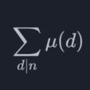 | | HShiDianLu | 355 | Python | | 8.753 | 0 | 0 | 0 | 41 | 44 | 10.054 | 828 | 10.014 | 837 | 9.544 | 836 | 8.880 | 832 | 7.297 | 830 | 13.303 | 818 | 9.556 | 833 | 8.132 | 836 | 7.898 | 839 | 7.880 | 843 | 8.077 | 847 | 8.628 | 835 | 9.102 | 835 | 9.220 | 833 |
| 836 | | | i_am_nb_coder | 679 | Python | | 8.753 | 0 | 0 | 0 | 42 | 46 | 10.054 | 828 | 10.014 | 837 | 9.544 | 836 | 8.880 | 832 | 7.297 | 830 | 13.303 | 818 | 9.556 | 833 | 8.132 | 836 | 7.898 | 839 | 7.880 | 843 | 8.077 | 847 | 8.628 | 835 | 9.102 | 835 | 9.220 | 833 |
| 836 | | | igeee | 1618 | Python | | 8.753 | 0 | 0 | 0 | 41 | 59 | 10.054 | 828 | 10.014 | 837 | 9.544 | 836 | 8.880 | 832 | 7.297 | 830 | 13.303 | 818 | 9.556 | 833 | 8.132 | 836 | 7.898 | 839 | 7.880 | 843 | 8.077 | 847 | 8.628 | 835 | 9.102 | 835 | 9.220 | 833 |
| 836 | | | Inokun_ | 905 | Python | | 8.753 | 0 | 0 | 0 | 117 | 123 | 10.054 | 828 | 10.014 | 837 | 9.544 | 836 | 8.880 | 832 | 7.297 | 830 | 13.303 | 818 | 9.556 | 833 | 8.132 | 836 | 7.898 | 839 | 7.880 | 843 | 8.077 | 847 | 8.628 | 835 | 9.102 | 835 | 9.220 | 833 |
| 836 | | | inukoku1 | 707 | Python | | 8.753 | 0 | 0 | 0 | 118 | 126 | 10.054 | 828 | 10.014 | 837 | 9.544 | 836 | 8.880 | 832 | 7.297 | 830 | 13.303 | 818 | 9.556 | 833 | 8.132 | 836 | 7.898 | 839 | 7.880 | 843 | 8.077 | 847 | 8.628 | 835 | 9.102 | 835 | 9.220 | 833 |
| 836 | | | IrishRickey | 139 | Python | | 8.753 | 0 | 0 | 0 | 119 | 233 | 10.054 | 828 | 10.014 | 837 | 9.544 | 836 | 8.880 | 832 | 7.297 | 830 | 13.303 | 818 | 9.556 | 833 | 8.132 | 836 | 7.898 | 839 | 7.880 | 843 | 8.077 | 847 | 8.628 | 835 | 9.102 | 835 | 9.220 | 833 |
| 836 | | | Jadyn0915 | 534 | Python | | 8.753 | 0 | 0 | 0 | 42 | 75 | 10.054 | 828 | 10.014 | 837 | 9.544 | 836 | 8.880 | 832 | 7.297 | 830 | 13.303 | 818 | 9.556 | 833 | 8.132 | 836 | 7.898 | 839 | 7.880 | 843 | 8.077 | 847 | 8.628 | 835 | 9.102 | 835 | 9.220 | 833 |
| 836 | | | JAGDISHEVEREST | 139 | Java | | 8.753 | 0 | 0 | 0 | 244 | 427 | 10.054 | 828 | 10.014 | 837 | 9.544 | 836 | 8.880 | 832 | 7.297 | 830 | 13.303 | 818 | 9.556 | 833 | 8.132 | 836 | 7.898 | 839 | 7.880 | 843 | 8.077 | 847 | 8.628 | 835 | 9.102 | 835 | 9.220 | 833 |
| 836 | | | Japan_is_superSB | 430 | Python | | 8.753 | 0 | 0 | 0 | 43 | 46 | 10.054 | 828 | 10.014 | 837 | 9.544 | 836 | 8.880 | 832 | 7.297 | 830 | 13.303 | 818 | 9.556 | 833 | 8.132 | 836 | 7.898 | 839 | 7.880 | 843 | 8.077 | 847 | 8.628 | 835 | 9.102 | 835 | 9.220 | 833 |
| 836 | | | JerryMao | 502 | Python | | 8.753 | 0 | 0 | 0 | 41 | 44 | 10.054 | 828 | 10.014 | 837 | 9.544 | 836 | 8.880 | 832 | 7.297 | 830 | 13.303 | 818 | 9.556 | 833 | 8.132 | 836 | 7.898 | 839 | 7.880 | 843 | 8.077 | 847 | 8.628 | 835 | 9.102 | 835 | 9.220 | 833 |
| 836 | | | jh0105 | 1174 | Python | | 8.753 | 0 | 0 | 0 | 43 | 56 | 10.054 | 828 | 10.014 | 837 | 9.544 | 836 | 8.880 | 832 | 7.297 | 830 | 13.303 | 818 | 9.556 | 833 | 8.132 | 836 | 7.898 | 839 | 7.880 | 843 | 8.077 | 847 | 8.628 | 835 | 9.102 | 835 | 9.220 | 833 |
| 836 | | | jiaobaba | 139 | Python | | 8.753 | 0 | 0 | 0 | 40 | 44 | 10.054 | 828 | 10.014 | 837 | 9.544 | 836 | 8.880 | 832 | 7.297 | 830 | 13.303 | 818 | 9.556 | 833 | 8.132 | 836 | 7.898 | 839 | 7.880 | 843 | 8.077 | 847 | 8.628 | 835 | 9.102 | 835 | 9.220 | 833 |
| 836 | | | Joshatr | 680 | Python | | 8.753 | 0 | 0 | 0 | 42 | 115 | 10.054 | 828 | 10.014 | 837 | 9.544 | 836 | 8.880 | 832 | 7.297 | 830 | 13.303 | 818 | 9.556 | 833 | 8.132 | 836 | 7.898 | 839 | 7.880 | 843 | 8.077 | 847 | 8.628 | 835 | 9.102 | 835 | 9.220 | 833 |
| 836 | | | Jsoreike29 | 355 | Python | | 8.753 | 0 | 0 | 0 | 112 | 229 | 10.054 | 828 | 10.014 | 837 | 9.544 | 836 | 8.880 | 832 | 7.297 | 830 | 13.303 | 818 | 9.556 | 833 | 8.132 | 836 | 7.898 | 839 | 7.880 | 843 | 8.077 | 847 | 8.628 | 835 | 9.102 | 835 | 9.220 | 833 |
| 836 | | | kaedchan | 139 | Python | | 8.753 | 0 | 0 | 0 | 49 | 53 | 10.054 | 828 | 10.014 | 837 | 9.544 | 836 | 8.880 | 832 | 7.297 | 830 | 13.303 | 818 | 9.556 | 833 | 8.132 | 836 | 7.898 | 839 | 7.880 | 843 | 8.077 | 847 | 8.628 | 835 | 9.102 | 835 | 9.220 | 833 |
| 836 | | | kaiji1225 | 139 | Python | | 8.753 | 0 | 0 | 0 | 42 | 46 | 10.054 | 828 | 10.014 | 837 | 9.544 | 836 | 8.880 | 832 | 7.297 | 830 | 13.303 | 818 | 9.556 | 833 | 8.132 | 836 | 7.898 | 839 | 7.880 | 843 | 8.077 | 847 | 8.628 | 835 | 9.102 | 835 | 9.220 | 833 |
| 836 | | | kaito3506 | 139 | Python | | 8.753 | 0 | 0 | 0 | 43 | 47 | 10.054 | 828 | 10.014 | 837 | 9.544 | 836 | 8.880 | 832 | 7.297 | 830 | 13.303 | 818 | 9.556 | 833 | 8.132 | 836 | 7.898 | 839 | 7.880 | 843 | 8.077 | 847 | 8.628 | 835 | 9.102 | 835 | 9.220 | 833 |
| 836 | | | KanTanGunGun | 423 | Python | | 8.753 | 0 | 0 | 0 | 42 | 46 | 10.054 | 828 | 10.014 | 837 | 9.544 | 836 | 8.880 | 832 | 7.297 | 830 | 13.303 | 818 | 9.556 | 833 | 8.132 | 836 | 7.898 | 839 | 7.880 | 843 | 8.077 | 847 | 8.628 | 835 | 9.102 | 835 | 9.220 | 833 |
| 836 | | | karakara_taishi | 816 | Python | | 8.753 | 0 | 0 | 0 | 43 | 47 | 10.054 | 828 | 10.014 | 837 | 9.544 | 836 | 8.880 | 832 | 7.297 | 830 | 13.303 | 818 | 9.556 | 833 | 8.132 | 836 | 7.898 | 839 | 7.880 | 843 | 8.077 | 847 | 8.628 | 835 | 9.102 | 835 | 9.220 | 833 |
| 836 | | | KAVIYAS | 139 | Java | | 8.753 | 0 | 0 | 0 | 243 | 462 | 10.054 | 828 | 10.014 | 837 | 9.544 | 836 | 8.880 | 832 | 7.297 | 830 | 13.303 | 818 | 9.556 | 833 | 8.132 | 836 | 7.898 | 839 | 7.880 | 843 | 8.077 | 847 | 8.628 | 835 | 9.102 | 835 | 9.220 | 833 |
| 836 | 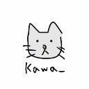 | | Kawa_ | 769 | Python | | 8.753 | 0 | 0 | 0 | 119 | 135 | 10.054 | 828 | 10.014 | 837 | 9.544 | 836 | 8.880 | 832 | 7.297 | 830 | 13.303 | 818 | 9.556 | 833 | 8.132 | 836 | 7.898 | 839 | 7.880 | 843 | 8.077 | 847 | 8.628 | 835 | 9.102 | 835 | 9.220 | 833 |
| 836 | | | kinako613 | 533 | Python | | 8.753 | 0 | 0 | 0 | 122 | 128 | 10.054 | 828 | 10.014 | 837 | 9.544 | 836 | 8.880 | 832 | 7.297 | 830 | 13.303 | 818 | 9.556 | 833 | 8.132 | 836 | 7.898 | 839 | 7.880 | 843 | 8.077 | 847 | 8.628 | 835 | 9.102 | 835 | 9.220 | 833 |
| 836 | | | korokke3 | 766 | Python | | 8.753 | 0 | 0 | 0 | 110 | 117 | 10.054 | 828 | 10.014 | 837 | 9.544 | 836 | 8.880 | 832 | 7.297 | 830 | 13.303 | 818 | 9.556 | 833 | 8.132 | 836 | 7.898 | 839 | 7.880 | 843 | 8.077 | 847 | 8.628 | 835 | 9.102 | 835 | 9.220 | 833 |
| 836 | 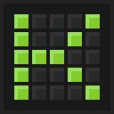 | | Kosei0506 | 683 | Python | | 8.753 | 0 | 0 | 0 | 115 | 122 | 10.054 | 828 | 10.014 | 837 | 9.544 | 836 | 8.880 | 832 | 7.297 | 830 | 13.303 | 818 | 9.556 | 833 | 8.132 | 836 | 7.898 | 839 | 7.880 | 843 | 8.077 | 847 | 8.628 | 835 | 9.102 | 835 | 9.220 | 833 |
| 836 | | | kotaron1010 | 661 | Python | | 8.753 | 0 | 0 | 0 | 41 | 44 | 10.054 | 828 | 10.014 | 837 | 9.544 | 836 | 8.880 | 832 | 7.297 | 830 | 13.303 | 818 | 9.556 | 833 | 8.132 | 836 | 7.898 | 839 | 7.880 | 843 | 8.077 | 847 | 8.628 | 835 | 9.102 | 835 | 9.220 | 833 |
| 836 | | | kotatutako | 249 | Python | | 8.753 | 0 | 0 | 0 | 41 | 45 | 10.054 | 828 | 10.014 | 837 | 9.544 | 836 | 8.880 | 832 | 7.297 | 830 | 13.303 | 818 | 9.556 | 833 | 8.132 | 836 | 7.898 | 839 | 7.880 | 843 | 8.077 | 847 | 8.628 | 835 | 9.102 | 835 | 9.220 | 833 |
| 836 | | | KowshikaG | 212 | Python | | 8.753 | 0 | 0 | 0 | 111 | 123 | 10.054 | 828 | 10.014 | 837 | 9.544 | 836 | 8.880 | 832 | 7.297 | 830 | 13.303 | 818 | 9.556 | 833 | 8.132 | 836 | 7.898 | 839 | 7.880 | 843 | 8.077 | 847 | 8.628 | 835 | 9.102 | 835 | 9.220 | 833 |
| 836 | | | Leozhang_2012 | 725 | Python | | 8.753 | 0 | 0 | 0 | 42 | 103 | 10.054 | 828 | 10.014 | 837 | 9.544 | 836 | 8.880 | 832 | 7.297 | 830 | 13.303 | 818 | 9.556 | 833 | 8.132 | 836 | 7.898 | 839 | 7.880 | 843 | 8.077 | 847 | 8.628 | 835 | 9.102 | 835 | 9.220 | 833 |
| 836 | | | limolin123 | 533 | Python | | 8.753 | 0 | 0 | 0 | 44 | 107 | 10.054 | 828 | 10.014 | 837 | 9.544 | 836 | 8.880 | 832 | 7.297 | 830 | 13.303 | 818 | 9.556 | 833 | 8.132 | 836 | 7.898 | 839 | 7.880 | 843 | 8.077 | 847 | 8.628 | 835 | 9.102 | 835 | 9.220 | 833 |
| 836 | | | liruiyao | 355 | Python | | 8.753 | 0 | 0 | 0 | 41 | 84 | 10.054 | 828 | 10.014 | 837 | 9.544 | 836 | 8.880 | 832 | 7.297 | 830 | 13.303 | 818 | 9.556 | 833 | 8.132 | 836 | 7.898 | 839 | 7.880 | 843 | 8.077 | 847 | 8.628 | 835 | 9.102 | 835 | 9.220 | 833 |
| 836 | | | littletree | 579 | Python | | 8.753 | 0 | 0 | 0 | 113 | 232 | 10.054 | 828 | 10.014 | 837 | 9.544 | 836 | 8.880 | 832 | 7.297 | 830 | 13.303 | 818 | 9.556 | 833 | 8.132 | 836 | 7.898 | 839 | 7.880 | 843 | 8.077 | 847 | 8.628 | 835 | 9.102 | 835 | 9.220 | 833 |
| 836 | 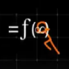 | | litttle_stickman | 619 | Python | | 8.753 | 0 | 0 | 0 | 41 | 80 | 10.054 | 828 | 10.014 | 837 | 9.544 | 836 | 8.880 | 832 | 7.297 | 830 | 13.303 | 818 | 9.556 | 833 | 8.132 | 836 | 7.898 | 839 | 7.880 | 843 | 8.077 | 847 | 8.628 | 835 | 9.102 | 835 | 9.220 | 833 |
| 836 | | | liuenci | 139 | Python | | 8.753 | 0 | 0 | 0 | 45 | 52 | 10.054 | 828 | 10.014 | 837 | 9.544 | 836 | 8.880 | 832 | 7.297 | 830 | 13.303 | 818 | 9.556 | 833 | 8.132 | 836 | 7.898 | 839 | 7.880 | 843 | 8.077 | 847 | 8.628 | 835 | 9.102 | 835 | 9.220 | 833 |
| 836 | | | liuzhoujiong | 355 | Python | | 8.753 | 0 | 0 | 0 | 42 | 48 | 10.054 | 828 | 10.014 | 837 | 9.544 | 836 | 8.880 | 832 | 7.297 | 830 | 13.303 | 818 | 9.556 | 833 | 8.132 | 836 | 7.898 | 839 | 7.880 | 843 | 8.077 | 847 | 8.628 | 835 | 9.102 | 835 | 9.220 | 833 |
| 836 | | | Lodt204 | 565 | Python | | 8.753 | 0 | 0 | 0 | 110 | 117 | 10.054 | 828 | 10.014 | 837 | 9.544 | 836 | 8.880 | 832 | 7.297 | 830 | 13.303 | 818 | 9.556 | 833 | 8.132 | 836 | 7.898 | 839 | 7.880 | 843 | 8.077 | 847 | 8.628 | 835 | 9.102 | 835 | 9.220 | 833 |
| 836 | | | lucaski2 | 139 | Python | | 8.753 | 0 | 0 | 0 | 108 | 146 | 10.054 | 828 | 10.014 | 837 | 9.544 | 836 | 8.880 | 832 | 7.297 | 830 | 13.303 | 818 | 9.556 | 833 | 8.132 | 836 | 7.898 | 839 | 7.880 | 843 | 8.077 | 847 | 8.628 | 835 | 9.102 | 835 | 9.220 | 833 |
| 836 | | | lyako6150 | 534 | Python | | 8.753 | 0 | 0 | 0 | 43 | 54 | 10.054 | 828 | 10.014 | 837 | 9.544 | 836 | 8.880 | 832 | 7.297 | 830 | 13.303 | 818 | 9.556 | 833 | 8.132 | 836 | 7.898 | 839 | 7.880 | 843 | 8.077 | 847 | 8.628 | 835 | 9.102 | 835 | 9.220 | 833 |
| 836 | | | machinchin | 496 | Python | | 8.753 | 0 | 0 | 0 | 115 | 128 | 10.054 | 828 | 10.014 | 837 | 9.544 | 836 | 8.880 | 832 | 7.297 | 830 | 13.303 | 818 | 9.556 | 833 | 8.132 | 836 | 7.898 | 839 | 7.880 | 843 | 8.077 | 847 | 8.628 | 835 | 9.102 | 835 | 9.220 | 833 |
| 836 | | | Many712 | 821 | Python | | 8.753 | 0 | 0 | 0 | 112 | 192 | 10.054 | 828 | 10.014 | 837 | 9.544 | 836 | 8.880 | 832 | 7.297 | 830 | 13.303 | 818 | 9.556 | 833 | 8.132 | 836 | 7.898 | 839 | 7.880 | 843 | 8.077 | 847 | 8.628 | 835 | 9.102 | 835 | 9.220 | 833 |
| 836 | | | mao1756 | 481 | Python | | 8.753 | 0 | 0 | 0 | 110 | 188 | 10.054 | 828 | 10.014 | 837 | 9.544 | 836 | 8.880 | 832 | 7.297 | 830 | 13.303 | 818 | 9.556 | 833 | 8.132 | 836 | 7.898 | 839 | 7.880 | 843 | 8.077 | 847 | 8.628 | 835 | 9.102 | 835 | 9.220 | 833 |
| 836 | | | Mdsc286_1 | 1355 | Python | | 8.753 | 0 | 0 | 0 | 112 | 203 | 10.054 | 828 | 10.014 | 837 | 9.544 | 836 | 8.880 | 832 | 7.297 | 830 | 13.303 | 818 | 9.556 | 833 | 8.132 | 836 | 7.898 | 839 | 7.880 | 843 | 8.077 | 847 | 8.628 | 835 | 9.102 | 835 | 9.220 | 833 |
| 836 | | | meatmeet | 1065 | Python | | 8.753 | 0 | 0 | 0 | 117 | 123 | 10.054 | 828 | 10.014 | 837 | 9.544 | 836 | 8.880 | 832 | 7.297 | 830 | 13.303 | 818 | 9.556 | 833 | 8.132 | 836 | 7.898 | 839 | 7.880 | 843 | 8.077 | 847 | 8.628 | 835 | 9.102 | 835 | 9.220 | 833 |
| 836 | | | Merge_all | 139 | Python | | 8.753 | 0 | 0 | 0 | 41 | 112 | 10.054 | 828 | 10.014 | 837 | 9.544 | 836 | 8.880 | 832 | 7.297 | 830 | 13.303 | 818 | 9.556 | 833 | 8.132 | 836 | 7.898 | 839 | 7.880 | 843 | 8.077 | 847 | 8.628 | 835 | 9.102 | 835 | 9.220 | 833 |
| 836 | | | michikusamichiya | 139 | Python | | 8.753 | 0 | 0 | 0 | 121 | 189 | 10.054 | 828 | 10.014 | 837 | 9.544 | 836 | 8.880 | 832 | 7.297 | 830 | 13.303 | 818 | 9.556 | 833 | 8.132 | 836 | 7.898 | 839 | 7.880 | 843 | 8.077 | 847 | 8.628 | 835 | 9.102 | 835 | 9.220 | 833 |
| 836 | | | miho4 | 1263 | Python | | 8.753 | 0 | 0 | 0 | 110 | 183 | 10.054 | 828 | 10.014 | 837 | 9.544 | 836 | 8.880 | 832 | 7.297 | 830 | 13.303 | 818 | 9.556 | 833 | 8.132 | 836 | 7.898 | 839 | 7.880 | 843 | 8.077 | 847 | 8.628 | 835 | 9.102 | 835 | 9.220 | 833 |
| 836 | | | Mikan04y | 1341 | Python | | 8.753 | 0 | 0 | 0 | 41 | 55 | 10.054 | 828 | 10.014 | 837 | 9.544 | 836 | 8.880 | 832 | 7.297 | 830 | 13.303 | 818 | 9.556 | 833 | 8.132 | 836 | 7.898 | 839 | 7.880 | 843 | 8.077 | 847 | 8.628 | 835 | 9.102 | 835 | 9.220 | 833 |
| 836 | | | mimirot | 922 | Python | | 8.753 | 0 | 0 | 0 | 43 | 47 | 10.054 | 828 | 10.014 | 837 | 9.544 | 836 | 8.880 | 832 | 7.297 | 830 | 13.303 | 818 | 9.556 | 833 | 8.132 | 836 | 7.898 | 839 | 7.880 | 843 | 8.077 | 847 | 8.628 | 835 | 9.102 | 835 | 9.220 | 833 |
| 836 | | | misaki_ | 572 | Python | | 8.753 | 0 | 0 | 0 | 111 | 117 | 10.054 | 828 | 10.014 | 837 | 9.544 | 836 | 8.880 | 832 | 7.297 | 830 | 13.303 | 818 | 9.556 | 833 | 8.132 | 836 | 7.898 | 839 | 7.880 | 843 | 8.077 | 847 | 8.628 | 835 | 9.102 | 835 | 9.220 | 833 |
| 836 | | | mm1214_zyj | 139 | Python | | 8.753 | 0 | 0 | 0 | 114 | 121 | 10.054 | 828 | 10.014 | 837 | 9.544 | 836 | 8.880 | 832 | 7.297 | 830 | 13.303 | 818 | 9.556 | 833 | 8.132 | 836 | 7.898 | 839 | 7.880 | 843 | 8.077 | 847 | 8.628 | 835 | 9.102 | 835 | 9.220 | 833 |
| 836 | | | MrWuzx | 638 | Python | | 8.753 | 0 | 0 | 0 | 118 | 128 | 10.054 | 828 | 10.014 | 837 | 9.544 | 836 | 8.880 | 832 | 7.297 | 830 | 13.303 | 818 | 9.556 | 833 | 8.132 | 836 | 7.898 | 839 | 7.880 | 843 | 8.077 | 847 | 8.628 | 835 | 9.102 | 835 | 9.220 | 833 |
| 836 | | | N_hara | 1623 | Python | | 8.753 | 0 | 0 | 0 | 109 | 115 | 10.054 | 828 | 10.014 | 837 | 9.544 | 836 | 8.880 | 832 | 7.297 | 830 | 13.303 | 818 | 9.556 | 833 | 8.132 | 836 | 7.898 | 839 | 7.880 | 843 | 8.077 | 847 | 8.628 | 835 | 9.102 | 835 | 9.220 | 833 |
| 836 | | | nakamura_mania | 139 | Python | | 8.753 | 0 | 0 | 0 | 42 | 95 | 10.054 | 828 | 10.014 | 837 | 9.544 | 836 | 8.880 | 832 | 7.297 | 830 | 13.303 | 818 | 9.556 | 833 | 8.132 | 836 | 7.898 | 839 | 7.880 | 843 | 8.077 | 847 | 8.628 | 835 | 9.102 | 835 | 9.220 | 833 |
| 836 | | | Nama53 | 719 | Python | | 8.753 | 0 | 0 | 0 | 43 | 49 | 10.054 | 828 | 10.014 | 837 | 9.544 | 836 | 8.880 | 832 | 7.297 | 830 | 13.303 | 818 | 9.556 | 833 | 8.132 | 836 | 7.898 | 839 | 7.880 | 843 | 8.077 | 847 | 8.628 | 835 | 9.102 | 835 | 9.220 | 833 |
| 836 | | | neko10 | 722 | Python | | 8.753 | 0 | 0 | 0 | 113 | 120 | 10.054 | 828 | 10.014 | 837 | 9.544 | 836 | 8.880 | 832 | 7.297 | 830 | 13.303 | 818 | 9.556 | 833 | 8.132 | 836 | 7.898 | 839 | 7.880 | 843 | 8.077 | 847 | 8.628 | 835 | 9.102 | 835 | 9.220 | 833 |
| 836 | | | nekooooooo | 553 | Python | | 8.753 | 0 | 0 | 0 | 42 | 46 | 10.054 | 828 | 10.014 | 837 | 9.544 | 836 | 8.880 | 832 | 7.297 | 830 | 13.303 | 818 | 9.556 | 833 | 8.132 | 836 | 7.898 | 839 | 7.880 | 843 | 8.077 | 847 | 8.628 | 835 | 9.102 | 835 | 9.220 | 833 |
| 836 | | | nirure | 660 | Python | | 8.753 | 0 | 0 | 0 | 43 | 46 | 10.054 | 828 | 10.014 | 837 | 9.544 | 836 | 8.880 | 832 | 7.297 | 830 | 13.303 | 818 | 9.556 | 833 | 8.132 | 836 | 7.898 | 839 | 7.880 | 843 | 8.077 | 847 | 8.628 | 835 | 9.102 | 835 | 9.220 | 833 |
| 836 | | | NKOJ | 267 | Python | | 8.753 | 0 | 0 | 0 | 41 | 55 | 10.054 | 828 | 10.014 | 837 | 9.544 | 836 | 8.880 | 832 | 7.297 | 830 | 13.303 | 818 | 9.556 | 833 | 8.132 | 836 | 7.898 | 839 | 7.880 | 843 | 8.077 | 847 | 8.628 | 835 | 9.102 | 835 | 9.220 | 833 |
| 836 | | | NKOJ_bot | 139 | Python | | 8.753 | 0 | 0 | 0 | 44 | 47 | 10.054 | 828 | 10.014 | 837 | 9.544 | 836 | 8.880 | 832 | 7.297 | 830 | 13.303 | 818 | 9.556 | 833 | 8.132 | 836 | 7.898 | 839 | 7.880 | 843 | 8.077 | 847 | 8.628 | 835 | 9.102 | 835 | 9.220 | 833 |
| 836 | | | nkrqlhk | 139 | Python | | 8.753 | 0 | 0 | 0 | 41 | 139 | 10.054 | 828 | 10.014 | 837 | 9.544 | 836 | 8.880 | 832 | 7.297 | 830 | 13.303 | 818 | 9.556 | 833 | 8.132 | 836 | 7.898 | 839 | 7.880 | 843 | 8.077 | 847 | 8.628 | 835 | 9.102 | 835 | 9.220 | 833 |
| 836 | | | No_commander | 345 | Python | | 8.753 | 0 | 0 | 0 | 42 | 46 | 10.054 | 828 | 10.014 | 837 | 9.544 | 836 | 8.880 | 832 | 7.297 | 830 | 13.303 | 818 | 9.556 | 833 | 8.132 | 836 | 7.898 | 839 | 7.880 | 843 | 8.077 | 847 | 8.628 | 835 | 9.102 | 835 | 9.220 | 833 |
| 836 | | | Nom8 | 571 | Python | | 8.753 | 0 | 0 | 0 | 111 | 189 | 10.054 | 828 | 10.014 | 837 | 9.544 | 836 | 8.880 | 832 | 7.297 | 830 | 13.303 | 818 | 9.556 | 833 | 8.132 | 836 | 7.898 | 839 | 7.880 | 843 | 8.077 | 847 | 8.628 | 835 | 9.102 | 835 | 9.220 | 833 |
| 836 | | | Nst_4c | 355 | Python | | 8.753 | 0 | 0 | 0 | 111 | 236 | 10.054 | 828 | 10.014 | 837 | 9.544 | 836 | 8.880 | 832 | 7.297 | 830 | 13.303 | 818 | 9.556 | 833 | 8.132 | 836 | 7.898 | 839 | 7.880 | 843 | 8.077 | 847 | 8.628 | 835 | 9.102 | 835 | 9.220 | 833 |
| 836 | | | NyankoSennsei | 433 | Python | | 8.753 | 0 | 0 | 0 | 116 | 123 | 10.054 | 828 | 10.014 | 837 | 9.544 | 836 | 8.880 | 832 | 7.297 | 830 | 13.303 | 818 | 9.556 | 833 | 8.132 | 836 | 7.898 | 839 | 7.880 | 843 | 8.077 | 847 | 8.628 | 835 | 9.102 | 835 | 9.220 | 833 |
| 836 | | | Nykci | 139 | Python | | 8.753 | 0 | 0 | 0 | 40 | 44 | 10.054 | 828 | 10.014 | 837 | 9.544 | 836 | 8.880 | 832 | 7.297 | 830 | 13.303 | 818 | 9.556 | 833 | 8.132 | 836 | 7.898 | 839 | 7.880 | 843 | 8.077 | 847 | 8.628 | 835 | 9.102 | 835 | 9.220 | 833 |
| 836 | | | nylzy | 139 | Python | | 8.753 | 0 | 0 | 0 | 41 | 90 | 10.054 | 828 | 10.014 | 837 | 9.544 | 836 | 8.880 | 832 | 7.297 | 830 | 13.303 | 818 | 9.556 | 833 | 8.132 | 836 | 7.898 | 839 | 7.880 | 843 | 8.077 | 847 | 8.628 | 835 | 9.102 | 835 | 9.220 | 833 |
| 836 | | | oddgai | 139 | Python | | 8.753 | 0 | 0 | 0 | 112 | 118 | 10.054 | 828 | 10.014 | 837 | 9.544 | 836 | 8.880 | 832 | 7.297 | 830 | 13.303 | 818 | 9.556 | 833 | 8.132 | 836 | 7.898 | 839 | 7.880 | 843 | 8.077 | 847 | 8.628 | 835 | 9.102 | 835 | 9.220 | 833 |
| 836 | | | ojjoiio | 682 | Python | | 8.753 | 0 | 0 | 0 | 109 | 115 | 10.054 | 828 | 10.014 | 837 | 9.544 | 836 | 8.880 | 832 | 7.297 | 830 | 13.303 | 818 | 9.556 | 833 | 8.132 | 836 | 7.898 | 839 | 7.880 | 843 | 8.077 | 847 | 8.628 | 835 | 9.102 | 835 | 9.220 | 833 |
| 836 | | | okaze | 521 | Python | | 8.753 | 0 | 0 | 0 | 110 | 265 | 10.054 | 828 | 10.014 | 837 | 9.544 | 836 | 8.880 | 832 | 7.297 | 830 | 13.303 | 818 | 9.556 | 833 | 8.132 | 836 | 7.898 | 839 | 7.880 | 843 | 8.077 | 847 | 8.628 | 835 | 9.102 | 835 | 9.220 | 833 |
| 836 | | | oldsheeep3 | 401 | Python | | 8.753 | 0 | 0 | 0 | 108 | 116 | 10.054 | 828 | 10.014 | 837 | 9.544 | 836 | 8.880 | 832 | 7.297 | 830 | 13.303 | 818 | 9.556 | 833 | 8.132 | 836 | 7.898 | 839 | 7.880 | 843 | 8.077 | 847 | 8.628 | 835 | 9.102 | 835 | 9.220 | 833 |
| 836 | | | omega2197 | 852 | Python | | 8.753 | 0 | 0 | 0 | 44 | 105 | 10.054 | 828 | 10.014 | 837 | 9.544 | 836 | 8.880 | 832 | 7.297 | 830 | 13.303 | 818 | 9.556 | 833 | 8.132 | 836 | 7.898 | 839 | 7.880 | 843 | 8.077 | 847 | 8.628 | 835 | 9.102 | 835 | 9.220 | 833 |
| 836 | | | oyaki | 1225 | Python | | 8.753 | 0 | 0 | 0 | 41 | 44 | 10.054 | 828 | 10.014 | 837 | 9.544 | 836 | 8.880 | 832 | 7.297 | 830 | 13.303 | 818 | 9.556 | 833 | 8.132 | 836 | 7.898 | 839 | 7.880 | 843 | 8.077 | 847 | 8.628 | 835 | 9.102 | 835 | 9.220 | 833 |
| 836 | | | OYus | 458 | Python | | 8.753 | 0 | 0 | 0 | 40 | 110 | 10.054 | 828 | 10.014 | 837 | 9.544 | 836 | 8.880 | 832 | 7.297 | 830 | 13.303 | 818 | 9.556 | 833 | 8.132 | 836 | 7.898 | 839 | 7.880 | 843 | 8.077 | 847 | 8.628 | 835 | 9.102 | 835 | 9.220 | 833 |
| 836 | | | PDAFX | 139 | Python | | 8.753 | 0 | 0 | 0 | 42 | 44 | 10.054 | 828 | 10.014 | 837 | 9.544 | 836 | 8.880 | 832 | 7.297 | 830 | 13.303 | 818 | 9.556 | 833 | 8.132 | 836 | 7.898 | 839 | 7.880 | 843 | 8.077 | 847 | 8.628 | 835 | 9.102 | 835 | 9.220 | 833 |
| 836 | | | phangcy04 | 527 | Python | | 8.753 | 0 | 0 | 0 | 114 | 190 | 10.054 | 828 | 10.014 | 837 | 9.544 | 836 | 8.880 | 832 | 7.297 | 830 | 13.303 | 818 | 9.556 | 833 | 8.132 | 836 | 7.898 | 839 | 7.880 | 843 | 8.077 | 847 | 8.628 | 835 | 9.102 | 835 | 9.220 | 833 |
| 836 | | | pianississimo | 139 | Python | | 8.753 | 0 | 0 | 0 | 41 | 44 | 10.054 | 828 | 10.014 | 837 | 9.544 | 836 | 8.880 | 832 | 7.297 | 830 | 13.303 | 818 | 9.556 | 833 | 8.132 | 836 | 7.898 | 839 | 7.880 | 843 | 8.077 | 847 | 8.628 | 835 | 9.102 | 835 | 9.220 | 833 |
| 836 | | | pIIton | 713 | Python | | 8.753 | 0 | 0 | 0 | 117 | 174 | 10.054 | 828 | 10.014 | 837 | 9.544 | 836 | 8.880 | 832 | 7.297 | 830 | 13.303 | 818 | 9.556 | 833 | 8.132 | 836 | 7.898 | 839 | 7.880 | 843 | 8.077 | 847 | 8.628 | 835 | 9.102 | 835 | 9.220 | 833 |
| 836 | | | plala | 139 | Python | | 8.753 | 0 | 0 | 0 | 107 | 114 | 10.054 | 828 | 10.014 | 837 | 9.544 | 836 | 8.880 | 832 | 7.297 | 830 | 13.303 | 818 | 9.556 | 833 | 8.132 | 836 | 7.898 | 839 | 7.880 | 843 | 8.077 | 847 | 8.628 | 835 | 9.102 | 835 | 9.220 | 833 |
| 836 | | | pnum7 | 1776 | Python | | 8.753 | 0 | 0 | 0 | 110 | 116 | 10.054 | 828 | 10.014 | 837 | 9.544 | 836 | 8.880 | 832 | 7.297 | 830 | 13.303 | 818 | 9.556 | 833 | 8.132 | 836 | 7.898 | 839 | 7.880 | 843 | 8.077 | 847 | 8.628 | 835 | 9.102 | 835 | 9.220 | 833 |
| 836 | | | potat_p | 355 | Python | | 8.753 | 0 | 0 | 0 | 111 | 117 | 10.054 | 828 | 10.014 | 837 | 9.544 | 836 | 8.880 | 832 | 7.297 | 830 | 13.303 | 818 | 9.556 | 833 | 8.132 | 836 | 7.898 | 839 | 7.880 | 843 | 8.077 | 847 | 8.628 | 835 | 9.102 | 835 | 9.220 | 833 |
| 836 | | | PrussianBlue | 2325 | Python | | 8.753 | 0 | 0 | 0 | 115 | 220 | 10.054 | 828 | 10.014 | 837 | 9.544 | 836 | 8.880 | 832 | 7.297 | 830 | 13.303 | 818 | 9.556 | 833 | 8.132 | 836 | 7.898 | 839 | 7.880 | 843 | 8.077 | 847 | 8.628 | 835 | 9.102 | 835 | 9.220 | 833 |
| 836 | | | puku3 | 533 | Python | | 8.753 | 0 | 0 | 0 | 109 | 119 | 10.054 | 828 | 10.014 | 837 | 9.544 | 836 | 8.880 | 832 | 7.297 | 830 | 13.303 | 818 | 9.556 | 833 | 8.132 | 836 | 7.898 | 839 | 7.880 | 843 | 8.077 | 847 | 8.628 | 835 | 9.102 | 835 | 9.220 | 833 |
| 836 | | | push | 661 | Python | | 8.753 | 0 | 0 | 0 | 112 | 178 | 10.054 | 828 | 10.014 | 837 | 9.544 | 836 | 8.880 | 832 | 7.297 | 830 | 13.303 | 818 | 9.556 | 833 | 8.132 | 836 | 7.898 | 839 | 7.880 | 843 | 8.077 | 847 | 8.628 | 835 | 9.102 | 835 | 9.220 | 833 |
| 836 | | | pvz | 139 | Python | | 8.753 | 0 | 0 | 0 | 41 | 44 | 10.054 | 828 | 10.014 | 837 | 9.544 | 836 | 8.880 | 832 | 7.297 | 830 | 13.303 | 818 | 9.556 | 833 | 8.132 | 836 | 7.898 | 839 | 7.880 | 843 | 8.077 | 847 | 8.628 | 835 | 9.102 | 835 | 9.220 | 833 |
| 836 | | | q380335 | 139 | Python | | 8.753 | 0 | 0 | 0 | 42 | 45 | 10.054 | 828 | 10.014 | 837 | 9.544 | 836 | 8.880 | 832 | 7.297 | 830 | 13.303 | 818 | 9.556 | 833 | 8.132 | 836 | 7.898 | 839 | 7.880 | 843 | 8.077 | 847 | 8.628 | 835 | 9.102 | 835 | 9.220 | 833 |
| 836 | | | QgQ | 1166 | Python | | 8.753 | 0 | 0 | 0 | 42 | 46 | 10.054 | 828 | 10.014 | 837 | 9.544 | 836 | 8.880 | 832 | 7.297 | 830 | 13.303 | 818 | 9.556 | 833 | 8.132 | 836 | 7.898 | 839 | 7.880 | 843 | 8.077 | 847 | 8.628 | 835 | 9.102 | 835 | 9.220 | 833 |
| 836 | | | qijuntong2012 | 646 | Python | | 8.753 | 0 | 0 | 0 | 41 | 48 | 10.054 | 828 | 10.014 | 837 | 9.544 | 836 | 8.880 | 832 | 7.297 | 830 | 13.303 | 818 | 9.556 | 833 | 8.132 | 836 | 7.898 | 839 | 7.880 | 843 | 8.077 | 847 | 8.628 | 835 | 9.102 | 835 | 9.220 | 833 |
| 836 | | | qwertim | 712 | Python | | 8.753 | 0 | 0 | 0 | 41 | 44 | 10.054 | 828 | 10.014 | 837 | 9.544 | 836 | 8.880 | 832 | 7.297 | 830 | 13.303 | 818 | 9.556 | 833 | 8.132 | 836 | 7.898 | 839 | 7.880 | 843 | 8.077 | 847 | 8.628 | 835 | 9.102 | 835 | 9.220 | 833 |
| 836 | | | R243 | 872 | Python | | 8.753 | 0 | 0 | 0 | 110 | 123 | 10.054 | 828 | 10.014 | 837 | 9.544 | 836 | 8.880 | 832 | 7.297 | 830 | 13.303 | 818 | 9.556 | 833 | 8.132 | 836 | 7.898 | 839 | 7.880 | 843 | 8.077 | 847 | 8.628 | 835 | 9.102 | 835 | 9.220 | 833 |
| 836 | | | Ra_to | 139 | Python | | 8.753 | 0 | 0 | 0 | 41 | 45 | 10.054 | 828 | 10.014 | 837 | 9.544 | 836 | 8.880 | 832 | 7.297 | 830 | 13.303 | 818 | 9.556 | 833 | 8.132 | 836 | 7.898 | 839 | 7.880 | 843 | 8.077 | 847 | 8.628 | 835 | 9.102 | 835 | 9.220 | 833 |
| 836 | | | Rapt | 425 | Python | | 8.753 | 0 | 0 | 0 | 121 | 130 | 10.054 | 828 | 10.014 | 837 | 9.544 | 836 | 8.880 | 832 | 7.297 | 830 | 13.303 | 818 | 9.556 | 833 | 8.132 | 836 | 7.898 | 839 | 7.880 | 843 | 8.077 | 847 | 8.628 | 835 | 9.102 | 835 | 9.220 | 833 |
| 836 | | | RedRock_CER | 139 | Python | | 8.753 | 0 | 0 | 0 | 44 | 105 | 10.054 | 828 | 10.014 | 837 | 9.544 | 836 | 8.880 | 832 | 7.297 | 830 | 13.303 | 818 | 9.556 | 833 | 8.132 | 836 | 7.898 | 839 | 7.880 | 843 | 8.077 | 847 | 8.628 | 835 | 9.102 | 835 | 9.220 | 833 |
| 836 | | | riu0415 | 355 | Python | | 8.753 | 0 | 0 | 0 | 119 | 228 | 10.054 | 828 | 10.014 | 837 | 9.544 | 836 | 8.880 | 832 | 7.297 | 830 | 13.303 | 818 | 9.556 | 833 | 8.132 | 836 | 7.898 | 839 | 7.880 | 843 | 8.077 | 847 | 8.628 | 835 | 9.102 | 835 | 9.220 | 833 |
| 836 | | | robertuu | 894 | Python | | 8.753 | 0 | 0 | 0 | 43 | 63 | 10.054 | 828 | 10.014 | 837 | 9.544 | 836 | 8.880 | 832 | 7.297 | 830 | 13.303 | 818 | 9.556 | 833 | 8.132 | 836 | 7.898 | 839 | 7.880 | 843 | 8.077 | 847 | 8.628 | 835 | 9.102 | 835 | 9.220 | 833 |
| 836 | | | RootL | 139 | Python | | 8.753 | 0 | 0 | 0 | 43 | 48 | 10.054 | 828 | 10.014 | 837 | 9.544 | 836 | 8.880 | 832 | 7.297 | 830 | 13.303 | 818 | 9.556 | 833 | 8.132 | 836 | 7.898 | 839 | 7.880 | 843 | 8.077 | 847 | 8.628 | 835 | 9.102 | 835 | 9.220 | 833 |
| 836 | | | rqzhangzehao | 355 | Python | | 8.753 | 0 | 0 | 0 | 111 | 221 | 10.054 | 828 | 10.014 | 837 | 9.544 | 836 | 8.880 | 832 | 7.297 | 830 | 13.303 | 818 | 9.556 | 833 | 8.132 | 836 | 7.898 | 839 | 7.880 | 843 | 8.077 | 847 | 8.628 | 835 | 9.102 | 835 | 9.220 | 833 |
| 836 | | | rukousou | 575 | Python | | 8.753 | 0 | 0 | 0 | 112 | 120 | 10.054 | 828 | 10.014 | 837 | 9.544 | 836 | 8.880 | 832 | 7.297 | 830 | 13.303 | 818 | 9.556 | 833 | 8.132 | 836 | 7.898 | 839 | 7.880 | 843 | 8.077 | 847 | 8.628 | 835 | 9.102 | 835 | 9.220 | 833 |
| 836 | | | ruler1216 | 139 | Python | | 8.753 | 0 | 0 | 0 | 108 | 123 | 10.054 | 828 | 10.014 | 837 | 9.544 | 836 | 8.880 | 832 | 7.297 | 830 | 13.303 | 818 | 9.556 | 833 | 8.132 | 836 | 7.898 | 839 | 7.880 | 843 | 8.077 | 847 | 8.628 | 835 | 9.102 | 835 | 9.220 | 833 |
| 836 | | | RyoM | 589 | Python | | 8.753 | 0 | 0 | 0 | 112 | 193 | 10.054 | 828 | 10.014 | 837 | 9.544 | 836 | 8.880 | 832 | 7.297 | 830 | 13.303 | 818 | 9.556 | 833 | 8.132 | 836 | 7.898 | 839 | 7.880 | 843 | 8.077 | 847 | 8.628 | 835 | 9.102 | 835 | 9.220 | 833 |
| 836 | | | Ryu1028 | 277 | Python | | 8.753 | 0 | 0 | 0 | 41 | 52 | 10.054 | 828 | 10.014 | 837 | 9.544 | 836 | 8.880 | 832 | 7.297 | 830 | 13.303 | 818 | 9.556 | 833 | 8.132 | 836 | 7.898 | 839 | 7.880 | 843 | 8.077 | 847 | 8.628 | 835 | 9.102 | 835 | 9.220 | 833 |
| 836 | | | ryuusagi | 1570 | Python | | 8.753 | 0 | 0 | 0 | 116 | 130 | 10.054 | 828 | 10.014 | 837 | 9.544 | 836 | 8.880 | 832 | 7.297 | 830 | 13.303 | 818 | 9.556 | 833 | 8.132 | 836 | 7.898 | 839 | 7.880 | 843 | 8.077 | 847 | 8.628 | 835 | 9.102 | 835 | 9.220 | 833 |
| 836 | | | Sa1_zer0 | 1143 | Python | | 8.753 | 0 | 0 | 0 | 43 | 47 | 10.054 | 828 | 10.014 | 837 | 9.544 | 836 | 8.880 | 832 | 7.297 | 830 | 13.303 | 818 | 9.556 | 833 | 8.132 | 836 | 7.898 | 839 | 7.880 | 843 | 8.077 | 847 | 8.628 | 835 | 9.102 | 835 | 9.220 | 833 |
| 836 | | | sai_ac | 1163 | Python | | 8.753 | 0 | 0 | 0 | 115 | 186 | 10.054 | 828 | 10.014 | 837 | 9.544 | 836 | 8.880 | 832 | 7.297 | 830 | 13.303 | 818 | 9.556 | 833 | 8.132 | 836 | 7.898 | 839 | 7.880 | 843 | 8.077 | 847 | 8.628 | 835 | 9.102 | 835 | 9.220 | 833 |
| 836 | | | SAKUO500 | 1223 | Python | | 8.753 | 0 | 0 | 0 | 41 | 45 | 10.054 | 828 | 10.014 | 837 | 9.544 | 836 | 8.880 | 832 | 7.297 | 830 | 13.303 | 818 | 9.556 | 833 | 8.132 | 836 | 7.898 | 839 | 7.880 | 843 | 8.077 | 847 | 8.628 | 835 | 9.102 | 835 | 9.220 | 833 |
| 836 | | | sapphire7110 | 139 | Python | | 8.753 | 0 | 0 | 0 | 43 | 46 | 10.054 | 828 | 10.014 | 837 | 9.544 | 836 | 8.880 | 832 | 7.297 | 830 | 13.303 | 818 | 9.556 | 833 | 8.132 | 836 | 7.898 | 839 | 7.880 | 843 | 8.077 | 847 | 8.628 | 835 | 9.102 | 835 | 9.220 | 833 |
| 836 | | | sartsneerG | 322 | Python | | 8.753 | 0 | 0 | 0 | 116 | 123 | 10.054 | 828 | 10.014 | 837 | 9.544 | 836 | 8.880 | 832 | 7.297 | 830 | 13.303 | 818 | 9.556 | 833 | 8.132 | 836 | 7.898 | 839 | 7.880 | 843 | 8.077 | 847 | 8.628 | 835 | 9.102 | 835 | 9.220 | 833 |
| 836 | | | sb_kuangbowen | 139 | Python | | 8.753 | 0 | 0 | 0 | 42 | 45 | 10.054 | 828 | 10.014 | 837 | 9.544 | 836 | 8.880 | 832 | 7.297 | 830 | 13.303 | 818 | 9.556 | 833 | 8.132 | 836 | 7.898 | 839 | 7.880 | 843 | 8.077 | 847 | 8.628 | 835 | 9.102 | 835 | 9.220 | 833 |
| 836 | | | serahim | 139 | Python | | 8.753 | 0 | 0 | 0 | 109 | 115 | 10.054 | 828 | 10.014 | 837 | 9.544 | 836 | 8.880 | 832 | 7.297 | 830 | 13.303 | 818 | 9.556 | 833 | 8.132 | 836 | 7.898 | 839 | 7.880 | 843 | 8.077 | 847 | 8.628 | 835 | 9.102 | 835 | 9.220 | 833 |
| 836 | | | ShoboiNamae | 1292 | Python | | 8.753 | 0 | 0 | 0 | 41 | 45 | 10.054 | 828 | 10.014 | 837 | 9.544 | 836 | 8.880 | 832 | 7.297 | 830 | 13.303 | 818 | 9.556 | 833 | 8.132 | 836 | 7.898 | 839 | 7.880 | 843 | 8.077 | 847 | 8.628 | 835 | 9.102 | 835 | 9.220 | 833 |
| 836 | | | shogo1124 | 925 | Python | | 8.753 | 0 | 0 | 0 | 119 | 225 | 10.054 | 828 | 10.014 | 837 | 9.544 | 836 | 8.880 | 832 | 7.297 | 830 | 13.303 | 818 | 9.556 | 833 | 8.132 | 836 | 7.898 | 839 | 7.880 | 843 | 8.077 | 847 | 8.628 | 835 | 9.102 | 835 | 9.220 | 833 |
| 836 | | | ShoyuMashiMashi | 564 | Python | | 8.753 | 0 | 0 | 0 | 41 | 45 | 10.054 | 828 | 10.014 | 837 | 9.544 | 836 | 8.880 | 832 | 7.297 | 830 | 13.303 | 818 | 9.556 | 833 | 8.132 | 836 | 7.898 | 839 | 7.880 | 843 | 8.077 | 847 | 8.628 | 835 | 9.102 | 835 | 9.220 | 833 |
| 836 | | | SidouK | 287 | Python | | 8.753 | 0 | 0 | 0 | 41 | 45 | 10.054 | 828 | 10.014 | 837 | 9.544 | 836 | 8.880 | 832 | 7.297 | 830 | 13.303 | 818 | 9.556 | 833 | 8.132 | 836 | 7.898 | 839 | 7.880 | 843 | 8.077 | 847 | 8.628 | 835 | 9.102 | 835 | 9.220 | 833 |
| 836 | | | simsno | 533 | Python | | 8.753 | 0 | 0 | 0 | 44 | 47 | 10.054 | 828 | 10.014 | 837 | 9.544 | 836 | 8.880 | 832 | 7.297 | 830 | 13.303 | 818 | 9.556 | 833 | 8.132 | 836 | 7.898 | 839 | 7.880 | 843 | 8.077 | 847 | 8.628 | 835 | 9.102 | 835 | 9.220 | 833 |
| 836 | | | sinchan819 | 355 | Python | | 8.753 | 0 | 0 | 0 | 110 | 117 | 10.054 | 828 | 10.014 | 837 | 9.544 | 836 | 8.880 | 832 | 7.297 | 830 | 13.303 | 818 | 9.556 | 833 | 8.132 | 836 | 7.898 | 839 | 7.880 | 843 | 8.077 | 847 | 8.628 | 835 | 9.102 | 835 | 9.220 | 833 |
| 836 | | | sinzyousan | 1109 | Python | | 8.753 | 0 | 0 | 0 | 41 | 45 | 10.054 | 828 | 10.014 | 837 | 9.544 | 836 | 8.880 | 832 | 7.297 | 830 | 13.303 | 818 | 9.556 | 833 | 8.132 | 836 | 7.898 | 839 | 7.880 | 843 | 8.077 | 847 | 8.628 | 835 | 9.102 | 835 | 9.220 | 833 |
| 836 | | | sizumi | 1015 | Python | | 8.753 | 0 | 0 | 0 | 111 | 117 | 10.054 | 828 | 10.014 | 837 | 9.544 | 836 | 8.880 | 832 | 7.297 | 830 | 13.303 | 818 | 9.556 | 833 | 8.132 | 836 | 7.898 | 839 | 7.880 | 843 | 8.077 | 847 | 8.628 | 835 | 9.102 | 835 | 9.220 | 833 |
| 836 | | | solle | 882 | Python | | 8.753 | 0 | 0 | 0 | 41 | 99 | 10.054 | 828 | 10.014 | 837 | 9.544 | 836 | 8.880 | 832 | 7.297 | 830 | 13.303 | 818 | 9.556 | 833 | 8.132 | 836 | 7.898 | 839 | 7.880 | 843 | 8.077 | 847 | 8.628 | 835 | 9.102 | 835 | 9.220 | 833 |
| 836 | | | sosuu13 | 619 | Python | | 8.753 | 0 | 0 | 0 | 42 | 86 | 10.054 | 828 | 10.014 | 837 | 9.544 | 836 | 8.880 | 832 | 7.297 | 830 | 13.303 | 818 | 9.556 | 833 | 8.132 | 836 | 7.898 | 839 | 7.880 | 843 | 8.077 | 847 | 8.628 | 835 | 9.102 | 835 | 9.220 | 833 |
| 836 | | | sota4869 | 904 | Python | | 8.753 | 0 | 0 | 0 | 40 | 43 | 10.054 | 828 | 10.014 | 837 | 9.544 | 836 | 8.880 | 832 | 7.297 | 830 | 13.303 | 818 | 9.556 | 833 | 8.132 | 836 | 7.898 | 839 | 7.880 | 843 | 8.077 | 847 | 8.628 | 835 | 9.102 | 835 | 9.220 | 833 |
| 836 | | | sou27 | 691 | Python | | 8.753 | 0 | 0 | 0 | 113 | 119 | 10.054 | 828 | 10.014 | 837 | 9.544 | 836 | 8.880 | 832 | 7.297 | 830 | 13.303 | 818 | 9.556 | 833 | 8.132 | 836 | 7.898 | 839 | 7.880 | 843 | 8.077 | 847 | 8.628 | 835 | 9.102 | 835 | 9.220 | 833 |
| 836 | | | SourCreamOnion | 210 | Python | | 8.753 | 0 | 0 | 0 | 107 | 112 | 10.054 | 828 | 10.014 | 837 | 9.544 | 836 | 8.880 | 832 | 7.297 | 830 | 13.303 | 818 | 9.556 | 833 | 8.132 | 836 | 7.898 | 839 | 7.880 | 843 | 8.077 | 847 | 8.628 | 835 | 9.102 | 835 | 9.220 | 833 |
| 836 | | | soutan159 | 537 | Python | | 8.753 | 0 | 0 | 0 | 42 | 94 | 10.054 | 828 | 10.014 | 837 | 9.544 | 836 | 8.880 | 832 | 7.297 | 830 | 13.303 | 818 | 9.556 | 833 | 8.132 | 836 | 7.898 | 839 | 7.880 | 843 | 8.077 | 847 | 8.628 | 835 | 9.102 | 835 | 9.220 | 833 |
| 836 | | | spica27 | 883 | Python | | 8.753 | 0 | 0 | 0 | 41 | 45 | 10.054 | 828 | 10.014 | 837 | 9.544 | 836 | 8.880 | 832 | 7.297 | 830 | 13.303 | 818 | 9.556 | 833 | 8.132 | 836 | 7.898 | 839 | 7.880 | 843 | 8.077 | 847 | 8.628 | 835 | 9.102 | 835 | 9.220 | 833 |
| 836 | | | sry0417 | 139 | Python | | 8.753 | 0 | 0 | 0 | 40 | 43 | 10.054 | 828 | 10.014 | 837 | 9.544 | 836 | 8.880 | 832 | 7.297 | 830 | 13.303 | 818 | 9.556 | 833 | 8.132 | 836 | 7.898 | 839 | 7.880 | 843 | 8.077 | 847 | 8.628 | 835 | 9.102 | 835 | 9.220 | 833 |
| 836 | | | ss111111 | 139 | Python | | 8.753 | 0 | 0 | 0 | 43 | 66 | 10.054 | 828 | 10.014 | 837 | 9.544 | 836 | 8.880 | 832 | 7.297 | 830 | 13.303 | 818 | 9.556 | 833 | 8.132 | 836 | 7.898 | 839 | 7.880 | 843 | 8.077 | 847 | 8.628 | 835 | 9.102 | 835 | 9.220 | 833 |
| 836 | | | SS12142023 | 307 | Python | | 8.753 | 0 | 0 | 0 | 42 | 45 | 10.054 | 828 | 10.014 | 837 | 9.544 | 836 | 8.880 | 832 | 7.297 | 830 | 13.303 | 818 | 9.556 | 833 | 8.132 | 836 | 7.898 | 839 | 7.880 | 843 | 8.077 | 847 | 8.628 | 835 | 9.102 | 835 | 9.220 | 833 |
| 836 | | | star_field | 139 | Python | | 8.753 | 0 | 0 | 0 | 41 | 44 | 10.054 | 828 | 10.014 | 837 | 9.544 | 836 | 8.880 | 832 | 7.297 | 830 | 13.303 | 818 | 9.556 | 833 | 8.132 | 836 | 7.898 | 839 | 7.880 | 843 | 8.077 | 847 | 8.628 | 835 | 9.102 | 835 | 9.220 | 833 |
| 836 | | | statditto | 495 | Python | | 8.753 | 0 | 0 | 0 | 40 | 91 | 10.054 | 828 | 10.014 | 837 | 9.544 | 836 | 8.880 | 832 | 7.297 | 830 | 13.303 | 818 | 9.556 | 833 | 8.132 | 836 | 7.898 | 839 | 7.880 | 843 | 8.077 | 847 | 8.628 | 835 | 9.102 | 835 | 9.220 | 833 |
| 836 | | | STInverSpinel | 1005 | Python | | 8.753 | 0 | 0 | 0 | 110 | 118 | 10.054 | 828 | 10.014 | 837 | 9.544 | 836 | 8.880 | 832 | 7.297 | 830 | 13.303 | 818 | 9.556 | 833 | 8.132 | 836 | 7.898 | 839 | 7.880 | 843 | 8.077 | 847 | 8.628 | 835 | 9.102 | 835 | 9.220 | 833 |
| 836 | | | such_that | 994 | Python | | 8.753 | 0 | 0 | 0 | 110 | 116 | 10.054 | 828 | 10.014 | 837 | 9.544 | 836 | 8.880 | 832 | 7.297 | 830 | 13.303 | 818 | 9.556 | 833 | 8.132 | 836 | 7.898 | 839 | 7.880 | 843 | 8.077 | 847 | 8.628 | 835 | 9.102 | 835 | 9.220 | 833 |
| 836 | | | Sumirene | 154 | Python | | 8.753 | 0 | 0 | 0 | 108 | 113 | 10.054 | 828 | 10.014 | 837 | 9.544 | 836 | 8.880 | 832 | 7.297 | 830 | 13.303 | 818 | 9.556 | 833 | 8.132 | 836 | 7.898 | 839 | 7.880 | 843 | 8.077 | 847 | 8.628 | 835 | 9.102 | 835 | 9.220 | 833 |
| 836 | | | sushi226 | 599 | Python | | 8.753 | 0 | 0 | 0 | 43 | 46 | 10.054 | 828 | 10.014 | 837 | 9.544 | 836 | 8.880 | 832 | 7.297 | 830 | 13.303 | 818 | 9.556 | 833 | 8.132 | 836 | 7.898 | 839 | 7.880 | 843 | 8.077 | 847 | 8.628 | 835 | 9.102 | 835 | 9.220 | 833 |
| 836 | | | Syaku8 | 660 | Python | | 8.753 | 0 | 0 | 0 | 41 | 45 | 10.054 | 828 | 10.014 | 837 | 9.544 | 836 | 8.880 | 832 | 7.297 | 830 | 13.303 | 818 | 9.556 | 833 | 8.132 | 836 | 7.898 | 839 | 7.880 | 843 | 8.077 | 847 | 8.628 | 835 | 9.102 | 835 | 9.220 | 833 |
| 836 | | | sym6F | 722 | Python | | 8.753 | 0 | 0 | 0 | 43 | 50 | 10.054 | 828 | 10.014 | 837 | 9.544 | 836 | 8.880 | 832 | 7.297 | 830 | 13.303 | 818 | 9.556 | 833 | 8.132 | 836 | 7.898 | 839 | 7.880 | 843 | 8.077 | 847 | 8.628 | 835 | 9.102 | 835 | 9.220 | 833 |
| 836 | | | sysy2023 | 533 | Python | | 8.753 | 0 | 0 | 0 | 43 | 48 | 10.054 | 828 | 10.014 | 837 | 9.544 | 836 | 8.880 | 832 | 7.297 | 830 | 13.303 | 818 | 9.556 | 833 | 8.132 | 836 | 7.898 | 839 | 7.880 | 843 | 8.077 | 847 | 8.628 | 835 | 9.102 | 835 | 9.220 | 833 |
| 836 | | | syunsuke143 | 619 | Python | | 8.753 | 0 | 0 | 0 | 41 | 103 | 10.054 | 828 | 10.014 | 837 | 9.544 | 836 | 8.880 | 832 | 7.297 | 830 | 13.303 | 818 | 9.556 | 833 | 8.132 | 836 | 7.898 | 839 | 7.880 | 843 | 8.077 | 847 | 8.628 | 835 | 9.102 | 835 | 9.220 | 833 |
| 836 | | | t98slider | 2078 | Python | | 8.753 | 0 | 0 | 0 | 41 | 45 | 10.054 | 828 | 10.014 | 837 | 9.544 | 836 | 8.880 | 832 | 7.297 | 830 | 13.303 | 818 | 9.556 | 833 | 8.132 | 836 | 7.898 | 839 | 7.880 | 843 | 8.077 | 847 | 8.628 | 835 | 9.102 | 835 | 9.220 | 833 |
| 836 | | | tabetai | 991 | Python | | 8.753 | 0 | 0 | 0 | 42 | 46 | 10.054 | 828 | 10.014 | 837 | 9.544 | 836 | 8.880 | 832 | 7.297 | 830 | 13.303 | 818 | 9.556 | 833 | 8.132 | 836 | 7.898 | 839 | 7.880 | 843 | 8.077 | 847 | 8.628 | 835 | 9.102 | 835 | 9.220 | 833 |
| 836 | | | taichi451 | 139 | Python | | 8.753 | 0 | 0 | 0 | 109 | 115 | 10.054 | 828 | 10.014 | 837 | 9.544 | 836 | 8.880 | 832 | 7.297 | 830 | 13.303 | 818 | 9.556 | 833 | 8.132 | 836 | 7.898 | 839 | 7.880 | 843 | 8.077 | 847 | 8.628 | 835 | 9.102 | 835 | 9.220 | 833 |
| 836 | | | Taka007 | 825 | Python | | 8.753 | 0 | 0 | 0 | 113 | 119 | 10.054 | 828 | 10.014 | 837 | 9.544 | 836 | 8.880 | 832 | 7.297 | 830 | 13.303 | 818 | 9.556 | 833 | 8.132 | 836 | 7.898 | 839 | 7.880 | 843 | 8.077 | 847 | 8.628 | 835 | 9.102 | 835 | 9.220 | 833 |
| 836 | | | takashi2012 | 295 | Python | | 8.753 | 0 | 0 | 0 | 108 | 171 | 10.054 | 828 | 10.014 | 837 | 9.544 | 836 | 8.880 | 832 | 7.297 | 830 | 13.303 | 818 | 9.556 | 833 | 8.132 | 836 | 7.898 | 839 | 7.880 | 843 | 8.077 | 847 | 8.628 | 835 | 9.102 | 835 | 9.220 | 833 |
| 836 | | | taketii | 848 | Python | | 8.753 | 0 | 0 | 0 | 112 | 208 | 10.054 | 828 | 10.014 | 837 | 9.544 | 836 | 8.880 | 832 | 7.297 | 830 | 13.303 | 818 | 9.556 | 833 | 8.132 | 836 | 7.898 | 839 | 7.880 | 843 | 8.077 | 847 | 8.628 | 835 | 9.102 | 835 | 9.220 | 833 |
| 836 | | | Tamiji | 1050 | Python | | 8.753 | 0 | 0 | 0 | 109 | 115 | 10.054 | 828 | 10.014 | 837 | 9.544 | 836 | 8.880 | 832 | 7.297 | 830 | 13.303 | 818 | 9.556 | 833 | 8.132 | 836 | 7.898 | 839 | 7.880 | 843 | 8.077 | 847 | 8.628 | 835 | 9.102 | 835 | 9.220 | 833 |
| 836 | 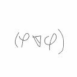 | | tasuyade | 345 | Python | | 8.753 | 0 | 0 | 0 | 42 | 102 | 10.054 | 828 | 10.014 | 837 | 9.544 | 836 | 8.880 | 832 | 7.297 | 830 | 13.303 | 818 | 9.556 | 833 | 8.132 | 836 | 7.898 | 839 | 7.880 | 843 | 8.077 | 847 | 8.628 | 835 | 9.102 | 835 | 9.220 | 833 |
| 836 | | | Tatsu_mr | 623 | Python | | 8.753 | 0 | 0 | 0 | 110 | 117 | 10.054 | 828 | 10.014 | 837 | 9.544 | 836 | 8.880 | 832 | 7.297 | 830 | 13.303 | 818 | 9.556 | 833 | 8.132 | 836 | 7.898 | 839 | 7.880 | 843 | 8.077 | 847 | 8.628 | 835 | 9.102 | 835 | 9.220 | 833 |
| 836 | | | Tgrt | 676 | Python | | 8.753 | 0 | 0 | 0 | 43 | 47 | 10.054 | 828 | 10.014 | 837 | 9.544 | 836 | 8.880 | 832 | 7.297 | 830 | 13.303 | 818 | 9.556 | 833 | 8.132 | 836 | 7.898 | 839 | 7.880 | 843 | 8.077 | 847 | 8.628 | 835 | 9.102 | 835 | 9.220 | 833 |
| 836 | | | ting39 | 139 | Python | | 8.753 | 0 | 0 | 0 | 44 | 103 | 10.054 | 828 | 10.014 | 837 | 9.544 | 836 | 8.880 | 832 | 7.297 | 830 | 13.303 | 818 | 9.556 | 833 | 8.132 | 836 | 7.898 | 839 | 7.880 | 843 | 8.077 | 847 | 8.628 | 835 | 9.102 | 835 | 9.220 | 833 |
| 836 | | | Tki_256 | 139 | Python | | 8.753 | 0 | 0 | 0 | 41 | 45 | 10.054 | 828 | 10.014 | 837 | 9.544 | 836 | 8.880 | 832 | 7.297 | 830 | 13.303 | 818 | 9.556 | 833 | 8.132 | 836 | 7.898 | 839 | 7.880 | 843 | 8.077 | 847 | 8.628 | 835 | 9.102 | 835 | 9.220 | 833 |
| 836 | | | TNTNT | 572 | Python | | 8.753 | 0 | 0 | 0 | 41 | 44 | 10.054 | 828 | 10.014 | 837 | 9.544 | 836 | 8.880 | 832 | 7.297 | 830 | 13.303 | 818 | 9.556 | 833 | 8.132 | 836 | 7.898 | 839 | 7.880 | 843 | 8.077 | 847 | 8.628 | 835 | 9.102 | 835 | 9.220 | 833 |
| 836 | | | tohohogisu | 872 | Python | | 8.753 | 0 | 0 | 0 | 111 | 118 | 10.054 | 828 | 10.014 | 837 | 9.544 | 836 | 8.880 | 832 | 7.297 | 830 | 13.303 | 818 | 9.556 | 833 | 8.132 | 836 | 7.898 | 839 | 7.880 | 843 | 8.077 | 847 | 8.628 | 835 | 9.102 | 835 | 9.220 | 833 |
| 836 | | | tombo314 | 1572 | Python | | 8.753 | 0 | 0 | 0 | 111 | 118 | 10.054 | 828 | 10.014 | 837 | 9.544 | 836 | 8.880 | 832 | 7.297 | 830 | 13.303 | 818 | 9.556 | 833 | 8.132 | 836 | 7.898 | 839 | 7.880 | 843 | 8.077 | 847 | 8.628 | 835 | 9.102 | 835 | 9.220 | 833 |
| 836 | | | tpgugmu | 840 | Python | | 8.753 | 0 | 0 | 0 | 110 | 115 | 10.054 | 828 | 10.014 | 837 | 9.544 | 836 | 8.880 | 832 | 7.297 | 830 | 13.303 | 818 | 9.556 | 833 | 8.132 | 836 | 7.898 | 839 | 7.880 | 843 | 8.077 | 847 | 8.628 | 835 | 9.102 | 835 | 9.220 | 833 |
| 836 | | | tsuchan13 | 1053 | Python | | 8.753 | 0 | 0 | 0 | 110 | 116 | 10.054 | 828 | 10.014 | 837 | 9.544 | 836 | 8.880 | 832 | 7.297 | 830 | 13.303 | 818 | 9.556 | 833 | 8.132 | 836 | 7.898 | 839 | 7.880 | 843 | 8.077 | 847 | 8.628 | 835 | 9.102 | 835 | 9.220 | 833 |
| 836 | | | tuyoponn | 678 | Python | | 8.753 | 0 | 0 | 0 | 44 | 100 | 10.054 | 828 | 10.014 | 837 | 9.544 | 836 | 8.880 | 832 | 7.297 | 830 | 13.303 | 818 | 9.556 | 833 | 8.132 | 836 | 7.898 | 839 | 7.880 | 843 | 8.077 | 847 | 8.628 | 835 | 9.102 | 835 | 9.220 | 833 |
| 836 | | | Twil3 | 973 | Python | | 8.753 | 0 | 0 | 0 | 108 | 143 | 10.054 | 828 | 10.014 | 837 | 9.544 | 836 | 8.880 | 832 | 7.297 | 830 | 13.303 | 818 | 9.556 | 833 | 8.132 | 836 | 7.898 | 839 | 7.880 | 843 | 8.077 | 847 | 8.628 | 835 | 9.102 | 835 | 9.220 | 833 |
| 836 | | | tyx9192596 | 267 | Python | | 8.753 | 0 | 0 | 0 | 113 | 186 | 10.054 | 828 | 10.014 | 837 | 9.544 | 836 | 8.880 | 832 | 7.297 | 830 | 13.303 | 818 | 9.556 | 833 | 8.132 | 836 | 7.898 | 839 | 7.880 | 843 | 8.077 | 847 | 8.628 | 835 | 9.102 | 835 | 9.220 | 833 |
| 836 | | | u_kun | 1217 | Python | | 8.753 | 0 | 0 | 0 | 110 | 231 | 10.054 | 828 | 10.014 | 837 | 9.544 | 836 | 8.880 | 832 | 7.297 | 830 | 13.303 | 818 | 9.556 | 833 | 8.132 | 836 | 7.898 | 839 | 7.880 | 843 | 8.077 | 847 | 8.628 | 835 | 9.102 | 835 | 9.220 | 833 |
| 836 | | | Untitle | 1044 | Python | | 8.753 | 0 | 0 | 0 | 109 | 115 | 10.054 | 828 | 10.014 | 837 | 9.544 | 836 | 8.880 | 832 | 7.297 | 830 | 13.303 | 818 | 9.556 | 833 | 8.132 | 836 | 7.898 | 839 | 7.880 | 843 | 8.077 | 847 | 8.628 | 835 | 9.102 | 835 | 9.220 | 833 |
| 836 | | | uranium_0718 | 139 | Python | | 8.753 | 0 | 0 | 0 | 109 | 171 | 10.054 | 828 | 10.014 | 837 | 9.544 | 836 | 8.880 | 832 | 7.297 | 830 | 13.303 | 818 | 9.556 | 833 | 8.132 | 836 | 7.898 | 839 | 7.880 | 843 | 8.077 | 847 | 8.628 | 835 | 9.102 | 835 | 9.220 | 833 |
| 836 | | | utprg | 948 | Python | | 8.753 | 0 | 0 | 0 | 111 | 118 | 10.054 | 828 | 10.014 | 837 | 9.544 | 836 | 8.880 | 832 | 7.297 | 830 | 13.303 | 818 | 9.556 | 833 | 8.132 | 836 | 7.898 | 839 | 7.880 | 843 | 8.077 | 847 | 8.628 | 835 | 9.102 | 835 | 9.220 | 833 |
| 836 | | | vectorStar | 139 | Python | | 8.753 | 0 | 0 | 0 | 114 | 161 | 10.054 | 828 | 10.014 | 837 | 9.544 | 836 | 8.880 | 832 | 7.297 | 830 | 13.303 | 818 | 9.556 | 833 | 8.132 | 836 | 7.898 | 839 | 7.880 | 843 | 8.077 | 847 | 8.628 | 835 | 9.102 | 835 | 9.220 | 833 |
| 836 | | | wakky | 1242 | Python | | 8.753 | 0 | 0 | 0 | 43 | 47 | 10.054 | 828 | 10.014 | 837 | 9.544 | 836 | 8.880 | 832 | 7.297 | 830 | 13.303 | 818 | 9.556 | 833 | 8.132 | 836 | 7.898 | 839 | 7.880 | 843 | 8.077 | 847 | 8.628 | 835 | 9.102 | 835 | 9.220 | 833 |
| 836 | | | Wayne3 | 139 | Python | | 8.753 | 0 | 0 | 0 | 42 | 87 | 10.054 | 828 | 10.014 | 837 | 9.544 | 836 | 8.880 | 832 | 7.297 | 830 | 13.303 | 818 | 9.556 | 833 | 8.132 | 836 | 7.898 | 839 | 7.880 | 843 | 8.077 | 847 | 8.628 | 835 | 9.102 | 835 | 9.220 | 833 |
| 836 | | | why110623 | 672 | Python | | 8.753 | 0 | 0 | 0 | 41 | 112 | 10.054 | 828 | 10.014 | 837 | 9.544 | 836 | 8.880 | 832 | 7.297 | 830 | 13.303 | 818 | 9.556 | 833 | 8.132 | 836 | 7.898 | 839 | 7.880 | 843 | 8.077 | 847 | 8.628 | 835 | 9.102 | 835 | 9.220 | 833 |
| 836 | | | wrkwrk | 1152 | Python | | 8.753 | 0 | 0 | 0 | 44 | 49 | 10.054 | 828 | 10.014 | 837 | 9.544 | 836 | 8.880 | 832 | 7.297 | 830 | 13.303 | 818 | 9.556 | 833 | 8.132 | 836 | 7.898 | 839 | 7.880 | 843 | 8.077 | 847 | 8.628 | 835 | 9.102 | 835 | 9.220 | 833 |
| 836 | | | xcx0902 | 732 | Python | | 8.753 | 0 | 0 | 0 | 111 | 117 | 10.054 | 828 | 10.014 | 837 | 9.544 | 836 | 8.880 | 832 | 7.297 | 830 | 13.303 | 818 | 9.556 | 833 | 8.132 | 836 | 7.898 | 839 | 7.880 | 843 | 8.077 | 847 | 8.628 | 835 | 9.102 | 835 | 9.220 | 833 |
| 836 | | | xfc20270211 | 355 | Python | | 8.753 | 0 | 0 | 0 | 42 | 46 | 10.054 | 828 | 10.014 | 837 | 9.544 | 836 | 8.880 | 832 | 7.297 | 830 | 13.303 | 818 | 9.556 | 833 | 8.132 | 836 | 7.898 | 839 | 7.880 | 843 | 8.077 | 847 | 8.628 | 835 | 9.102 | 835 | 9.220 | 833 |
| 836 | | | xmy1234567890 | 139 | Python | | 8.753 | 0 | 0 | 0 | 110 | 116 | 10.054 | 828 | 10.014 | 837 | 9.544 | 836 | 8.880 | 832 | 7.297 | 830 | 13.303 | 818 | 9.556 | 833 | 8.132 | 836 | 7.898 | 839 | 7.880 | 843 | 8.077 | 847 | 8.628 | 835 | 9.102 | 835 | 9.220 | 833 |
| 836 | | | xuanxuan0910 | 139 | Python | | 8.753 | 0 | 0 | 0 | 43 | 85 | 10.054 | 828 | 10.014 | 837 | 9.544 | 836 | 8.880 | 832 | 7.297 | 830 | 13.303 | 818 | 9.556 | 833 | 8.132 | 836 | 7.898 | 839 | 7.880 | 843 | 8.077 | 847 | 8.628 | 835 | 9.102 | 835 | 9.220 | 833 |
| 836 | | | xuqinyu120326 | 139 | Python | | 8.753 | 0 | 0 | 0 | 41 | 90 | 10.054 | 828 | 10.014 | 837 | 9.544 | 836 | 8.880 | 832 | 7.297 | 830 | 13.303 | 818 | 9.556 | 833 | 8.132 | 836 | 7.898 | 839 | 7.880 | 843 | 8.077 | 847 | 8.628 | 835 | 9.102 | 835 | 9.220 | 833 |
| 836 | | | xuzichen2023 | 513 | Python | | 8.753 | 0 | 0 | 0 | 44 | 107 | 10.054 | 828 | 10.014 | 837 | 9.544 | 836 | 8.880 | 832 | 7.297 | 830 | 13.303 | 818 | 9.556 | 833 | 8.132 | 836 | 7.898 | 839 | 7.880 | 843 | 8.077 | 847 | 8.628 | 835 | 9.102 | 835 | 9.220 | 833 |
| 836 | | | yaaaaaan | 139 | Python | | 8.753 | 0 | 0 | 0 | 44 | 105 | 10.054 | 828 | 10.014 | 837 | 9.544 | 836 | 8.880 | 832 | 7.297 | 830 | 13.303 | 818 | 9.556 | 833 | 8.132 | 836 | 7.898 | 839 | 7.880 | 843 | 8.077 | 847 | 8.628 | 835 | 9.102 | 835 | 9.220 | 833 |
| 836 | | | yaakiyu | 974 | Python | | 8.753 | 0 | 0 | 0 | 113 | 120 | 10.054 | 828 | 10.014 | 837 | 9.544 | 836 | 8.880 | 832 | 7.297 | 830 | 13.303 | 818 | 9.556 | 833 | 8.132 | 836 | 7.898 | 839 | 7.880 | 843 | 8.077 | 847 | 8.628 | 835 | 9.102 | 835 | 9.220 | 833 |
| 836 | | | yamagata445 | 533 | Python | | 8.753 | 0 | 0 | 0 | 42 | 45 | 10.054 | 828 | 10.014 | 837 | 9.544 | 836 | 8.880 | 832 | 7.297 | 830 | 13.303 | 818 | 9.556 | 833 | 8.132 | 836 | 7.898 | 839 | 7.880 | 843 | 8.077 | 847 | 8.628 | 835 | 9.102 | 835 | 9.220 | 833 |
| 836 | | | yaneko | 1018 | Python | | 8.753 | 0 | 0 | 0 | 42 | 47 | 10.054 | 828 | 10.014 | 837 | 9.544 | 836 | 8.880 | 832 | 7.297 | 830 | 13.303 | 818 | 9.556 | 833 | 8.132 | 836 | 7.898 | 839 | 7.880 | 843 | 8.077 | 847 | 8.628 | 835 | 9.102 | 835 | 9.220 | 833 |
| 836 | | | Yangmingjie | 355 | Python | | 8.753 | 0 | 0 | 0 | 43 | 48 | 10.054 | 828 | 10.014 | 837 | 9.544 | 836 | 8.880 | 832 | 7.297 | 830 | 13.303 | 818 | 9.556 | 833 | 8.132 | 836 | 7.898 | 839 | 7.880 | 843 | 8.077 | 847 | 8.628 | 835 | 9.102 | 835 | 9.220 | 833 |
| 836 | | | yangxikun | 410 | Python | | 8.753 | 0 | 0 | 0 | 42 | 47 | 10.054 | 828 | 10.014 | 837 | 9.544 | 836 | 8.880 | 832 | 7.297 | 830 | 13.303 | 818 | 9.556 | 833 | 8.132 | 836 | 7.898 | 839 | 7.880 | 843 | 8.077 | 847 | 8.628 | 835 | 9.102 | 835 | 9.220 | 833 |
| 836 | 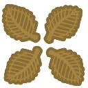 | | yggdrasils | 139 | Python | | 8.753 | 0 | 0 | 0 | 40 | 105 | 10.054 | 828 | 10.014 | 837 | 9.544 | 836 | 8.880 | 832 | 7.297 | 830 | 13.303 | 818 | 9.556 | 833 | 8.132 | 836 | 7.898 | 839 | 7.880 | 843 | 8.077 | 847 | 8.628 | 835 | 9.102 | 835 | 9.220 | 833 |
| 836 | | | yoshin | 666 | Python | | 8.753 | 0 | 0 | 0 | 41 | 69 | 10.054 | 828 | 10.014 | 837 | 9.544 | 836 | 8.880 | 832 | 7.297 | 830 | 13.303 | 818 | 9.556 | 833 | 8.132 | 836 | 7.898 | 839 | 7.880 | 843 | 8.077 | 847 | 8.628 | 835 | 9.102 | 835 | 9.220 | 833 |
| 836 | | | ysfh | 627 | Python | | 8.753 | 0 | 0 | 0 | 42 | 124 | 10.054 | 828 | 10.014 | 837 | 9.544 | 836 | 8.880 | 832 | 7.297 | 830 | 13.303 | 818 | 9.556 | 833 | 8.132 | 836 | 7.898 | 839 | 7.880 | 843 | 8.077 | 847 | 8.628 | 835 | 9.102 | 835 | 9.220 | 833 |
| 836 | | | yuruhuwa | 370 | Python | | 8.753 | 0 | 0 | 0 | 40 | 43 | 10.054 | 828 | 10.014 | 837 | 9.544 | 836 | 8.880 | 832 | 7.297 | 830 | 13.303 | 818 | 9.556 | 833 | 8.132 | 836 | 7.898 | 839 | 7.880 | 843 | 8.077 | 847 | 8.628 | 835 | 9.102 | 835 | 9.220 | 833 |
| 836 | | | Yuulis | 1064 | Python | | 8.753 | 0 | 0 | 0 | 40 | 56 | 10.054 | 828 | 10.014 | 837 | 9.544 | 836 | 8.880 | 832 | 7.297 | 830 | 13.303 | 818 | 9.556 | 833 | 8.132 | 836 | 7.898 | 839 | 7.880 | 843 | 8.077 | 847 | 8.628 | 835 | 9.102 | 835 | 9.220 | 833 |
| 836 | 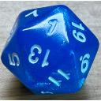 | | yuuyuu1729 | 1131 | Python | | 8.753 | 0 | 0 | 0 | 116 | 214 | 10.054 | 828 | 10.014 | 837 | 9.544 | 836 | 8.880 | 832 | 7.297 | 830 | 13.303 | 818 | 9.556 | 833 | 8.132 | 836 | 7.898 | 839 | 7.880 | 843 | 8.077 | 847 | 8.628 | 835 | 9.102 | 835 | 9.220 | 833 |
| 836 | | | yy1212 | 139 | Python | | 8.753 | 0 | 0 | 0 | 43 | 47 | 10.054 | 828 | 10.014 | 837 | 9.544 | 836 | 8.880 | 832 | 7.297 | 830 | 13.303 | 818 | 9.556 | 833 | 8.132 | 836 | 7.898 | 839 | 7.880 | 843 | 8.077 | 847 | 8.628 | 835 | 9.102 | 835 | 9.220 | 833 |
| 836 | | | Zaim | 449 | Python | | 8.753 | 0 | 0 | 0 | 111 | 118 | 10.054 | 828 | 10.014 | 837 | 9.544 | 836 | 8.880 | 832 | 7.297 | 830 | 13.303 | 818 | 9.556 | 833 | 8.132 | 836 | 7.898 | 839 | 7.880 | 843 | 8.077 | 847 | 8.628 | 835 | 9.102 | 835 | 9.220 | 833 |
| 836 | | | zenkun | 355 | Python | | 8.753 | 0 | 0 | 0 | 43 | 46 | 10.054 | 828 | 10.014 | 837 | 9.544 | 836 | 8.880 | 832 | 7.297 | 830 | 13.303 | 818 | 9.556 | 833 | 8.132 | 836 | 7.898 | 839 | 7.880 | 843 | 8.077 | 847 | 8.628 | 835 | 9.102 | 835 | 9.220 | 833 |
| 836 | | | ZeriToki | 853 | Python | | 8.753 | 0 | 0 | 0 | 42 | 45 | 10.054 | 828 | 10.014 | 837 | 9.544 | 836 | 8.880 | 832 | 7.297 | 830 | 13.303 | 818 | 9.556 | 833 | 8.132 | 836 | 7.898 | 839 | 7.880 | 843 | 8.077 | 847 | 8.628 | 835 | 9.102 | 835 | 9.220 | 833 |
| 836 | | | zhangchengxiao | 139 | Python | | 8.753 | 0 | 0 | 0 | 117 | 133 | 10.054 | 828 | 10.014 | 837 | 9.544 | 836 | 8.880 | 832 | 7.297 | 830 | 13.303 | 818 | 9.556 | 833 | 8.132 | 836 | 7.898 | 839 | 7.880 | 843 | 8.077 | 847 | 8.628 | 835 | 9.102 | 835 | 9.220 | 833 |
| 836 | | | zhaoqiangCN | 505 | Python | | 8.753 | 0 | 0 | 0 | 45 | 114 | 10.054 | 828 | 10.014 | 837 | 9.544 | 836 | 8.880 | 832 | 7.297 | 830 | 13.303 | 818 | 9.556 | 833 | 8.132 | 836 | 7.898 | 839 | 7.880 | 843 | 8.077 | 847 | 8.628 | 835 | 9.102 | 835 | 9.220 | 833 |
| 836 | | | zhaozeyu123 | 139 | Python | | 8.753 | 0 | 0 | 0 | 40 | 44 | 10.054 | 828 | 10.014 | 837 | 9.544 | 836 | 8.880 | 832 | 7.297 | 830 | 13.303 | 818 | 9.556 | 833 | 8.132 | 836 | 7.898 | 839 | 7.880 | 843 | 8.077 | 847 | 8.628 | 835 | 9.102 | 835 | 9.220 | 833 |
| 836 | | | ZhuHaocheng | 139 | Python | | 8.753 | 0 | 0 | 0 | 116 | 126 | 10.054 | 828 | 10.014 | 837 | 9.544 | 836 | 8.880 | 832 | 7.297 | 830 | 13.303 | 818 | 9.556 | 833 | 8.132 | 836 | 7.898 | 839 | 7.880 | 843 | 8.077 | 847 | 8.628 | 835 | 9.102 | 835 | 9.220 | 833 |
| 836 | | | ztyroy | 373 | Python | | 8.753 | 0 | 0 | 0 | 44 | 64 | 10.054 | 828 | 10.014 | 837 | 9.544 | 836 | 8.880 | 832 | 7.297 | 830 | 13.303 | 818 | 9.556 | 833 | 8.132 | 836 | 7.898 | 839 | 7.880 | 843 | 8.077 | 847 | 8.628 | 835 | 9.102 | 835 | 9.220 | 833 |
| 1103 | | | Atner | 881 | C++ 20 | | 8.753 | 0 | 0 | 0 | 30 | 70 | 10.054 | 828 | 10.014 | 1104 | 9.544 | 836 | 8.880 | 832 | 7.297 | 830 | 13.303 | 818 | 9.556 | 833 | 8.132 | 1103 | 7.898 | 839 | 7.880 | 1110 | 8.077 | 835 | 8.628 | 835 | 9.102 | 1103 | 9.220 | 833 |
| 1103 | | | Gavinzhou | 84 | C++ 17 | | 8.753 | 0 | 0 | 0 | 30 | 33 | 10.054 | 828 | 10.014 | 1104 | 9.544 | 836 | 8.880 | 832 | 7.297 | 830 | 13.303 | 818 | 9.556 | 833 | 8.132 | 1103 | 7.898 | 839 | 7.880 | 1110 | 8.077 | 835 | 8.628 | 835 | 9.102 | 1103 | 9.220 | 833 |
| 1103 | | | johndoe1206 | 831 | C++ 20 | | 8.753 | 0 | 0 | 0 | 30 | 32 | 10.054 | 828 | 10.014 | 1104 | 9.544 | 836 | 8.880 | 832 | 7.297 | 830 | 13.303 | 818 | 9.556 | 833 | 8.132 | 1103 | 7.898 | 839 | 7.880 | 1110 | 8.077 | 835 | 8.628 | 835 | 9.102 | 1103 | 9.220 | 833 |
| 1103 | | | karn22 | 168 | C++ 20 | | 8.753 | 0 | 0 | 0 | 29 | 86 | 10.054 | 828 | 10.014 | 1104 | 9.544 | 836 | 8.880 | 832 | 7.297 | 830 | 13.303 | 818 | 9.556 | 833 | 8.132 | 1103 | 7.898 | 839 | 7.880 | 1110 | 8.077 | 835 | 8.628 | 835 | 9.102 | 1103 | 9.220 | 833 |
| 1103 | | | pbmessi | 1447 | C++ 20 | | 8.753 | 0 | 0 | 0 | 28 | 31 | 10.054 | 828 | 10.014 | 1104 | 9.544 | 836 | 8.880 | 832 | 7.297 | 830 | 13.303 | 818 | 9.556 | 833 | 8.132 | 1103 | 7.898 | 839 | 7.880 | 1110 | 8.077 | 835 | 8.628 | 835 | 9.102 | 1103 | 9.220 | 833 |
| 1103 | | | rn_kombat | 758 | C++ 20 | | 8.753 | 0 | 0 | 0 | 30 | 32 | 10.054 | 828 | 10.014 | 1104 | 9.544 | 836 | 8.880 | 832 | 7.297 | 830 | 13.303 | 818 | 9.556 | 833 | 8.132 | 1103 | 7.898 | 839 | 7.880 | 1110 | 8.077 | 835 | 8.628 | 835 | 9.102 | 1103 | 9.220 | 833 |
| 1103 | | | Sena1740 | 771 | C++ 23 | | 8.753 | 0 | 0 | 0 | 29 | 89 | 10.054 | 828 | 10.014 | 1104 | 9.544 | 836 | 8.880 | 832 | 7.297 | 830 | 13.303 | 818 | 9.556 | 833 | 8.132 | 1103 | 7.898 | 839 | 7.880 | 1110 | 8.077 | 835 | 8.628 | 835 | 9.102 | 1103 | 9.220 | 833 |
| 1103 | | | teruru_1 | 125 | C++ 23 | | 8.753 | 0 | 0 | 0 | 30 | 33 | 10.054 | 828 | 10.014 | 1104 | 9.544 | 836 | 8.880 | 832 | 7.297 | 830 | 13.303 | 818 | 9.556 | 833 | 8.132 | 1103 | 7.898 | 839 | 7.880 | 1110 | 8.077 | 835 | 8.628 | 835 | 9.102 | 1103 | 9.220 | 833 |
| 1103 | | | wrh316 | 171 | C++ 17 | | 8.753 | 0 | 0 | 0 | 28 | 81 | 10.054 | 828 | 10.014 | 1104 | 9.544 | 836 | 8.880 | 832 | 7.297 | 830 | 13.303 | 818 | 9.556 | 833 | 8.132 | 1103 | 7.898 | 839 | 7.880 | 1110 | 8.077 | 835 | 8.628 | 835 | 9.102 | 1103 | 9.220 | 833 |
| 1103 | | | yakizyake0219 | 288 | C++ 23 | | 8.753 | 0 | 0 | 0 | 29 | 33 | 10.054 | 828 | 10.014 | 1104 | 9.544 | 836 | 8.880 | 832 | 7.297 | 830 | 13.303 | 818 | 9.556 | 833 | 8.132 | 1103 | 7.898 | 839 | 7.880 | 1110 | 8.077 | 835 | 8.628 | 835 | 9.102 | 1103 | 9.220 | 833 |
| 1103 | | | zutpig | 665 | C++ 20 | | 8.753 | 0 | 0 | 0 | 29 | 31 | 10.054 | 828 | 10.014 | 1104 | 9.544 | 836 | 8.880 | 832 | 7.297 | 830 | 13.303 | 818 | 9.556 | 833 | 8.132 | 1103 | 7.898 | 839 | 7.880 | 1110 | 8.077 | 835 | 8.628 | 835 | 9.102 | 1103 | 9.220 | 833 |
| 1114 | | | Roll_Num_44 | 670 | C++ 17 | | 8.752 | 0 | 0 | 0 | 31 | 86 | 10.056 | 826 | 10.014 | 1115 | 9.544 | 835 | 8.877 | 1111 | 7.296 | 1109 | 13.298 | 1106 | 9.554 | 1112 | 8.135 | 835 | 7.896 | 1118 | 7.879 | 1121 | 8.076 | 1114 | 8.628 | 1114 | 9.100 | 1114 | 9.220 | 1112 |
| 1115 | | | KKBari | 82 | Python | | 8.683 | 0 | 0 | 13 | 1950 | 2000 | 9.917 | 1111 | 9.885 | 1117 | 9.346 | 1117 | 8.820 | 1113 | 7.339 | 829 | 13.215 | 1110 | 9.455 | 1113 | 8.051 | 1115 | 7.856 | 1119 | 7.830 | 1122 | 7.999 | 1116 | 8.553 | 1115 | 9.037 | 1115 | 9.162 | 1113 |
| 1116 | | | tevilein | 81 | Python | | 8.641 | 0 | 0 | 0 | 130 | 215 | 9.890 | 1112 | 9.869 | 1118 | 9.409 | 1116 | 8.776 | 1114 | 7.215 | 1111 | 13.120 | 1111 | 9.435 | 1114 | 8.032 | 1117 | 7.792 | 1120 | 7.784 | 1123 | 8.049 | 1115 | 8.552 | 1116 | 8.963 | 1116 | 9.012 | 1114 |
| 1117 | | | tbbt95 | 1098 | C++ 20 | | 8.233 | 0 | 0 | 0 | 28 | 30 | 7.570 | 1138 | 7.609 | 1127 | 7.723 | 1123 | 8.853 | 1112 | 8.341 | 822 | 10.535 | 1122 | 8.010 | 1119 | 7.502 | 1119 | 7.996 | 837 | 8.609 | 835 | 7.764 | 1118 | 8.045 | 1117 | 8.467 | 1117 | 8.680 | 1115 |
| 1118 |  | | mogobon | 604 | C++ 20 | | 8.135 | 0 | 0 | 0 | 30 | 34 | 9.443 | 1113 | 10.174 | 830 | 9.614 | 833 | 8.096 | 1118 | 5.962 | 1120 | 8.592 | 1138 | 7.512 | 1123 | 7.679 | 1118 | 8.266 | 835 | 8.895 | 834 | 7.557 | 1120 | 7.975 | 1118 | 8.412 | 1118 | 8.621 | 1116 |
| 1119 |  | | yajamon | 1326 | Rust | | 8.119 | 0 | 0 | 0 | 29 | 32 | 10.274 | 823 | 10.738 | 827 | 9.506 | 1115 | 7.706 | 1119 | 5.990 | 1119 | 6.821 | 1147 | 6.595 | 1139 | 8.038 | 1116 | 8.756 | 832 | 9.483 | 833 | 7.647 | 1119 | 7.916 | 1119 | 8.358 | 1120 | 8.584 | 1117 |
| 1120 |  | | shinji_mm | 783 | C++ 20 | | 7.999 | 0 | 0 | 0 | 29 | 32 | 8.999 | 1119 | 9.091 | 1121 | 8.725 | 1119 | 8.132 | 1117 | 6.697 | 1114 | 12.208 | 1114 | 8.746 | 1116 | 7.418 | 1120 | 7.184 | 1123 | 7.216 | 1125 | 7.285 | 1121 | 7.893 | 1120 | 8.364 | 1119 | 8.467 | 1118 |
| 1121 | | | yxtxgaoyiming | 80 | C++ 20 | | 7.699 | 0 | 0 | 0 | 34 | 94 | 4.926 | 1151 | 7.313 | 1142 | 8.074 | 1122 | 8.176 | 1116 | 7.404 | 826 | 11.734 | 1117 | 8.434 | 1118 | 7.116 | 1122 | 6.958 | 1124 | 6.915 | 1127 | 7.203 | 1122 | 7.580 | 1121 | 7.994 | 1121 | 8.030 | 1120 |
| 1122 |  | | OpenAIO3Mini | 278 | C++ 20 | | 7.581 | 0 | 0 | 1370 | 29 | 35 | 0.000 | 1187 | 0.000 | 1191 | 4.610 | 1170 | 12.298 | 815 | 9.611 | 798 | 2.444 | 1177 | 4.590 | 1170 | 6.935 | 1123 | 9.503 | 829 | 10.934 | 824 | 7.795 | 1117 | 7.495 | 1122 | 7.636 | 1123 | 7.399 | 1126 |
| 1123 | | | sainomethirt | 997 | Rust | | 7.564 | 0 | 0 | 8 | 40 | 54 | 8.717 | 1120 | 9.788 | 1120 | 9.064 | 1118 | 7.484 | 1121 | 5.322 | 1140 | 7.719 | 1143 | 6.956 | 1138 | 7.150 | 1121 | 7.717 | 1121 | 8.345 | 836 | 7.012 | 1123 | 7.388 | 1123 | 7.834 | 1122 | 8.043 | 1119 |
| 1124 | | | aobu04 | 78 | C++ 23 | | 7.215 | 0 | 0 | 0 | 27 | 29 | 8.057 | 1124 | 8.014 | 1125 | 7.719 | 1124 | 7.311 | 1123 | 6.273 | 1116 | 10.980 | 1119 | 7.893 | 1120 | 6.703 | 1124 | 6.520 | 1125 | 6.466 | 1128 | 6.632 | 1124 | 7.101 | 1124 | 7.508 | 1124 | 7.634 | 1121 |
| 1125 | | | bscdesu | 847 | Python | | 7.158 | 0 | 0 | 0 | 522 | 1645 | 7.101 | 1142 | 7.110 | 1144 | 7.520 | 1127 | 7.429 | 1122 | 6.680 | 1115 | 10.884 | 1120 | 7.861 | 1121 | 6.623 | 1125 | 6.471 | 1126 | 6.411 | 1129 | 6.623 | 1125 | 7.042 | 1125 | 7.461 | 1125 | 7.519 | 1123 |
| 1126 | | | PeaQa | 78 | C# 11.0 | | 7.039 | 0 | 0 | 0 | 89 | 105 | 7.869 | 1125 | 7.820 | 1126 | 7.524 | 1126 | 7.138 | 1124 | 6.118 | 1117 | 10.696 | 1121 | 7.698 | 1122 | 6.531 | 1126 | 6.359 | 1127 | 6.326 | 1130 | 6.495 | 1126 | 6.939 | 1126 | 7.319 | 1126 | 7.417 | 1125 |
| 1127 | | | arupon | 180 | Python | | 6.815 | 0 | 0 | 0 | 39 | 41 | 7.593 | 1130 | 7.591 | 1130 | 7.288 | 1128 | 6.906 | 1126 | 5.915 | 1121 | 10.385 | 1123 | 7.452 | 1124 | 6.322 | 1133 | 6.145 | 1129 | 6.126 | 1132 | 6.259 | 1129 | 6.694 | 1127 | 7.098 | 1128 | 7.222 | 1128 |
| 1127 | | | Fish2424 | 77 | Python | | 6.815 | 0 | 0 | 0 | 43 | 46 | 7.593 | 1130 | 7.591 | 1130 | 7.288 | 1128 | 6.906 | 1126 | 5.915 | 1121 | 10.385 | 1123 | 7.452 | 1124 | 6.322 | 1133 | 6.145 | 1129 | 6.126 | 1132 | 6.259 | 1129 | 6.694 | 1127 | 7.098 | 1128 | 7.222 | 1128 |
| 1129 | | | d3e2fd | 76 | C++ 20 | | 6.815 | 0 | 0 | 0 | 26 | 28 | 7.593 | 1130 | 7.591 | 1132 | 7.288 | 1128 | 6.906 | 1126 | 5.915 | 1121 | 10.385 | 1123 | 7.452 | 1124 | 6.322 | 1129 | 6.145 | 1129 | 6.126 | 1134 | 6.259 | 1129 | 6.694 | 1127 | 7.098 | 1130 | 7.222 | 1128 |
| 1129 | | | Naru820 | 182 | C++ 20 | | 6.815 | 0 | 0 | 0 | 26 | 28 | 7.593 | 1130 | 7.591 | 1132 | 7.288 | 1128 | 6.906 | 1126 | 5.915 | 1121 | 10.385 | 1123 | 7.452 | 1124 | 6.322 | 1129 | 6.145 | 1129 | 6.126 | 1134 | 6.259 | 1129 | 6.694 | 1127 | 7.098 | 1130 | 7.222 | 1128 |
| 1129 | | | qleeJ | 576 | C++ 20 | | 6.815 | 0 | 0 | 0 | 28 | 77 | 7.593 | 1130 | 7.591 | 1132 | 7.288 | 1128 | 6.906 | 1126 | 5.915 | 1121 | 10.385 | 1123 | 7.452 | 1124 | 6.322 | 1129 | 6.145 | 1129 | 6.126 | 1134 | 6.259 | 1129 | 6.694 | 1127 | 7.098 | 1130 | 7.222 | 1128 |
| 1129 | | | Squadron25 | 76 | C++ 20 | | 6.815 | 0 | 0 | 0 | 28 | 104 | 7.593 | 1130 | 7.591 | 1132 | 7.288 | 1128 | 6.906 | 1126 | 5.915 | 1121 | 10.385 | 1123 | 7.452 | 1124 | 6.322 | 1129 | 6.145 | 1129 | 6.126 | 1134 | 6.259 | 1129 | 6.694 | 1127 | 7.098 | 1130 | 7.222 | 1128 |
| 1133 | | | Altair0291 | 75 | C# 11.0 | | 6.815 | 0 | 0 | 0 | 85 | 103 | 7.593 | 1130 | 7.591 | 1136 | 7.288 | 1128 | 6.906 | 1126 | 5.915 | 1121 | 10.385 | 1123 | 7.452 | 1124 | 6.322 | 1133 | 6.145 | 1129 | 6.126 | 1134 | 6.259 | 1129 | 6.694 | 1127 | 7.098 | 1134 | 7.222 | 1128 |
| 1134 |  | | ConvxO2 | 194 | C++ 20 | | 6.813 | 0 | 0 | 0 | 27 | 30 | 7.600 | 1128 | 7.592 | 1129 | 7.285 | 1136 | 6.904 | 1133 | 5.914 | 1128 | 10.384 | 1130 | 7.450 | 1132 | 6.323 | 1128 | 6.144 | 1137 | 6.124 | 1139 | 6.258 | 1137 | 6.694 | 1134 | 7.097 | 1135 | 7.221 | 1135 |
| 1135 | | | sharow | 74 | C++ 23 | | 6.811 | 0 | 0 | 0 | 33 | 91 | 7.598 | 1129 | 7.595 | 1128 | 7.285 | 1135 | 6.900 | 1135 | 5.911 | 1130 | 10.365 | 1131 | 7.449 | 1133 | 6.322 | 1136 | 6.145 | 1136 | 6.124 | 1140 | 6.263 | 1128 | 6.693 | 1135 | 7.095 | 1136 | 7.210 | 1136 |
| 1136 | | | koripera | 703 | Python | | 6.806 | 0 | 0 | 0 | 142 | 148 | 7.586 | 1137 | 7.576 | 1137 | 7.282 | 1138 | 6.898 | 1136 | 5.906 | 1131 | 10.330 | 1132 | 7.451 | 1131 | 6.318 | 1137 | 6.140 | 1138 | 6.116 | 1141 | 6.259 | 1136 | 6.692 | 1136 | 7.086 | 1137 | 7.201 | 1137 |
| 1137 | | | PillowPrincess69 | 73 | C++ 20 | | 6.800 | 0 | 0 | 105 | 39 | 147 | 4.900 | 1159 | 7.547 | 1138 | 7.581 | 1125 | 7.126 | 1125 | 5.686 | 1137 | 10.324 | 1133 | 7.416 | 1134 | 6.344 | 1127 | 6.157 | 1128 | 6.086 | 1142 | 6.100 | 1139 | 6.673 | 1137 | 7.108 | 1127 | 7.337 | 1127 |
| 1138 | | | twooimp | 575 | C++ 20 | | 6.739 | 0 | 0 | 0 | 38 | 78 | 7.506 | 1139 | 7.493 | 1139 | 7.206 | 1139 | 6.830 | 1137 | 5.858 | 1132 | 10.167 | 1134 | 7.257 | 1135 | 6.195 | 1138 | 6.112 | 1139 | 6.221 | 1131 | 6.153 | 1138 | 6.612 | 1138 | 7.025 | 1138 | 7.183 | 1138 |
| 1139 | | | kagakukenkyuubu | 935 | Python | | 6.506 | 0 | 0 | 3 | 44 | 47 | 7.393 | 1140 | 7.378 | 1140 | 7.056 | 1140 | 6.618 | 1138 | 5.475 | 1139 | 9.914 | 1136 | 7.094 | 1136 | 6.048 | 1139 | 5.881 | 1140 | 5.845 | 1143 | 5.896 | 1140 | 6.369 | 1139 | 6.811 | 1139 | 6.968 | 1139 |
| 1140 | | | Vakacharla_Ramya | 160 | Python | | 6.347 | 0 | 0 | 190 | 136 | 1971 | 0.000 | 1187 | 5.905 | 1149 | 7.285 | 1136 | 6.904 | 1133 | 5.914 | 1128 | 10.056 | 1135 | 6.987 | 1137 | 5.849 | 1140 | 5.693 | 1142 | 5.599 | 1147 | 5.730 | 1141 | 6.231 | 1140 | 6.628 | 1140 | 6.817 | 1140 |
| 1141 | |  | awergt | 72 | C++ 20 | | 5.619 | 0 | 0 | 0 | 38 | 179 | 4.925 | 1152 | 5.140 | 1150 | 5.757 | 1142 | 6.307 | 1139 | 5.158 | 1142 | 6.975 | 1145 | 5.484 | 1143 | 5.174 | 1144 | 5.502 | 1143 | 5.835 | 1144 | 5.202 | 1144 | 5.475 | 1143 | 5.822 | 1142 | 5.997 | 1141 |
| 1142 | | | akaneko922 | 71 | Python | | 5.606 | 0 | 0 | 0 | 176 | 194 | 6.368 | 1144 | 6.338 | 1145 | 6.079 | 1141 | 5.688 | 1140 | 4.743 | 1145 | 8.527 | 1139 | 6.120 | 1140 | 5.207 | 1143 | 5.059 | 1146 | 5.046 | 1150 | 5.125 | 1145 | 5.505 | 1142 | 5.846 | 1141 | 5.963 | 1142 |
| 1143 | | | Like_Lilac | 71 | C++ 23 | | 5.429 | 0 | 0 | 2735 | 33 | 35 | 62.180 | 507 | 22.382 | 788 | 0.729 | 1179 | 0.000 | 1177 | 0.000 | 1185 | 3.632 | 1174 | 3.645 | 1172 | 5.283 | 1142 | 5.381 | 1144 | 7.949 | 840 | 6.427 | 1127 | 5.970 | 1141 | 4.927 | 1152 | 4.322 | 1173 |
| 1144 | | | selphine | 453 | Python | | 5.308 | 0 | 0 | 1996 | 1112 | 1997 | 8.668 | 1122 | 14.783 | 819 | 12.285 | 823 | 0.525 | 1173 | 0.000 | 1185 | 0.000 | 1199 | 4.479 | 1171 | 5.749 | 1141 | 5.873 | 1141 | 6.920 | 1126 | 4.942 | 1146 | 5.316 | 1145 | 5.367 | 1145 | 5.614 | 1143 |
| 1145 | | | Aminur009 | 70 | C++ 20 | | 5.279 | 0 | 0 | 1873 | 29 | 30 | 14.356 | 813 | 8.830 | 1122 | 2.678 | 1175 | 4.335 | 1169 | 5.211 | 1141 | 0.125 | 1198 | 0.683 | 1189 | 3.698 | 1174 | 7.467 | 1122 | 10.826 | 825 | 5.559 | 1142 | 5.362 | 1144 | 4.942 | 1151 | 5.254 | 1149 |
| 1146 | | | ibtosm | 400 | Python | | 5.236 | 0 | 0 | 2 | 115 | 123 | 5.914 | 1147 | 5.921 | 1147 | 5.678 | 1143 | 5.321 | 1143 | 4.424 | 1149 | 7.963 | 1140 | 5.723 | 1141 | 4.866 | 1145 | 4.721 | 1150 | 4.710 | 1154 | 4.788 | 1147 | 5.130 | 1147 | 5.449 | 1144 | 5.592 | 1144 |
| 1147 |  | | VEGAs | 871 | Python | | 5.233 | 0 | 0 | 0 | 518 | 593 | 5.937 | 1145 | 5.919 | 1148 | 5.667 | 1144 | 5.313 | 1144 | 4.429 | 1148 | 7.953 | 1141 | 5.721 | 1142 | 4.862 | 1146 | 4.724 | 1149 | 4.702 | 1155 | 4.765 | 1148 | 5.133 | 1146 | 5.460 | 1143 | 5.590 | 1145 |
| 1148 |  | | Nthtofade | 106 | C++ 20 | | 5.083 | 0 | 0 | 0 | 33 | 39 | 9.205 | 1117 | 7.375 | 1141 | 5.219 | 1146 | 4.598 | 1147 | 3.868 | 1150 | 6.831 | 1146 | 5.106 | 1145 | 4.694 | 1147 | 4.814 | 1147 | 5.108 | 1149 | 4.690 | 1149 | 4.984 | 1148 | 5.310 | 1146 | 5.358 | 1147 |
| 1149 | | | xsd | 1538 | OCaml | | 5.028 | 0 | 0 | 0 | 27 | 30 | 4.900 | 1159 | 4.911 | 1155 | 4.923 | 1147 | 5.330 | 1142 | 4.865 | 1144 | 6.787 | 1148 | 5.075 | 1146 | 4.611 | 1148 | 4.784 | 1148 | 5.028 | 1151 | 4.647 | 1150 | 4.904 | 1149 | 5.210 | 1147 | 5.367 | 1146 |
| 1150 | | | The_Bouningeeeen | 1269 | Rust | | 4.958 | 0 | 0 | 0 | 27 | 30 | 4.900 | 1159 | 4.911 | 1156 | 4.918 | 1148 | 5.278 | 1145 | 4.690 | 1147 | 6.712 | 1154 | 5.012 | 1147 | 4.547 | 1149 | 4.711 | 1151 | 4.952 | 1152 | 4.577 | 1151 | 4.841 | 1150 | 5.139 | 1148 | 5.291 | 1148 |
| 1151 | | | zephyr386 | 262 | Rust | | 4.859 | 0 | 0 | 0 | 1984 | 1989 | 10.054 | 828 | 6.198 | 1146 | 5.658 | 1145 | 4.794 | 1146 | 3.249 | 1173 | 7.327 | 1144 | 5.315 | 1144 | 4.532 | 1150 | 4.368 | 1154 | 4.385 | 1156 | 4.432 | 1153 | 4.815 | 1151 | 5.046 | 1149 | 5.152 | 1150 |
| 1152 | | | yuiz | 1310 | C++ 20 | | 4.752 | 0 | 0 | 213 | 31 | 45 | 4.900 | 1159 | 3.458 | 1177 | 4.450 | 1171 | 5.459 | 1141 | 4.954 | 1143 | 6.468 | 1171 | 4.694 | 1169 | 4.306 | 1152 | 4.561 | 1153 | 4.847 | 1153 | 4.349 | 1154 | 4.682 | 1153 | 4.923 | 1153 | 5.066 | 1151 |
| 1153 | | | ZZhan | 187 | C++ 20 | | 4.474 | 0 | 0 | 2390 | 43 | 86 | 20.667 | 791 | 19.502 | 813 | 3.312 | 1172 | 0.000 | 1177 | 0.000 | 1185 | 5.258 | 1172 | 2.809 | 1175 | 4.435 | 1151 | 4.664 | 1152 | 5.671 | 1146 | 4.571 | 1152 | 4.802 | 1152 | 4.494 | 1175 | 3.984 | 1175 |
| 1154 |  | | ais_out | 639 | C++ 23 | | 4.430 | 0 | 0 | 0 | 1929 | 1990 | 4.886 | 1180 | 5.026 | 1151 | 4.720 | 1152 | 4.469 | 1166 | 3.831 | 1170 | 6.747 | 1151 | 4.836 | 1148 | 4.117 | 1153 | 4.002 | 1156 | 3.979 | 1157 | 4.040 | 1156 | 4.341 | 1155 | 4.620 | 1154 | 4.731 | 1152 |
| 1155 |  | | fujiyama | 1341 | C# 11.0 | | 4.419 | 0 | 0 | 0 | 81 | 95 | 4.922 | 1153 | 4.936 | 1153 | 4.720 | 1150 | 4.474 | 1148 | 3.836 | 1152 | 6.767 | 1149 | 4.834 | 1149 | 4.088 | 1171 | 3.979 | 1173 | 3.977 | 1158 | 4.035 | 1157 | 4.325 | 1157 | 4.605 | 1156 | 4.723 | 1153 |
| 1155 | | | Harunyann | 1337 | C++ 20 | | 4.419 | 0 | 0 | 0 | 27 | 30 | 4.922 | 1153 | 4.936 | 1153 | 4.720 | 1150 | 4.474 | 1148 | 3.836 | 1152 | 6.767 | 1149 | 4.834 | 1149 | 4.088 | 1171 | 3.979 | 1173 | 3.977 | 1158 | 4.035 | 1157 | 4.325 | 1157 | 4.605 | 1156 | 4.723 | 1153 |
| 1157 | | | rastel | 1254 | Rust | | 4.414 | 0 | 0 | 0 | 59 | 61 | 4.844 | 1181 | 4.944 | 1152 | 4.714 | 1153 | 4.468 | 1167 | 3.832 | 1169 | 6.726 | 1152 | 4.825 | 1151 | 4.099 | 1154 | 3.987 | 1157 | 3.961 | 1176 | 4.007 | 1176 | 4.329 | 1156 | 4.615 | 1155 | 4.718 | 1155 |
| 1158 |  | | ONPU3 | 177 | C++ 20 | | 4.409 | 0 | 0 | 0 | 26 | 29 | 4.900 | 1179 | 4.896 | 1158 | 4.711 | 1169 | 4.472 | 1165 | 3.836 | 1151 | 6.711 | 1169 | 4.824 | 1152 | 4.092 | 1155 | 3.978 | 1175 | 3.962 | 1161 | 4.020 | 1160 | 4.321 | 1159 | 4.602 | 1173 | 4.706 | 1157 |
| 1159 | | | zssa | 1275 | C++ 20 | | 4.409 | 0 | 0 | 0 | 265 | 321 | 4.901 | 1158 | 4.896 | 1173 | 4.713 | 1154 | 4.472 | 1150 | 3.835 | 1154 | 6.713 | 1153 | 4.822 | 1153 | 4.089 | 1170 | 3.981 | 1158 | 3.962 | 1160 | 4.020 | 1159 | 4.319 | 1174 | 4.603 | 1158 | 4.707 | 1156 |
| 1160 | | | Hitman13 | 254 | C++ 20 | | 4.409 | 0 | 0 | 0 | 26 | 77 | 4.900 | 1159 | 4.896 | 1159 | 4.711 | 1155 | 4.472 | 1151 | 3.835 | 1155 | 6.712 | 1154 | 4.821 | 1154 | 4.090 | 1156 | 3.980 | 1159 | 3.962 | 1162 | 4.019 | 1161 | 4.320 | 1160 | 4.603 | 1159 | 4.705 | 1158 |
| 1160 | | | jbyxm | 1168 | Rust | | 4.409 | 0 | 0 | 0 | 33 | 100 | 4.900 | 1159 | 4.896 | 1159 | 4.711 | 1155 | 4.472 | 1151 | 3.835 | 1155 | 6.712 | 1154 | 4.821 | 1154 | 4.090 | 1156 | 3.980 | 1159 | 3.962 | 1162 | 4.019 | 1161 | 4.320 | 1160 | 4.603 | 1159 | 4.705 | 1158 |
| 1160 | | | kedama1013 | 817 | C++ 20 | | 4.409 | 0 | 0 | 0 | 27 | 29 | 4.900 | 1159 | 4.896 | 1159 | 4.711 | 1155 | 4.472 | 1151 | 3.835 | 1155 | 6.712 | 1154 | 4.821 | 1154 | 4.090 | 1156 | 3.980 | 1159 | 3.962 | 1162 | 4.019 | 1161 | 4.320 | 1160 | 4.603 | 1159 | 4.705 | 1158 |
| 1160 | | | koh99 | 279 | C++ 20 | | 4.409 | 0 | 0 | 0 | 26 | 29 | 4.900 | 1159 | 4.896 | 1159 | 4.711 | 1155 | 4.472 | 1151 | 3.835 | 1155 | 6.712 | 1154 | 4.821 | 1154 | 4.090 | 1156 | 3.980 | 1159 | 3.962 | 1162 | 4.019 | 1161 | 4.320 | 1160 | 4.603 | 1159 | 4.705 | 1158 |
| 1160 | | | lescot | 351 | C++ 20 | | 4.409 | 0 | 0 | 0 | 27 | 31 | 4.900 | 1159 | 4.896 | 1159 | 4.711 | 1155 | 4.472 | 1151 | 3.835 | 1155 | 6.712 | 1154 | 4.821 | 1154 | 4.090 | 1156 | 3.980 | 1159 | 3.962 | 1162 | 4.019 | 1161 | 4.320 | 1160 | 4.603 | 1159 | 4.705 | 1158 |
| 1160 | | | nakshatrameena | 62 | Java | | 4.409 | 0 | 0 | 0 | 225 | 267 | 4.900 | 1159 | 4.896 | 1159 | 4.711 | 1155 | 4.472 | 1151 | 3.835 | 1155 | 6.712 | 1154 | 4.821 | 1154 | 4.090 | 1156 | 3.980 | 1159 | 3.962 | 1162 | 4.019 | 1161 | 4.320 | 1160 | 4.603 | 1159 | 4.705 | 1158 |
| 1160 | | | Raesr | 62 | C++ 20 | | 4.409 | 0 | 0 | 0 | 26 | 36 | 4.900 | 1159 | 4.896 | 1159 | 4.711 | 1155 | 4.472 | 1151 | 3.835 | 1155 | 6.712 | 1154 | 4.821 | 1154 | 4.090 | 1156 | 3.980 | 1159 | 3.962 | 1162 | 4.019 | 1161 | 4.320 | 1160 | 4.603 | 1159 | 4.705 | 1158 |
| 1160 | | | stalin67 | 62 | C++ 20 | | 4.409 | 0 | 0 | 0 | 27 | 30 | 4.900 | 1159 | 4.896 | 1159 | 4.711 | 1155 | 4.472 | 1151 | 3.835 | 1155 | 6.712 | 1154 | 4.821 | 1154 | 4.090 | 1156 | 3.980 | 1159 | 3.962 | 1162 | 4.019 | 1161 | 4.320 | 1160 | 4.603 | 1159 | 4.705 | 1158 |
| 1160 | | | ta2maru | 1274 | C++ 20 | | 4.409 | 0 | 0 | 0 | 28 | 30 | 4.900 | 1159 | 4.896 | 1159 | 4.711 | 1155 | 4.472 | 1151 | 3.835 | 1155 | 6.712 | 1154 | 4.821 | 1154 | 4.090 | 1156 | 3.980 | 1159 | 3.962 | 1162 | 4.019 | 1161 | 4.320 | 1160 | 4.603 | 1159 | 4.705 | 1158 |
| 1160 | | | toshihoge | 1465 | C++ 23 | | 4.409 | 0 | 0 | 0 | 26 | 28 | 4.900 | 1159 | 4.896 | 1159 | 4.711 | 1155 | 4.472 | 1151 | 3.835 | 1155 | 6.712 | 1154 | 4.821 | 1154 | 4.090 | 1156 | 3.980 | 1159 | 3.962 | 1162 | 4.019 | 1161 | 4.320 | 1160 | 4.603 | 1159 | 4.705 | 1158 |
| 1160 | | | ui_mtc | 62 | C++ 20 | | 4.409 | 0 | 0 | 0 | 27 | 67 | 4.900 | 1159 | 4.896 | 1159 | 4.711 | 1155 | 4.472 | 1151 | 3.835 | 1155 | 6.712 | 1154 | 4.821 | 1154 | 4.090 | 1156 | 3.980 | 1159 | 3.962 | 1162 | 4.019 | 1161 | 4.320 | 1160 | 4.603 | 1159 | 4.705 | 1158 |
| 1160 | | | why_not_me_0 | 62 | C++ 20 | | 4.409 | 0 | 0 | 0 | 27 | 36 | 4.900 | 1159 | 4.896 | 1159 | 4.711 | 1155 | 4.472 | 1151 | 3.835 | 1155 | 6.712 | 1154 | 4.821 | 1154 | 4.090 | 1156 | 3.980 | 1159 | 3.962 | 1162 | 4.019 | 1161 | 4.320 | 1160 | 4.603 | 1159 | 4.705 | 1158 |
| 1160 | | | yuto4250 | 62 | C++ 23 | | 4.409 | 0 | 0 | 0 | 27 | 94 | 4.900 | 1159 | 4.896 | 1159 | 4.711 | 1155 | 4.472 | 1151 | 3.835 | 1155 | 6.712 | 1154 | 4.821 | 1154 | 4.090 | 1156 | 3.980 | 1159 | 3.962 | 1162 | 4.019 | 1161 | 4.320 | 1160 | 4.603 | 1159 | 4.705 | 1158 |
| 1160 | | | Zakir060 | 62 | C++ 17 | | 4.409 | 0 | 0 | 0 | 26 | 74 | 4.900 | 1159 | 4.896 | 1159 | 4.711 | 1155 | 4.472 | 1151 | 3.835 | 1155 | 6.712 | 1154 | 4.821 | 1154 | 4.090 | 1156 | 3.980 | 1159 | 3.962 | 1162 | 4.019 | 1161 | 4.320 | 1160 | 4.603 | 1159 | 4.705 | 1158 |
| 1174 | | | madoka | 1071 | C++ 20 | | 4.408 | 0 | 0 | 2566 | 37 | 40 | 3.090 | 1183 | 3.709 | 1176 | 2.342 | 1176 | 3.393 | 1170 | 7.273 | 1110 | 38.677 | 771 | 0.000 | 1200 | 0.440 | 1194 | 1.947 | 1180 | 3.355 | 1179 | 3.912 | 1177 | 4.466 | 1154 | 5.030 | 1150 | 4.199 | 1174 |
| 1175 |  | | hanagee | 1101 | C++ 20 | | 4.399 | 0 | 0 | 0 | 61 | 79 | 4.915 | 1156 | 4.902 | 1157 | 4.725 | 1149 | 4.461 | 1168 | 3.799 | 1171 | 6.699 | 1170 | 4.814 | 1168 | 4.081 | 1173 | 3.967 | 1176 | 3.951 | 1177 | 4.010 | 1175 | 4.307 | 1175 | 4.591 | 1174 | 4.699 | 1172 |
| 1176 |  | | jiangxinyang2012 | 248 | C++ 23 | | 4.331 | 0 | 0 | 2631 | 28 | 31 | 44.257 | 741 | 3.412 | 1178 | 0.000 | 1182 | 0.200 | 1175 | 8.762 | 818 | 1.981 | 1186 | 2.096 | 1181 | 2.944 | 1177 | 5.197 | 1145 | 7.763 | 1124 | 5.557 | 1143 | 4.236 | 1176 | 3.853 | 1176 | 3.675 | 1176 |
| 1177 | | | aikudo | 1289 | Python | | 3.642 | 0 | 0 | 2734 | 100 | 110 | 38.119 | 749 | 15.161 | 818 | 0.787 | 1178 | 0.000 | 1177 | 0.000 | 1185 | 0.893 | 1189 | 2.004 | 1184 | 3.459 | 1175 | 4.202 | 1155 | 5.777 | 1145 | 4.112 | 1155 | 3.982 | 1177 | 3.712 | 1177 | 2.698 | 1180 |
| 1178 | | | Tim_ADE | 58 | C++ 20 | | 3.248 | 0 | 0 | 1637 | 30 | 33 | 6.845 | 1143 | 4.510 | 1174 | 1.704 | 1177 | 2.979 | 1171 | 3.530 | 1172 | 7.952 | 1142 | 0.374 | 1195 | 1.956 | 1179 | 3.738 | 1177 | 5.200 | 1148 | 3.044 | 1180 | 3.161 | 1179 | 3.329 | 1178 | 3.471 | 1177 |
| 1179 | | | refine | 57 | Python | | 2.992 | 0 | 0 | 2550 | 380 | 1986 | 16.458 | 808 | 11.873 | 825 | 2.924 | 1174 | 0.000 | 1177 | 0.000 | 1185 | 2.134 | 1181 | 2.073 | 1183 | 3.078 | 1176 | 3.215 | 1178 | 3.870 | 1178 | 2.959 | 1181 | 3.227 | 1178 | 2.927 | 1179 | 2.833 | 1179 |
| 1180 | | | y4355 | 380 | C++ 20 | | 2.680 | 0 | 0 | 348 | 99 | 111 | 2.501 | 1184 | 3.041 | 1179 | 3.191 | 1173 | 2.753 | 1172 | 2.085 | 1175 | 4.027 | 1173 | 2.863 | 1174 | 2.489 | 1178 | 2.449 | 1179 | 2.460 | 1180 | 2.493 | 1182 | 2.619 | 1180 | 2.769 | 1180 | 2.849 | 1178 |
| 1181 | | | fasd | 56 | C++ 20 | | 2.071 | 0 | 0 | 2845 | 97 | 120 | 47.241 | 722 | 1.682 | 1182 | 0.000 | 1182 | 0.333 | 1174 | 1.911 | 1177 | 3.218 | 1175 | 2.619 | 1176 | 1.925 | 1180 | 1.843 | 1181 | 1.517 | 1183 | 3.336 | 1179 | 1.911 | 1183 | 1.671 | 1181 | 1.365 | 1182 |
| 1182 | | | treyutju | 56 | C++ 20 | | 2.035 | 0 | 0 | 2849 | 169 | 174 | 47.136 | 724 | 1.578 | 1183 | 0.056 | 1181 | 0.163 | 1176 | 1.994 | 1176 | 3.116 | 1176 | 2.979 | 1173 | 1.459 | 1183 | 1.636 | 1182 | 1.701 | 1182 | 3.436 | 1178 | 2.014 | 1182 | 1.467 | 1182 | 1.211 | 1183 |
| 1183 |  | | SuppliLion | 1973 | Python | | 1.723 | 0 | 0 | 2892 | 814 | 926 | 45.474 | 729 | 3.863 | 1175 | 0.000 | 1182 | 0.000 | 1177 | 0.000 | 1185 | 2.155 | 1180 | 1.896 | 1185 | 1.610 | 1181 | 1.368 | 1183 | 1.869 | 1181 | 2.279 | 1184 | 2.092 | 1181 | 1.398 | 1185 | 1.079 | 1184 |
| 1184 |  | | espyjump | 55 | C++ 20 | | 1.702 | 0 | 0 | 2930 | 133 | 137 | 72.954 | 371 | 0.000 | 1191 | 0.000 | 1182 | 0.000 | 1177 | 0.000 | 1185 | 2.252 | 1179 | 2.583 | 1177 | 1.581 | 1182 | 1.133 | 1185 | 1.343 | 1184 | 2.455 | 1183 | 1.861 | 1184 | 1.450 | 1183 | 1.014 | 1185 |
| 1185 | | | pokilry2012 | 55 | C++ 20 | | 1.420 | 0 | 0 | 2271 | 31 | 33 | 0.000 | 1187 | 0.000 | 1191 | 0.000 | 1182 | 0.000 | 1177 | 4.691 | 1146 | 2.262 | 1178 | 1.747 | 1186 | 1.263 | 1185 | 1.235 | 1184 | 1.151 | 1187 | 1.436 | 1189 | 1.259 | 1189 | 1.403 | 1184 | 1.600 | 1181 |
| 1186 | | | Uch4sQ | 339 | C++ 20 | | 1.382 | 0 | 0 | 2930 | 102 | 104 | 59.208 | 659 | 0.000 | 1191 | 0.000 | 1182 | 0.000 | 1177 | 0.000 | 1185 | 2.101 | 1182 | 2.150 | 1178 | 1.243 | 1186 | 0.889 | 1186 | 1.014 | 1188 | 2.181 | 1185 | 1.514 | 1185 | 1.073 | 1187 | 0.733 | 1188 |
| 1187 | | | nigs | 54 | C++ 20 | | 1.370 | 0 | 0 | 2930 | 53 | 55 | 58.717 | 666 | 0.000 | 1191 | 0.000 | 1182 | 0.000 | 1177 | 0.000 | 1185 | 2.079 | 1183 | 2.133 | 1180 | 1.228 | 1187 | 0.886 | 1188 | 1.007 | 1189 | 2.156 | 1187 | 1.502 | 1186 | 1.065 | 1188 | 0.732 | 1189 |
| 1188 | | | citron | 132 | C++ 20 | | 1.370 | 0 | 0 | 2930 | 115 | 118 | 58.712 | 667 | 0.000 | 1191 | 0.000 | 1182 | 0.000 | 1177 | 0.000 | 1185 | 2.078 | 1184 | 2.133 | 1179 | 1.228 | 1188 | 0.886 | 1187 | 1.007 | 1190 | 2.156 | 1186 | 1.502 | 1187 | 1.065 | 1189 | 0.732 | 1190 |
| 1189 | | | hayate_taf | 811 | C++ 17 | | 1.353 | 0 | 0 | 2928 | 200 | 1901 | 56.913 | 684 | 0.145 | 1187 | 0.000 | 1182 | 0.000 | 1177 | 0.000 | 1185 | 2.062 | 1185 | 2.083 | 1182 | 1.300 | 1184 | 0.843 | 1189 | 0.960 | 1191 | 2.070 | 1188 | 1.461 | 1188 | 1.094 | 1186 | 0.764 | 1187 |
| 1190 |  | | mahi_mahi_ | 1139 | C++ 23 | | 1.040 | 0 | 0 | 2928 | 37 | 44 | 43.506 | 742 | 0.145 | 1186 | 0.000 | 1182 | 0.000 | 1177 | 0.000 | 1185 | 1.472 | 1187 | 1.599 | 1187 | 0.954 | 1189 | 0.710 | 1191 | 0.762 | 1192 | 1.398 | 1190 | 1.188 | 1190 | 0.923 | 1190 | 0.629 | 1191 |
| 1191 | | | takagi3 | 1258 | Python | | 0.861 | 0 | 0 | 2324 | 154 | 184 | 0.000 | 1187 | 0.000 | 1191 | 0.000 | 1182 | 0.000 | 1177 | 2.844 | 1174 | 1.334 | 1188 | 1.074 | 1188 | 0.775 | 1190 | 0.738 | 1190 | 0.700 | 1193 | 0.859 | 1191 | 0.774 | 1191 | 0.883 | 1191 | 0.937 | 1186 |
| 1192 | | | yanqijin | 727 | C++ 20 | | 0.601 | 0 | 0 | 2399 | 95 | 98 | 2.493 | 1185 | 2.602 | 1180 | 0.494 | 1180 | 0.000 | 1177 | 0.000 | 1185 | 0.885 | 1190 | 0.594 | 1190 | 0.650 | 1191 | 0.526 | 1195 | 0.539 | 1200 | 0.559 | 1194 | 0.638 | 1192 | 0.605 | 1193 | 0.598 | 1192 |
| 1193 | | | Time_yfjj | 293 | Python | | 0.542 | 0 | 0 | 2865 | 1222 | 1994 | 8.713 | 1121 | 1.978 | 1181 | 0.000 | 1182 | 0.000 | 1177 | 0.000 | 1185 | 0.000 | 1199 | 0.559 | 1191 | 0.594 | 1192 | 0.557 | 1194 | 0.645 | 1194 | 0.609 | 1192 | 0.506 | 1194 | 0.610 | 1192 | 0.441 | 1195 |
| 1194 | | | Monica05 | 51 | C++ 17 | | 0.473 | 0 | 0 | 2930 | 57 | 73 | 20.293 | 797 | 0.000 | 1191 | 0.000 | 1182 | 0.000 | 1177 | 0.000 | 1185 | 0.319 | 1193 | 0.533 | 1192 | 0.444 | 1193 | 0.388 | 1197 | 0.581 | 1198 | 0.563 | 1193 | 0.513 | 1193 | 0.457 | 1194 | 0.354 | 1196 |
| 1195 |  | | guanqicheng | 51 | C++ 20 | | 0.462 | 0 | 0 | 2930 | 33 | 37 | 19.793 | 800 | 0.000 | 1191 | 0.000 | 1182 | 0.000 | 1177 | 0.000 | 1185 | 0.265 | 1195 | 0.513 | 1193 | 0.431 | 1195 | 0.391 | 1196 | 0.578 | 1199 | 0.552 | 1195 | 0.495 | 1195 | 0.448 | 1195 | 0.346 | 1197 |
| 1196 |  | | prayerman | 51 | C++ 23 | | 0.442 | 0 | 0 | 2833 | 29 | 34 | 0.000 | 1187 | 0.000 | 1191 | 0.000 | 1182 | 0.000 | 1177 | 1.462 | 1178 | 0.000 | 1199 | 0.000 | 1200 | 0.111 | 1201 | 0.626 | 1192 | 1.157 | 1185 | 0.505 | 1197 | 0.351 | 1197 | 0.411 | 1196 | 0.514 | 1193 |
| 1197 | | | srqdz | 50 | C++ 20 | | 0.442 | 0 | 0 | 2833 | 30 | 33 | 0.000 | 1187 | 0.000 | 1191 | 0.000 | 1182 | 0.000 | 1177 | 1.461 | 1179 | 0.000 | 1199 | 0.000 | 1200 | 0.111 | 1200 | 0.626 | 1193 | 1.157 | 1186 | 0.505 | 1196 | 0.351 | 1198 | 0.411 | 1197 | 0.514 | 1194 |
| 1198 | | | lyl123456 | 50 | C++ 20 | | 0.364 | 0 | 0 | 2890 | 29 | 30 | 10.056 | 826 | 0.753 | 1184 | 0.000 | 1182 | 0.000 | 1177 | 0.000 | 1185 | 0.432 | 1191 | 0.481 | 1194 | 0.359 | 1196 | 0.279 | 1201 | 0.315 | 1203 | 0.435 | 1198 | 0.392 | 1196 | 0.333 | 1198 | 0.291 | 1201 |
| 1199 | | | Hero_pro | 50 | Python | | 0.256 | 0 | 0 | 2890 | 444 | 455 | 5.928 | 1146 | 0.687 | 1185 | 0.000 | 1182 | 0.000 | 1177 | 0.000 | 1185 | 0.287 | 1194 | 0.326 | 1197 | 0.258 | 1197 | 0.202 | 1204 | 0.228 | 1205 | 0.295 | 1199 | 0.275 | 1199 | 0.235 | 1199 | 0.216 | 1202 |
| 1200 | | | sohma_24 | 49 | Python | | 0.249 | 0 | 0 | 2833 | 44 | 45 | 0.000 | 1187 | 0.000 | 1191 | 0.000 | 1182 | 0.000 | 1177 | 0.822 | 1180 | 0.000 | 1199 | 0.000 | 1200 | 0.064 | 1205 | 0.358 | 1198 | 0.644 | 1195 | 0.275 | 1200 | 0.197 | 1202 | 0.234 | 1202 | 0.296 | 1198 |
| 1201 | | | aotyam | 1600 | C++ 23 | | 0.248 | 0 | 0 | 2833 | 28 | 37 | 0.000 | 1187 | 0.000 | 1191 | 0.000 | 1182 | 0.000 | 1177 | 0.821 | 1181 | 0.000 | 1199 | 0.000 | 1200 | 0.064 | 1203 | 0.355 | 1199 | 0.644 | 1196 | 0.275 | 1201 | 0.196 | 1203 | 0.235 | 1200 | 0.294 | 1199 |
| 1201 | | | Rachi | 49 | C++ 20 | | 0.248 | 0 | 0 | 2833 | 30 | 41 | 0.000 | 1187 | 0.000 | 1191 | 0.000 | 1182 | 0.000 | 1177 | 0.821 | 1181 | 0.000 | 1199 | 0.000 | 1200 | 0.064 | 1203 | 0.355 | 1199 | 0.644 | 1196 | 0.275 | 1201 | 0.196 | 1203 | 0.235 | 1200 | 0.294 | 1199 |
| 1203 | | | AkhilSharma574 | 169 | Java | | 0.241 | 0 | 0 | 2923 | 138 | 159 | 9.434 | 1114 | 0.123 | 1188 | 0.000 | 1182 | 0.000 | 1177 | 0.000 | 1185 | 0.261 | 1196 | 0.307 | 1198 | 0.245 | 1198 | 0.168 | 1205 | 0.241 | 1204 | 0.261 | 1204 | 0.271 | 1200 | 0.228 | 1203 | 0.202 | 1205 |
| 1204 | | | masy2011 | 48 | Python | | 0.235 | 0 | 0 | 2930 | 115 | 132 | 10.054 | 828 | 0.000 | 1191 | 0.000 | 1182 | 0.000 | 1177 | 0.000 | 1185 | 0.320 | 1192 | 0.373 | 1196 | 0.208 | 1199 | 0.147 | 1206 | 0.185 | 1206 | 0.271 | 1203 | 0.258 | 1201 | 0.222 | 1204 | 0.184 | 1206 |
| 1205 | | | fukinot | 47 | C++ 23 | | 0.178 | 0 | 0 | 2833 | 28 | 30 | 0.000 | 1187 | 0.000 | 1191 | 0.000 | 1182 | 0.000 | 1177 | 0.590 | 1183 | 0.000 | 1199 | 0.000 | 1200 | 0.049 | 1206 | 0.261 | 1202 | 0.455 | 1201 | 0.194 | 1205 | 0.143 | 1205 | 0.170 | 1205 | 0.211 | 1203 |
| 1205 | | | purinn1 | 106 | C++ 20 | | 0.178 | 0 | 0 | 2833 | 29 | 33 | 0.000 | 1187 | 0.000 | 1191 | 0.000 | 1182 | 0.000 | 1177 | 0.590 | 1183 | 0.000 | 1199 | 0.000 | 1200 | 0.049 | 1206 | 0.261 | 1202 | 0.455 | 1201 | 0.194 | 1205 | 0.143 | 1205 | 0.170 | 1205 | 0.211 | 1203 |
| 1207 | | | joyuri | 46 | C++ 23 | | 0.119 | 0 | 0 | 2929 | 88 | 90 | 5.035 | 1149 | 0.007 | 1190 | 0.000 | 1182 | 0.000 | 1177 | 0.000 | 1185 | 0.166 | 1197 | 0.182 | 1199 | 0.107 | 1202 | 0.077 | 1207 | 0.094 | 1207 | 0.137 | 1207 | 0.134 | 1207 | 0.113 | 1207 | 0.089 | 1207 |